1+3[1] 4Dieses Tutorial dient als Dokumentation und Erweiterung zu dem, was in den Sitzungen in Bezug auf R erläutert wurde. Es soll dazu dienen, dass ihr die Inhalte nochmal in eigener Geschwindigkeit nacharbeiten könnt, zum Beispiel wenn es euch in der Sitzung zu schnell ging.
Am wichtigsten beim Programmieren-lernen und auch in der alltäglichen Anwendung ist, dass ihr es einfach mal ausprobiert und ein wenig experimentiert - ihr könnt nichts kaputt machen*. Bitte nutzt die hier angegeben Infos dann auch nur als Ausgangspunkt und informiert euch darüber hinaus gerne selbst. Eine riesige Stärke von R ist, dass es eine sehr grosse Community von Nutzerinnen und Nutzern gibt und ihr online zu allem und in allerlei Form Hilfe findet (Tutorials, Videos, etc.). Auch ChatGPT kann eine sehr grosse Hilfe sein. Entscheidet gerne selbst, welche Informationen euch persönlich am meisten helfen.
*eure Rohdaten solltet ihr trotzdem immer nochmal an einem zweiten Ort gespeichert haben.
19. November 2025
In dieser Sitzung werden in aller Kürze zunächst nochmal die Grundlagen von R erläutert. Das umfasst drei zentrale Elemente:
1) Ihr habt R und RStudio heruntergeladen und installiert
2) Ihr habt zentrale Elemente der Benutzeroberfläche kennengelernt
3) Ihr habt den Beispieldatensatz eingelesen und könnt einfach Befehle ausführen
R bezeichnet eine Programmiersprache, die im Hintergrund auf eurem Computer eingebunden wird. RStudio ist die Benutzeroberfläche, mit der ihr R bedient, also Daten einlest und bearbeitet, statistische Analysen durchführt, Grafiken erstellt und vieles mehr. Sowohl R als auch RStudio sind kostenlos. Für eine erfolgreiche Installation sind vier Schritte in der genannten Reihenfolge notwendig.
a) Download von R
Welchen Prozessor hat mein Mac?
b) Installation von R auf eurem Gerät.
c) Download von RStudio
d) Installation von RStudio
Ihr werdet in der Folge nur mit RStudio arbeiten. Die Installation von R war wichtig da RStudio - welches als Benutzeroberfläche dient - im Hintergrund auf R zugreift.
Die wichtigsten Elemente habe ich kurz in der Sitzung vorgestellt; ihr kennt diese natürlich auch aus den anderen Vorlesungen und Seminaren. Zur Wiederholung ist dieses Video-Tutorial hilfreich.
Um eure Analysen gemäss eurer Forschungsfrage durchführen zu können, müsst ihr die von euch gesammelten Daten auswerten (in dem Fall meist Zeitungstexte, Pressemitteilungen oder Beiträge auf sozialen Medien). Hierfür existieren Statistikprogramme wie R. Um das zu machen, müssen wir die Daten als erstes jedoch erst einmal in RStudio einlesen.
Für das Tutorial habe ich einen Beispieldatensatz erstellt, anhand dessen ihr die relevanten Schritte üben könnt. Ihr könnt aber auch direkt eure eigenen Daten bzw. eure eigenen Daten einlesen.
Den Beispieldatensatz könnt ihr hier herunterladen.
Als nächstes öffnet ihr RStudio und erstellt ein neues Script in RStudio (File -> New File -> R Script). Als erstes solltet ihr in dem neu geöffneten Script nun eine Überschrift einfügen, damit ihr wisst, um was es sich handelt. Es gibt zwei Arten, Eingaben in R zu machen. Normale Eingaben interpretiert R immer als Rechenoperationen oder Befehle, die ihr über Strg+Enter / Ctrl+Enter ausführen könnt (oder rechts oben im Editor-Fenster bei “Run”). Beispielsweise versteht R hier direkt, dass es sich um eine Rechnung handelt und wenn ihr die Teile markiert und STRG+Enter oder “Run” drückt, gibt RStudio in der Console unten links das entsprechende Ergebnis aus:
1+3[1] 4Wenn wir normalen Text eingeben (z.B. wie in Word), kommt es zu Fehlern, da dies keine eindeutigen Rechenoperationen oder Befehle für R sind und das Programm nicht erkennt, was es tun soll:
Hallo R, wie geht es dir?Error in parse(text = input): <text>:1:7: unerwartetes Symbol
1: Hallo R
^Um daher “normalen” Text in R einzugeben, müsst ihr dem Programm mitteilen, dass der Text nicht als Befehl gedacht ist. Das funktioniert, in dem ihr vor den entsprechenden Text ein Hashtag setzt (#).
# Dies ist nur ein Text, kein Rechenbefehl für RDiese Funktion ist sehr wichtig um Notizen an euch selbst oder andere Leserinnen im R-Code zu hinterlassen. Ihr solltet Kommentare fleissig nutzen, damit ihr oder andere in der Gruppe später noch nachvollziehen können, was ihr gemacht habt. Ihr werdet in der Folge sehen, wie man so etwas einsetzt. Zunächst aber zur Überschrift zurück:
# Einlesen von Beispieldatensatz und Reliabilität der Coder bestimmen.Speichert diese Datei nun am besten direkt und wählt dafür einen Speicherort und Namen für diese Datei aus (File -> Save as…) - das ist ganz ähnlich wie bei Word oder Excel. Für einen guten Überblick macht es ausserdem Sinn, sich eine gute Datei Struktur/Organisation zu überlegen. RStudio speichert seine Scripte mit der Dateiendung “.R”. Hieran erkennt ihr im Explorer/Finder, dass es sich um ein Script für R-Code handelt und entsprechend mit RStudio ausgeführt werden kann (äquivalent zu einem .docx-File bei Word).
Nun lest ihr den Beispieldatensatz in R ein. Das kann R aber nicht einfach so, sondern es benötigt ein Paket mit besonderen Befehlen, damit R weiss, wie es Excel Dateien korrekt in R einzulesen hat. Das benötigte Paket installiert und aktiviert ihr mit folgendem Code, den ihr einfach ein, zwei Zeilen unter eurer Überschrift in das R-Script einfügt. Beachtet auch, wie in diesem Beispiel Kommentare genutzt werden. Ihr könnt Kommentare in eine neue Zeile, aber auch direkt hinter einen Befehl schreiben. Sobald ein # kommt, ignoriert R den dahinterstehenden Text.
install.packages("readxl") # Paket zum Einlesen von Excel Dateien installieren
library(readxl) # Paket aktivierenEin Befehl funktioniert immer gleich. Der Befehl wird über den Namen aufgerufen. Oben sind es zwei Befehle. Einmal install.packages und einmal library. Danach folgt eine offene Klammer und in der Klammer wird geschrieben, auf was sich der Befehl beziehen soll. In beiden Fällen soll der Befehl auf das Paket readxl angewandt werden. Der erste Befehl sagt, dass das Paket installiert werden soll, der zweite Befehl, dass es aktiviert werden soll (bzw. der aktiven Bibliothek hinzugefügt wird). Eine geschlossene Klammer beendet den Befehl.
Die Installation sollte in dem Fall nur wenige Sekunden dauern und ein paar Warnungen in der Console ausgeben (das Fenster links unten). Sofern es keine Errors sind, können die Warnungen an dieser Stelle ignoriert werden.
Nun könnt ihr die Beispieldaten einlesen. Dafür müsst ihr die Exceldatei geschlossen haben und den Dateipfad zu der Exceldatei (also wo ihr data_example.xlsx gespeichert habt) kopieren. Ersetzt dann den untenstehenden fiktiven Dateipfad mit dem korrekten Dateipfad auf eurem Gerät. Bitte beachtet, dass ihr zum einlesen Slashes ( / ) benötigt. (Sollte es unter Windows nicht funktionieren, ersetzt den Slash mit zwei Backslashes ( \\ )).
data <- read_excel("C:/Users/Name/Documents/Studium/WS25/HypeHorror/data/data_example.xlsx")Ihr habt die Daten nun eingelesen und der Datentabelle den Namen data zugeordnet. Unter diesem Namen kann die Datentabelle wieder aufgerufen werden. Rechts oben in RStudio unter “Environment” seht ihr nun auch data aufgelistet. Per Doppelklick auf data im Environment könnt ihr die Tabelle ansehen - ähnlich wie bei Excel. Ihr könnt allerdings auf diese Art keine Änderungen an den Einträgen vornehmen.
Zwischenstand
Insgesamt solltet ihr nun folgenden Code in eurem R-Script haben. Dazu rechts im Environment der eingelesene Datensatz.
# Einlesen von Beispieldatensatz und Reliabilität der Coder bestimmen.
install.packages("readxl") # Paket zum Einlesen von Excel Dateien installieren
library(readxl) # Paket aktivieren
data <- read_excel("C:/Users/Name/Documents/Studium//WS25/HypeHorror/data/data_example.xlsx") # Einlesen der DatenTipp: Wenn man das erste Mal install.packages("") ausgeführt hat, kann man diesen Befehl auskommentieren (ein # an den Zeilenanfang), da dieses Paket nun auf dem Gerät installiert ist und man dies in Zukunft nicht mehr neu installieren muss und somit etwas Zeit spart. Es reicht dann, das benötigte Paket über den Befehl library() aufzurufen. (Es gibt noch eine elegantere Möglichkeit mit require(). Wen das interessiert, kann ja mal recherchieren).
Ihr könnt nun auch bereits mit den Daten spielen. Zum Beispiel könnt ihr per names(data) die Namen der Spalten des Datensatzes ausgeben lassen. Oder per table(data$outlet) eine Häufigkeitstabelle zu den Outlets in data.
names(data) [1] "nr" "link" "outlet" "date"
[5] "headline" "lead" "text" "article_type"
[9] "pics" "other_elements" "tone_trump_c1" "tone_trump_c2"
[13] "tone_trump_c3" table(data$outlet)
handel spon tages zon
3 5 3 4 19. November 2025
Nachdem wir im ersten Teil die Grundlagen aufgefrischt haben und uns vom Wissensstand alle auf dem gleichen Niveau befinden, können wir nun bereits ein wenig in die Anwendung eintauchen.
Das Lernziel für diesen Teil der Sitzung ist, grundlegende Methoden der deskriptiven (=beschreibenden) Statistik in R und RStudio kennenzulernen und auf eure Daten anwenden zu können. Ausserdem machen wir einen kurzen Abstecher in die Darstellung von Textdaten.
Wichtig hierbei: Wir arbeiten dafür weiter mit den bereits eingelesenen Beispieldaten, ihr könnt aber natürlich auch gerne eure eigenen Daten einlesen und schauen ob es auch damit klappt, das Prinzip ist dasselbe.
In einem ersten Schritt wollen wir grundlegende statistische Kennzahlen für unsere Daten ermitteln. Das ist in einem empirischen wissenschaftlichen Projekt fast immer der erste Schritt einer Analyse und dient dazu, eine grundlegendes Verständnis von den Daten zu bekommen: Was ist das Durchschnittsalter meiner Teilnehmenden, wie ist das Geschlechterverhältnis, wie sind die Bildungsabschlüsse verteilt, sind typische Fragen die bei einer Umfrage in einem ersten Schritt angeschaut werden. In eurem Kontext betreffen die grundlegenden, deskriptiven Fragen allerdings keine Teilnehmerinnen aus einer Umfrage, sondern eher eure Texte. Von Interesse sind hier z.B. Fragen wie: Wie lang sind meine Texte durchschnittlich, wie verteilen sich die Texte auf die verschiedenen Quellen, wie viele Texte enthalten ein bestimmtes Merkmal, etc.
Wendet bitte als nächstes einmal folgenden Befehl an. Dieser stellt sicher, dass die Tabelle in einem normalen sogenannten data.frame Format gespeichert ist und wir alle folgenden Operationen ohne Probleme anwenden können:
data <- as.data.frame(data)Wie in den meisten Tabellen sind die einzelnen Beobachtungen in Zeilen und die Spalten bilden die verschiedenen Variablen. Wenn ihr euch den Datensatz data anschaut, seht ihr, dass es hier z.B. die Variablen “nr”, “link”, “outlet”, “date”, usw. gibt. Um in R den Mittelwert einer Variable (= Spalte in unserem Fall) auszurechnen gibt es den Befehl mean(). Diesem Befehl müssen wir nun ein Argument bzw. eine Bezugsmenge zuweisen, für die der Befehl (in dem Fall der Mittelwert) ausgerechnet werden soll. Wir wollen nun als erstes den Mittelwert für die Spalte “pics” ausrechnen. Versuchen wir es mit der zunächst intuitiven Lösung, nämlich dem Spaltennamen:
mean(pics)Error: Objekt 'pics' nicht gefundenDas erzeugt einen Fehler, weil R das Objekt nicht kennt (beachte, es ist rechts oben im Environment selbst nicht aufgeführt). Da die Spalte “pics” Teil des grösseren Objekts data ist, müssen wir R auch mitteilen, dass “pics” in der Tabelle data zu finden ist. Das funktioniert mittel $, genauer mittels data$pics. Auf die Art wird R mitgeteilt, dass er im Objekt data schauen soll und dort die Spalte “pics” findet. Wir können das direkt testen:
data$pics [1] 2 1 4 1 1 0 1 0 1 7 1 1 1 1 1Ihr seht als Output den Inhalt der Spalte “pics” (ab und zu zu prüfen, ob die Werte mit der Tabelle data übereinstimmen ist immer sinnvoll. Damit wird vermieden, dass sich hier und da Fehler einschleichen, die man bei grösseren Datensätzen schnell übersehen kann). Auf die Art können wir den Inhalt aller Spalten aufrufen:
data$date [1] "2024-02-25 UTC" "2024-02-28 UTC" "2024-03-05 UTC" "2024-03-06 UTC"
[5] "2024-03-06 UTC" "2024-03-13 UTC" "2024-03-06 UTC" "2024-02-28 UTC"
[9] "2024-03-05 UTC" "2024-03-06 UTC" "2024-03-04 UTC" "2024-02-28 UTC"
[13] "2024-03-12 UTC" "2024-03-06 UTC" "2024-02-27 UTC"data$article_type [1] "agentur" "agentur" "normal" "agentur" "normal" "agentur" "normal"
[8] "agentur" "essay" "normal" "agentur" "agentur" "normal" "normal"
[15] "normal" Nice to know
Anstatt data$pics zu schreiben, könnt ihr auch data[,"pics"] schreiben. Das Ergebnis ist äquivalent. Der 2. Code ist etwas allgemeiner, da die eckigen Klammern ([]) der Code für eine Teilmenge sind. Hier wird entsprechend nach einer Teilmenge von data gefragt. In den Klammern wird dann auf Zeilen und Spalten verwiesen, von einem Komma getrennt. In unserem Beispiel bedeutet data[,"pics"] also, dass wir alle Zeilen auswählen (indem man nichts schreibt werden alle bestehenden Zeilen genommen), und dass wir die Spalte “pics” auswählen. Wenn ihr nur einzelne Zeilen auswählen wollt, könnt ihr das entsprechend vor dem Komma einfügen. Probiert es mal aus:
data[,"pics"] # hat das gleiche Ergebnis wie data$pics
data[1,"pics"] # hier wählen wir auch die Spalte "pics" aber nur die erste Zeile
data[1:5,] # Zeilen 1 bis 5 und alle Spalten
data[c(3,4,9),1] # Zeilen 3, 4 und 9 und nur Spalte 1 (anstatt dem Spaltennamen, kann man auch die Spaltennummer verwenden)
data[,c("pics","article_type")] # alle Zeilen aber 2 SpaltenIhr seht ausserdem, dass bei mehreren einzelnen Zeilen oder Spalten, diese Werte mit dem c()-Befehl kombiniert werden müssen. Damit wird eine Aufzählung markiert und R erkennt die Kommas richtig:
data[3,4,9, "pics"] Error in `[.data.frame`(data, 3, 4, 9, "pics"): unbenutztes Argument ("pics")Dieser Code ergibt einen Fehler, da R nur ein Komma erwartet, hier aber nun 3 Kommas sind und R nicht versteht, dass sich die ersten drei Werte alle noch auf die Zeilen berufen (alle Kommas sind für R gleich). Entsprechend müsst ihr markieren, dass die ersten drei Werte - in diesem Fall - eine Aufzählung von Zeilen darstellen:
data[c(3,4,9), c(8,9)] # Nur der Output von Zeilen 3, 4 und 9 und gleichzeitig nur Spalten 8 und 9 article_type pics
3 normal 4
4 agentur 1
9 essay 1Zurück zum Mittelwert, Median, etc.
Der Mittelwert für die Variable (= Spalte) “pics” kann entsprechend wie folgt ausgerechnet werden:
mean(data$pics) [1] 1.533333# oder
mean(data[,"pics"])[1] 1.533333Wir wissen nun, dass im Schnitt 1,53 Fotos pro Artikel enthalten sind. Nice. Genauso könnt ihr damit den Median oder beispielsweise die Standardabweichung einer Variable ausgeben lassen:
median(data$pics)[1] 1sd(data$pics)[1] 1.76743Das funktioniert aber nicht für die Spalte “article_type”, in welcher der Typ des Artikels codiert ist. Das liegt daran, dass für nominale Werte eine Angabe des Mittelwerts wenig Sinn ergibt (was ist der Mittelwert von “essay”, agentur” und “normal”?). Entsprechend bekommt ihr eine Fehlermeldung. Der Median hingegen lässt sich korrekterweise auch hier ausgeben.
mean(data$article_type)Warning in mean.default(data$article_type): Argument ist weder numerisch noch
boolesch: gebe NA zurück[1] NAmedian(data$article_type)[1] "essay"Eine weiterer hilfreicher Befehl ist, die Häufigkeit der unterschiedlichen Ausprägungen einer Variable anzeigen zu lassen. Hierfür ist der Befehl table() gedacht. Ihr seht schnell wie er funktioniert und was er als Resultat ausgibt:
table(data$article_type)
agentur essay normal
7 1 7 Die relativen Häufigkeiten bekommt hier mit folgender Erweiterung:
prop.table(table(data$article_type))
agentur essay normal
0.46666667 0.06666667 0.46666667 Hier fällt auf, dass die ausführliche Angabe der Nachkommastellen etwas unnötig ist. Das kann man vermeiden, indem man Ergebnisse in R auf die gewünschte Nachkommastelle rundet. Das funktioniert mit dem Befehl round(code,x), wobei code der Code oder Befehl ist, dessen Ergebnis ihr runden wollt und x die Anzahl an Ziffern ist, auf die ihr nach dem Komma runden wollt. Zum Beispiel:
round(prop.table(table(data$article_type)),2)
agentur essay normal
0.47 0.07 0.47 Mittelwerte für Teilmengen einer Variable
Oft ist es aber so, dass ihr nicht am Gesamtmittelwert interessiert seid, sondern zwischen Texttypen oder Quellen unterscheiden wollt. Wenn wir z.B. den Mittelwert an Bildern pro Artikel (oder ein sonstiges Merkmal, das ihr identifiziert habt, z.B. Häufigkeit bestimmter Frames), getrennt nach Medienhaus bekommen wollen, müssen wir die Daten erst entsprechend aufsplitten.
Das geht auf zwei Arten. Ein Weg ist, den Datensatz in die Teile aufzusplitten, für die ihr jeweils den Mittelwert berechnen wollt. Anschliessend könnt ihr für jede Teilmenge den Mittelwert wie gewohnt berechnen. Dieser Weg hat ein zwei verschiedene Schritte, ist aber sehr intuitiv.
Für einen Überblick lasse ich ich mir zunächst aber nochmal die Namen der Medienhäuser geben:
data$outlet #listet alle auf [1] "spon" "spon" "spon" "spon" "spon" "zon" "zon" "zon"
[9] "zon" "handel" "handel" "handel" "tages" "tages" "tages" unique(data$outlet) # listet jeden Namen nur einmal auf[1] "spon" "zon" "handel" "tages" Nun erstelle ich eine erstelle eine Teilmenge der Haupttabelle data, getrennt nach den jeweiligen Medienhäusern. Das muss ich allerdings für jedes Medienhaus einzeln tun. Und zwar mit folgender Logik. Von meinem Datensatz data, nimm aus der Spalte “outlet” (also data$outlet) nur die Werte, die genau (==) “spon” entsprechen und weise sie einem neuen Objekt zu (in dem Fall spon_data). Entsprechend für die anderen Outlets.
spon_data <- subset(data, data$outlet == "spon")
zon_data <- subset(data, data$outlet == "zon")
handel_data <- subset(data, data$outlet == "handel")
tages_data <- subset(data, data$outlet == "tages")Ihr seht ausserdem, dass wir hier ein == anstatt einem einfachen “=” nutzen. Das hängt damit zusammen, dass “=” bereits vergeben ist und wie “<-” eine Zuweisung von Werten bedeutet. Unser herkömmliches Verständnis von “=” wird in R am ehesten durch == umgesetzt.
Wenn wir das gemacht haben, erscheinen rechts oben vier neue Objekte mit den eben vergebenen Namen. Diese können wir uns wie gewohnt anschauen und wir erkennen, dass es sich bei den neuen Tabellen um die gewünschten Teilmengen des Hauptdatensatzes handelt. Für jede dieser Teiltabellen können wir wie gewohnt den Mittelwert berechnen - unter Angabe des neuen Namens des jeweiligen Datensatzes:
mean(spon_data$pics)[1] 1.8mean(zon_data$pics)[1] 0.5mean(handel_data$pics)[1] 3mean(tages_data$pics)[1] 1Deutlich schneller, aber von den Schritten auf den ersten Blick nicht ganz so intuitiv ist folgender Code. Dieser wirft mit nur einer Zeile Code die Mittelwerte für alle vier Outlets aus:
#install.packages("dplyr") #Hastag am Anfang entfernen, falls ihr "dplyr" das erste Mal installiert
library(dplyr)
data %>% group_by(outlet) %>% summarise(mean_value = mean(pics))# A tibble: 4 × 2
outlet mean_value
<chr> <dbl>
1 handel 3
2 spon 1.8
3 tages 1
4 zon 0.5Nachdem ihr das Paket dplyr installiert und aktiviert habt, seht ihr, dass dieser Code das gleiche Resultat wie die Schritte oben hat - allerdings in nur einer Zeile Code. Ein wichtiges Take-Away hieraus: In R führen oft verschiedene Wege zum Ziel.
Eine kurze intuitive Erläuterung dieser Codezeile:
Zunächst nehmt ihr ganz normal data und verweist den Datensatz per %>% - dem sogenannten Pipe-Operator - an den nächsten Befehl. Das ist hier group_by(outlet) . Dieser Befehl erstellt für die zugewiesene Variable (hier “outlet”) die entsprechenden in ihr enthaltenen Gruppen. Wir wissen, dass “outlet” vier Ausprägungen, also Gruppen hat. Dieses Ergebnis, also alle vier Gruppen, werden dann mit einem erneuten Pipe-Operator an den nächsten Befehl weitergereicht: summarise(mean_value = mean(pics)). Der summarise()-Befehl bedeutet, dass für alle an ihn übergebenen Daten, in dem Fall die vier Outlets, die Befehle in seiner () angewendet werden. Hier ist das entsprechend mean_value = mean(pics). “mean_value” ist dabei ein von uns gewählter Name. Probiert es mal aus und ersetzt “mean_value” oben mit “hokuspokus”. Ihr werdet sehen, dass lediglich der Name der Spalte im Ergebnis geändert ist. “mean_value” ist damit lediglich der Name, unter welchem die Ergebnisse des folgenden Befehls gespeichert werden: mean(pics. Hier handelt es sich um den bereits bekannten Befehl für Mittelwert und diesem wird hier die Spalte “pics” anvertraut. Da heisst, mean() rechnet für die ihm überstellten Daten (also unsere vier Outlets) den Mittelwert der Spalte “pics” aus und speichert das Ergebnis unter “mean_value” (oder “hokuspokus”) ab.
Zusammengefasst erledigt der Code hier in einer Zeile, wofür wir davor 8 Zeilen benötigt haben. Ausserdem müsst ihr vor die einzelnen Zeilen (hier: “outlets” und “pics”) nicht jedes Mal erneut den Datensatz schreiben (also z.B.: data$outlets), weil R durch den allerersten Befehl der Zeile (data %>%) versteht, dass ihr euch nur auf diesen Datensatz bezieht. Das macht den Code etwas übersichtlicher und kürzer.
Wie immer, könnt ihr das Ergebnis auch einem neuen Objekt zuweisen, um es später wieder leicht aufrufen zu können:
outlet_means <- data %>% group_by(outlet) %>% summarise(mean_value = mean(pics))
outlet_means# A tibble: 4 × 2
outlet mean_value
<chr> <dbl>
1 handel 3
2 spon 1.8
3 tages 1
4 zon 0.5Hier werden die Mittelwerte der vier Outlets nun in der neuen Tabelle outlet_means gespeichert. Ihr seht, das dieses Objekt nun rechts oben aufgelistet ist.
Auf die gleiche Weise können wir nun auch die Anzahl an Bildern je Artikeltyp (= article_type) ausrechnen:
type_means <- data %>% group_by(article_type) %>% summarise(type_mean = mean(pics))Diese Ergebnisse erlauben nun schon erste interpretative Erkentnisse. Zum Beispiel benutzt das Handelsblatt in unserem kleinen Beispiel offenbar am häufigsten Bilder und Zeit Online am wenigsten. Genauso finden wir in Agenturmeldungen weniger Bilder als in normalen Nachrichtenbeiträgen.
Die bisherigen Ausführungen werden für alle von euch relevant sein, haben aber ansich nur indirekt etwas mit Texten zu tun, nämlich insoweit, dass die Daten Texte beschreiben; selbst aber keine wirklichen Textdaten sind. Man kann in R aber auch mit Texten selbst arbeiten und diese analysieren. Beispielsweise kann man vergleichen, welche Länge verschiedene Überschriften haben und den Mittelwert davon berechnen. Das geht wie folgt:
nchar(data$headline) # Anzahl Zeichen der jeweiligen Headlines mean(nchar(data$headline)) # Mittelwert davon [1] 46 66 42 62 30 70 41 49 27 41 60 48 18 30 21Wenn wir die Anzahl der Wörter in einem Text erfassen wollen, müssen wir zunächst wieder ein Zusatzpaket installieren, da R von Haus aus hierfür keine Befehle kennt.
install.packages("stringr")
library(stringr)data$word_count <- str_count(data$text, "\\S+")
# Zählt die Anzahl der Wörter in der Spalte "text" und
# speichert das Ergebnis in einer neuen Spalte "word_count" ab.Wenn ihr den Datensatz nun anschaut, seht ihr das Ergebnis, also die Anzahl der Wörter der jeweiligen Texte, in einer neuen Spalte am Ende des Datensatzes. Das waren jetzt nur sehr einfache Textoperationen. Mit dem Paket “stringr” könnt ihr allerlei nützliche und auch komplexere Operationen durchführen.
Wichtig: Es ist sehr wichtig, nach jedem Befehl die korrekte Ausführung zu überprüfen, indem man sich das Resultat anschaut und auf Plausibilität prüft. Andernfalls können sich Fehler einschleichen und die Analyse am Ende falsch sein. Den Fehler dann zu finden (sofern man ihn überhaupt bemerkt), ist deutlich mühsamer, als während der Ausführung aufmerksam zu sein.
In diesem Fall erscheint das Ergebnis plausibel. Per Augenmass ist erkennbar, dass Text 5 länger ist als die anderen Texte und Text 1 und 4 am kürzesten sind. Manchmal reicht Augenmass allerdings nicht aus um ein Ergebnis zu prüfen. In dem Fall sollte geschaut werden, ob ihr mit anderen Methoden auf das identische Ergebnis kommt. Hier wollen wir die Wörter natürlich nicht manuell nachzählen, aber wir können beispielsweise einen der Texte in Word kopieren und schauen, ob Word die gleiche Anzahl für einen Text ausgibt. Damit testen wir in gewisserweise die Validität des Befehls in R, eine Thematik, die uns in einer späteren Sitzung noch begegnet.
Neben schlichten Kennzahlen bieten sich für bestimmte Daten aber auch grafische Darstellungen an. Wir lernen hier nur die absoluten Basics. R ist sehr vielseitig und mächtig und lässt auch abenteuerlichste und massgeschneiderte Darstellungen zu. Schaut zum Beispiel hier für einige wunderschöne Beispiele. In vielen Fällen erfordert das allerdings fortgeschrittene Kentnisse und geht damit über die Kurztutorials dieses Kurses hinaus. Wer sich aber dafür interessiert findet unter dem Stichwort ggplot2 (was ein eigenes Paket für R ist) eine ganzes Universum an Möglichkeiten, allerlei Daten auf alle erdenklichen Arten grafisch aufzubereiten.
Wir bleiben hier allerdings bei den Basics, die bereits recht hilfreich sein können:
pie(data$pics) # Tortendiagramm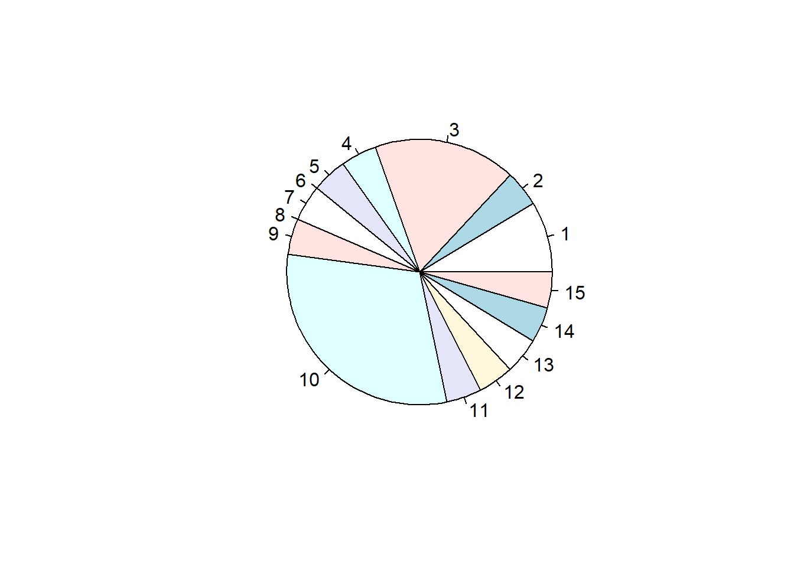
barplot(data$pics) # Balkendiagramm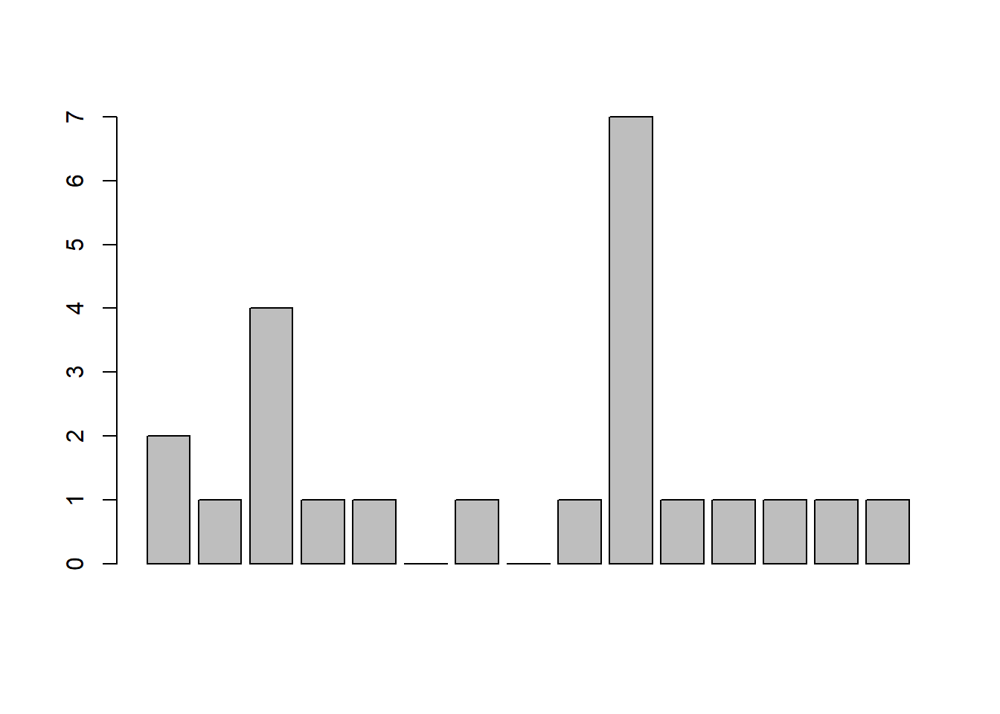
Beide Darstellungen sind nicht sonderlich hilfreich. Häufig ist eine der zentralen Aufgaben der visuellen Darstellung, sich zu überlegen, ob die Daten schon im richtigen Format für eine sinnvolle Darstellungen sind. Das kann mühsam sein, insbesondere da R in Fällen wie oben keinen Fehler ausgibt. Die Darstellungen bzw. Befehle sind nämlich formal nicht falsch (z.B. seitens der Syntax), sie sind allerdings inhaltlich nicht sinnvoll bzw. haben schlicht keinen Mehrwert.
Welche der folgenden Darstellungen ist sinnvoll?
dotchart(table(data$pics))Warning in dotchart(table(data$pics)): 'x' ist weder Vektor noch Matrix: nutze
as.numeric(x)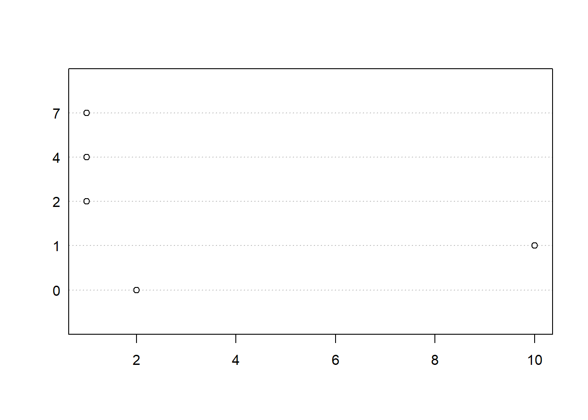
plot(table(data$pics))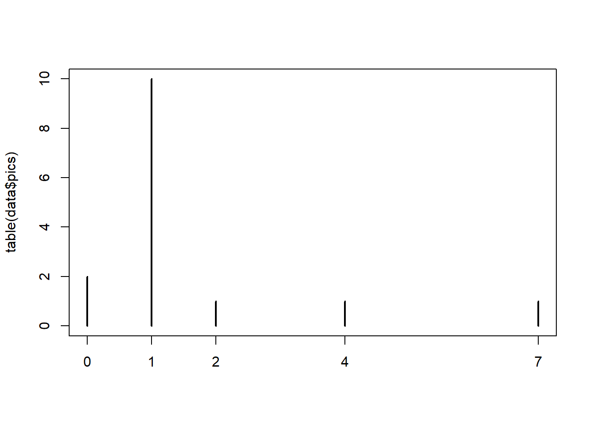
pie(table(data$pics))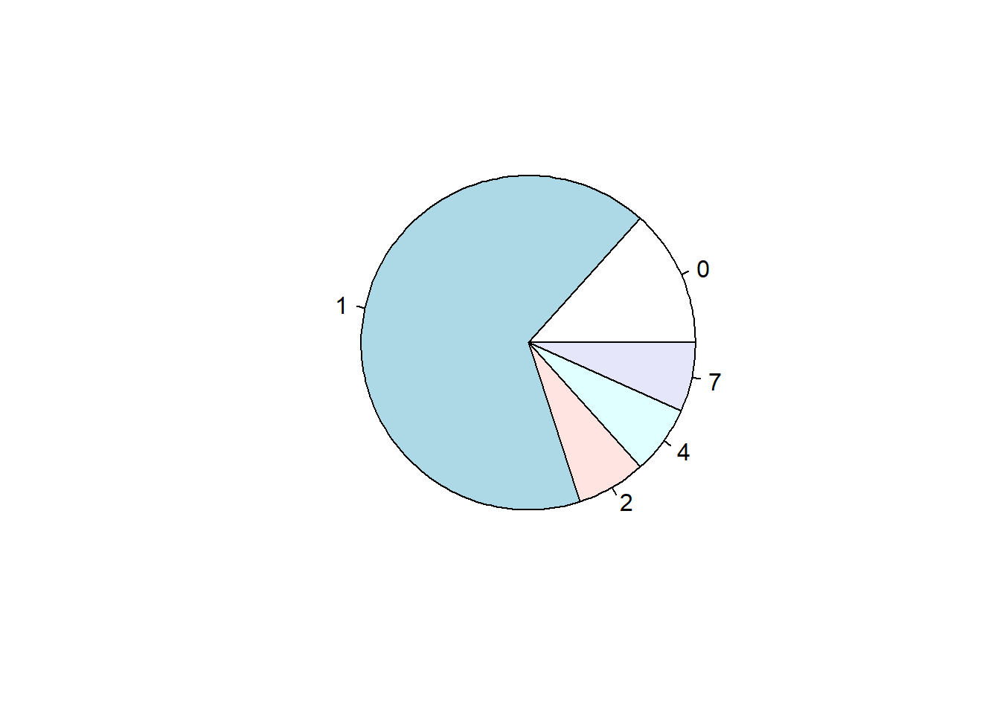
Sehr oft ist eine Darstellung der Rohdaten alleine nicht sinnvoll oder nicht gewünscht, sondern gewisse Bearbeitungsschritte sind notwendig, um die Daten in eine Form zu bringen, die finale Analyse durchführen zu können. Tatsächlich machen solche Datenbearbeitungsschritte meist den Grossteil der Analysearbeit in empirischen Projekten aus. Auch wir haben das rudimentär schon gemacht, nämlich als wir den Mittelwert nach Gruppen getrennt aufgeschlüsselt haben. Auch hier profitieren wir davon und können unsere Ergebnisse grafisch darstellen:
barplot(outlet_means$mean_value)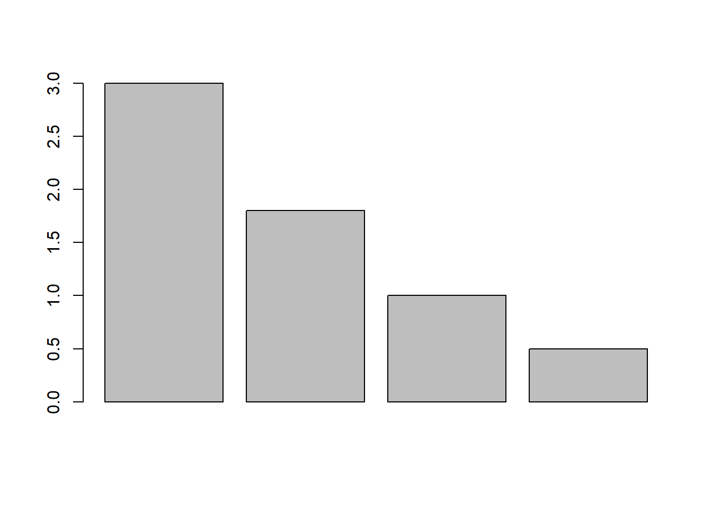
Diese Darstellung ist allerdings noch arg trostlos und auch unvollständig. Mit weiteren Argumenten können der Darstellung aber noch sinnvolle und notwendige Elemente hinzugefügt werden:
barplot(outlet_means$mean_value, names.arg = outlet_means$outlet, xlab = "Medienhäuser", ylab = "Durchschnittle Anzahl Bilder", col = heat.colors(4))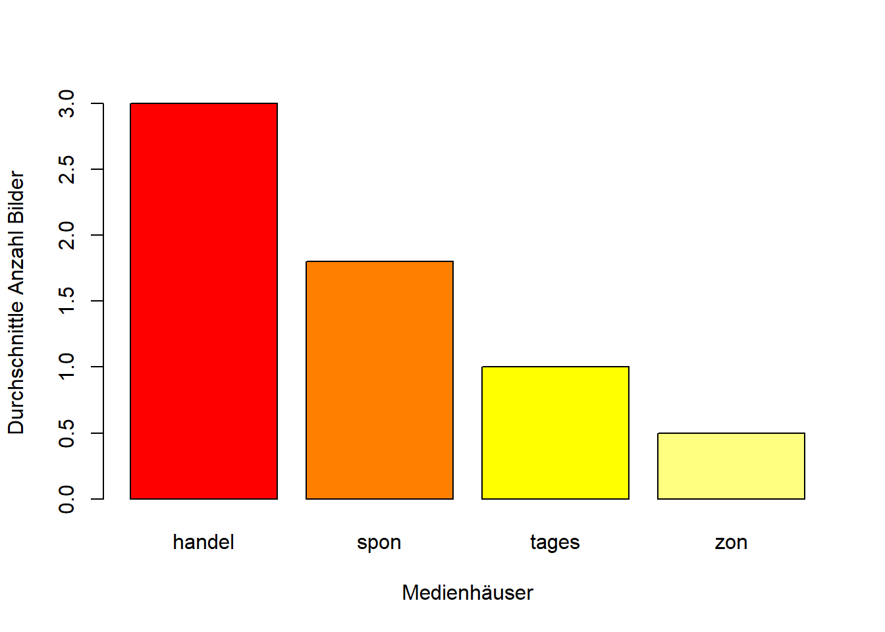
Erinnerung Mit dem Befehl ? hier z.B.: ?barplot() könnt ihr die Hilfe für den jeweiligen Befehl aufrufen. Hier seht ihr, welche Argumente grundsätzlich für den jeweiligen Befehl möglich sind und in welcher Art und Wiese diese in dem Befehl aufgeschrieben werden müssen.
Schaut mal in die Hilfe und versucht eigenständig, einen Gesamttitel für das Balkendiagramm einzufügen.
Die Farben können übrigens auch von euch frei gewählt werden, z.B. in dem ihr das aktuelle Argument für Farben durch folgende Codes ersetzt (siehe HTML-Farbcode für feinstufige Farbauswahl):
barplot(outlet_means$mean_value, names.arg = outlet_means$outlet, xlab = "Medienhäuser", ylab = "Durchschnittle Anzahl Bilder", col = colors <- c("#FF0000", "#0000FF", "#008000","#FFA500")
)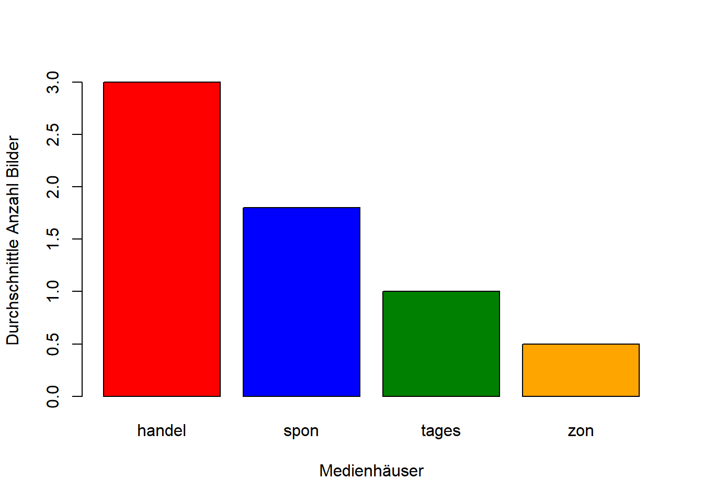
Genauso können für eine bessere Verständlichkeit auch die Namen der Medienhäuser in der entsprechenden Spalte noch ausgeschrieben werden. Dann werden sie in der Darstellung auch entsprechend angezeigt:
outlet_means$outlet <- c("Handelsblatt","Spiegel Online","Tagesschau","Zeit Online") #Achtung, auf richtige Reihenfolge achten!
barplot(outlet_means$mean_value, names.arg = outlet_means$outlet, xlab = "Medienhäuser", ylab = "Durchschnittle Anzahl Bilder", col = colors <- "lightblue")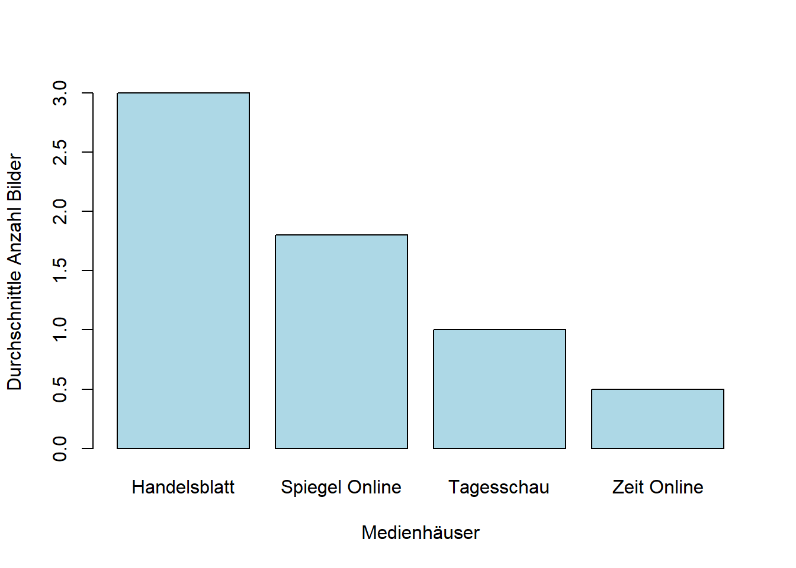
Die Masszahlen und Darstellungsformen soweit waren sehr allgemein und auf alle Arten von Daten anwendbar. Zuletzt wollen wir noch eine Darstellungsform kennen lernen, die spezifisch für Textdaten anwendbar ist: Wortwolken
Hierfür ist es hilfreich, ein Paket (bzw. zwei) zu installieren, welches spezifisch für die Arbeit mit Textdaten geschaffen wurde:
install.packages(c("quanteda", "quanteda.textplots"))Paket 'quanteda' erfolgreich ausgepackt und MD5 Summen abgeglichenPaket 'quanteda.textplots' erfolgreich ausgepackt und MD5 Summen abgeglichen
Die heruntergeladenen Binärpakete sind in
C:\Users\Michael\AppData\Local\Temp\RtmpCgQUM5\downloaded_packageslibrary(quanteda)
library(quanteda.textplots)Die Autoren dieses Pakets haben uns viel Arbeit erspart und machen es uns einfach: Um nun eine Wortwolke zu erzeugen sind nur drei einfache Schritte notwendig. Ihre Bedeutung habe ich in den Kommentaren im Code erläutert:
text_tokens <- tokens(data$text) #die Texte der Artikel werden in einzelne Wörter aufgetrennt
text_matrix <- dfm(text_tokens) #die aufgetrennten Wörter werden nun in einer speziellen Matrixform gespeichert (Document-Feature-Matrix DFM)
textplot_wordcloud(text_matrix) # aus dieser DFM wird eine Wortwolke kreiert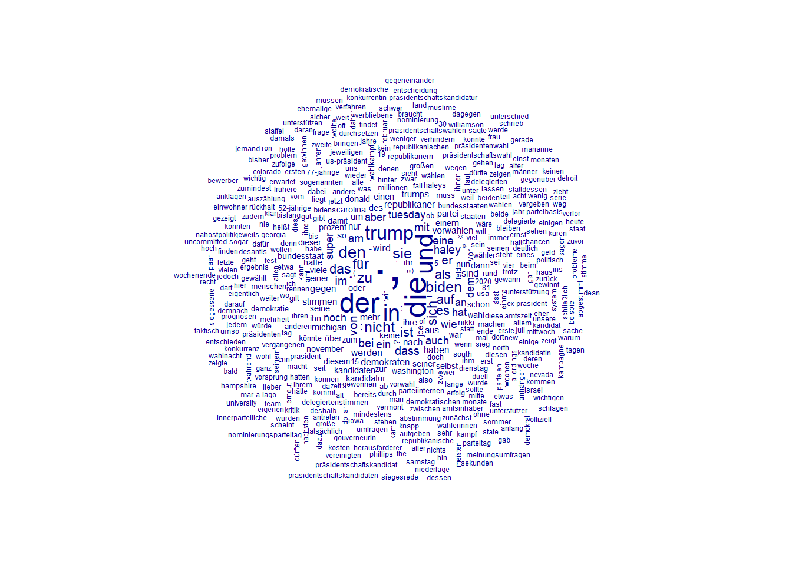
Das ist schon ganz cool, aber auch ein wenig unübersichtlich. Wir wollen die Wolke nun auf die 50 häufigsten Wörter (hier: tokens) limitieren Das ist durch quanteda einfach möglich, da es im Befehl für die Wordcloud ein Argument gibt, die Grösse zu beschränken (siehe ?textplot_wordcloud()):
textplot_wordcloud(text_matrix, max_words = 50)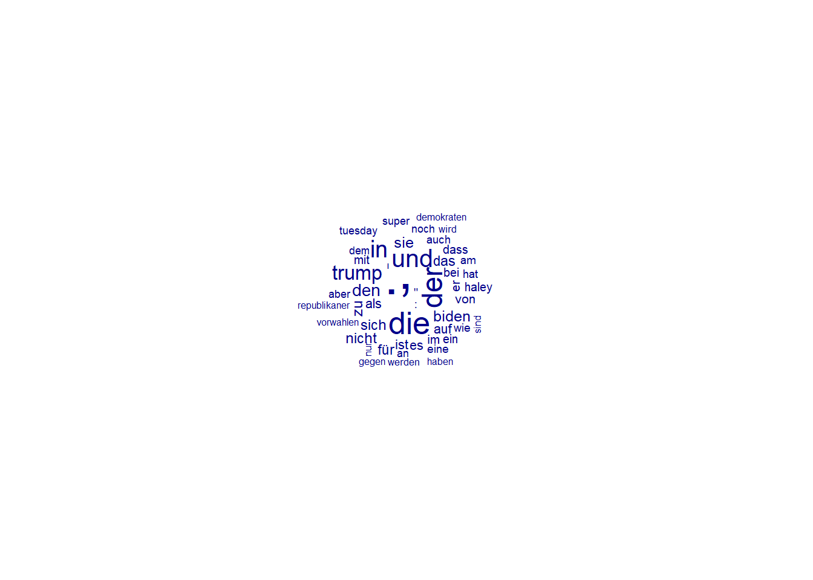
Nun ist diese Darstellung allerdings übersichtlich, aber noch nicht sehr hilfreich, da wir lauter inhaltslose Füllwörter wie “der”, “die”, “und”, etc. haben. Solche inhaltslose Füllwörter werden als “Stopwords” bezeichnet. Für verschiedene Sprachen sind hier in dem Paket quanteda bereits Listen hinterlegt, die festlegen welche Wörter als solche stopwords zählen (wir können solche Listen auch selbst definieren). Diese existierende Liste können wir uns auch anzeigen lassen:
stopwords("german") [1] "aber" "alle" "allem" "allen" "aller" "alles"
[7] "als" "also" "am" "an" "ander" "andere"
[13] "anderem" "anderen" "anderer" "anderes" "anderm" "andern"
[19] "anderr" "anders" "auch" "auf" "aus" "bei"
[25] "bin" "bis" "bist" "da" "damit" "dann"
[31] "der" "den" "des" "dem" "die" "das"
[37] "daß" "derselbe" "derselben" "denselben" "desselben" "demselben"
[43] "dieselbe" "dieselben" "dasselbe" "dazu" "dein" "deine"
[49] "deinem" "deinen" "deiner" "deines" "denn" "derer"
[55] "dessen" "dich" "dir" "du" "dies" "diese"
[61] "diesem" "diesen" "dieser" "dieses" "doch" "dort"
[67] "durch" "ein" "eine" "einem" "einen" "einer"
[73] "eines" "einig" "einige" "einigem" "einigen" "einiger"
[79] "einiges" "einmal" "er" "ihn" "ihm" "es"
[85] "etwas" "euer" "eure" "eurem" "euren" "eurer"
[91] "eures" "für" "gegen" "gewesen" "hab" "habe"
[97] "haben" "hat" "hatte" "hatten" "hier" "hin"
[103] "hinter" "ich" "mich" "mir" "ihr" "ihre"
[109] "ihrem" "ihren" "ihrer" "ihres" "euch" "im"
[115] "in" "indem" "ins" "ist" "jede" "jedem"
[121] "jeden" "jeder" "jedes" "jene" "jenem" "jenen"
[127] "jener" "jenes" "jetzt" "kann" "kein" "keine"
[133] "keinem" "keinen" "keiner" "keines" "können" "könnte"
[139] "machen" "man" "manche" "manchem" "manchen" "mancher"
[145] "manches" "mein" "meine" "meinem" "meinen" "meiner"
[151] "meines" "mit" "muss" "musste" "nach" "nicht"
[157] "nichts" "noch" "nun" "nur" "ob" "oder"
[163] "ohne" "sehr" "sein" "seine" "seinem" "seinen"
[169] "seiner" "seines" "selbst" "sich" "sie" "ihnen"
[175] "sind" "so" "solche" "solchem" "solchen" "solcher"
[181] "solches" "soll" "sollte" "sondern" "sonst" "über"
[187] "um" "und" "uns" "unse" "unsem" "unsen"
[193] "unser" "unses" "unter" "viel" "vom" "von"
[199] "vor" "während" "war" "waren" "warst" "was"
[205] "weg" "weil" "weiter" "welche" "welchem" "welchen"
[211] "welcher" "welches" "wenn" "werde" "werden" "wie"
[217] "wieder" "will" "wir" "wird" "wirst" "wo"
[223] "wollen" "wollte" "würde" "würden" "zu" "zum"
[229] "zur" "zwar" "zwischen" Diese Wöter wollen wir nun aus unseren Texten entfernen. Das geht wie folgt. Wir fangen dabei wieder bei unseren Ausgangsdaten an und der Code ist fast identisch zu davor. Mit einem kleinen Zusatz. Schau gerne ob du ihn entdeckst und erraten kannst, was dort passiert und auch, was ich sonst noch geändert habe und warum:
text_tokens <- tokens(data$text, remove_punct = TRUE)
text_tokens <- tokens_remove(text_tokens, pattern = stopwords("german"))
text_matrix <- dfm(text_tokens)
textplot_wordcloud(text_matrix, max_words = 50)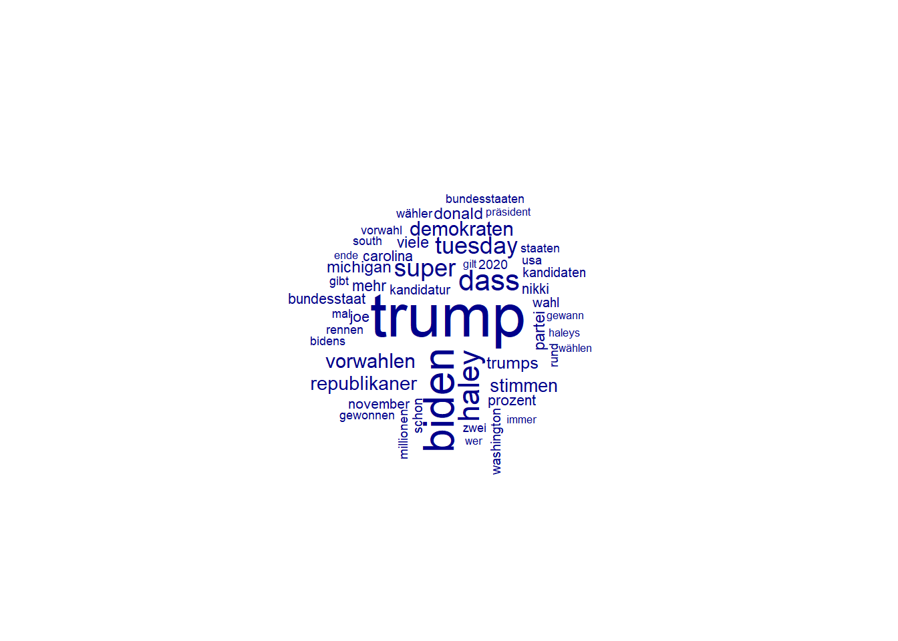
Spannend wäre auch, als nächstes zu schauen, ob sich die häufigsten Wörter in den Texten je nach Medienhaus unterscheiden. Hat jemand eine Idee wie man das mit den Methoden, die wir bisher kennen gelernt haben grafisch analysieren könnte?
Ich kann euch sehr empfehlen, euch mal die Beispielseite von quanteda anzuschauen. Abseits der Wortwolke, sind hier noch weitere wirklich hilfreiche Darstellungsformen gut verständlich aufbereitet. Insgesondere die Frequency Plots, siehe hier, könnten für die ein oder andere Auswertung möglicherweise interessant sein (dort wird dann auch auf das oben bereits kurz erwähnte Paket für grafische Darstellungen ggplot2 zurückgegriffen).
Nice to know:
Die Art und Weise wie in der Textverarbeitung Texte oft gespeichert werden - auch bei uns oben - ist ziemlich raffiniert. Schaut euch dazu die Document-Frequency-Matrix einmal an. Fällt euch was auf?
text_matrixDocument-feature matrix of: 15 documents, 2,638 features (88.24% sparse) and 0 docvars.
features
docs frühere us-präsident donald trump vorwahl präsidentschaftskandidatur
text1 1 1 1 5 2 1
text2 0 1 1 10 2 0
text3 0 0 3 13 3 1
text4 1 0 2 10 0 0
text5 0 0 2 29 0 0
text6 0 1 1 7 0 0
features
docs republikaner bundesstaat south carolina
text1 4 4 6 6
text2 5 2 2 2
text3 4 2 0 1
text4 2 3 1 1
text5 2 1 0 1
text6 3 2 0 0
[ reached max_ndoc ... 9 more documents, reached max_nfeat ... 2,628 more features ]Tipp: Es ist geübte Praxis, alle Pakete, die im Verlauf eines Scriptes benötigt werden, ganz oben im Script aufzurufen. Das heisst, anstelle dass ihr nun die bisherigen Pakete (readxl, stringr, quanteda, etc.) jeweils an den Stellen installiert und aktiviert, an denen der relevante Code folgt, könnt ihr alle Pakete oben zu Anfang eures Scripts aufrufen. Sollte ein weiteres Paket im Verlauf nötig sein, könnt ihr es oben einfügen und ausführen. In der Zukunft habt ihr dann direkt zu Anfang einen Überblick über die benötigten Pakete und sie stören den Ablauf im weiteren Script nicht mehr.
17. Dezember 2025
Bevor man mit latenten Konzepten wie Emotionalität, Humor, etc. weiter arbeitet, ist es wichtig, sich zu vergewissern, dass die gemessenen Konzepte valide und reliabel sind. Hohe Reliabilität bedeutet, dass verschiedene Leute bei der Einschätzung von gegebenen Texten in Bezug auf ein Kozept (z.B. Humor) zu ähnlichen oder gleichen Ergebnissen kommen. Dies macht eine Analyse intersubjektiv nachvollziehbar und die Chance ist hoch, dass auch andere Coder in der Zukunft zu dem gleichen Ergebnis kommen. Reliabilität stellt daher ein wichtiges wissenschaftliches Gütekriterium dar.
Niedrige Reliabilität wiederum liegt vor, wenn sich verschiedene Leute bei gegebenen Texten nicht auf die Ausprägung eines Konzeptes einigen können. Wenn beispielsweise Coder A zu einem Text sagt, dass dieser humorvoll ist, Coder B hingegen sagt, dass der Text nicht humorvoll ist, dann können wir uns nicht sicher sein, welcher Fall nun zutrifft. Weder das eine, noch das andere scheint uneingeschränkt richtig zu sein. Es fehlt also eine reliable Einschätzung und es kann mit einer Analyse nicht fortgefahren werden.
Es gibt etliche Gründe, warum die Reliabilität möglicherweise unzureichend ist. Verschiedene Leute könnten (z.B. aus kulturellen, alters oder geschlechtlichen) Gründen Konzepte unterschiedlich wahrnehmen. Manche Konzepte sind schwierig klar abzutrennen oder schwierig zu verstehen. Auch Texte können schwierig sein was eine klare Einordnung betrifft. Teils existieren auch schlicht Missverständnisse und ein ausführlicheres Training der Coder kann Abhilfe schaffen.
Während Validität primär über die Literatur und Theorie begründet wird, wird bei Inhaltsanalysen die Reliabilität häufig auch als Indikator für die Validität herangezogen. Obwohl hohe Reliabilität eine notwendige, aber keine hinreichende Bedingung für Validität ist, gibt es bei sozialwissenschaftichen (oft latenten) Konzepten oft keine “endgültige Wahrheit”. Daher wird, bei hoher Reliabilität im Urteil, die Meinung von Codern oft als endgültige Wahrheit definiert.
Es existieren unterschiedliche Masszahlen um die Reliabilität zwischen Codern quantitativ zu bestimmen. Eine sehr populäre Masszahl ist Krippendorff’s Alpha, welche auch wir verwenden. Krippendorff’s Alpha ist sehr flexibel was die Anzahl der Coder betrifft und kommt mit unterschiedlich skalierten Bewertungen zurecht. Auf einer Skala von 0 bis 1 gibt diese Masszahl an, wie gut die Urteile verschiedener Coder zu gleichen Sachverhalten (bei uns Texten) übereinstimmen. Eine 1 zeigt eine perfekte Reliabilität an, eine 0 die vollständige Abwesenheit von Reliabilität.
Für ein Mindestmass an wissenschaftlicher Güte und Reliabilität sollte Alpha mindestens Werte von 0,667 annehmen, besser wären Werte von 0,8 und höher.
Sofern Bewertungen verschiedener Coder zu mehreren Texten vorhanden sind, lässt sich Krippendorff’s Alpha in R leicht ausrechnen.
# Ein neues Paket wird für die Berechnung von Krippendorff's Alpha benötigt
install.packages("irr") Warning: Paket 'irr' wird gerade benutzt und deshab nicht installiertlibrary(irr)# Die relevanten Spalten aus "data", also die Bewertungen der drei Coder
# werden in einer neuen Datentabelle abgespeichert. (Ihr seht dann rechts
# im Environment den neuen Datensatz mit dem namen "bewertungen")
bewertungen <- data[, c("tone_trump_c1","tone_trump_c2", "tone_trump_c3")]
# Berechnung von Krippendorff's Alpha
kripp.alpha(t(bewertungen), method = "ordinal") Krippendorff's alpha
Subjects = 15
Raters = 3
alpha = 0.777 Mit dem Befehl kripp.alpha() wird Krippendorff’s Alpha berechnet. t() innerhalb von kripp.alpha()ist notwendig, um die Datentabelle bewertungen zu transponieren und sie in ein Format zu bringen, welches den Spezifikationen des Befehls kripp.alpha() entspricht.
Achtet darauf, hier korrekt vorzugehen, andernfalls kann es zu falschen Ergebnissen führen oder dazu, dass es nicht funktioniert und ihr frustriert seid!
Im Output von kripp.alpha() sehen wir drei Angaben. “Subjects” gibt an, wie viele Texte codiert wurden. “Raters” gibt an, wie viele Coder involviert waren und alpha gibt uns schliesslich das gewünschte Krippendorff’s Alpha für die Reliabilität der drei Codierer zu diesen 15 Texten. In diesem fiktiven Beispiel ist alpha 0.777. Das ist eine ausreichende, wenngleich nicht optimale Reliabilität. Wenn ihr in die Daten schaut, könnt ihr sehen, dass die Codierer mit ihrem Urteil bei drei von 15 Texten nicht übereingestimmt haben.
Wichtig ist, dass ihr das korrekte Skalenniveau beachtet. Das wird über die Option method = "ordinal" oder method = "nominal" innerhalb des Befehls kripp.alpha() gelöst. Bei Tonalität (wie in unserem Fall) kann meist argumentiert werden, dass ein ordinales Skalenniveau vorliegt, da die Abstände zwar unklar sind, aber eine klare Reihung oder Ordnung existiert. Das wird bei der Berechnung der Reliabilität berücksichtigt. So ist es beispielsweise weniger gravierend, wenn ein tatsächlich positiver Artikel als neutral eingestuft wird, als wenn er als negativ eingestuft wird. Letztere fehlende Übereinstimmung ist somit „schwerwiegender“ als erstere, da die Distanz zwischen den Kategorien größer ist. Bei einer nominalen Skala wäre diese Distanz irrelevant, und beide Fehlklassifikationen würden gleich gewichtet.
Deutlicher wird es bei folgenden Beispielen: Wir wollen das Sentiment eines Textes auf einer feingliedrigen 7-er Skala bestimmen. Von “sehr negativ” über “negativ”, “etwas negativ”, “neutral”, bis hin zu “sehr positiv”. Wenn nun eine Person einen Text als “sehr negativ” und eine andere Person den selben Text als “negativ” einstuft, dann ist das zwar ein Widerspruch, aber inhaltlich liegen sie schon sehr nahe bei einander. Der Widerspruch wäre viel dramatischer, wenn eine dritte Person der Meinung ist, dass der selbe Text “positiv” sei. Letzteres würde gravierendere Abzüge hinsichtlich der Reliabilität geben, was intuitiv sinnvoll ist.
Wenn wir hingegen codieren, um was für einen Akteurstyp sich ein Akteur handelt, haben wir eine nominale Skala. Wenn eine Person einen Akteur als “NGO” klassifiziert, eine andere Person den selben Akteur hingegen als “Regierung”, dann ist der Widerspruch im Regelfall genauso gravierend wie wenn eine dritte Person den betreffenden Akteur als “Opposition” bezeichnet. Wir haben in jedem Fall einen gleichwertigen Widerspruch, es gibt kein “weniger falsch” oder “fast richtig”, wie das bei ordinalen (oder metrischen) Variablen der Fall sein kann.
Wichtig: Die Reliabilität wird für jedes Konzept/Kategorie extra bestimmt und angegeben. Sollte die Güte der Reliabilität nicht den gewohnten Gütekriterien entsprechen (im Regelfall mindestens 0.667, idealerweise mindestens 0.8), dann solltet ihr überlegen, was die Gründe hierfür sind und ggf. darauf reagieren.
17. Dezember 2025
Zusätzlich schauen wir uns heute an, wie statistische Tests in R durchgeführt werden können. Dabei wird nicht oder kaum darauf eingegangen, wie diese Tests mathematisch funktionieren oder in welchen Situationen und unter welchen Bedingungen sie geeignet sind. Schaut dafür bitte in die Aufzeichnungen oder Unterlagen eurer Methoden/Statistik-Kurse.
Generell gilt (grob gesagt) bei einem empirischen Projekt bzw. der statistischen Auswertung folgende Prozessreihenfolge:
1) Was ist mein Forschungsinteresse, meine Forschungsfrage und/oder meine Hypothese(n)
2) Welches Analyse (z.B. statistischer Test) beantwortet meine Forschungsfrage oder Hypothese(n)
3) Sind die Bedingungen für die Analyse/den Test gegeben.
4) Analyse/Test durchführen
Punkt 1 ist für euch meist bereits geklärt bzw. das wurde bereits behandelt. Zu Punkt 2 und 3 habt ihr etwas in euren Methoden/Statistikkursen gelernt, diese solltet ihr nötigenfalls nochmals konsultieren. Punkt 4 wird euch hier beigebracht. Als Forschungsfrage interessiert uns für dieses Tutorial, ob sich die Anzahl an Fotos in den Artikeln eines Outlets (z.B. Handelsblatt) von der Anzahl an Fotos in Artikeln anderer Outlets unterscheidet. In eurem Projekt wird die Frage anders, aber vermutlich ähnlich aussehen, beispielsweise, ob sich die Tonalität oder das Framing der Berichterstattung zwischen zwei Ländern unterscheidet.
In einem/eurem richtigen Projekt solltet ihr Punkte 2 und 3 durchführen. Für dieses Tutorial überspringen wir diese Punkte und legen uns auf den Mittelwertvergleich (t-Test) fest. Ob dieser Test für euch in Frage kommt, hängt von eurer Forschungsfrage ab und der Art der Daten, die ihr habt. Das solltet ihr selbst einschätzen können.
Um die Durchführung in R zu lernen, arbeiten wir erneut mit unserem Testdatensatz. Bitte lest diesen erneut in R ein. Wer sich nicht erinnert wie das geht, findet die Anleitung oben in den Ausführungen.
Der t-Test ist ein häufig angewandter statistischer Test um zu prüfen, ob sich ein Mittelwert einer Variable von einem anderen Wert (z.B. der Mittelwert einer anderen Variable oder von einem festen Wert) unterscheidet. Der t-Test ist beispielsweise gefragt, wenn man testen möchte, ob sich die mittlere Körpergröße einer Gruppe von Menschen von der Durchschnittskörpergröße einer anderen Gruppe unterscheidet. In unserem Kontext wäre ein Anwendungsgebiet, ob sich die mittlere Anzahl an Nennungen von “Trump” in Artikeln eines Zeitungshauses von der mittleren Anzahl an Nennungen von “Trump” in Artikeln eines anderen Zeitungshauses unterscheiden.
Für unsere Frage interessieren uns als Variable die Anzahl der Fotos. Und die Gruppen, zu denen wir die Anzahl an Fotos vergleichen wollen, sind vier unterschiedliche Outlets (hier: Spiegel Online, Zeit Online, Handelsblatt und Tagesschau). Zu Beginn ist es immer hilfreich, sich einen Überblick zu verschaffen. Dazu gehört zunächst, sich die Mittelwerte der Anzahl der Fotos pro Artikel anzuschauen.
Die durchschnittliche Anzahl an Fotos insgesamt lässt sich leicht ausrechnen, das haben wir bereits oben gelernt:
mean(data$pics)[1] 1.533333Jetzt wollen wir uns anschauen, was die Durchschnittswerte für die vier Outlets sind. Es gibt unterschiedliche Wege, den Mittelwert für mehrere Gruppen zu berechnen. Eine der elegantesten Lösungen ist (dafür braucht ihr das Package dplyr):
outlet_means <- data %>% group_by(outlet) %>% summarise(mean_value = mean(pics))
outlet_means# A tibble: 4 × 2
outlet mean_value
<chr> <dbl>
1 handel 3
2 spon 1.8
3 tages 1
4 zon 0.5Wir sehen, dass es erhebliche Unterschiede in der Anzahl der Fotos pro Artikel zwischen den vier Outlets gibt. Jetzt wollen wir aber wissen, ob der Unterschied in der Anzahl der Fotos zwischen Handelsblatt und dem Rest auch statistisch signifikant ist.
Dazu wenden wir nun schon den t-Test an. Dieser wird mit dem Befehl t.test() in R aufgerufen. Damit R weiss, welche Mittelwerte es vergleichen soll, müssen wir diese R mitteilen. Die Logik ist dabei t.test(Werte der Variable von Gruppe A, Werte der Variable von Gruppe B). Die Variable ist die Anzahl der Fotos und die Gruppen sind unsere Outlets.
Dazu teilen wir unsere Daten in die beiden Gruppen, die uns interessieren. Einmal alle Artikel vom Handelsblatt und das andere Mal der Rest. Das geht mit dem subset()-Befehl:
handel_data <- subset(data, data$outlet=="handel")
# Mit diesem Befehl werden alle Daten, die in der Spalte "outlet" den Wert "handel" haben in eine neue Tabelle namens "handel_data" geschrieben
no_handel_data <- subset(data, data$outlet!="handel")
# Das "!=" bedeutet "nicht". Hier werden also alle Daten, die in der Spalte "outlet" NICHT den Wert "handel" haben in eine neue Tabelle namens "no_handel_data" geschrieben. Nun können wir schon den t-Test auf die Daten beider Gruppen anwenden:
t.test(handel_data$pics, no_handel_data$pics)
Welch Two Sample t-test
data: handel_data$pics and no_handel_data$pics
t = 0.9067, df = 2.0892, p-value = 0.4567
alternative hypothesis: true difference in means is not equal to 0
95 percent confidence interval:
-6.520178 10.186844
sample estimates:
mean of x mean of y
3.000000 1.166667 Alternativ kann man sich die Befehle subset() sparen, und die Definition der Gruppen (=> Teilmengen), also Artikel von Handelsblatt vs. Artikeln von allen anderen direkt im t-test-Befehl machen. Das geht so:
t.test(data$pics[data$outlet!="handel"], data$pics[data$outlet=="handel"])
Welch Two Sample t-test
data: data$pics[data$outlet != "handel"] and data$pics[data$outlet == "handel"]
t = -0.9067, df = 2.0892, p-value = 0.4567
alternative hypothesis: true difference in means is not equal to 0
95 percent confidence interval:
-10.186844 6.520178
sample estimates:
mean of x mean of y
1.166667 3.000000 Hinweis: In aller Regel dauert es in einem realen Projekt deutlich länger, die Daten in die Form zu bekommen, die es erlaubt den angestrebten Test durchzuführen, als die Dauer (oder Kompliziertheit) des Tests selbst. Oft muss man Daten erst bereinigen oder umformen, was teils sehr aufwendig ist. Der finale Test geht dann oft sehr schnell und einfach. Also: Nicht verunsichern lassen, wenn ihr viel Zeit darauf verwendet, die Daten in eine Form zu bekommen, die notwendig ist den t-Test (oder andere Tests) anzuwenden.
Zurück zum Beispiel. Im Ergebnis des t.test()-Befehls bekommt man nun ein mehrzeiliges Ergebnis. Das wird wie folgt interpretiert:
In der ersten Teile seht ihr nochmals den Code, der genutzt wird, die Daten für den t-Test zu definieren, also die beiden Gruppen.
In den letzten zwei Zeilen seht ihr den Mittelwert für die beiden Gruppen. x ist die linke Gruppe, also alle Outlets ohne Handelsblatt. Demnach haben die drei Outlets (Spiegel Online, Zeit Online und Tagesschau) einen Mittelwert von 1,1667 Bilder pro Artikel. Das Handelsblatt hingegen 3 (diesen Wert haben wir oben schon herausgefunden, es ist immer gut, Ergebnisse auf Plausibilität zu prüfen und sie idealerweise gegen zu checken).
Der p-Wert in Zeile 2 ganz rechts gibt euch schliesslich an, ob sich die Mittelwerte der beiden Gruppen statistisch unterscheiden. Es handelt sich um einen statistisch signifikanten Unterschied, wenn p < 0,05. Mit einem p-Wert von 0,457 handelt es sich bei der Anzahl an Bildern also nicht um einen statistisch signifikanten Unterschied zwischen den beiden Gruppen.
Das Ergebnis mag verblüffen, da im Handelsbaltt im Mittel mehr als doppelt so viele Fotos sind als in allen anderen Outlets. Allerdings haben wir in dem Testdatensatz auch nur sehr wenige Daten. Damit ist es schwer eine robuste Aussage über die statistische Signifikanz des Unterschieds zu treffen. Bei kleinen Stichproben kann die Varianz stark schwanken, was die Zuverlässigkeit eines t-Tests beeinträchtigt. In solchen Fällen ist es sinnvoll, mit mehr Daten die Stichprobengrösse zu erhöhen, um eine genauere Einschätzung der Mittelwertunterschiede der beiden Gruppen zu erhalten. In unserem Fall konkret sind die Unterschiede in der durchschnittlichen Anzahl an Fotos zwischen den beiden Gruppen recht gross (der eine Wert ist mehr als doppelt so gross wie der andere). Es ist daher sehr wahrscheinlich, dass die Unterschiede bei grösserer Stichprobengrösse signifikant werden (d.h., dass der p-Wert dann kleiner als 0,05 ist). Das ist aber keinesfalls garantiert. Es kann durchaus sein, dass wir zufällig ein paar Artikel aus dem Handelsblatt ausgefwählt haben, die viele Fotos beinhalten. Möglicherweise haben viele andere keine oder nur sehr wenige Fotos. Daher sollte man mit Prognosen vorsichtig sein und sich nur auf tatsächliche Tests mit tatsächlichen Daten verlassen.
Anstatt zu testen, ob ein Unterschied zwischen Variablen besteht, gibt es eine Reihe weiterer Testverfahren den Zusammenhang von Variablen zu prüfen. Eine solche Methode ist, die Korrelation zwischen zwei oder mehr Variablen zu testen. Es gibt drei Korrelationstypen: a) Positive Korrelation: Wenn die eine Variable steigt, steigt auch die andere, b) negative Korrelation: Wenn die eine Variable steigt, sinkt die andere, c) Keine Korrelation: Es gibt keinen erkennbaren Zusammenhang zwischen den Variablen. Man könnte beispielsweise untersuchen, ob zwischen der Körpergröße von Menschen und deren Gewicht ein Zusammenhang besteht. Da wir wissen, dass bei steigender Körpergröße das Gewicht in der Tendenz steigt, spricht man hier von einer positiven Korrelation.
Wie den t-Test, kann man die Korrelation in R leicht und mit nur einem Befehl testen. Der Befehl hierfür ist cor.test() und die Syntax ist identisch zu der des t.test(). Aber auch hier ist es nochmal wichtig zu sagen, dass ihr den Korrelationstest nur anwenden solltet, wenn es eure Hypothese oder Forschungsfrage erforderlich macht. Das heißt, ihr startet bei der Forschungsfrage und schaut, welcher Test notwendig ist. Diese Arbeit kann in einem Tutorial nicht geleistet werden, da eure Forschungsfragen individuell sehr unterschiedlich sind, was auch eure Anforderungen an die Methodik unterschiedlich macht.
Zur Illustration wählen wir hier hingegen eine hypothetische Forschungsfrage bzw. eine Hypothese, die sich mit unseren Beispieldaten prüfen lässt: Hängt die Länge der Überschrift, mit der Länge des Artikels zusammen? Unsere Hypothese wäre, dass hier kein Zusammenhang besteht, da Überschriften gewöhnlich sehr ähnlich und daher von ähnlicher Länge sind, ganz unabhängig, wie lang der Artikel ist.
Um diese Hypothese zu prüfen benötigen wir zwei Variablen: Die Längen der Überschriften und die Längen der Artikeltexte. Wir haben zwar die Überschriften und Texte, aber nicht die Länge dieser beiden Variablen. Das heißt, wir müssen diese Information erst aus den Überschriften und Texten generieren. Das ist ein gutes und praxisnahes Beispiel, welches zeigt, dass der Weg, Daten in das benötigte Format zu bekommen, beträchtlich länger und aufwendiger sein kann als der finale Test.
Um die Länge der beiden Variablen headline und text zu bestimmen, benötigen wir den Befehl nchar(). Wie der Name insinuiert, bestimmt nchar() die Länge von Texten (Variablen vom Type character):
data$length_head <- nchar(data$headline)
data$length_text <- nchar(data$text)Nachdem wir in zwei (zugegeben einfachen) Schritten die Textlänge der beiden Variablen bestimmt haben, können wir direkt den Korrelationstest mit nur einer Zeile Code darauf anwenden. Die Syntax ist quasi identisch zu der des t-Tests.
cor.test(data$length_head, data$length_text)
Pearson's product-moment correlation
data: data$length_head and data$length_text
t = -1.5046, df = 13, p-value = 0.1563
alternative hypothesis: true correlation is not equal to 0
95 percent confidence interval:
-0.7495077 0.1584097
sample estimates:
cor
-0.3851033 Auch die Interpretation ist ähnlich zum t-Test. In der untersten Zeile wird der Korrelationskoeffizient angezeigt. Dieser ist mit -0,39 negativ. Das heisst, wenn die Überschriften länger werden, werden die Artikeltexte in der Tendenz kürzer. Allerdings ist der p-Wert (Zeile 2) mit 0,16 größer als 0,05. Das heisst, dass kein signifikanter Zusammenhang zwischen den Längen der beiden Variablen besteht. Unsere Hypothese, dass es keinen Zusammenhang zwischen der Länge der Überschrift und der Länge des Artikeltextes gibt kann daher vorläufig bestätigt werden. Auch hier haben wir allerdings noch sehr wenig Daten. Idealerweise wären für einen aussagekräftigeren Test mehr Daten gefordert.
Bitte informiert euch für die Auswertung eurer Daten, welcher Test bzw. welche Analyse für eure Forschungsfrage sinnvoll bzw. gefordert ist. Hier wurden mit dem t-Test und dem Korrelationstest zwei Verfahren gezeigt. Diese können für eure Fragen relevant sein, das muss aber nicht so sein. Nicht ideal wäre, wenn ihr einen Test anwendet, der für eure Forschungsfrage keine Relevanz hat, bzw. unsinnig ist. Konsultiert im Zweifel eure Aufzeichnungen der Methoden und Statistik-Veranstaltungen, fragt eure Kommilitoninnen oder mich.
07. Januar 2026
In den nächsten drei Sitzungen werden vier verschiedene Verfahren für die automatisierte Inhaltsanalyse vorgestellt. Begonnen wird in dieser Sitzung mit der lexikonbasierten Analyse.
Das Grundprinzip der lexikonbasierten Analyse ist einfach: Wir nehmen an, das wir basierend auf den Wörtern in einem Text auf eine abstraktere Bedeutungsebene rückschliessen können. Die Bedeutungsebene ist unser Konstrukt, z.B. Emotionalität oder Sentiment. Nun müssen wir, theoretisch fundiert, eine Liste erstellen oder eine existierende Liste nutzen, die regelt, welche Wörter für welches Konstrukt stehen. Beispielsweise würden Wörter wie “hassen” oder “Wut” vermutlich Indiz für ein negatives Sentiment des Textes sein. Hat man eine Wortliste (auch Lexikon oder Diktionär) erstellt, wendet man es auf seine Texte an. Dabei wird letztlich schlicht gezählt, wie oft die definierten Wörter vorkommen. Final legt man fest, welche Regel nun genau gilt, um einen Text einem Konstrukt zuzurodnen. Reicht es bspw., wenn ein Wort aus der Liste in einem Text einmal vorkommt oder sagen wir, dass wir mindestens fünf Treffer pro Text haben wollen, bevor wir festlegen, dass ein bestimmtes Konstrukt in dem Text repräsentiert ist. Das muss theoretisch und konzeptionell begründet werden. Damit ist die formale Analyse beendet und wir müssen am Ende noch prüfen, ob die Messung valide ist, also dem entspricht, was wir tatsächlich, theoretisch messen wollen.
Lexikonbasierte Anwendungen haben einige Vorteile. So sind sie beispielsweise sehr transparent und weil sie rein deterministisch erfolgen sind sie auch immer perfekt reliabel. Allerdings ist die Validität oft gering, weil Wörter doppeldeutig sein können, Negationen existieren, Ironie nicht erkannt werden kann, etc. Schaut hierfür bitte nochmal in die Folien der entsprechenden Sitzung, darin wird diese sehr wichtige Thematik ausführlicher besprochen.
Wir arbeiten in diesem Tutorial erneut mit dem Beispieldatenssatz, den ihr schon kennt. Zusätzlich laden wir einen weiteren Datensatz herunter. Nutzt aber gerne direkt auch eure eigenen Texte. Stärker als in der Vergangenheit können hier allerdings Probleme auftreten. Beispielsweise ist der Beispieldatensatz deutschsprachig; das ist nicht bei all euren Texten der Fall und erfordert teils Anpassungen.
Oben haben wir schon gesehen, dass in dem Paket quanteda bereits Listen von sog. “Stopwords” inkludiert sind. Also Wörter, die in aller Regel keine inhaltliche Bedeutung für einen Text haben. Genauso sind in quanteda auch bereits ein paar inhaltliche Listen integriert; namentlich das Lexicoder Sentiment Dictionary (LSD). Schauen wir uns das mal an.
library(quanteda)
data_dictionary_LSD2015Dictionary object with 4 key entries.
- [negative]:
- a lie, abandon*, abas*, abattoir*, abdicat*, aberra*, abhor*, abject*, abnormal*, abolish*, abominab*, abominat*, abrasiv*, absent*, abstrus*, absurd*, abus*, accident*, accost*, accursed* [ ... and 2,838 more ]
- [positive]:
- ability*, abound*, absolv*, absorbent*, absorption*, abundanc*, abundant*, acced*, accentuat*, accept*, accessib*, acclaim*, acclamation*, accolad*, accommodat*, accomplish*, accord, accordan*, accorded*, accords [ ... and 1,689 more ]
- [neg_positive]:
- best not, better not, no damag*, no no, not ability*, not able, not abound*, not absolv*, not absorbent*, not absorption*, not abundanc*, not abundant*, not acced*, not accentuat*, not accept*, not accessib*, not acclaim*, not acclamation*, not accolad*, not accommodat* [ ... and 1,701 more ]
- [neg_negative]:
- not a lie, not abandon*, not abas*, not abattoir*, not abdicat*, not aberra*, not abhor*, not abject*, not abnormal*, not abolish*, not abominab*, not abominat*, not abrasiv*, not absent*, not abstrus*, not absurd*, not abus*, not accident*, not accost*, not accursed* [ ... and 2,840 more ]Wir sehen, dass LSD tatsächlich sogar vier Listen enthält, mit jeweil mehreren tausend englischen Wörtern, die entweder negativ oder positiv sind, oder der jeweiligen Negation entsprechen. Es fällt auf, dass einige Wörter ein * am Ende enthalten. Dies zeigt an, dass nur der Wortstamm in der Liste enthalten ist, aber alle weiteren Zeichen nach dem Stamm, dann auch diesem Wort entsprechen. Das ist wichtig, da sehr viele Wörter eine Flexion, also eine grammatikalische Veränderung der Grundform erhalten, uns diese Flexion aber in vielen Fällen nicht interessiert. Diese Nuancen sind in der Grammatik relevant und um die Nuancen von Sprache zu verstehen, für eine Inhaltsanalyse aber oft nicht bedeutend.
Zum Beispiel würde „abolish*“ sowohl „abolish“, „abolishing“ als auch „abolishment“ erfassen. Dies ist sehr praktisch, da man dafür nicht jede Wortform einzeln in ein Lexikon aufnehmen muss. Technisch handelt es sich dabei um eine stamm-basierte Wildcard, bei der alle Wörter berücksichtigt werden, die mit demselben Wortanfang beginnen.
Eine weitere Möglichkeit, unterschiedliche Wortformen zusammenzufassen, ist das Stemming. Beim Stemming werden Wörter mithilfe einfacher Regeln auf einen Wortstamm reduziert, indem typische Endungen entfernt werden. Dieser Wortstamm ist häufig keine linguistisch korrekte Wortform, erfüllt aber den Zweck, verschiedene Flexions- und Ableitungsformen automatisch zusammenzuführen.
bedrohlich, Bedrohung, bedrohte, bedrohen → bedroh
Für Inhaltsanalysen ist diese Reduktion oft sinnvoll, da unterschiedliche Flexionsformen oder Wortarten häufig dasselbe inhaltliche Signal tragen (z. B. negatives Sentiment). Ob ein Ereignis in der Vergangenheit oder Gegenwart beschrieben wird, ist dann weniger relevant als die Bewertung selbst.
Der Vorteil des Stemmings liegt in seiner Einfachheit und Geschwindigkeit. Nachteilig ist jedoch, dass unterschiedliche Wortarten und Bedeutungsnuancen zusammenfallen können und der resultierende Stamm nicht immer eindeutig interpretierbar ist. Das maximiert teils Treffer, aber nicht unbedingt Präzision. Beispielsweise würden die Wörter “demokratisch”, “Demokratie” und “demokratisieren” alle auf den Stamm “demokrat” gekürzt werden. Für viele Fragestellungen sind das inhaltlich verschiedene Konzepte, diese Nuancen gehen verloren. Gleichzeitig kann man zu viel erfassen, wenn man zu kurze Stämme wählt, z.B. bei den Wörtern “rechts” und “Recht” oder “rechtlich”.
Eine weitergehende Methode ist die Lemmatisierung. Hierbei werden Wörter auf ihre sprachlich korrekte Grundform (Lemma) zurückgeführt. Im Gegensatz zum Stemming berücksichtigt die Lemmatisierung grammatische Informationen wie Wortart, Zeitform oder Numerus. Die verschiedenen Formen: lief, laufe, laufen, laufte, usw. würden alle auf “laufen” reduziert.
Der Vorteil der Lemmatisierung besteht darin, dass die Ergebnisse linguistisch korrekt und besser interpretierbar sind. Sie eignet sich besonders für lexikonbasierte Inhaltsanalysen, bei denen Wörter gezielt Kategorien zugeordnet werden sollen. Gleichzeitig ist Lemmatisierung methodisch aufwendiger, da sie komplexe Sprachmodelle und umfangreiches grammatikalisches Wissen erfordert.
Wichtig ist, dass sowohl das verwendete Lexikon als auch die zu analysierenden Texte derselben Vorverarbeitungslogik folgen. Lexikonbasierte Analysen setzen voraus, dass Wörter in Lexikon und Text in einer kompatiblen Form vorliegen. Ist ein Lexikon lemmatisiert, müssen auch die Texte lemmatisiert werden; basiert das Lexikon auf Wortstämmen oder Wildcards, müssen die Texte entsprechend unverändert oder kompatibel vorverarbeitet sein.
Logischerweise gilt das auch für die Sprache. LSD enthält hier nur englische Wörter. Das hilft uns also gar nichts, wenn wir nur deutsche Texte haben, wie in unseren Testdaten. Wir verwenden hierfür also ein anderes, ein deutschsprachiges Lexikon, SentiWS.
Dafür laden wir zunächst hier https://wortschatz.uni-leipzig.de/de/download/ SentiWS in der Version v 2.0 herunter. Wir erhalten ein zip-file mit drei .txt Dateien. Zwei davon lesen wir nun ein. Dafür müssen wir uns zunächst einmal anschauen, wie die Daten in der .txt-Datei vorliegen, damit wir unseren Einlese-Befehl richtig strukturieren (bzw. dass die Daten so eingelesen werden, wie wir es dann letztlich haben wollen).
neg <- read.table("C:/Users/Name/Documents/Studium/WS25/HypeHorror/data/SentiWS_v2.0:Negative.txt",
sep = "\t",
header = FALSE,
encoding = "UTF-8",
)Wie immer schauen wir uns das Ergebnis zunächst einmal an, auch um zu prüfen ob alles geklappt hat.
neg V1 V2
1 Abbau|NN -0.0580
2 Abbruch|NN -0.0048
3 Abdankung|NN -0.0048
4 Abdämpfung|NN -0.0048
5 Abfall|NN -0.0048
6 Abfuhr|NN -0.3367
7 Abgrund|NN -0.3465
8 Abhängigkeit|NN -0.3653
9 Ablehnung|NN -0.5118
10 Ablenkung|NN -0.0435
11 Abnahme|NN -0.0048
12 Abneigung|NN -0.0048
13 Abnutzung|NN -0.0048
14 Abriss|NN -0.0048
15 Abrutsch|NN -0.0048
16 Abschaffung|NN -0.0580
17 Abschreckung|NN -0.0048
18 Abschreibung|NN -0.3345
19 Abschuß|NN -0.0048
20 Abschuss|NN -0.0048
21 Abschwächung|NN -0.1935
22 Absenkung|NN -0.3434
23 Abspaltung|NN -0.0048
24 Absperrung|NN -0.0048
25 Abstieg|NN -0.3215
26 Abstoß|NN -0.0048
27 Abstrich|NN -0.3201
28 Abstumpfung|NN -0.0048
29 Absturz|NN -0.4739
30 Absurdität|NN -0.0048
31 Abweichung|NN -0.3462
32 Abweisung|NN -0.0048
33 Abwertung|NN -0.3283
34 Abwärtstrend|NN -0.1941
35 Abzocke|NN -0.0048
36 Achtlosigkeit|NN -0.0048
37 Affäre|NN -0.1794
38 Aggression|NN -0.4889
39 Aggressivität|NN -0.1958
40 Aggressor|NN -0.3155
41 Agitation|NN -0.0048
42 Alarm|NN -0.0048
43 Alptraum|NN -0.0048
44 Albtraum|NN -0.0048
45 Amateur|NN -0.0048
46 Ambivalenz|NN -0.3266
47 Androhung|NN -0.0048
48 Anfälligkeit|NN -0.0048
49 Angreifer|NN -0.0048
50 Angriff|NN -0.2120
51 Angst|NN -0.5140
52 Anklage|NN -0.3468
53 Anmaßung|NN -0.0048
54 Annullierung|NN -0.0048
55 Anomalie|NN -0.0048
56 Anspannung|NN -0.0048
57 Anstrengung|NN -0.0048
58 Antipathie|NN -0.0048
59 Arbeitslose|NN -0.3549
60 Arbeitslosigkeit|NN -0.3654
61 Armut|NN -0.2038
62 Arroganz|NN -0.3289
63 Arschloch|NN -0.1901
64 Attacke|NN -0.4700
65 Aufhebung|NN -0.0048
66 Auflösung|NN -0.0048
67 Aufregung|NN -0.0386
68 Aufruhr|NN -0.0048
69 Aufschrei|NN -0.0048
70 Aufstand|NN -0.0048
71 Ausbeute|NN -0.1894
72 Ausbeuter|NN -0.0048
73 Ausbeutung|NN -0.0048
74 Ausbruch|NN -0.0048
75 Auseinandersetzung|NN -0.0603
76 Ausfall|NN -0.2164
77 Ausgrenzung|NN -0.6260
78 Auslöschung|NN -0.0048
79 Ausrottung|NN -0.0048
80 Ausschließung|NN -0.0048
81 Aussetzung|NN -0.0048
82 Banalität|NN -0.0048
83 Bankrott|NN -0.0048
84 Barriere|NN -0.0048
85 Bedeutungslosigkeit|NN -0.0048
86 Bedrohung|NN -0.0048
87 Bedrängung|NN -0.0048
88 Bedrückung|NN -0.0435
89 Bedürftige|NN -0.0048
90 Beeinträchtigung|NN -0.3472
91 Befall|NN -0.0048
92 Befangenheit|NN -0.0048
93 Befürchtung|NN -0.4903
94 Begrenzung|NN -0.0048
95 Behinderung|NN -0.3578
96 Belastung|NN -0.3711
97 Beleidigung|NN -0.3432
98 Belästigung|NN -0.0048
99 Beschneidung|NN -0.3313
100 Beschränkung|NN -0.3518
101 Beschuldigung|NN -0.3209
102 Beschwerde|NN -0.0048
103 Beschwerlichkeit|NN -0.0048
104 Beschädigung|NN -0.0048
105 Beschäftigungslose|NN -0.0048
106 Beschäftigungsloser|NN -0.0048
107 Beschämung|NN -0.0048
108 Beseitigung|NN -0.0048
109 Besorgnis|NN -0.0048
110 Bestechung|NN -0.0048
111 Besteuerung|NN -0.0048
112 Bestrafung|NN -0.0048
113 Bestürzung|NN -0.0048
114 Betrug|NN -0.4913
115 Betrüger|NN -0.3311
116 Beule|NN -0.0048
117 Beunruhigung|NN -0.3240
118 Bevormundung|NN -0.0048
119 Bitterkeit|NN -0.0048
120 Blindheit|NN -0.0048
121 Blockade|NN -0.0048
122 Blockierung|NN -0.0048
123 Blödheit|NN -0.0048
124 Bombardement|NN -0.0048
125 Bombardierung|NN -0.0048
126 Bombe|NN -0.0048
127 Bosheit|NN -0.3371
128 Brand|NN -0.0048
129 Bruch|NN -0.3463
130 Brutalität|NN -0.0048
131 Bußgeld|NN -0.3377
132 Bösartigkeit|NN -0.3189
133 Bösewicht|NN -0.0048
134 Bürde|NN -0.0524
135 Chaos|NN -0.3489
136 Crash|NN -0.1885
137 Defekt|NN -0.0048
138 Defizit|NN -0.3470
139 Deformation|NN -0.0048
140 Degradierung|NN -0.3137
141 Dekadenz|NN -0.0048
142 Demütigung|NN -0.0048
143 Denkfehler|NN -0.0048
144 Depression|NN -0.4951
145 Desaster|NN -0.3413
146 Desinteresse|NN -0.3348
147 Dezimierung|NN -0.0048
148 Dieb|NN -0.1962
149 Diebstahl|NN -0.3505
150 Diffamierung|NN -0.4591
151 Diktator|NN -0.0048
152 Dilemma|NN -0.3403
153 Diskriminierung|NN -0.0048
154 Dissens|NN -0.0048
155 Dominierung|NN -0.0048
156 Doppeldeutigkeit|NN -0.0048
157 Doppelspiel|NN -0.0048
158 Dreck|NN -0.0048
159 Drift|NN -0.0048
160 Drohung|NN -0.0048
161 Drosselung|NN -0.3178
162 Dummheit|NN -0.4877
163 Dummkopf|NN -0.0048
164 Dunkelheit|NN -0.3547
165 Durcheinander|NN -0.0048
166 Dussel|NN -0.3094
167 Dämpfer|NN -0.0048
168 Dürre|NN -0.0048
169 Düsternis|NN -0.0048
170 Egoist|NN -0.3179
171 Ehebruch|NN -0.4743
172 Einbrecher|NN -0.0048
173 Einbruch|NN -0.3498
174 Einbuße|NN -0.0048
175 Einsamkeit|NN -0.3390
176 Einschlag|NN -0.0048
177 Einschränkung|NN -0.2048
178 Einschüchterung|NN -0.0048
179 insturz|NN -0.0048
180 Ekel|NN -0.4620
181 Elend|NN -0.2013
182 Empörung|NN -0.0048
183 Ende|NN -0.2088
184 Energielosigkeit|NN -0.0048
185 Entbindung|NN -0.0048
186 Entfremdung|NN -0.0048
187 Entführung|NN -0.0048
188 Enthauptung|NN -0.0048
189 Entlassung|NN -0.0048
190 Entmutigung|NN -0.0048
191 Enttäuschung|NN -0.3378
192 Entziehung|NN -0.0048
193 Epidemie|NN -0.0048
194 Ermahnung|NN -0.0048
195 Ermordung|NN -0.3320
196 Ermüdung|NN -0.0048
197 Erniedrigung|NN -0.3259
198 Ernüchterung|NN -0.0048
199 Erosion|NN -0.0666
200 Erpressung|NN -0.0048
201 Erschöpfung|NN -0.0595
202 Erschütterung|NN -0.0048
203 Explosion|NN -0.0048
204 Fahrlässigkeit|NN -0.0048
205 Farce|NN -0.3349
206 Faschist|NN -0.0048
207 Faulheit|NN -0.6110
208 Fehde|NN -0.0048
209 Fehlanzeige|NN -0.0048
210 Fehler|NN -0.6752
211 Fehlermeldung|NN -0.4765
212 Fehlkauf|NN -0.0048
213 Fehlkonstruktion|NN -0.0048
214 Fehlleistung|NN -0.0048
215 Fehltritt|NN -0.0048
216 Fehlverhalten|NN -0.3461
217 Feind|NN -0.8054
218 Feuer|NN -0.0445
219 Fiasko|NN -0.0048
220 Finanzkrise|NN -0.3283
221 Finte|NN -0.0048
222 Flaute|NN -0.0413
223 Fluch|NN -0.3534
224 Flucht|NN -0.0048
225 Flüchtiger|NN -0.0048
226 Flüchtigkeit|NN -0.0048
227 Flüchtling|NN -0.0048
228 Frechheit|NN -0.4665
229 Frust|NN -0.4690
230 Frustration|NN -0.3354
231 Furcht|NN -0.5012
232 Fälschung|NN -0.3377
233 Gammler|NN -0.0048
234 Gangster|NN -0.3375
235 Garnichts|NN -0.0048
236 Gauner|NN -0.4592
237 Gebrechen|NN -0.3251
238 Gedränge|NN -0.0571
239 Gefahr|NN -1.0000
240 Gefecht|NN -0.3373
241 Gefährdung|NN -0.0048
242 Gegner|NN -0.3440
243 Geisteskrankheit|NN -0.0048
244 Geistlosigkeit|NN -0.0048
245 Geiz|NN -0.0048
246 Geizhals|NN -0.0048
247 Geizkragen|NN -0.0048
248 Geldstrafe|NN -0.3299
249 Geschmacklosigkeit|NN -0.0048
250 Geschäftsauflösung|NN -0.0048
251 Gestank|NN -0.0048
252 Gewalt|NN -0.5363
253 Gewalttätige|NN -0.0048
254 Gewalttätiger|NN -0.0048
255 Gift|NN -0.3505
256 Glanzlosigkeit|NN -0.0048
257 Gleichgültigkeit|NN -0.3430
258 Glücklosigkeit|NN -0.0048
259 Gnadenlosigkeit|NN -0.0048
260 Grausamkeit|NN -0.3348
261 Groll|NN -0.6021
262 Groteske|NN -0.0048
263 Habgier|NN -0.0532
264 Haft|NN -0.0048
265 Handgemenge|NN -0.3174
266 Handicap|NN -0.0426
267 Handikap|NN -0.0426
268 Hass|NN -0.5014
269 Heimsuchung|NN -0.0048
270 Hektik|NN -0.0048
271 Hemmung|NN -0.0048
272 Herausforderung|NN -0.0048
273 Heuchelei|NN -0.0048
274 Heuchler|NN -0.3251
275 Hilflosigkeit|NN -0.3394
276 Hindernis|NN -0.0048
277 Hinterhalt|NN -0.0048
278 Hinterlist|NN -0.0048
279 Hohn|NN -0.0048
280 Horror|NN -0.0509
281 Hunger|NN -0.3531
282 Hungersnot|NN -0.4739
283 Hungertod|NN -0.0048
284 Hysterie|NN -0.3386
285 Härte|NN -0.0446
286 Hölle|NN -0.5052
287 Idiot|NN -0.0048
288 Illegalität|NN -0.0048
289 Immobilität|NN -0.0048
290 Ineffizienz|NN -0.0048
291 Infektion|NN -0.2059
292 Infiltration|NN -0.0048
293 Inflation|NN -0.3462
294 Inkompetenz|NN -0.0048
295 Inkonsequenz|NN -0.0455
296 Inkonsistenz|NN -0.3097
297 Instabilität|NN -0.3358
298 Intervention|NN -0.1975
299 Invasion|NN -0.0048
300 Isolation|NN -0.3453
301 Jammer|NN -0.4613
302 Jähzorn|NN -0.0048
303 Kampf|NN -0.5372
304 Kapitalverbrechen|NN -0.0048
305 Kapitulation|NN -0.0048
306 Katastrophe|NN -0.5027
307 Keim|NN -0.0048
308 Klage|NN -0.0048
309 Klischee|NN -0.4800
310 Kläger|NN -0.3673
311 Knappheit|NN -0.0048
312 Kollaps|NN -0.0048
313 Kollision|NN -0.3323
314 Komplikation|NN -0.0048
315 Konflikt|NN -0.0048
316 Konfrontation|NN -0.0048
317 Konjunkturrückgang|NN -0.0048
318 Konkurrenz|NN -0.0461
319 Konkurrenzkampf|NN -0.0494
320 Konkurs|NN -0.0048
321 Kontroverse|NN -0.3329
322 Kopfschmerz|NN -0.1993
323 Korruption|NN -0.3439
324 Kostspieligkeit|NN -0.0048
325 Krach|NN -0.0048
326 Krachen|NN -0.0048
327 Krankheit|NN -0.6858
328 Krieg|NN -0.5364
329 Kriminalität|NN -0.0048
330 Krise|NN -0.3621
331 Kritik|NN -0.5308
332 Kritiker|NN -0.6494
333 Kränkung|NN -0.0048
334 Krüppel|NN -0.3203
335 Kurseinbruch|NN -0.0048
336 Kälte|NN -0.0048
337 Kündigung|NN -0.0048
338 Kürzung|NN -0.3410
339 Langeweile|NN -0.0377
340 Langweiler|NN -0.0443
341 Last|NN -0.0048
342 Launenhaftigkeit|NN -0.0048
343 Lebensgefahr|NN -0.0048
344 Leblosigkeit|NN -0.0048
345 Leere|NN -0.0048
346 Leichtsinn|NN -0.3253
347 Leichtsinnsfehler|NN -0.0371
348 Leid|NN -0.5056
349 Leidende|NN -0.0048
350 Liquidation|NN -0.0048
351 Lähmung|NN -0.0048
352 Löschung|NN -0.0048
353 Lüge|NN -0.5000
354 Lügner|NN -0.4767
355 Makel|NN -0.1813
356 Mangel|NN -0.3669
357 Manipulation|NN -0.3455
358 Massaker|NN -0.0048
359 Maßlosigkeit|NN -0.0048
360 Melancholie|NN -0.1859
361 Melodrama|NN -0.0048
362 Merkwürdigkeit|NN -0.0048
363 Minderung|NN -0.0048
364 Minderwertigkeit|NN -0.3201
365 Missachtung|NN -0.0048
366 Missbrauch|NN -0.0048
367 Missgeschick|NN -0.0472
368 Missglück|NN -0.0048
369 Misstrauen|NN -0.4778
370 Misstrauensantrag|NN -0.0048
371 Missverständnis|NN -0.4756
372 Mist|NN -0.1732
373 Mittellosigkeit|NN -0.0048
374 Mittelmäßigkeit|NN -0.0048
375 Monotonie|NN -0.0048
376 Mord|NN -0.3595
377 Mutlosigkeit|NN -0.0048
378 Müdigkeit|NN -0.1995
379 Mühe|NN -0.0048
380 Müll|NN -0.3377
381 Nachlässigkeit|NN -0.0048
382 Nachteil|NN -0.8102
383 Naivität|NN -0.0048
384 Narr|NN -0.3350
385 Negativität|NN -0.3155
386 Neid|NN -0.4729
387 Nervosität|NN -0.1833
388 Neustart|NN -0.0504
389 Niedergang|NN -0.0048
390 Niedergeschlagenheit|NN -0.0048
391 Niederlage|NN -0.3651
392 Not|NN -0.2187
393 Notfall|NN -0.0468
394 Notstand|NN -0.0048
395 Nutzlosigkeit|NN -0.0048
396 Nötigung|NN -0.0048
397 Oberflächlichkeit|NN -0.3299
398 Offensive|NN -0.0048
399 Opposition|NN -0.3631
400 Panik|NN -0.3429
401 Panne|NN -0.1901
402 Pech|NN -0.4823
403 Pessimismus|NN -0.4715
404 Pest|NN -0.3456
405 Pflicht|NN -0.3577
406 Pleite|NN -0.3323
407 Preissturz|NN -0.0048
408 Problem|NN -0.3865
409 Propaganda|NN -0.4893
410 Protest|NN -0.3564
411 Provisorium|NN -0.0048
412 Provokation|NN -0.0048
413 Qual|NN -0.0402
414 Qualitätsminderung|NN -0.3096
415 Rache|NN -0.3534
416 Ratlosigkeit|NN -0.0048
417 Raub|NN -0.0048
418 Rebell|NN -0.0048
419 Rebellion|NN -0.0048
420 Rechtswidrigkeit|NN -0.0499
421 Redundanz|NN -0.0048
422 Reinfall|NN -0.0048
423 Reklamation|NN -0.0048
424 Reparatur|NN -0.0048
425 Revolte|NN -0.0048
426 Revolution|NN -0.0048
427 Rezession|NN -0.3454
428 Risiko|NN -0.6870
429 Rivale|NN -0.0502
430 Rivalität|NN -0.0048
431 Rost|NN -0.0048
432 Ruin|NN -0.0048
433 Rutsch|NN -0.0048
434 Rätselraten|NN -0.0048
435 Räuber|NN -0.3508
436 Rückfall|NN -0.0048
437 Rückgang|NN -0.2096
438 Rückschritt|NN -0.0048
439 Rücksendung|NN -0.3465
440 Rücksichtslosigkeit|NN -0.0048
441 Rückstand|NN -0.0630
442 Rückständigkeit|NN -0.0048
443 Rücktritt|NN -0.0048
444 Rückzug|NN -0.3501
445 Sabotage|NN -0.0048
446 Sackgasse|NN -0.3455
447 Schaden|NN -0.5299
448 Schadensbild|NN -0.0048
449 Scham|NN -0.4829
450 Schande|NN -0.0048
451 Scheidung|NN -0.2023
452 Scheitern|NN -0.3524
453 Schelte|NN -0.0048
454 Scheußlichkeit|NN -0.0048
455 Schlachtfeld|NN -0.0048
456 Schlag|NN -0.0048
457 Schlamperei|NN -0.0048
458 Schlechtigkeit|NN -0.4646
459 Schlitterbahn|NN -0.0048
460 Schlägerei|NN -0.0048
461 Schmerz|NN -0.0048
462 Schmuggel|NN -0.0048
463 Schmutz|NN -0.0542
464 Schock|NN -0.0048
465 Schramme|NN -0.0048
466 Schreck|NN -0.1940
467 Schrott|NN -0.0534
468 Schräglauf|NN -0.0048
469 Schubs|NN -0.0048
470 Schuld|NN -0.9686
471 Schuldner|NN -0.0048
472 Schuldnerin|NN -0.0048
473 Schurke|NN -0.3306
474 Schwierigkeit|NN -0.0483
475 Schwund|NN -0.0048
476 Schwäche|NN -0.5035
477 Schwächung|NN -0.3370
478 Schädigung|NN -0.0048
479 Senkung|NN -0.0545
480 Sinnlosigkeit|NN -0.0048
481 Sintflut|NN -0.3313
482 Skandal|NN -0.0048
483 Sklave|NN -0.3281
484 Sklavenarbeit|NN -0.0048
485 Sorge|NN -0.3618
486 Spott|NN -0.3357
487 Sprengstoff|NN -0.0048
488 Sprengung|NN -0.0048
489 Stagnation|NN -0.0048
490 Stau|NN -0.0438
491 Sterben|NN -0.0539
492 Steuerhinterziehung|NN -0.0048
493 Stilllegung|NN -0.0048
494 Stillstand|NN -0.0048
495 Stornierung|NN -0.0048
496 Stoß|NN -0.0048
497 Strafverfahren|NN -0.0048
498 Strapaze|NN -0.0048
499 Streik|NN -0.0048
500 Streit|NN -0.6632
501 Strenge|NN -0.0048
502 Stress|NN -0.0048
503 Sturheit|NN -0.1894
504 Sturz|NN -0.6316
505 Störung|NN -0.3569
506 Sucht|NN -0.3505
507 Sündenbock|NN -0.3285
508 Tabu|NN -0.0048
509 Terror|NN -0.0048
510 Terrorismus|NN -0.3553
511 Teuerung|NN -0.3220
512 Teuerungsrate|NN -0.0048
513 Teufelskreis|NN -0.4790
514 Tod|NN -0.0697
515 Todesfall|NN -0.0048
516 Todesstrafe|NN -0.0048
517 Torheit|NN -0.0048
518 Totschlag|NN -0.0048
519 Tragödie|NN -0.0048
520 Trauer|NN -0.0048
521 Trauma|NN -0.0048
522 Traurigkeit|NN -0.0457
523 Trennung|NN -0.5071
524 Tristesse|NN -0.0555
525 Trostlosigkeit|NN -0.0048
526 Trott|NN -0.0048
527 Trugschluß|NN -0.0048
528 Trugschluss|NN -0.0048
529 Trägheit|NN -0.1937
530 Träne|NN -0.0562
531 Trübsal|NN -0.1890
532 Turbulenz|NN -0.0048
533 Tyrannei|NN -0.3243
534 Täuschung|NN -0.3445
535 Umtausch|NN -0.3430
536 Unbehagen|NN -0.3291
537 Unbehaglichkeit|NN -0.0048
538 Unbeliebtheit|NN -0.0048
539 Unbequemlichkeit|NN -0.0048
540 Unbestimmtheit|NN -0.0537
541 Undankbarkeit|NN -0.0048
542 Unehrlichkeit|NN -0.0048
543 Uneinigkeit|NN -0.3289
544 Unerbittlichkeit|NN -0.0048
545 Unerträglichkeit|NN -0.0048
546 Unfall|NN -0.0048
547 Unfreundlichkeit|NN -0.3085
548 Unfug|NN -0.3394
549 Unfähigkeit|NN -0.1896
550 Ungeduld|NN -0.4655
551 Ungehorsamkeit|NN -0.0048
552 Ungenauigkeit|NN -0.0048
553 Ungerechtigkeit|NN -0.3419
554 Ungeschicklichkeit|NN -0.3116
555 Unglaubwürdigkeit|NN -0.0048
556 Ungleichheit|NN -0.0048
557 Unglück|NN -0.5004
558 Unheilbarkeit|NN -0.0048
559 Unhöflichkeit|NN -0.0048
560 Unklarheit|NN -0.0048
561 Unmenschlichkeit|NN -0.0048
562 Unmoral|NN -0.3172
563 Unmut|NN -0.3394
564 Unordnung|NN -0.3391
565 Unrecht|NN -0.5086
566 Unregelmäßigkeit|NN -0.0048
567 Unrentabilität|NN -0.0048
568 Unruhe|NN -0.2010
569 Unsicherheit|NN -0.3580
570 Unsinn|NN -0.4969
571 Unstetigkeit|NN -0.3075
572 Unstimmigkeit|NN -0.0048
573 Unterbrechung|NN -0.0048
574 Unterdrückung|NN -0.0048
575 Untergang|NN -0.3498
576 Unterlassung|NN -0.0048
577 Unterwerfung|NN -0.3279
578 Untreue|NN -0.3293
579 Unverantwortlichkeit|NN -0.3068
580 Unvereinbarkeit|NN -0.0048
581 Unverhältnismäßigkeit|NN -0.0048
582 Unverschämtheit|NN -0.0048
583 Unvollkommenheit|NN -0.0048
584 Unvollständigkeit|NN -0.0048
585 Unwahrheit|NN -0.4660
586 Unwirksamkeit|NN -0.0048
587 Unwirtschaftlichkeit|NN -0.0048
588 Unwissenheit|NN -0.4935
589 Unzufriedenheit|NN -0.6324
590 Unzumutbarkeit|NN -0.0048
591 Unzuverlässigkeit|NN -0.0048
592 Vagheit|NN -0.0048
593 Verachtung|NN -0.3308
594 Verbannung|NN -0.0048
595 Verbot|NN -0.0048
596 Verdacht|NN -0.8074
597 Verdorbenheit|NN -0.0048
598 Verdrängung|NN -0.0048
599 Verdächtige|NN -0.0048
600 Verfall|NN -0.0048
601 Verfehlung|NN -0.0048
602 Vergeltung|NN -0.3369
603 Vergeltungsmaßnahme|NN -0.0048
604 Vergeudung|NN -0.0048
605 Verherrlichung|NN -0.0048
606 Verhängnis|NN -0.0048
607 Verkleinerung|NN -0.0048
608 Verlangsamung|NN -0.0048
609 Verletzung|NN -0.5032
610 Verleumdung|NN -0.4792
611 Verlierer|NN -0.3441
612 Verlust|NN -0.5204
613 Vermeidung|NN -0.0048
614 Verminderung|NN -0.0048
615 Vernachlässigung|NN -0.3280
616 Vernichtung|NN -0.4883
617 Verrat|NN -0.0048
618 Verräter|NN -0.3352
619 Verrückter|NN -0.0447
620 Verrücktheit|NN -0.0048
621 Versagen|NN -0.3517
622 Verschlechterung|NN -0.4959
623 Verschmutzung|NN -0.3392
624 Verschwendung|NN -0.0048
625 Verschwörung|NN -0.3355
626 Versenkung|NN -0.0048
627 Versklavung|NN -0.0048
628 Verstoß|NN -0.0048
629 Verstrickung|NN -0.0048
630 Versuchung|NN -0.3463
631 Versäumnis|NN -0.0048
632 Vertreibung|NN -0.0048
633 Verurteilung|NN -0.0048
634 Verweigerung|NN -0.3441
635 Verwerfung|NN -0.3202
636 Verwirrung|NN -0.3323
637 Verwundung|NN -0.0048
638 Verwüstung|NN -0.0048
639 Verzerrung|NN -0.0048
640 Verzicht|NN -0.2022
641 Verzweiflung|NN -0.0048
642 Verzögerung|NN -0.0048
643 Vorurteil|NN -0.6261
644 Vorwand|NN -0.0048
645 Vorwurf|NN -0.5095
646 Wahnsinn|NN -0.0048
647 Wermutstropfen|NN -0.3356
648 Wertlosigkeit|NN -0.0048
649 Wertverlust|NN -0.0048
650 Wichtigtuer|NN -0.0048
651 Widernatürlichkeit|NN -0.0048
652 Widerruf|NN -0.0048
653 Widerspruch|NN -0.3655
654 Widrigkeit|NN -0.0048
655 Wirtschaftskrise|NN -0.0048
656 Wrack|NN -0.0048
657 Wunde|NN -0.3396
658 Wut|NN -0.4726
659 Wüste|NN -0.0048
660 Zahlungsunfähigkeit|NN -0.0048
661 Zeitverschwendung|NN -0.3223
662 Zensur|NN -0.3468
663 Zerrung|NN -0.0048
664 Zerschlagung|NN -0.0048
665 Zerstörung|NN -0.3578
666 Ziellosigkeit|NN -0.0048
667 Zoll|NN -0.0048
668 Zorn|NN -0.3537
669 Zumutung|NN -0.3286
670 Zusammenbruch|NN -0.0048
671 Zusammenstoß|NN -0.3302
672 Zwang|NN -0.0721
673 Zwangslage|NN -0.0048
674 Zwangsmaßnahme|NN -0.0048
675 Zweifel|NN -0.0048
676 Zwietracht|NN -0.0048
677 abbauen|VVINF -0.0578
678 abbrechen|VVINF -0.3482
679 abdanken|VVINF -0.0048
680 abdämpfen|VVINF -0.0048
681 abfallen|VVINF -0.0048
682 abfällig|ADJX -0.3197
683 abführen|VVINF -0.3358
684 abgebrochen|ADJX -0.0048
685 abgedroschen|ADJX -0.1839
686 abgestanden|ADJX -0.0368
687 abgetakelt|ADJX -0.0048
688 abgleiten|VVINF -0.0397
689 abgründig|ADJX -0.1719
690 abhängig|ADJX -0.0048
691 ablaufen|VVINF -0.0048
692 ablehnen|VVINF -0.6458
693 ablenken|VVINF -0.0420
694 abnehmen|VVINF -0.0292
695 abnutzen|VVINF -0.0417
696 abraten|VVINF -0.3353
697 abreißen|VVINF -0.3116
698 abrupt|ADJX -0.0048
699 abrutschen|VVINF -0.0048
700 abschaffen|VVINF -0.0048
701 abschießen|VVINF -0.0048
702 abschrecken|VVINF -0.1780
703 abschreckend|VVINF -0.0490
704 abschreiben|VVINF -0.1847
705 abschwächen|VVINF -0.0048
706 abschätzig|ADJX -0.0048
707 absenken|VVINF -0.0048
708 absinken|VVINF -0.3269
709 abspalten|VVINF -0.3099
710 absperren|VVINF -0.0048
711 absteigen|VVINF -0.4776
712 abstoßen|VVINF -0.1796
713 abstoßend|ADJX -0.5859
714 abstumpfen|VVINF -0.0048
715 abstürzen|VVINF -0.4697
716 absurd|ADJX -0.2120
717 abtragen|VVINF -0.0048
718 abweichen|VVINF -0.3422
719 abweisen|VVINF -0.0048
720 abwerten|VVINF -0.4521
721 achtlos|ADJX -0.0048
722 aggressiv|ADJX -0.4484
723 alarmieren|VVINF -0.0048
724 alkoholisiert|ADJX -0.0048
725 alt|ADJX -0.0048
726 altmodisch|ADJX -0.0382
727 amateurhaft|ADJX -0.4485
728 ambivalent|ADJX -0.4628
729 androhen|VVINF -0.0048
730 anfällig|ADJX -0.1884
731 angespannt|ADJX -0.4744
732 angestrengt|ADJX -0.0415
733 angetrunken|ADJX -0.0048
734 angreifen|VVINF -0.0464
735 anklagen|VVINF -0.0048
736 anmaßen|VVINF -0.0048
737 annullieren|VVINF -0.3149
738 anschießen|VVINF -0.0048
739 anspannen|VVINF -0.0444
740 anstrengen|VVINF -0.0048
741 anstrengend|ADJX -0.0048
742 anstößig|ADJX -0.0048
743 antiquiert|ADJX -0.0048
744 anzünden|VVINF -0.3333
745 apathisch|ADJX -0.3252
746 apokalyptisch|ADJX -0.0048
747 arbeitslos|ADJX -0.3426
748 archaisch|ADJX -0.0048
749 arm|ADJX -0.4546
750 armselig|ADJX -0.1814
751 arrogant|ADJX -0.4659
752 attackieren|VVINF -0.0048
753 aufblasen|VVINF -0.0048
754 aufblähen|VVINF -0.0048
755 aufbringen|VVINF -0.0048
756 auffallen|VVINF -0.3386
757 aufgeben|VVINF -0.2098
758 aufgebracht|ADJX -0.0048
759 aufgeregt|ADJX -0.0048
760 aufhören|VVINF -0.0142
761 auflösen|VVINF -0.0412
762 aufregen|VVINF -0.0048
763 aufreibend|VVINF -0.0048
764 aufrühren|VVINF -0.0256
765 aufschlagen|VVINF -0.0400
766 aufschreien|VVINF -0.0430
767 aufwühlen|VVINF -0.0398
768 ausbeuten|VVINF -0.3215
769 ausbrechen|VVINF -0.1819
770 auseinanderfallen|VVINF -0.0048
771 auseinandersetzen|VVINF -0.0584
772 ausfallen|VVINF -0.3481
773 ausgehungert|ADJX -0.0048
774 ausgestorben|ADJX -0.0389
775 ausgleiten|VVINF -0.0048
776 ausgrenzen|VVINF -0.0048
777 ausradieren|VVINF -0.0048
778 ausrotten|VVINF -0.0048
779 ausschalten|VVINF -0.0048
780 ausschließen|VVINF -0.4935
781 aussetzen|VVINF -0.3413
782 aussichtslos|ADJX -0.1830
783 aussterben|VVINF -0.0048
784 banal|ADJX -0.3166
785 barbarisch|ADJX -0.3176
786 beanstandet|ADJX -0.3330
787 bedauerlich|ADJX -0.0551
788 bedauern|VVINF -0.0574
789 bedauernswert|ADJX -0.0048
790 bedenklich|ADJX -0.7701
791 bedeppert|ADJX -0.0048
792 bedeutungslos|ADJX -0.6046
793 bedrohen|VVINF -0.3408
794 bedrohlich|ADJX -0.4726
795 bedrängen|VVINF -0.0048
796 bedrücken|VVINF -0.3123
797 bedrückt|VVINF -0.0494
798 bedürftig|ADJX -0.0048
799 beeinträchtigen|ADJX -0.4979
800 beenden|VVINF -0.0603
801 befallen|VVINF -0.3340
802 befangen|ADJX -0.3253
803 befremdlich|ADJX -0.0048
804 befürchten|VVINF -0.3602
805 begrenzen|VVINF -0.0048
806 begrenzt|ADJX -0.0048
807 begriffsstutzig|ADJX -0.0048
808 behindern|VVINF -0.7748
809 behämmert|ADJX -0.0376
810 beklagen|VVINF -0.4967
811 beklagenswert|ADJX -0.0048
812 bekloppt|ADJX -0.0048
813 beknackt|ADJX -0.0358
814 bekümmert|VVINF -0.4503
815 belanglos|ADJX -0.3306
816 belasten|VVINF -0.5078
817 beleidigen|VVINF -0.6076
818 beleidigend|ADJX -0.4636
819 beleidigt|VVINF -0.4848
820 belästigen|VVINF -0.0048
821 berauben|VVINF -0.0048
822 bergab|ADV -0.0048
823 bescheuert|ADJX -0.0048
824 beschissen|ADJX -0.2947
825 beschneiden|VVINF -0.3293
826 beschruppt|ADJX -0.0048
827 beschränken|VVINF -0.0048
828 beschränkt|ADJX -0.0048
829 beschuldigen|VVINF -0.3264
830 beschweren|VVINF -0.0413
831 beschwerlich|ADJX -0.0491
832 beschädigen|VVINF -0.3350
833 beschäftigungslos|ADJX -0.0048
834 beschämen|VVINF -0.0048
835 beseitigen|VVINF -0.0048
836 besorgniserregend|ADJX -0.3281
837 besorgt|ADJX -0.0482
838 bestechen|VVINF -0.0048
839 besteuern|VVINF -0.0048
840 bestrafen|VVINF -0.4811
841 bestürzt|VVINF -0.0048
842 betrunken|ADJX -0.1720
843 betrügen|VVINF -0.7430
844 betrügerisch|ADJX -0.3163
845 betäuben|VVINF -0.0048
846 beunruhigen|VVINF -0.3221
847 beunruhigend|ADJX -0.3264
848 beunruhigt|VVINF -0.4795
849 bevormunden|VVINF -0.0048
850 bewegungslos|ADJX -0.0048
851 beängstigend|ADJX -0.0367
852 billig|ADJX -0.2842
853 bitter|ADJX -0.3394
854 bizarr|ADJX -0.0486
855 blauäugig|ADJX -0.0445
856 blind|ADJX -0.1978
857 blockieren|VVINF -0.3459
858 blutig|ADJX -0.0491
859 blöd|ADJX -0.1593
860 blöde|ADJX -0.3145
861 bombardieren|VVINF -0.0048
862 borniert|ADJX -0.0048
863 boshaft|ADJX -0.3187
864 brechen|VVINF -0.7991
865 brennen|VVINF -0.0048
866 brisant|ADJX -0.0048
867 brutal|ADJX -0.0048
868 brüchig|ADJX -0.3331
869 bösartig|ADJX -0.4715
870 böse|ADJX -0.4183
871 chaotisch|ADJX -0.0426
872 charakterschwach|ADJX -0.0048
873 dahinschwinden|VVINF -0.0048
874 debil|ADJX -0.3060
875 defekt|ADJX -0.3460
876 defizitär|ADJX -0.4535
877 deformieren|VVINF -0.0048
878 degradieren|VVINF -0.0048
879 deinstallieren|VVINF -0.0048
880 deinstalliert|ADJX -0.0048
881 dekadent|ADJX -0.1769
882 demütigen|VVINF -0.0048
883 denkfaul|ADJX -0.0048
884 depressiv|ADJX -0.4715
885 desinteressiert|ADJX -0.0048
886 desolat|ADJX -0.0048
887 destruktiv|ADJX -0.1936
888 dezimieren|VVINF -0.0048
889 diffamieren|VVINF -0.0048
890 diffizil|ADJX -0.0048
891 diffus|ADJX -0.3310
892 diktatorisch|ADJX -0.0048
893 dilettantisch|ADJX -0.0048
894 diskreditieren|VVINF -0.3230
895 distanziert|ADJX -0.0048
896 disziplinlos|ADJX -0.0048
897 dominieren|VVINF -0.0048
898 doof|ADJX -0.1562
899 dramatisch|ADJX -0.3656
900 drastisch|ADJX -0.3510
901 dreckig|ADJX -0.0160
902 dreist|ADJX -0.4457
903 driften|VVINF -0.0048
904 drohen|VVINF -0.3503
905 drosseln|VVINF -0.0048
906 drängelnd|ADJX -0.0048
907 drängen|VVINF -0.3516
908 dumm|ADJX -0.5901
909 dunkel|ADJX -0.0214
910 durchfallen|VVINF -0.1801
911 dusselig|ADJX -0.0409
912 dämlich|ADJX -0.0480
913 dämpfen|VVINF -0.0411
914 dürr|ADJX -0.0048
915 düster|ADJX -0.0187
916 egoistisch|ADJX -0.3254
917 ehebrechen|VVINF -0.3128
918 eigenartig|ADJX -0.0048
919 einbehalten|VVINF -0.0048
920 einbrechen|VVINF -0.0048
921 einfältig|ADJX -0.1858
922 eingehen|VVINF -0.0048
923 eingeschränkt|ADJX -0.0048
924 einsam|ADJX -0.1634
925 einschlagen|VVINF -0.0048
926 einschrumpfen|VVINF -0.0048
927 einschränken|VVINF -0.3327
928 einschüchtern|VVINF -0.0048
929 einschüchternd|ADJX -0.0048
930 einsinken|VVINF -0.0366
931 einstellen|VVINF -0.0048
932 einstürzen|VVINF -0.0048
933 eintönig|ADJX -0.0378
934 ekelerregend|ADJX -0.0413
935 ekelig|ADJX -0.0048
936 eklatant|ADJX -0.0048
937 elend|ADJX -0.0519
938 elendig|ADJX -0.0048
939 empören|VVINF -0.0048
940 energielos|ADJX -0.3037
941 engstirnig|ADJX -0.3199
942 entbehrungsreich|ADJX -0.0048
943 entbinden|VVINF -0.0048
944 entfremden|VVINF -0.0048
945 entführen|VVINF -0.0048
946 entgleiten|VVINF -0.0048
947 enthaupten|VVINF -0.0048
948 entkräften|VVINF -0.0048
949 entlassen|VVINF -0.0048
950 entmutigen|VVINF -0.0048
951 entnervt|ADJX -0.0048
952 entrüsten|VVINF -0.0048
953 entschwinden|VVINF -0.1827
954 entsetzlich|ADJX -0.4770
955 enttäuschen|VVINF -0.0586
956 enttäuschend|ADJX -0.0425
957 enttäuscht|VVINF -0.3129
958 entwürdigend|ADJX -0.3132
959 entziehen|VVINF -0.0048
960 erbittert|VVINF -0.0048
961 erbost|ADJX -0.3293
962 erbrechen|VVINF -0.3308
963 erbärmlich|ADJX -0.4796
964 erdrückend|ADJX -0.0048
965 ergaunern|VVINF -0.0048
966 ergebnislos|ADJX -0.0048
967 erleiden|VVINF -0.3494
968 erliegen|VVINF -0.3296
969 ermahnen|VVINF -0.0048
970 ermorden|VVINF -0.3292
971 ermüden|VVINF -0.0048
972 erniedrigen|VVINF -0.0048
973 ernüchternd|ADJX -0.0048
974 erpressen|VVINF -0.0048
975 erschießen|VVINF -0.3317
976 erschlaffen|VVINF -0.0048
977 erschlagen|VVINF -0.3442
978 erschrecken|VVINF -0.1812
979 erschreckend|ADJX -0.0544
980 erschweren|VVINF -0.4891
981 erschöpfen|VVINF -0.0048
982 erschöpft|VVINF -0.0377
983 erschüttern|VVINF -0.0048
984 erschütternd|ADJX -0.0472
985 erschüttert|ADJX -0.0048
986 erstechen|VVINF -0.3078
987 ersticken|VVINF -0.3291
988 ertrinken|VVINF -0.0048
989 erwürgen|VVINF -0.0048
990 erzürnt|VVINF -0.3221
991 existenzbedrohend|ADJX -0.0048
992 explodieren|VVINF -0.0048
993 fad|ADJX -0.0048
994 fadenscheinig|ADJX -0.0048
995 fahrlässig|ADJX -0.3487
996 fallen|VVINF -0.2153
997 falsch|ADJX -0.7618
998 farblos|ADJX -0.0048
999 faschistisch|ADJX -0.4477
1000 fatal|ADJX -0.3450
1001 faul|ADJX -0.0350
1002 fehlen|VVINF -0.5365
1003 fehleranfällig|ADJX -0.0048
1004 fehlerhaft|ADJX -0.3581
1005 feige|ADJX -0.4649
1006 feindlich|ADJX -0.4723
1007 feindselig|ADJX -0.4579
1008 fesseln|VVINF -0.0048
1009 feuern|VVINF -0.0048
1010 fies|ADJX -0.3050
1011 finster|ADJX -0.0515
1012 flach|ADJX -0.0048
1013 flau|ADJX -0.0048
1014 flüchtend|ADJX -0.0048
1015 flüchtig|ADJX -0.0048
1016 folgenschwer|ADJX -0.0048
1017 folgewidrig|ADJX -0.0048
1018 fragil|ADJX -0.0422
1019 fraglich|ADJX -0.0576
1020 fragwürdig|ADJX -0.4858
1021 frech|ADJX -0.0048
1022 fremd|ADJX -0.4939
1023 fremdartig|ADJX -0.0419
1024 freudlos|ADJX -0.0048
1025 frivol|ADJX -0.0412
1026 fruchtlos|ADJX -0.0048
1027 frustrieren|VVINF -0.0372
1028 frustrierend|ADJX -0.0048
1029 frustriert|ADJX -0.3244
1030 fuchsteufelswild|ADJX -0.0048
1031 furchtbar|ADJX -0.3042
1032 furchterregend|ADJX -0.1778
1033 fälschen|VVINF -0.0048
1034 fürchten|VVINF -0.3545
1035 fürchterlich|ADJX -0.3363
1036 gallig|ADJX -0.3005
1037 gammelig|ADJX -0.0344
1038 gammeln|VVINF -0.0411
1039 gammlig|ADJX -0.0048
1040 garstig|ADJX -0.0425
1041 geblitzt|ADJX -0.0435
1042 gebrechlich|ADJX -0.0048
1043 gedankenlos|ADJX -0.0048
1044 gedrängt|ADJX -0.0048
1045 gefährden|VVINF -0.5006
1046 gefährlich|ADJX -0.6366
1047 gehandicapt|ADJX -0.0048
1048 gehässig|ADJX -0.1821
1049 geisteskrank|ADJX -0.0048
1050 geistlos|ADJX -0.0048
1051 gekränkt|ADJX -0.4530
1052 gelähmt|ADJX -0.3308
1053 gemein|ADJX -0.7203
1054 genervt|ADJX -0.0237
1055 gering|ADJX -0.6621
1056 geringwertig|ADJX -0.0048
1057 geschmacklos|ADJX -0.3212
1058 gestresst|ADJX -0.3128
1059 gewaltsam|ADJX -0.0048
1060 gewalttätig|ADJX -0.3409
1061 geärgert|ADJX -0.1846
1062 giftig|ADJX -0.3378
1063 glanzlos|ADJX -0.3133
1064 gleichgültig|ADJX -0.3436
1065 glücklos|ADJX -0.3147
1066 gnadenlos|ADJX -0.6033
1067 grau|ADJX -0.3360
1068 grauen|VVINF -0.0048
1069 grauenhaft|ADJX -0.1840
1070 grauenvoll|ADJX -0.3238
1071 grausam|ADJX -0.6250
1072 grausig|ADJX -0.1777
1073 grenzdebil|ADJX -0.0048
1074 grimmig|ADJX -0.3295
1075 grob|ADJX -0.3495
1076 groggy|ADJX -0.0048
1077 grotesk|ADJX -0.3318
1078 grottenschlecht|ADJX -0.3089
1079 grottenübel|ADJX -0.0048
1080 gruselig|ADJX -0.0048
1081 grässlich|ADJX -0.0395
1082 gräßlich|ADJX -0.4529
1083 haarig|ADJX -0.0351
1084 haarsträubend|ADJX -0.4637
1085 habgierig|ADJX -0.3059
1086 halbfertig|ADJX -0.0048
1087 happig|ADJX -0.0256
1088 harsch|ADJX -0.0048
1089 hart|ADJX -0.1483
1090 hartnäckig|ADJX -0.1956
1091 hassen|VVINF -0.0540
1092 heftig|ADJX -0.1819
1093 heikel|ADJX -0.0048
1094 heillos|ADJX -0.0048
1095 heimsuchen|VVINF -0.3228
1096 heimtückisch|ADJX -0.3241
1097 heimzahlen|VVINF -0.0371
1098 hektisch|ADJX -0.0396
1099 hemmen|VVINF -0.1953
1100 herabsetzen|VVINF -0.3199
1101 herausfordern|VVINF -0.0048
1102 herrisch|ADJX -0.0426
1103 herunter|ADV -0.0048
1104 heruntermachen|VVINF -0.0048
1105 herzlos|ADJX -0.3157
1106 heucheln|VVINF -0.0048
1107 heuchlerisch|ADJX -0.4544
1108 hilflos|ADJX -0.4827
1109 hinfällig|ADJX -0.3336
1110 hinterlistig|ADJX -0.3187
1111 hochtrabend|ADJX -0.3086
1112 hoffnungslos|ADJX -0.3412
1113 hungern|VVINF -0.0565
1114 hungrig|ADJX -0.0048
1115 hysterisch|ADJX -0.0465
1116 hämisch|ADJX -0.3198
1117 hässlich|ADJX -0.4387
1118 häßlich|ADJX -0.4387
1119 höhnisch|ADJX -0.0525
1120 idiotisch|ADJX -0.0048
1121 illegal|ADJX -0.3479
1122 illoyal|ADJX -0.0048
1123 immobil|ADJX -0.0048
1124 ineffizient|ADJX -0.4602
1125 infiltrieren|VVINF -0.0048
1126 inkompetent|ADJX -0.5935
1127 inkonsequent|ADJX -0.1844
1128 inkonsistent|ADJX -0.0048
1129 inkorrekt|ADJX -0.3167
1130 instabil|ADJX -0.3352
1131 intervenieren|VVINF -0.0048
1132 intolerant|ADJX -0.3215
1133 irrational|ADJX -0.3277
1134 irre|ADJX -0.0048
1135 irrsinnig|ADJX -0.0048
1136 isolieren|VVINF -0.0388
1137 jammern|VVINF -0.0504
1138 jähzornig|ADJX -0.3089
1139 kacken|VVINF -0.1710
1140 kahl|ADJX -0.0472
1141 kalt|ADJX -0.0120
1142 kaltherzig|ADJX -0.0048
1143 kapitulieren|VVINF -0.0048
1144 kaputt|ADJX -0.1513
1145 katastrophal|ADJX -0.4917
1146 keimig|ADJX -0.0048
1147 kentern|VVINF -0.0048
1148 kippen|VVINF -0.1814
1149 klagen|VVINF -0.3565
1150 klein|ADJX -0.2715
1151 klobig|ADJX -0.0373
1152 knapp|ADJX -0.2036
1153 knurrig|ADJX -0.0048
1154 kollabieren|VVINF -0.0048
1155 kollidieren|VVINF -0.0048
1156 kompliziert|ADJX -0.0384
1157 konfrontieren|VVINF -0.0048
1158 konkurrieren|VVINF -0.0048
1159 kontraproduktiv|ADJX -0.6272
1160 kontrovers|ADJX -0.3395
1161 korrupt|ADJX -0.4615
1162 kostenintensiv|ADJX -0.0048
1163 kostspielig|ADJX -0.0048
1164 krachen|VVINF -0.0048
1165 kraftlos|ADJX -0.3338
1166 krank|ADJX -0.4694
1167 kranken|VVINF -0.0048
1168 krass|ADJX -0.1603
1169 kriechen|VVINF -0.0048
1170 kriegerisch|ADJX -0.0048
1171 kriminell|ADJX -0.4692
1172 kritisch|ADJX -0.2030
1173 kritisieren|VVINF -0.3466
1174 krude|ADJX -0.0048
1175 krumm|ADJX -0.0426
1176 kränkeln|VVINF -0.0048
1177 kränken|VVINF -0.0048
1178 kränklich|ADJX -0.3172
1179 kurz|ADJX -0.0048
1180 kurzsichtig|ADJX -0.4714
1181 kämpfen|VVINF -0.3467
1182 kümmerlich|ADJX -0.3208
1183 kündigen|VVINF -0.4947
1184 kürzen|VVINF -0.3439
1185 labil|ADJX -0.3260
1186 laienhaft|ADJX -0.3169
1187 lakonisch|ADJX -0.0048
1188 langatmig|ADJX -0.0048
1189 langsam|ADJX -0.0167
1190 langweilen|VVINF -0.0512
1191 langweilig|ADJX -0.0228
1192 lasch|ADJX -0.0048
1193 launisch|ADJX -0.0409
1194 lebensfeindlich|ADJX -0.0048
1195 lebensgefährlich|ADJX -0.0048
1196 leblos|ADJX -0.0490
1197 leer|ADJX -0.0250
1198 leichtgläubig|ADJX -0.0048
1199 leichtsinnig|ADJX -0.0048
1200 leiden|VVINF -0.1596
1201 leider|ADJX -0.4787
1202 leistungsunfähig|ADJX -0.0048
1203 leugnen|VVINF -0.4862
1204 lieblos|ADJX -0.4697
1205 liquidieren|VVINF -0.0048
1206 loswerden|VVINF -0.0048
1207 lächerlich|ADJX -0.6435
1208 lädiert|VVINF -0.0366
1209 lähmen|VVINF -0.0048
1210 läppisch|ADJX -0.0048
1211 lästig|ADJX -0.1751
1212 löschen|VVINF -0.3654
1213 lückenhaft|ADJX -0.4805
1214 machtlos|ADJX -0.3351
1215 mager|ADJX -0.0048
1216 magern|VVINF -0.0048
1217 makelhaft|ADJX -0.0048
1218 mangelbehaftet|ADJX -0.0048
1219 mangelhaft|ADJX -0.3395
1220 mangeln|VVINF -0.0048
1221 manipulieren|VVINF -0.0048
1222 matt|ADJX -0.0048
1223 mau|ADJX -0.1914
1224 maßlos|ADJX -0.1965
1225 meckern|VVINF -0.0310
1226 meiden|VVINF -0.3320
1227 melancholisch|ADJX -0.0048
1228 melodramatisch|ADJX -0.0048
1229 menschenunwürdig|ADJX -0.3144
1230 merkwürdig|ADJX -0.0431
1231 mies|ADJX -0.0048
1232 miesepetrig|ADJX -0.0048
1233 mindern|VVINF -0.0570
1234 minderwertig|ADJX -0.6130
1235 miserabel|ADJX -0.2004
1236 missachten|VVINF -0.0048
1237 mißachten|VVINF -0.0048
1238 missbrauchen|VVINF -0.0048
1239 mißbrauchen|VVINF -0.0048
1240 missfallen|VVINF -0.0048
1241 mißfallen|VVINF -0.0048
1242 missgelaunt|ADJX -0.2970
1243 missglücken|VVINF -0.0048
1244 mißglücken|VVINF -0.0048
1245 misslingen|VVINF -0.0048
1246 mißlingen|VVINF -0.0048
1247 missmutig|ADJX -0.3166
1248 mißmutig|ADJX -0.3166
1249 missraten|ADJX -0.0048
1250 misstrauisch|ADJX -0.3333
1251 missverstehen|VVINF -0.3202
1252 misten|VVINF -0.1723
1253 mittellos|ADJX -0.0048
1254 mittelmäßig|ADJX -0.1871
1255 monoton|ADJX -0.0533
1256 morbid|ADJX -0.0048
1257 morden|VVINF -0.0048
1258 murren|VVINF -0.0496
1259 mutlos|ADJX -0.0048
1260 mörderisch|ADJX -0.0384
1261 müde|ADJX -0.0048
1262 mühsam|ADJX -0.3336
1263 mürrisch|ADJX -0.4658
1264 nachlassen|VVINF -0.0048
1265 nachlässig|ADJX -0.3307
1266 nachteilig|ADJX -0.3357
1267 naiv|ADJX -0.0675
1268 negativ|ADJX -0.4949
1269 neidisch|ADJX -0.0048
1270 nerven|VVINF -0.1374
1271 nervenaufreibend|ADJX -0.0376
1272 nervig|ADJX -0.0048
1273 nervös|ADJX -0.0042
1274 neutralisieren|VVINF -0.1892
1275 niedergeschlagen|ADJX -0.4708
1276 niedergleitend|ADJX -0.0048
1277 niederschlagen|VVINF -0.1871
1278 niederschmetternd|ADJX -0.0436
1279 niederträchtig|ADJX -0.4500
1280 niedrig|ADJX -0.3623
1281 nutzlos|ADJX -0.4850
1282 närrisch|ADJX -0.0443
1283 nörgeln|VVINF -0.1789
1284 nötigen|VVINF -0.0048
1285 oberflächlich|ADJX -0.1794
1286 ominös|ADJX -0.0048
1287 ordnungswidrig|ADJX -0.1710
1288 panisch|ADJX -0.0048
1289 peinlich|ADJX -0.0048
1290 pessimistisch|ADJX -0.3359
1291 pflichtwidrig|ADJX -0.0048
1292 pikiert|ADJX -0.0048
1293 planlos|ADJX -0.1869
1294 prekär|ADJX -0.3272
1295 primitiv|ADJX -0.7475
1296 problematisch|ADJX -0.3524
1297 profan|ADJX -0.0048
1298 protestieren|VVINF -0.0048
1299 provisorisch|ADJX -0.0048
1300 provozieren|VVINF -0.3369
1301 prügeln|VVINF -0.0507
1302 qualvoll|ADJX -0.0048
1303 quälen|VVINF -0.1929
1304 rabiat|ADJX -0.0402
1305 radikal|ADJX -0.4870
1306 rammen|VVINF -0.0048
1307 ramponieren|VVINF -0.0048
1308 rasend|ADJX -0.0048
1309 rauh|ADJX -0.0286
1310 rausgeschmissen|ADJX -0.1863
1311 rebellisch|ADJX -0.1706
1312 rechthaberisch|ADJX -0.0048
1313 rechtswidrig|ADJX -0.3406
1314 reduzieren|VVINF -0.0048
1315 renitent|ADJX -0.0048
1316 repetiv|ADJX -0.0048
1317 riskant|ADJX -0.0482
1318 riskieren|VVINF -0.3328
1319 rosten|VVINF -0.0048
1320 ruchlos|ADJX -0.0370
1321 ruckeln|VVINF -0.0387
1322 ruinös|ADJX -0.0048
1323 ruppig|ADJX -0.0048
1324 rutschen|VVINF -0.0048
1325 rächen|VVINF -0.3489
1326 rückläufig|ADJX -0.0544
1327 rücksichtslos|ADJX -0.4754
1328 rückständig|ADJX -0.0048
1329 rückwärts|ADV -0.3496
1330 rüde|ADJX -0.0048
1331 sabotieren|VVINF -0.0048
1332 sauer|ADJX -0.0048
1333 schade|ADJX -0.0048
1334 schadhaft|ADJX -0.0048
1335 schal|ADJX -0.0048
1336 schamlos|ADJX -0.3332
1337 schauerlich|ADJX -0.0048
1338 schaurig|ADJX -0.0048
1339 scheiden|VVINF -0.0557
1340 scheiss|ADJX -0.1838
1341 scheisse|ADJX -0.0226
1342 scheiß|ADJX -0.3381
1343 scheiße|ADJX -0.2945
1344 schelten|VVINF -0.3143
1345 scheusslich|ADJX -0.0048
1346 scheußlich|ADJX -0.1834
1347 schimmelig|ADJX -0.3040
1348 schimmlig|ADJX -0.3040
1349 schimpfend|ADJX -0.0048
1350 schlaff|ADJX -0.0472
1351 schlagen|VVINF -0.0306
1352 schlapp|ADJX -0.0048
1353 schlecht|ADJX -0.7706
1354 schleppend|ADJX -0.0048
1355 schlicht|ADJX -0.6230
1356 schließen|VVINF -0.2110
1357 schlimm|ADJX -0.1705
1358 schlimmer|ADJX -0.6494
1359 schlotterig|ADJX -0.0048
1360 schlottern|VVINF -0.0048
1361 schmerzen|VVINF -0.3251
1362 schmerzerfüllt|ADJX -0.0048
1363 schmerzhaft|ADJX -0.3182
1364 schmerzlich|ADJX -0.0516
1365 schmerzvoll|ADJX -0.0428
1366 schmuggeln|VVINF -0.0048
1367 schmutzig|ADJX -0.2984
1368 schocken|VVINF -0.0396
1369 schockierend|ADJX -0.1933
1370 schonungslos|ADJX -0.4610
1371 schrecklich|ADJX -0.0242
1372 schrumpfen|VVINF -0.0048
1373 schubsen|VVINF -0.1756
1374 schuftig|ADJX -0.0048
1375 schulden|VVINF -0.0048
1376 schuldhaft|ADJX -0.3346
1377 schuldig|ADJX -0.7968
1378 schwach|ADJX -0.9206
1379 schwer|ADJX -0.0048
1380 schwerfällig|ADJX -0.0048
1381 schwerwiegend|ADJX -0.0048
1382 schwierig|ADJX -0.0245
1383 schwinden|VVINF -0.0048
1384 schwindlig|ADJX -0.0512
1385 schwächen|VVINF -0.3372
1386 schwächlich|ADJX -0.3167
1387 schäbig|ADJX -0.0421
1388 schädigend|ADJX -0.1779
1389 schädigen|VVINF -0.3284
1390 schädlich|ADJX -0.9269
1391 schämen|VVINF -0.8930
1392 seicht|ADJX -0.1742
1393 seltsam|ADJX -0.0048
1394 senken|VVINF -0.0596
1395 sinken|VVINF -0.2064
1396 sinnlos|ADJX -0.6331
1397 skandalös|ADJX -0.0048
1398 skeptisch|ADJX -0.1985
1399 skrupellos|ADJX -0.1814
1400 sorgen|VVINF -0.0048
1401 sorgenschwer|ADJX -0.0048
1402 sprengen|VVINF -0.0048
1403 spröde|ADJX -0.0380
1404 stagnieren|VVINF -0.0048
1405 starr|ADJX -0.0048
1406 statisch|ADJX -0.0048
1407 stehlen|VVINF -0.4944
1408 stilllegen|VVINF -0.0048
1409 stillstehen|VVINF -0.0048
1410 stinken|VVINF -0.1634
1411 stocken|VVINF -0.0048
1412 stornieren|VVINF -0.0048
1413 stottern|VVINF -0.0435
1414 stoßen|VVINF -0.3563
1415 strafbar|ADJX -0.3468
1416 streiken|VVINF -0.0440
1417 streiten|VVINF -0.0302
1418 streng|ADJX -0.3571
1419 strittig|ADJX -0.3249
1420 stumpfsinnig|ADJX -0.0048
1421 stupide|ADJX -0.0048
1422 stur|ADJX -0.1837
1423 stören|VVINF -0.3330
1424 stümperhaft|ADJX -0.0048
1425 stürmisch|ADJX -0.0048
1426 stürzen|VVINF -0.1975
1427 suboptimal|ADJX -0.0048
1428 tadeln|VVINF -0.3234
1429 tadelnswert|ADJX -0.0048
1430 tatenlos|ADJX -0.0048
1431 terrorisieren|VVINF -0.0048
1432 teuer|ADJX -0.2716
1433 teuflisch|ADJX -0.1677
1434 tot|ADJX -0.1683
1435 totalitär|ADJX -0.0048
1436 tragisch|ADJX -0.1847
1437 trauern|VVINF -0.1945
1438 traumatisch|ADJX -0.0048
1439 traumatisieren|VVINF -0.0048
1440 traurig|ADJX -0.1266
1441 trennen|VVINF -0.5033
1442 trist|ADJX -0.0424
1443 trostlos|ADJX -0.0467
1444 trottelig|ADJX -0.0048
1445 trotten|VVINF -0.0048
1446 trotzen|VVINF -0.0048
1447 träge|ADJX -0.3272
1448 trüb|ADJX -0.0048
1449 trügerisch|ADJX -0.1874
1450 turbulent|ADJX -0.0048
1451 tyrannisch|ADJX -0.0048
1452 täuschen|VVINF -0.6192
1453 tödlich|ADJX -0.3487
1454 töricht|ADJX -0.4710
1455 töten|VVINF -0.5203
1456 umgetauscht|ADJX -0.0048
1457 umstritten|ADJX -0.0048
1458 umständlich|ADJX -0.3487
1459 umtauschen|VVINF -0.0048
1460 umweltschädlich|ADJX -0.0048
1461 unachtsam|ADJX -0.4488
1462 unangemessen|ADJX -0.4883
1463 unangenehm|ADJX -0.4691
1464 unanständig|ADJX -0.0441
1465 unattraktiv|ADJX -0.4656
1466 unaufgefordert|ADJX -0.0048
1467 unaufhörlich|ADJX -0.0048
1468 unaufrichtig|ADJX -0.3091
1469 unbarmherzig|ADJX -0.3257
1470 unbedacht|ADJX -0.0510
1471 unbedeutend|ADJX -0.6134
1472 unbefriedigend|ADJX -0.3343
1473 unbefriedigt|ADJX -0.3190
1474 unbefugt|ADJX -0.0048
1475 unbegründet|ADJX -0.4923
1476 unbeliebt|ADJX -0.3266
1477 unbequem|ADJX -0.0237
1478 unberechtigt|ADJX -0.3393
1479 unbestimmt|ADJX -0.3322
1480 unbewiesen|ADJX -0.3113
1481 unbotmäßig|ADJX -0.0048
1482 unbrauchbar|ADJX -0.4727
1483 undankbar|ADJX -0.3156
1484 undemokratisch|ADJX -0.3259
1485 undiplomatisch|ADJX -0.0048
1486 undiszipliniert|ADJX -0.0048
1487 undurchführbar|ADJX -0.0048
1488 undurchsichtig|ADJX -0.3279
1489 unehrlich|ADJX -0.3270
1490 uneinig|ADJX -0.0048
1491 uneinsichtig|ADJX -0.0048
1492 unerbittlich|ADJX -0.3318
1493 unerfreulich|ADJX -0.0453
1494 unerhört|ADJX -0.0048
1495 unerklärlich|ADJX -0.0048
1496 unerlaubt|ADJX -0.0048
1497 unerquicklich|ADJX -0.0048
1498 unerträglich|ADJX -0.3454
1499 unerwartet|ADJX -0.0349
1500 unerwiesen|ADJX -0.0048
1501 unerwünscht|ADJX -0.3413
1502 unfair|ADJX -0.8827
1503 unfein|ADJX -0.0048
1504 unfreiwillig|ADJX -0.3382
1505 unfreundlich|ADJX -0.3407
1506 unfähig|ADJX -0.4787
1507 ungebeten|ADJX -0.0048
1508 ungebührlich|ADJX -0.0048
1509 ungedeckt|ADJX -0.0048
1510 ungeduldig|ADJX -0.0405
1511 ungeeignet|ADJX -0.6394
1512 ungeheuer|ADJX -0.0048
1513 ungeheuerlich|ADJX -0.0048
1514 ungehobelt|ADJX -0.0048
1515 ungehorsam|ADJX -0.3176
1516 ungeliebt|ADJX -0.4532
1517 ungemütlich|ADJX -0.0313
1518 ungenau|ADJX -0.4970
1519 ungeordnet|ADJX -0.0048
1520 ungerecht|ADJX -0.7844
1521 ungerechtfertigt|ADJX -0.4701
1522 ungeschickt|ADJX -0.6087
1523 ungeschminkt|ADJX -0.0048
1524 ungesetzlich|ADJX -0.0048
1525 ungesund|ADJX -0.1793
1526 ungewohnt|ADJX -0.0243
1527 ungewollt|ADJX -0.4781
1528 ungezogen|ADJX -0.3124
1529 ungeübt|ADJX -0.0048
1530 unglaubwürdig|ADJX -0.2007
1531 ungleich|ADJX -0.0048
1532 unglücklich|ADJX -0.3010
1533 ungültig|ADJX -0.3485
1534 ungünstig|ADJX -0.7670
1535 unheilbar|ADJX -0.0048
1536 unheilvoll|ADJX -0.0048
1537 unhöflich|ADJX -0.0048
1538 uninformiert|ADJX -0.0048
1539 unklar|ADJX -0.5023
1540 unklug|ADJX -0.4604
1541 unkorrekt|ADJX -0.3247
1542 unkritisch|ADJX -0.1934
1543 unlauter|ADJX -0.0048
1544 unliebsam|ADJX -0.0048
1545 unlogisch|ADJX -0.4817
1546 unmenschlich|ADJX -0.4724
1547 unmoralisch|ADJX -0.6224
1548 unmöglich|ADJX -0.3559
1549 unnötig|ADJX -0.9463
1550 unnütz|ADJX -0.6073
1551 unpassend|ADJX -0.3261
1552 unpersönlich|ADJX -0.0476
1553 unpopulär|ADJX -0.0048
1554 unpraktisch|ADJX -0.3182
1555 unqualifiziert|ADJX -0.3153
1556 unredlich|ADJX -0.3248
1557 unregelmäßig|ADJX -0.0048
1558 unrentabel|ADJX -0.0048
1559 unruhig|ADJX -0.0551
1560 unrühmlich|ADJX -0.0048
1561 unsachgemäß|ADJX -0.3271
1562 unsauber|ADJX -0.4713
1563 unscharf|ADJX -0.3270
1564 unschön|ADJX -0.4486
1565 unselig|ADJX -0.0048
1566 unseriös|ADJX -0.3373
1567 unsicher|ADJX -0.6268
1568 unsinnig|ADJX -0.3516
1569 unsittlich|ADJX -0.0048
1570 unsolidarisch|ADJX -0.0048
1571 unsolid|ADJX -0.0048
1572 unsozial|ADJX -0.4614
1573 unsportlich|ADJX -0.3200
1574 unstetig|ADJX -0.0048
1575 unsäglich|ADJX -0.1834
1576 untauglich|ADJX -0.5944
1577 unten|ADV -0.3334
1578 unterbelichten|VVINF -0.0426
1579 unterbrechen|VVINF -0.0048
1580 unterdrücken|VVINF -0.4825
1581 unterentwickelt|ADJX -0.3245
1582 untergehen|VVINF -0.0048
1583 untergraben|VVINF -0.0048
1584 unterirdisch|ADJX -0.4715
1585 unterlassen|VVINF -0.3488
1586 unterlaufen|VVINF -0.3438
1587 unterliegen|VVINF -0.0048
1588 unterstellen|VVINF -0.4961
1589 unterwerfen|VVINF -0.3393
1590 unterwürfig|ADJX -0.0533
1591 untragbar|ADJX -0.3247
1592 untreu|ADJX -0.3222
1593 untröstlich|ADJX -0.3139
1594 unverantwortlich|ADJX -0.4889
1595 unverantwortliche|ADJX -0.3242
1596 unverbesserlich|ADJX -0.4363
1597 unvereinbar|ADJX -0.0048
1598 unverhältnismäßig|ADJX -0.0048
1599 unverlangt|ADJX -0.0048
1600 unvermeidlich|ADJX -0.0048
1601 unvernünftig|ADJX -0.3252
1602 unverständlich|ADJX -0.6347
1603 unvollkommen|ADJX -0.4772
1604 unvollständig|ADJX -0.4926
1605 unvorhergesehen|ADJX -0.3141
1606 unwahr|ADJX -0.3424
1607 unwichtig|ADJX -0.3433
1608 unwillig|ADJX -0.4665
1609 unwirksam|ADJX -0.0048
1610 unwirtlich|ADJX -0.0048
1611 unwirtschaftlich|ADJX -0.0048
1612 unwissend|ADJX -0.3260
1613 unwürdig|ADJX -0.7312
1614 unzivilisiert|ADJX -0.4413
1615 unzufrieden|ADJX -0.3363
1616 unzulässig|ADJX -0.3554
1617 unzumutbar|ADJX -0.3400
1618 unzurechnungsfähig|ADJX -0.0048
1619 unzureichend|ADJX -0.5233
1620 unzusammenhängend|ADJX -0.0048
1621 unzuverlässig|ADJX -0.6120
1622 unzüchtig|ADJX -0.0048
1623 unübersichtlich|ADJX -0.0501
1624 unüblich|ADJX -0.3328
1625 vage|ADJX -0.3406
1626 verabscheuungswürdig|ADJX -0.0048
1627 verachten|VVINF -0.0048
1628 veraltet|ADJX -0.5070
1629 verarschen|VVINF -0.0048
1630 verbannen|VVINF -0.0048
1631 verbeulen|VVINF -0.0327
1632 verbieten|VVINF -0.6290
1633 verbittert|ADJX -0.4659
1634 verblassen|VVINF -0.0048
1635 verboten|ADJX -0.3657
1636 verdammen|VVINF -0.6079
1637 verdammt|ADJX -0.2925
1638 verdecken|VVINF -0.0516
1639 verderben|VVINF -0.0048
1640 verderblich|ADJX -0.3131
1641 verdorben|ADJX -0.1755
1642 verdrießlich|ADJX -0.0048
1643 verdrängen|VVINF -0.3468
1644 verdunkeln|VVINF -0.0048
1645 vereiteln|VVINF -0.0048
1646 verfallen|ADJX -0.4849
1647 verfassungswidrig|ADJX -0.0048
1648 verfehlen|VVINF -0.0373
1649 verfluchen|VVINF -0.3284
1650 verfälschen|VVINF -0.3323
1651 vergammelt|VVINF -0.0048
1652 vergeblich|ADJX -0.0048
1653 vergelten|VVINF -0.0048
1654 vergeuden|VVINF -0.1836
1655 vergewaltigen|VVINF -0.0048
1656 verharmlosen|VVINF -0.0490
1657 verhasst|ADJX -0.0048
1658 verheeren|VVINF -0.0048
1659 verheerend|ADJX -0.4780
1660 verherrlichen|VVINF -0.0048
1661 verhängnisvoll|ADJX -0.3330
1662 verhöhnen|VVINF -0.0048
1663 verirren|VVINF -0.0498
1664 verkehrswidrig|ADJX -0.0048
1665 verkleinern|VVINF -0.0048
1666 verkrüppeln|VVINF -0.0048
1667 verlangsamen|VVINF -0.0048
1668 verletzbar|ADJX -0.0048
1669 verletzen|VVINF -0.3615
1670 verletzlich|ADJX -0.0487
1671 verletzt|ADJX -0.5202
1672 verleumden|VVINF -0.4473
1673 verlieren|VVINF -0.3930
1674 verlogen|ADJX -0.3355
1675 vermeiden|VVINF -0.5265
1676 vermindern|VVINF -0.0048
1677 vernichten|VVINF -0.4902
1678 vernichtend|ADJX -0.0048
1679 verraten|VVINF -0.2087
1680 verringern|VVINF -0.3537
1681 verrucht|ADJX -0.1714
1682 verräterisch|ADJX -0.3110
1683 verrückt|VVINF -0.0337
1684 verschimmelt|ADJX -0.0048
1685 verschlechtern|VVINF -0.0048
1686 verschleppen|VVINF -0.0048
1687 verschleudern|VVINF -0.0048
1688 verschlingen|VVINF -0.0048
1689 verschmutzen|VVINF -0.0048
1690 verschwenden|VVINF -0.0494
1691 verschwenderisch|ADJX -0.0048
1692 verschwinden|VVINF -0.3588
1693 versenken|VVINF -0.0048
1694 versklaven|VVINF -0.3142
1695 versklavt|VVINF -0.0048
1696 verspielen|VVINF -0.0048
1697 verspätet|VVINF -0.4819
1698 verstimmen|VVINF -0.0048
1699 verstopfen|VVINF -0.0048
1700 verstoßen|VVINF -0.3521
1701 verstricken|VVINF -0.0048
1702 vertreiben|VVINF -0.3684
1703 verurteilen|VVINF -0.7700
1704 verwelken|VVINF -0.0048
1705 verwerflich|ADJX -0.7418
1706 verwickeln|VVINF -0.0048
1707 verwirren|VVINF -0.0474
1708 verworren|ADJX -0.0048
1709 verwunden|VVINF -0.3186
1710 verwüsten|VVINF -0.0048
1711 verzerren|VVINF -0.0048
1712 verzichten|VVINF -0.0048
1713 verzweifeln|VVINF -0.0048
1714 verzweifelt|ADJX -0.1947
1715 verzwickt|ADJX -0.0403
1716 verzögern|VVINF -0.3409
1717 verächtlich|ADJX -0.3245
1718 verängstigen|VVINF -0.0560
1719 verärgern|VVINF -0.1825
1720 volltrunken|ADJX -0.0048
1721 vorhersehbar|ADJX -0.3414
1722 vorwerfen|VVINF -0.3254
1723 vorzeitig|ADJX -0.3462
1724 vulgär|ADJX -0.3122
1725 wackelig|ADJX -0.0048
1726 wackeln|VVINF -0.0048
1727 wahnsinnig|ADJX -0.0048
1728 wankelmütig|ADJX -0.0048
1729 wegfallen|VVINF -0.0048
1730 weglassen|VVINF -0.3362
1731 wehklagend|ADJX -0.0048
1732 weinen|VVINF -0.1651
1733 welken|VVINF -0.0531
1734 wertlos|ADJX -0.6264
1735 wettbewerbswidrig|ADJX -0.0048
1736 wichtigtun|VVINF -0.0048
1737 widerlegen|VVINF -0.3452
1738 widernatürlich|ADJX -0.3064
1739 widerrufen|VVINF -0.0048
1740 widersinnig|ADJX -0.3266
1741 widerspenstig|ADJX -0.1789
1742 widersprechen|VVINF -0.3540
1743 widersprüchlich|ADJX -0.2043
1744 widerwärtig|ADJX -0.0048
1745 widrig|ADJX -0.0048
1746 willkürlich|ADJX -0.3481
1747 wirkungslos|ADJX -0.0048
1748 wirr|ADJX -0.1841
1749 wutentbrannt|ADJX -0.3138
1750 wutschäumend|ADJX -0.0048
1751 würgen|VVINF -0.0048
1752 wüten|VVINF -0.0048
1753 wütend|ADJX -0.3233
1754 zahlungsunfähig|ADJX -0.0048
1755 zappeln|VVINF -0.0048
1756 zaudern|VVINF -0.0048
1757 zensieren|VVINF -0.3150
1758 zerbrechen|VVINF -0.0522
1759 zerfressen|VVINF -0.0048
1760 zerren|VVINF -0.0048
1761 zerrissen|ADJX -0.4776
1762 zerschlagen|ADJX -0.0048
1763 zerschmettern|VVINF -0.0048
1764 zerschunden|ADJX -0.0048
1765 zersetzen|VVINF -0.0048
1766 zersetzend|ADJX -0.0048
1767 zerstreuen|VVINF -0.0048
1768 zerstören|VVINF -0.5131
1769 zerstörerisch|ADJX -0.4715
1770 zerstört|ADJX -0.5030
1771 ziellos|ADJX -0.3305
1772 zittern|VVINF -0.0048
1773 zornig|ADJX -0.1853
1774 zurückbleiben|VVINF -0.1831
1775 zurückgeben|VVINF -0.0619
1776 zurückgegeben|ADJX -0.3502
1777 zurückgehen|VVINF -0.0048
1778 zurückgeschickt|ADJX -0.3377
1779 zurückhalten|VVINF -0.0048
1780 zurückschicken|VVINF -0.3310
1781 zusammenbrechen|VVINF -0.3317
1782 zusammenhanglos|ADJX -0.0048
1783 zusammenrechen|VVINF -0.0048
1784 zusammenschlagen|VVINF -0.0395
1785 zusammenstoßen|VVINF -0.0048
1786 zwecklos|ADJX -0.0048
1787 zweideutig|ADJX -0.3174
1788 zweifelhaft|ADJX -0.3455
1789 zweifeln|VVINF -0.1935
1790 zweitklassig|ADJX -0.1725
1791 zwiespältig|ADJX -0.0048
1792 zwieträchtig|ADJX -0.0048
1793 zwingen|VVINF -0.4975
1794 zögern|VVINF -0.0048
1795 züchtigen|ADJX -0.0048
1796 Ärger|NN -0.3465
1797 Ärgernis|NN -0.3357
1798 Übel|NN -0.4895
1799 Überfüllung|NN -0.0048
1800 Übergewicht|NN -0.2011
1801 Überhöhung|NN -0.0048
1802 Überlastung|NN -0.0048
1803 Übermaß|NN -0.3337
1804 Überschreitung|NN -0.0048
1805 Überschuß|NN -0.1924
1806 Überschwemmung|NN -0.0048
1807 Übertreibung|NN -0.0424
1808 ängstigen|VVINF -0.3193
1809 ängstlich|ADJX -0.4735
1810 ärgerlich|ADJX -0.3111
1811 ärgern|VVINF -0.0048
1812 öde|ADJX -0.4570
1813 übellaunig|ADJX -0.0048
1814 überfallen|VVINF -0.3457
1815 überfluten|VVINF -0.0048
1816 überflüssig|ADJX -0.5154
1817 übergewichtig|ADJX -0.3215
1818 überhöhen|VVINF -0.0048
1819 überlasten|VVINF -0.3413
1820 übermäßig|ADJX -0.1844
1821 überschreiten|VVINF -0.0048
1822 überschwemmen|VVINF -0.0048
1823 übersehen|VVINF -0.5128
1824 übertreiben|VVINF -0.0372
1825 übertreten|VVINF -0.3290
1826 übertrieben|ADJX -0.3203
1827 überwältigen|VVINF -0.0048
V3
1 Abbaus,Abbaues,Abbauen,Abbaue,Abbauten
2 Abbruches,Abbrüche,Abbruchs,Abbrüchen,Abbruche
3 Abdankungen
4 Abdämpfungen
5 Abfalles,Abfälle,Abfalls,Abfällen,Abfalle
6 Abfuhren
7 Abgründe,Abgrunde,Abgrundes,Abgrunds,Abgründen
8 Abhängigkeiten
9 Ablehnungen
10 Ablenkungen
11 Abnahmen
12 Abneigungen
13 Abnutzungen
14 Abrisse,Abrissen,Abrisses
15 Abrutschen,Abrutsche,Abrutsches,Abrutschs
16 Abschaffungen
17 Abschreckungen
18 Abschreibungen
19 Abschüsse,Abschusses,Abschüssen
20 Abschüsse,Abschusse,Abschusses,Abschüssen
21 Abschwächungen
22 Absenkungen
23 Abspaltungen
24 Absperrungen
25 Abstiegs,Abstiege,Abstiegen,Abstieges
26 Abstößen,Abstöße,Abstoße,Abstoßes
27 Abstrichen,Abstrichs,Abstriches,Abstriche
28 Abstumpfungen
29 Abstürzen,Absturze,Absturzes,Abstürze
30 Absurditäten
31 Abweichungen
32 Abweisungen
33 Abwertungen
34 Abwärtstrends
35 Abzocken
36 Achtlosigkeiten
37 Affären
38 Aggressionen
39 Aggressivitäten
40 Aggressoren,Aggressors
41 Agitationen
42 Alarme,Alarms,Alarmen,Alarmes
43 Alpträume,Alpträumen,Alptraums,Alptraumes,Alptraume
44 Albträume,Albträumen,Albtraums,Albtraumes,Albtraume
45 Amateuren,Amateure,Amateurs
46 Ambivalenzen
47 Androhungen
48 Anfälligkeiten
49 Angreifers,Angreifern
50 Angriffe,Angriffen,Angriffs,Angriffes
51 Ängste,Ängsten
52 Anklagen
53 Anmaßungen
54 Annullierungen
55 Anomalien
56 Anspannungen
57 Anstrengungen
58 Antipathien
59 Arbeitslosen,Arbeitsloser,Arbeitslosem
60
61
62 Arroganzen
63 Arschlöcher,Arschlochs,Arschlöchern,Arschloches,Arschloche
64 Attacken
65 Aufhebungen
66 Auflösungen
67 Aufregungen
68 Aufruhre,Aufruhrs,Aufruhren,Aufruhres
69 Aufschreien,Aufschreis,Aufschreie,Aufschreies
70 Aufstandes,Aufstände,Aufstands,Aufständen,Aufstande
71 Ausbeuten
72 Ausbeuters,Ausbeutern
73 Ausbeutungen
74 Ausbruchs,Ausbruches,Ausbrüche,Ausbrüchen,Ausbruche
75 Auseinandersetzungen
76 Ausfällen,Ausfälle,Ausfalles,Ausfalls,Ausfalle
77 Ausgrenzungen
78 Auslöschungen
79 Ausrottungen
80 Ausschließungen
81 Aussetzungen
82 Banalitäten
83 Bankrotte,Bankrotts,Bankrottes,Bankrotten
84 Barrieren
85 Bedeutungslosigkeiten
86 Bedrohungen
87 Bedrängungen
88 Bedrückungen
89 Bedürftigen
90 Beeinträchtigungen
91 Befalls,Befälle,Befällen,Befalles,Befalle
92 Befangenheiten
93 Befürchtungen
94 Begrenzungen
95 Behinderungen
96 Belastungen
97 Beleidigungen
98 Belästigungen
99 Beschneidungen
100 Beschränkungen
101 Beschuldigungen
102 Beschwerden
103 Beschwerlichkeiten
104 Beschädigungen
105 Beschäftigungslosen
106
107 Beschämungen
108 Beseitigungnen
109 Besorgnissen,Besorgnisse
110 Bestechungen
111 Besteuerungen
112 Bestrafungen
113
114 Betrugs,Betruges,Betruge
115 Betrügers,Betrügern
116 Beulen
117 Beunruhigungen
118 Bevormundungen
119 Bitterkeiten
120
121 Blockaden
122 Blockierungen
123 Blödheiten
124 Bombardements
125 Bombardierungen
126 Bomben
127 Bosheiten
128 Bränden,Brände,Brandes,Brands,Brande
129 Bruchs,Brüche,Bruches,Brüchen,Bruche
130 Brutalitäten
131 Bußgeldes,Bußgelds,Bußgelder,Bußgeldern
132 Bösartigkeiten
133 Bösewichten,Bösewichte,Bösewichts,Bösewichtes,Bösewichter
134 Bürden
135
136 Crashs
137 Defekten,Defekts,Defektes,Defekte
138 Defiziten,Defizits,Defizite,Defizites
139 Deformationen
140 Degradierungen
141
142 Demütigungen
143 Denkfehlern,Denkfehlers
144 Depressionen
145 Desastern,Desasters
146 Desinteresses
147 Dezimierungen
148 Diebes,Diebs,Dieben,Diebe
149 Diebstahls,Diebstähle,Diebstahles,Diebstählen
150 Diffamierungen
151 Diktatoren,Diktators
152 Dilemmas,Dilemmata
153 Diskriminierungen
154 Dissensen,Dissense,Dissenses
155 Dominierungen
156 Doppeldeutigkeiten
157 Doppelspiele,Doppelspieles,Doppelspiels,Doppelspielen
158 Dreckes,Drecks
159 Driften
160 Drohungen
161 Drosselungen
162 Dummheiten
163 Dummköpfen,Dummkopfes,Dummköpfe,Dummkopfs
164 Dunkelheiten
165 Durcheinanders,Durcheinandern
166 Dussels,Dusseln
167 Dämpfern,Dämpfers
168 Dürren
169 Düsternissen,Düsternisse
170 Egoisten
171 Ehebruches,Ehebruchs,Ehebrüche,Ehebrüchen
172 Einbrechers,Einbrechern
173 Einbrüche,Einbruches,Einbrüchen,Einbruchs
174 Einbußen
175 Einsamkeiten
176 Einschlägen,Einschlages,Einschläge,Einschlags
177 Einschränkungen
178 Einschüchterungen
179 Einstürzen,Einsturzs,Einsturzes,Einstürze
180 Ekels
181 Elends,Elendes
182 Empörungen
183 Endes,Enden
184
185 Entbindungen
186 Entfremdungen
187 Entführungen
188 Enthauptungen
189 Entlassungen
190 Entmutigungen
191 Enttäuschungen
192 Entziehungen
193 Epidemien
194 Ermahnungen
195 Ermordungen
196 Ermüdungen
197 Erniedrigungen
198 Ernüchterungen
199 Erosionen
200 Erpressungen
201 Erschöpfungen
202 Erschütterungen
203 Explosionen
204 Fahrlässigkeiten
205 Farcen
206 Faschisten
207
208 Fehden
209 Fehlanzeigen
210 Fehlern,Fehlers
211 Fehlermeldungen
212 Fehlkaufes,Fehlkaufs,Fehlkäufe,Fehlkäufen
213 Fehlkonstruktionen
214 Fehlleistungen
215 Fehltrittes,Fehltritten,Fehltritte,Fehltritts
216 Fehlverhaltens
217 Feindes,Feinde,Feinds,Feinden
218 Feuern,Feuers
219 Fiaskos
220 Finanzkrisen
221 Finten
222 Flauten
223 Fluchs,Flüchen,Flüche,Fluches
224 Fluchten
225 Flüchtigen
226 Flüchtigkeiten
227 Flüchtlings,Flüchtlinge,Flüchtlinges,Flüchtlingen
228 Frechheiten
229 Frustes,Frusts
230 Frustrationen
231
232 Fälschungen
233 Gammlers,Gammlern
234 Gangsters,Gangstern
235
236 Gaunern,Gauners
237 Gebrechens
238 Gedrängen,Gedränges
239 Gefahren
240 Gefechten,Gefechtes,Gefechte,Gefechts
241 Gefährdungen
242 Gegnern,Gegners
243 Geisteskrankheiten
244 Geistlosigkeiten
245 Geizen,Geizes,Geize
246 Geizhälsen,Geizhälse,Geizhalse,Geizhalses
247 Geizkragens
248 Geldstrafen
249 Geschmacklosigkeiten
250 Geschäftsauflösungen
251 Gestanks,Gestankes,Gestanke
252 Gewalten
253 Gewalttätigen
254
255 Gifts,Giftes,Giften,Gifte
256
257
258
259
260 Grausamkeiten
261 Grolls,Grolles
262 Grotesken
263
264
265 Handgemenges,Handgemengen
266 Handicaps
267 Handikaps
268 Hasse,Hasses
269 Heimsuchungen
270
271 Hemmungen
272 Herausforderungen
273 Heucheleien
274 Heuchlers,Heuchlern
275
276 Hinderniss,Hindernisses,Hindernissen,Hindernisse
277 Hinterhaltes,Hinterhalts,Hinterhalte,Hinterhalten
278
279 Hohnes,Hohns
280 Horrors
281 Hungers
282 Hungersnöten,Hungersnöte
283 Hungertods,Hungertodes,Hungertode,Hungertoden
284 Hysterien
285 Härten
286 Höllen
287 Idioten
288 Illegalitäten
289
290 Ineffizienzen
291 Infektionen
292 Infiltrationen
293 Inflationen
294 Inkompetenzen
295 Inkonsequenzen
296 Inkonsistenzen
297 Instabilitäten
298 Interventionen
299 Invasionen
300 Isolationen
301 Jammers
302 Jähzorns,Jähzornes
303 Kampfs,Kampfes,Kampfe,Kämpfe,Kämpfen
304 Kapitalverbrechens
305 Kapitulationen
306 Katastrophen
307 Keims,Keime,Keimes,Keimen
308 Klagen
309 Klischees
310 Klägers,Klägern
311 Knappheiten
312 Kollapses,Kollapsen,Kollapse
313 Kollisionen
314 Komplikationen
315 Konfliktes,Konflikte,Konflikts,Konflikten
316 Konfrontationen
317 Konjunkturrückgange,Konjunkturrückganges,Konjunkturrückgangs,Konjunkturrückgänge,Konjunkturrückgängen
318 Konkurrenzen
319 Konkurrenzkampfs,Konkurrenzkampfes,Konkurrenzkampfe,Konkurrenzkämpfen,Konkurrenzkämpfe
320 Konkurse,Konkurses,Konkursen
321 Kontroversen
322 Kopfschmerze,Kopfschmerzes,Kopfschmerzen
323 Korruptionen
324 Kostspieligkeiten
325 Krächen,Kräche,Krachs,Kraches
326 Krächen,Krachens
327 Krankheiten
328 Kriegs,Krieges,Kriegen,Kriege
329
330 Krisen
331 Kritiken
332 Kritikers,Kritikern
333 Kränkungen
334 Krüppeln,Krüppels
335 Kurseinbruchs,Kurseinbrüche,Kurseinbruches,Kurseinbrüchen
336
337 Kündigungen
338 Kürzungen
339
340 Langweilern,Langweilers
341 Lasten
342 Launenhaftigkeiten
343 Lebensgefahren
344
345
346 Leichtsinns,Leichtsinnes
347 Leichtsinnsfehlers,Leichtsinnsfehlern
348 Leides,Leids,Leide
349 Leidendem,Leidenden,Leidender
350 Liquidationen
351 Lähmungen
352 Löschungen
353 Lügen
354 Lügnern,Lügners
355 Makels,Makeln
356 Mangels,Mängel,Mängeln
357 Manipulationen
358 Massakern,Massakers
359 Maßlosigkeiten
360 Melancholien
361 Melodramen,Melodramas
362 Merkwürdigkeiten
363 Minderungen
364 Minderwertigkeiten
365 Missachtungen
366 Missbräuchen,Missbrauches,Missbräuche,Missbrauchs,Missbrauche
367 Missgeschicken,Missgeschicks,Missgeschicke,Missgeschickes
368
369 Misstrauens
370 Misstrauensanträge,Misstrauensanträgen,Misstrauensantrages,Misstrauensantrags,Misstrauensantrage
371 Missverständnisse,Missverständnisses,Missverständnissen
372 Mists,Mistes,Miste
373
374
375 Monotonien
376 Mordes,Morde,Mords,Morden
377
378
379 Mühen
380 Mülls,Mülles
381 Nachlässigkeiten
382 Nachteilen,Nachteile,Nachteils,Nachteiles
383
384 Narren
385
386 Neides,Neids,Neide
387
388 Neustarts
389 Niedergangs,Niederganges,Niedergange,Niedergänge,Niedergängen
390 Niedergeschlagenheiten
391 Niederlagen
392 Nöten,Nöte
393 Notfalles,Notfällen,Notfalls,Notfälle,Notfalle
394 Notstandes,Notständen,Notstands,Notstände,Notstande
395
396 Nötigungen
397 Oberflächlichkeiten
398 Offensiven
399 Oppositionen
400 Paniken
401 Pannen
402 Peches,Pechen,Peche,Pechs
403
404 Pests
405 Pflichten
406 Pleiten
407 Preisstürze,Preisstürzen,Preissturzes,Preissturze,Preissturzen
408 Probleme,Problemen,Problems
409
410 Protestes,Protests,Proteste,Protesten
411 Provisorien,Provisoriums
412 Provokationen
413 Qualen
414 Qualitätsminderungen
415
416 Ratlosigkeiten
417 Raubs,Raubes,Rauben,Raube
418 Rebellen
419 Rebellionen
420 Rechtswidrigkeiten
421 Redundanzen
422 Reinfälle,Reinfalls,Reinfällen,Reinfalles,Reinfalle
423 Reklamationen
424 Reparaturen
425 Revolten
426 Revolutionen
427 Rezessionen
428 Risikos,Risiken
429 Rivalen
430 Rivalitäten
431 Rostes,Rosten,Roste
432 Ruins
433 Rutschs,Rutschen,Rutsches,Rutsche
434 Rätselratens
435 Räubers,Räubern
436 Rückfalls,Rückfällen,Rückfälle,Rückfalles
437 Rückgangs,Rückganges,Rückgängen,Rückgänge,Rückgange
438 Rückschritten,Rückschritts,Rückschritte,Rückschrittes
439 Rücksendungen
440 Rücksichtslosigkeiten
441 Rückständen,Rückstands,Rückstände,Rückstandes
442 Rückständigkeiten
443 Rücktritte,Rücktritts,Rücktrittes,Rücktritten
444 Rückzugs,Rückzuges,Rückzüge,Rückzügen
445 Sabotagen
446 Sackgassen
447 Schadens,Schäden
448 Schadensbildern,Schadensbilder,Schadensbilds,Schadensbildes,Schadensbilde
449
450 Schanden
451 Scheidungen
452 Scheiterns
453 Schelten
454 Scheußlichkeiten
455 Schlachtfeldern,Schlachtfeldes,Schlachtfelder,Schlachtfelds,Schlachtfelde
456 Schlages,Schlags,Schlägen,Schläge,Schlage
457 Schlampereien
458 Schlechtigkeiten
459 Schlitterbahnen
460 Schlägereien
461 Schmerzes,Schmerze,Schmerzen
462 Schmuggels,Schmuggeln
463 Schmutze,Schmutzes
464 Schocks,Schocke,Schocken,Schockes
465 Schrammen
466 Schrecke,Schrecken,Schrecks,Schreckes
467 Schrottes,Schrotts,Schrotte,Schrotten
468 Schrägläufen,Schräglaufs,Schräglaufes,Schrägläufe,Schräglaufe
469 Schubse,Schubsen,Schubses
470 Schulden
471 Schuldnern,Schuldners
472 Schuldnerinnen
473 Schurken
474 Schwierigkeiten
475 Schwunds,Schwundes
476 Schwächen
477 Schwächungen
478 Schädigungen
479 Senkungen
480 Sinnlosigkeiten
481 Sintfluten
482 Skandals,Skandale,Skandalen
483 Sklaven
484 Sklavenarbeiten
485 Sorgen
486 Spotte,Spottes,Spotts
487 Sprengstoffes,Sprengstoffs,Sprengstoffe,Sprengstoffen
488 Sprengungen
489 Stagnationen
490 Staus,Staues,Staue,Stauen
491 Sterbens
492 Steuerhinterziehungen
493 Stilllegungen
494 Stillständen,Stillstandes,Stillstande,Stillstands,Stillstände
495 Stornierungen
496 Stoßes,Stoße,Stößen,Stöße
497 Strafverfahrens
498 Strapazen
499 Streiks,Streikes,Streike,Streiken
500 Streites,Streits,Streiten,Streite
501
502 Stresse,Stresses
503 Sturheiten
504 Sturze,Sturzen,Stürze,Sturzes,Stürzen
505 Störungen
506 Süchte,Süchten,Suchten
507 Sündenbockes,Sündenböcke,Sündenböcken,Sündenbocks
508 Tabus
509 Terrors
510
511 Teuerungen
512 Teuerungsraten
513 Teufelskreise,Teufelskreisen,Teufelskreises
514 Tods,Todes,Tode,Toden
515 Todesfälle,Todesfällen,Todesfalls,Todesfalles,Todesfalle
516 Todesstrafen
517 Torheiten
518 Totschlage,Totschlags,Totschlages
519 Tragödien
520
521 Traumen,Traumas,Traumata
522 Traurigkeiten
523 Trennungen
524 Tristessen
525 Trostlosigkeiten
526 Trottes,Trotten,Trotts,Trotte
527
528 Trugschlusse,Trugschlusses,Trugschlüsse,Trugschlüssen
529 Trägheiten
530 Tränen
531 Trübsalen,Trübsale
532 Turbulenzen
533 Tyranneien
534 Täuschungen
535 Umtauschen,Umtausches,Umtauschs,Umtäusche,Umtausche,Umtäuschen
536 Unbehagens
537 Unbehaglichkeiten
538
539 Unbequemlichkeiten
540
541 Undankbarkeiten
542 Unehrlichkeiten
543 Uneinigkeiten
544 Unerbittlichkeiten
545 Unerträglichkeiten
546 Unfällen,Unfalls,Unfälle,Unfalles,Unfalle
547 Unfreundlichkeiten
548 Unfugs
549 Unfähigkeiten
550
551
552 Ungenauigkeiten
553 Ungerechtigkeiten
554 Ungeschicklichkeiten
555
556 Ungleichheiten
557 Unglückes,Unglücks,Unglücke,Unglücken
558 Unheilbarkeiten
559 Unhöflichkeiten
560 Unklarheiten
561 Unmenschlichkeiten
562
563 Unmutes,Unmuts,Unmute
564 Unordnungen
565 Unrechtes,Unrechts,Unrechte
566 Unregelmäßigkeiten
567
568 Unruhen
569 Unsicherheiten
570 Unsinnes,Unsinns
571 Unstetigkeiten
572 Unstimmigkeiten
573 Unterbrechungen
574 Unterdrückungen
575 Untergangs,Untergängen,Unterganges,Untergänge
576 Unterlassungen
577 Unterwerfungen
578
579 Unverantwortlichkeiten
580 Unvereinbarkeiten
581 Unverhältnismäßigkeiten
582 Unverschämtheiten
583 Unvollkommenheiten
584 Unvollständigkeiten
585 Unwahrheiten
586 Unwirksamkeiten
587 Unwirtschaftlichkeiten
588 Unwissenheiten
589 Unzufriedenheiten
590 Unzumutbarkeiten
591 Unzuverlässigkeiten
592 Vagheiten
593 Verachtungen
594 Verbannungen
595 Verbots,Verbotes,Verboten,Verbote
596 Verdachts,Verdachte,Verdachten,Verdachtes,Verdächte,Verdächten
597 Verdorbenheiten
598 Verdrängungen
599 Verdächtiger,Verdächtigen
600 Verfalles,Verfalls,Verfalle,Verfälle,Verfällen
601 Verfehlungen
602 Vergeltungen
603 Vergeltungsmaßnahmen
604 Vergeudungen
605 Verherrlichungen
606 Verhängnisses,Verhängnissen,Verhängnisse
607 Verkleinerungen
608 Verlangsamungen
609 Verletzungen
610 Verleumdungen
611 Verlierern,Verlierers
612 Verlustes,Verlusts,Verluste,Verlusten
613 Vermeidungen
614 Verminderungen
615 Vernachlässigungen
616 Vernichtungen
617 Verrats,Verrate,Verrates
618 Verräters,Verrätern
619 Verrückte,Verrückten
620 Verrücktheiten
621 Versagens
622 Verschlechterungen
623 Verschmutzungen
624 Verschwendungen
625 Verschwörungen
626 Versenkungen
627 Versklavungen
628 Verstoßes,Verstöße,Verstößen,Verstoße
629 Verstrickungen
630 Versuchungen
631 Versäumnisse,Versäumnisses,Versäumnissen
632 Vertreibungen
633 Verurteilungen
634 Verweigerungen
635 Verwerfungen
636 Verwirrungen
637 Verwundungen
638 Verwüstungen
639 Verzerrungen
640 Verzichts,Verzichtes,Verzichten,Verzichte
641 Verzweiflungen
642 Verzögerungen
643 Vorurteils,Vorurteilen,Vorurteile
644 Vorwände,Vorwandes,Vorwands,Vorwänden,Vorwande
645 Vorwürfen,Vorwurfs,Vorwürfe,Vorwurfes
646 Wahnsinns
647 Wermutstropfens
648 Wertlosigkeiten
649 Wertverluste,Wertverlustes,Wertverlusts,Wertverlusten
650 Wichtigtuers,Wichtigtuern
651 Widernatürlichkeiten
652 Widerrufs,Widerrufes,Widerrufen
653 Widersprüche,Widersprüchen,Widerspruchs,Widerspruches,Widerspruche
654 Widrigkeiten
655 Wirtschaftskrisen
656 Wracks,Wracke,Wracken,Wrackes
657 Wunden
658
659 Wüsten
660 Zahlungsunfähigkeiten
661 Zeitverschwendungen
662 Zensuren
663 Zerrungen
664 Zerschlagungen
665 Zerstörungen
666
667 Zolls,Zölle,Zolles,Zöllen
668 Zorns,Zornes,Zorne
669 Zumutungen
670 Zusammenbrüche,Zusammenbruchs,Zusammenbruches,Zusammenbrüchen
671 Zusammenstoßes,Zusammenstöße,Zusammenstoße,Zusammenstößen
672 Zwanges,Zwängen,Zwänge,Zwangs,Zwange
673 Zwangslagen
674 Zwangsmaßnahmen
675 Zweifeln,Zweifels
676
677 abbaue,abbaust,abbaut,abbauest,abbauet,abbaute,abbautest,abbauten
678 abbreche,abbrichst,abbricht,abbrecht,abbrechest,abbrechet,abbrach,abbrachst,abbrachen,abbracht,abbräche,abbrächest,abbrächst,abbrächen,abbrächet,abbrächt
679 abgedankt,abdanke,abdankte,abdankt,abdanktet,abdankest,abdankst,abdanktest,abdankten,abdanket
680 abdämpfe,abdämpfst,abdämpft,abdämpfest,abdämpfet,abdämpfte,abdämpftest,abdämpften,abdämpftet
681 abfalle,abfällst,abfällt,abfallt,abfallest,abfallet,abfiel,abfielst,abfielen,abfielt,abfiele,abfielest,abfielet
682 abfälligstes,abfälligster,abfälligste,abfälligsten,abfälligst,abfälligstem,abfällige,abfälligerer,abfälliger,abfälligere,abfälliges,abfälligeren,abfälligerem,abfälligen,abfälligem,abfälligeres
683 abführtet,abführt,abführst,abführe,abführte,abführet,abgeführt,abführtest,abführten,abführest
684 abgebrochene,abgebrochenem,abgebrochenen,abgebrochener,abgebrochenes
685 abgedroschene,abgedroschenem,abgedroschenen,abgedroschener,abgedroschenes,abgedroschenere,abgedroschenerem,abgedroscheneres,abgedroscheneren,abgedroschenerer,abgedroschner,abgedroschenste,abgedroschenstem,abgedroschensten,abgedroschenster,abgedroschenstes,abgedroschneren,abgedroschneres,abgedroschnere,abgedroschnerem,abgedroschnerer
686 abgestandnerer,abgestandneres,abgestandenen,abgestandenem,abgestandenes,abgestandener,abgestandenstes,abgestandenere,abgestandenster,abgestandenstem,abgestandensten,abgestandenste,abgestandnere,abgestandene,abgestandeneren,abgestandenerem,abgestandenst,abgestandneren,abgestandeneres,abgestandnerem,abgestandenerer,abgestandner
687 abgetakeltstem,abgetakeltere,abgetakeltste,abgetakeltsten,abgetakeltstes,abgetakeltster,abgetakelten,abgetakelteren,abgetakeltem,abgetakeltst,abgetakelte,abgetakelterem,abgetakeltes,abgetakelter,abgetakelterer,abgetakelteres
688 abgleite,abgleitest,abgleitet,abglitt,abglittest,abglitten,abglittet,abglitte
689 abgründiger,abgründiges,abgründigst,abgründigste,abgründigstem,abgründige,abgründigeres,abgründigsten,abgründigerer,abgründigerem,abgründigeren,abgründigster,abgründigstes,abgründigen,abgründigem,abgründigere
690 abhängigem,abhängigen,abhängiger,abhängiges,abhängigere,abhängigerem,abhängigeren,abhängigerer,abhängigeres,abhängigste,abhängigstem,abhängigsten,abhängigster,abhängigstes
691 ablaufe,abläufst,abläuft,ablauft,ablaufest,ablaufet,ablief,abliefst,abliefen,ablieft,abliefe,abliefest,abliefet
692 ablehne,ablehnst,ablehnt,ablehnest,ablehnet,ablehnte,ablehntest,ablehnten,ablehntet,abgelehnt
693 ablenke,ablenkst,ablenkt,ablenkest,ablenket,ablenkte,ablenktest,ablenkten,ablenktet,abzulenken,abgelenkt
694 abnehme,abnimmst,abnimmt,abnehmt,abnehmest,abnehmet,abnahm,abnahmst,abnahmen,abnahmt,abnähme,abnähmest,abnähmst,abnähmen,abnähmet,abnähmt,abzunehmen,abgenommen
695 abnutze,abnutzt,abnutzest,abnutzet,abnutzte,abnutztest,abnutzten,abnutztet,abzunutzen,abgenutzt
696 abrate,abrätst,abrät,abratet,abratest,abriet,abrietest,abrietst,abrieten,abrietet,abriete,abzuraten,abgeraten
697 abreiße,abreißt,abreißest,abreißet,abriss,abriß,abrissest,abrisst,abrißt,abrissen,abrisse,abrisset,abzureissen,abzureißen,abgerissen
698 abrupte,abruptem,abrupten,abrupter,abruptes,abruptere,abrupterem,abrupteren,abrupterer,abrupteres,abrupteste,abruptestem,abruptesten,abruptester,abruptestes
699 abrutsche,abrutschst,abrutscht,abrutschest,abrutschet,abrutschte,abrutschtest,abrutschten,abrutschtet,abzurutschen,abgerutscht
700 abschaffe,abschaffst,abschafft,abschaffest,abschaffet,abschaffte,abschafftest,abschafften,abschafftet,abzuschaffen,abgeschafft
701 abschieße,abschießt,abschießest,abschießet,abschoss,abschoß,abschossest,abschosst,abschoßt,abschossen,abschösse,abschössest,abschössen,abschösset,abzuschießen,abgeschossen
702 abschrecket,abzuschrecken,abschreckest,abschreckten,abschreckte,abschrecktest,abschreckt,abschrecke,abschreckst,abgeschreckt,abschrecktet
703 abschreckende,abschreckendem,abschreckenden,abschreckender,abschreckendes,abschreckendere,abschreckenderen,abschreckenderem,abschreckenderer,abschreckenderes,abschreckendste,abschreckendstem,abschreckendsten,abschreckendster,abschreckendstes
704 abschreibe,abschreibst,abschreibt,abschreibest,abschreibet,abschrieb,abschriebst,abschrieben,abschriebt,abschriebe,abschriebest,abschriebet,abzuschreiben,abgeschrieben
705 abschwächt,abschwäche,abschwächten,abschwächte,abschwächst,abgeschwächt,abschwächtest,abschwächet,abschwächest,abschwächtet
706 abschätzigere,abschätzigeres,abschätzigerer,abschätzigeren,abschätzigem,abschätzigerem,abschätzigstes,abschätzigen,abschätzigst,abschätzige,abschätziger,abschätziges,abschätzigste,abschätzigsten,abschätzigstem,abschätzigster
707 absenke,absenkst,absenkt,absenkest,absenket,absenkte,absenktest,absenkten,absenktet,abzusenken,abgesenkt
708 absinke,absinkst,absinkt,absinkest,absinket,absank,absankst,absanken,absankt,absänke,absänkest,absänkst,absänken,absänket,absänkt,abzusinken,abgesunken
709 abspalte,abspaltest,abspaltet,abspaltete,abspaltetest,abspalteten,abspaltetet,abzuspalten,abgespalten,abgespaltet
710 absperre,absperrst,absperrt,absperrest,absperret,absperrte,absperrtest,absperrten,absperrtet,abzusperren,abgesperrt
711 absteige,absteigst,absteigt,absteigest,absteiget,abstieg,abstiegst,abstiegen,abstiegt,abstiege,abstiegest,abstieget,abzusteigen,abgestiegen
712 abstoße,abstößt,abstoßt,abstoßest,abstoßet,abstieß,abstießest,abstießt,abstieße,abstießet,abzustoßen,abzustossen,abgestoßen
713 abstoßendstem,abstoßendsten,abstoßenderer,abstoßendster,abstoßendere,abstoßenderes,abstoßendst,abstoßendstes,abstoßende,abstoßenden,abstoßendem,abstoßendes,abstoßender,abstoßendste,abstoßenderen,abstoßenderem
714 abzustumpfen,abstumpfet,abstumpfest,abstumpften,abgestumpft,abstumpftet,abstumpfe,abstumpftest,abstumpfte,abstumpft,abstumpfst
715 abstürztet,abstürzt,abstürze,abstürzte,abgestürzt,abstürzet,abstürzest,abstürzten,abstürztest
716 absurdester,absurdestes,absurderer,absurdesten,absurden,absurdem,absurderen,absurderem,absurdestem,absurdere,absurdeste,absurde,absurder,absurdest,absurdes,absurderes
717 abtrage,abträgst,abträgt,abtragt,abtragest,abtraget,abtrug,abtrugst,abtrugen,abtrugt,abtrüge,abtrügest,abtrügst,abtrügen,abtrüget,abtrügt,abzutragen,abgetragen
718 abweiche,abweichst,abweicht,abweichest,abweichet,abweichte,abweichtest,abweichten,abweichtet,abzuweichen,abgeweicht
719 abweise,abweist,abweisest,abweiset,abwies,abwiesest,abwiest,abwiesen,abwiese,abwieset,abzuweisen,abgewiesen
720 abwertest,abgewertet,abwerttest,abzuwerten,abwertete,abwerteten,abwerte,abwertetet,abwertet,abwertetest
721 achtloses,achtlosere,achtlosestes,achtlosester,achtlose,achtlosest,achtloseren,achtloseste,achtloseres,achtloserer,achtlosestem,achtlosesten,achtloser,achtlosen,achtlosem,achtloserem
722 aggressive,aggressivem,aggressiven,aggressiver,aggressives,aggressivere,aggressiverem,aggressiveren,aggressiverer,aggressiveres,aggressivste,aggressivstem,aggressivsten,aggressivster,aggressivstes
723 alarmiertest,alarmieret,alarmierten,alarmiere,alarmiertet,alarmierest,alarmierst,alarmierte,alarmiert
724 alkoholisierten,alkoholisiertem,alkoholisierteste,alkoholisierte,alkoholisiertester,alkoholisiertestes,alkoholisiertes,alkoholisiertest,alkoholisiertesten,alkoholisierter,alkoholisiertestem,alkoholisierterer,alkoholisiertere,alkoholisierteres,alkoholisierteren,alkoholisierterem
725 alte,altem,alten,ältest,alter,altes,älteres,ältester,älterer,älter,ältere,älterem,ältestem,ältesten,älteren,älteste,ältestes
726 altmodische,altmodischem,altmodischen,altmodischer,altmodisches,altmodischere,altmodischerem,altmodischeren,altmodischerer,altmodischeres,altmodischste,altmodischstem,altmodischsten,altmodischster,altmodischstes
727 amateurhafte,amateurhaftem,amateurhaften,amateurhafter,amateurhaftes,amateurhaftere,amateurhafterem,amateurhafteren,amateurhafterer,amateurhafteres,amateurhafteste,amateurhaftestem,amateurhaftesten,amateurhaftester,amateurhaftestes
728 ambivalenterer,ambivalentestem,ambivalentesten,ambivalentem,ambivalenteren,ambivalenterem,ambivalentestes,ambivalentester,ambivalenten,ambivalentes,ambivalenter,ambivalenteste,ambivalenteres,ambivalente,ambivalentere
729 angedroht,androhte,androhest,androhtest,androhet,anzudrohen,androhst,androhe,androhten,androht,androhtet
730 anfällige,anfälligstes,anfälligster,anfälligerem,anfälliges,anfälliger,anfälligeren,anfälligsten,anfälligem,anfälligste,anfälligstem,anfälligen,anfälligeres,anfälligerer,anfälligere
731 angespannterer,angespannten,angespannteres,angespanntestem,angespanntesten,angespanntem,angespannteren,angespannte,angespannterem,angespanntester,angespanntestes,angespanntere,angespanntes,angespannter,angespannteste
732 angestrengteste,angestrengtestes,angestrengten,angestrengte,angestrengtem,angestrengtes,angestrengter,angestrengterer,angestrengtester,angestrengteres,angestrengterem,angestrengteren,angestrengtestem,angestrengtesten,angestrengtere
733 angetrunkenen,angetrunkenem,angetrunkener,angetrunkene,angetrunkenere,angetrunkeneren,angetrunkenerer,angetrunkeneres,angetrunkenste,angetrunkenes,angetrunkenstem,angetrunkenster,angetrunkensten,angetrunkenstes,angetrunkenerem
734 angreife,angreifst,angreift,angreifest,angreifet,angriff,angriffst,angriffen,angriffe,angriffest,angriffet,anzugreifen,angegriffen
735 anklagten,anklagtet,anklagest,anklage,angeklagt,anklagt,anklaget,anklagst,anklagtest,anklagte,anzuklagen
736 anmaßtet,anmaßest,anmaßtest,anzumaßen,anmaße,anmaßten,angemaßt,anmaß,anmaßet,anmaßte,anzumassen
737 annulliertet,annulliert,annulliere,annullierst,annullierte,annullierest,annulliertest,annullierten,annullieret
738 anschieße,anschießt,anschießest,anschießet,anschoss,anschoß,anschossest,anschosst,anschoßt,anschossen,anschösse,anschössest,anschössen,anschösset,anzuschießen,angeschossen
739 anspannte,anspannt,anspanne,anspannten,anzuspannen,angespannt,anspanntet,anspanntest,anspannst,anspannet,anspannest
740 anstrengtet,anstrengest,anstrenget,angestrengt,anstrengtest,anzustrengen,anstrengte,anstrengten,anstrengt,anstrengst,anstrenge
741 anstrengendem,anstrengendsten,anstrengenden,anstrengenderes,anstrengendstem,anstrengenderer,anstrengendster,anstrengendes,anstrengender,anstrengendste,anstrengenderen,anstrengenderem,anstrengendere,anstrengende,anstrengendstes
742 anstößigster,anstößigerer,anstößigstes,anstößigerem,anstößigeren,anstößigste,anstößiger,anstößiges,anstößigere,anstößigen,anstößigem,anstößigsten,anstößigeres,anstößigstem,anstößige
743 antiquiertes,antiquiertere,antiquierter,antiquiertestem,antiquiertesten,antiquiertester,antiquierterem,antiquiertestes,antiquierteren,antiquierteres,antiquierte,antiquierterer,antiquierteste,antiquierten,antiquiertem
744 anzünde,anzündest,anzündet,anzündete,anzuündetest,anzündeten,anzündetet
745 apathischerem,apathischeren,apathischste,apathischerer,apathischem,apathischster,apathischen,apathischstes,apathischstem,apathischsten,apathischer,apathischere,apathischeres,apathisches,apathische
746 apokalyptischeren,apokalyptischen,apokalyptischerem,apokalyptischem,apokalyptischstes,apokalyptischster,apokalyptischsten,apokalyptisches,apokalyptischstem,apokalyptischer,apokalyptischere,apokalyptischste,apokalyptische,apokalyptischerer,apokalyptischeres
747 arbeitslosere,arbeitslose,arbeitsloserer,arbeitsloseres,arbeitsloserem,arbeitsloseren,arbeitsloseste,arbeitsloses,arbeitsloser,arbeitslosester,arbeitslosestes,arbeitslosesten,arbeitslosestem,arbeitslosem,arbeitslosen
748 archaische,archaischstem,archaischsten,archaischstes,archaischste,archaischster,archaischeren,archaischeres,archaischerer,archaischere,archaisches,archaischerem,archaischen,archaischem,archaischer
749 armem,armen,ärmerer,arme,ärmeres,ärmeren,ärmerem,armes,armer,ärmer,ärmstes,ärmster,ärmste,ärmsten,ärmstem,ärmere
750 armseligen,armseligem,armselige,armseliges,armseliger,armseligste,armseligster,armseligstes,armseligerem,armseligstem,armseligsten,armseligeren,armseligere,armseligerer,armseligeres
751 arrogante,arroganteste,arrogantem,arroganten,arrogantestem,arrogantesten,arroganter,arrogantes,arrogantester,arrogantestes,arroganteres,arroganterer,arroganteren,arrogantere,arroganterem
752 attackiere,attackierst,attackiert,attackierest,attackieret,attackierte,attackiertest,attackierten,attackiertet
753 aufblase,aufbläst,aufblast,aufblasest,aufblaset,aufblies,aufbliesest,aufbliest,aufbliesen,aufbliese,aufblieset,aufzublasen,aufgeblasen
754 aufblähtet,aufblähest,aufzublähen,aufbläht,aufblähe,aufgebläht,aufblähte,aufblähet,aufblähst,aufblähtest,aufblähten
755 aufbringe,aufbringst,aufbringt,aufbringest,aufbringet,aufbrachte,aufbrachtest,aufbrachten,aufbrachtet,aufbrächte,aufbrächtest,aufbrächten,aufbrächtet,aufzubringen,aufgebracht
756 auffalle,auffällst,auffällt,auffallt,auffallest,auffallet,auffiel,auffielst,auffielen,auffielt,auffiele,auffielest,auffielet,aufzufallen,aufgefallen
757 aufgebe,aufgibst,aufgibt,aufgebt,aufgebest,aufgebet,aufgab,aufgabst,aufgaben,aufgabt,aufgäbe,aufgäbest,aufgäbst
758 aufgebrachterem,aufgebrachte,aufgebrachten,aufgebrachtem,aufgebrachteren,aufgebrachtestes,aufgebrachtester,aufgebrachter,aufgebrachteres,aufgebrachterer,aufgebrachtes,aufgebrachtesten,aufgebrachtestem,aufgebrachtere,aufgebrachteste
759 aufgeregteres,aufgeregterer,aufgeregterem,aufgeregtestes,aufgeregteren,aufgeregtester,aufgeregten,aufgeregtem,aufgeregtere,aufgeregter,aufgeregtesten,aufgeregtes,aufgeregtestem,aufgeregte,aufgeregteste
760 aufhöre,aufhörst,aufhört,aufhörest,aufhöret,aufhörte,aufhörtest,aufhörten,aufhörtet,aufzuhören,aufgehört
761 auflöstet,auflöst,auflöse,auflöstest,auflöste,auflösten,auflöset,aufzulösen,aufgelöst,auflösest
762 aufregt,aufrege,aufregtet,aufregst,aufgeregt,aufregte,aufreget,aufregtest,aufregten,aufzuregen,aufregest
763 aufreibende,aufreibendem,aufreibenden,aufreibender,aufreibendes,aufreibendere,aufreibenderem,aufreibenderen,aufreibenderer,aufreibenderes,aufreibendste,aufreibendstem,aufreibendsten,aufreibendster,aufreibendstes
764 aufzurühren,aufrührtest,aufrührtet,aufrühret,aufrühre,aufrührten,aufrührte,aufrührt,aufgerührt,aufrührst,aufrührest
765 aufschlage,aufschlägst,aufschlägt,aufschlagt,aufschlagest,aufschlaget,aufschlug,aufschlugst,aufschlugen,aufschlugt,aufschlüge,aufschlügest,aufschlügst,aufschlügen,aufschlüget,aufschlügt,aufzuschlagen,aufgeschlagen
766 aufschreie,aufschreist,aufschreit,aufschreiest,aufschreiet,aufschrie,aufschriest,aufschrieen,aufschrien,aufschriet,aufschriee,aufschrieest,aufschrieet,aufzuschreien,aufgeschrien,aufgeschrieen
767 aufwühle,aufwühlst,aufwühlt,aufwühlest,aufwühlet,aufwühlte,aufwühltest,aufwühlten,aufwühltet,aufzuwühlen,aufgewühlt
768 ausgebeutet,ausbeutete,ausbeutten,ausbeuttest,ausbeutet,ausbeuteten,ausbeutetest,ausbeutte,ausbeutetet,ausbeutest,auszubeuten,ausbeute,ausbeuttet
769 ausbreche,ausbrichst,ausbricht,ausbrecht,ausbrechest,ausbrechet,ausbrach,ausbrachst,ausbrachen,ausbracht,ausbräche,ausbrächest,ausbrächst,ausbrächen,ausbrächet,ausbrächt,auszubrechen,ausgebrochen
770 auseinanderfalle,auseinanderfällst,auseinanderfällt,auseinanderfallt,auseinanderfallest,auseinanderfallet,auseinanderfiel,auseinanderfielst,auseinanderfielen,auseinanderfielt,auseinanderfiele,auseinanderfielest,auseinanderfielet,auseinanderzufallen,auseinandergefallen
771 auseinandersetze,auseinandersetzt,auseinandersetzest,auseinandersetzet,auseinandersetzte,auseinandersetztest,auseinandersetzten,auseinandersetztet,auseinanderzusetzen,auseinandergesetzt
772 ausfalle,ausfällst,ausfällt,ausfallt,ausfallest,ausfallet,ausfiel,ausfielst,ausfielen,ausfielt,ausfiele,ausfielest,ausfielet,auszufallen,ausgefallen
773 ausgehungertster,ausgehungertstes,ausgehungertere,ausgehungertes,ausgehungerte,ausgehungerter,ausgehungerten,ausgehungertem,ausgehungerteren,ausgehungertstem,ausgehungertsten,ausgehungerterem,ausgehungerterer,ausgehungertste,ausgehungerteres
774 ausgestorbenerer,ausgestorbenem,ausgestorbenere,ausgestorbenen,ausgestorbener,ausgestorbeneren,ausgestorbenerem,ausgestorbene,ausgestorbenes,ausgestorbeneres,ausgestorbenster,ausgestorbenstes,ausgestorbenste,ausgestorbenstem,ausgestorbensten
775 ausgleite,ausgleitest,ausgleitet,ausglitt,ausglittest,ausglitten,ausglittet,auszugleiten,ausgeglitten
776 ausgrenze,ausgrenzt,ausgrenzest,ausgrenzet,ausgrenzte,ausgrenztest,ausgrenzten,ausgrenztet,auszugrenzen,ausgegrenzt
777 ausradiertet,ausradierest,ausradierten,auszuradieren,ausradierte,ausradierst,ausradieret,ausradiertest,ausradiert,ausradiere
778 ausrottet,ausrotten,ausrottest,auszurotten,ausrotteten,ausrottetest,ausgerottet,ausrottetet,ausrotte,ausrottete
779 ausschaltest,ausschalte,ausschaltet,ausschaltetest,auszuschalten,ausschaltetet,ausgeschaltet,ausschalteten,ausschalten,ausschaltete
780 ausschließe,ausschließt,ausschließest,ausschließet,ausschloss,ausschloß,ausschlossest,ausschlosst,ausschloßt,ausschlossen,ausschlösse,ausschlössest,ausschlössen,ausschlösset,auszuschließen,ausgeschlossen
781 auszusetzen,aussetzte,aussetzest,aussetztet,aussetztest,aussetzten,aussetze,ausgesetzt,aussetzet,aussetzt
782 aussichtslosestem,aussichtslosester,aussichtslosestes,aussichtsloseste,aussichtsloses,aussichtsloser,aussichtslosesten,aussichtsloserem,aussichtsloseren,aussichtslosen,aussichtsloserer,aussichtslosem,aussichtslosere,aussichtsloseres,aussichtslose
783 aussterbe,ausstirbst,ausstirbt,aussterbt,aussterbest,aussterbet,ausstarb,ausstarbst,ausstarben,ausstarbt,ausstürbe,ausstürbest,ausstürbst,ausstürben,ausstürbet,ausstürbt,auszusterben,ausgestorben
784 banaleres,banalerer,banaleren,banalste,banalsten,banalstem,banales,banaler,banalere,banale,banalerem,banalem,banalen,banalstes,banalster
785 barbarischer,barbarisches,barbarischen,barbarischem,barbarischste,barbarischeren,barbarischerem,barbarischstes,barbarischster,barbarischere,barbarischerer,barbarische,barbarischstem,barbarischsten,barbarischeres
786 beanstandete,beanstandetem,beanstandeten,beanstandeter,beanstandetes
787 bedauerlichsten,bedauerlichstem,bedauerlicheres,bedauerlichste,bedauerlicherer,bedauerlicheren,bedauerlichem,bedauerlicherem,bedauerlichen,bedauerliche,bedauerliches,bedauerlicher,bedauerlichstes,bedauerlichster,bedauerlichere
788 bedauere,bedauerst,bedauert,bedaurest,bedaure,bedauret,bedauerte,bedauertest,bedauerten,bedauertet
789 bedauernswerter,bedauernswertes,bedauernswertere,bedauernswerte,bedauernswerten,bedauernswerteren,bedauernswerterem,bedauernswertestem,bedauernswertesten,bedauernswertester,bedauernswertestes,bedauernswertem,bedauernswerterer,bedauernswerteres,bedauernswerteste
790 bedenklicherem,bedenkliches,bedenklicher,bedenklicheren,bedenklicheres,bedenklichster,bedenklichstes,bedenklichste,bedenklicherer,bedenkliche,bedenklichere,bedenklichsten,bedenklichem,bedenklichstem,bedenklichen
791 bedeppertem,bedeppertere,bedepperterem,bedepperteren,bedepperte,bedepperteres,bedepperten,bedepperterer,bedeppertesten,bedepperteste,bedeppertestem,bedeppertestes,bedeppertester,bedepperter,bedeppertes
792 bedeutungsloseste,bedeutungslosesten,bedeutungslosestem,bedeutungsloserem,bedeutungslosester,bedeutungslosere,bedeutungsloseres,bedeutungsloseren,bedeutungsloserer,bedeutungslosestes,bedeutungslose,bedeutungslosen,bedeutungslosem,bedeutungsloser,bedeutungsloses
793 bedrohten,bedroht,bedrohe,bedrohet,bedrohtest,bedrohest,bedrohtet,bedrohte,bedrohst
794 bedrohlichere,bedrohlichste,bedrohlicherer,bedrohlicheres,bedrohlicherem,bedrohlicheren,bedrohlicher,bedrohlichstes,bedrohlichster,bedrohliches,bedrohlichen,bedrohlichstem,bedrohlichem,bedrohlichsten,bedrohliche
795 bedrängtet,bedränget,bedränge,bedrängten,bedrängest,bedrängtest,bedrängte,bedrängt,bedrängst
796 bedrückten,bedrückst,bedrückte,bedrücket,bedrücktet,bedrückest,bedrücktest,bedrückt,bedrücke
797 bedrückteren,bedrückterem,bedrückte,bedrücktester,bedrücktestes,bedrückteres,bedrückterer,bedrückteste,bedrückten,bedrücktem,bedrücktes,bedrücktestem,bedrückter,bedrücktesten,bedrücktere
798 bedürftigstes,bedürftigen,bedürftigeres,bedürftige,bedürftigerer,bedürftigster,bedürftigeren,bedürftigem,bedürftigerem,bedürftigere,bedürftiges,bedürftiger,bedürftigsten,bedürftigste,bedürftigstem
799 beeinträchtigten,beeinträchtigest,beeinträchtige,beeinträchtigtest,beeinträchtigt,beeinträchtigst,beeinträchtigte,beeinträchtigtet,beeinträchtiget
800 beendest,beende,beendeten,beendete,beendtet,beendetest,beendte,beendetet,beendtest,beendet,beendten
801 befalle,befällst,befällt,befallt,befallest,befallet,befiel,befielst,befielen,befielt,befiele,befielest,befielet
802 befangeneres,befangenerer,befangnerem,befangneren,befangenere,befangeneren,befangenerem,befangenste,befangner,befangenstes,befangenster,befangenstem,befangnere,befangensten,befangnerer,befangenes,befangneres,befangener,befangene,befangenem,befangenen
803 befremdlichen,befremdliches,befremdlicher,befremdlichstes,befremdlichster,befremdlichem,befremdlichsten,befremdlichstem,befremdlicheres,befremdlicherer,befremdlichere,befremdlichste,befremdliche,befremdlicherem,befremdlicheren
804 befürchte,befürchtest,befürchtet,befürchtete,befürchtetest,befürchteten,befürchtetet
805 begrenzten,begrenzte,begrenzt,begrenztet,begrenze,begrenzest,begrenzet,begrenztest
806 begrenzterer,begrenzte,begrenztestem,begrenztesten,begrenzteres,begrenzteren,begrenzterem,begrenzteste,begrenztem,begrenzten,begrenzter,begrenztes,begrenztere,begrenztestes,begrenztester
807 begriffsstutzigeres,begriffsstutzigere,begriffsstutzigerer,begriffsstutzigste,begriffsstutzigstes,begriffsstutzigster,begriffsstutzigerem,begriffsstutzigsten,begriffsstutzigstem,begriffsstutzige,begriffsstutzigeren,begriffsstutzigem,begriffsstutzigen,begriffsstutziger,begriffsstutziges
808 behinderten,behindertet,behindert,behindere,behindertest,behinderte,behinderen,behinderst
809 behämmerterer,behämmerteres,behämmerte,behämmertste,behämmerter,behämmertes,behämmertem,behämmerten,behämmertere,behämmerterem,behämmertstes,behämmertster,behämmerteren,behämmertstem,behämmertsten
810 beklagtet,beklagtest,beklaget,beklagest,begeklagt,beklagten,beklage,beklagt,beklagst,beklagte
811 beklagenswerterer,beklagenswerte,beklagenswerteres,beklagenswerteren,beklagenswertestem,beklagenswertesten,beklagenswertem,beklagenswerten,beklagenswerterem,beklagenswertes,beklagenswerter,beklagenswerteste,beklagenswertere,beklagenswertester,beklagenswertestes
812 bekloppter,beklopptes,bekloppte,beklopptem,bekloppten,bekloppteres,bekloppterer,beklopptestes,bekloppterem,beklopptester,beklopptere,bekloppteren,bekloppteste,beklopptesten,beklopptestem
813 beknackterer,beknackteres,beknacktester,beknackteste,beknacktestes,beknackte,beknackteren,beknackterem,beknacktestem,beknacktesten,beknackter,beknacktes,beknacktem,beknacktere,beknackten
814 bekümmerterer,bekümmerteres,bekümmerteren,bekümmerterem,bekümmertste,bekümmerter,bekümmertstes,bekümmertes,bekümmertster,bekümmertem,bekümmertstem,bekümmertsten,bekümmerte,bekümmerten,bekümmertere
815 belanglosesten,belanglosem,belanglosester,belanglosestes,belangloses,belangloseste,belangloser,belanglosen,belanglosere,belangloserer,belangloseres,belanglose,belangloserem,belanglosestem,belangloseren
816 belaste,belastest,belastet,belastete,belastetest,belasteten,belastetet
817 beleidigtet,beleidigst,beleidiget,beleidige,beleidigten,beleidigte,beleidigtest,beleidigt,beleidigest
818 beleidigende,beleidigendem,beleidigenden,beleidigender,beleidigendes,beleidigendere,beleidigenderem,beleidigenderen,beleidigenderer,beleidigenderes,beleidigenste,beleidigenstem,beleidigensten,beleidigenster,beleidigenstes
819 beleidigte,beleidigtem,beleidigten,beleidigter,beleidigtes,beleidigtere,beleidigterem,beleidigteren,beleidigterer,beleidigteres,beleidigste,beleidigstem,beleidigsten,beleidigster,beleidigstes
820 belästigten,belästigst,belästiget,belästigt,belästige,belästigte,belästigtet,belästigest,belästigtest
821 beraubte,beraubst,beraubest,beraubten,beraubtest,beraube,beraubet,beraubt,beraubtet
822
823 bescheuertestes,bescheuertester,bescheuertes,bescheuerter,bescheuerteren,bescheuertem,bescheuerteres,bescheuerten,bescheuerterer,bescheuertestem,bescheuertesten,bescheuertere,bescheuerteste,bescheuerte,bescheuerterem
824 beschissnere,beschissenere,beschisseneres,beschissnerem,beschissene,beschissenerem,beschisseneren,beschissenste,beschissenerer,beschissenen,beschissenstes,beschissenem,beschissenster,beschissenstem,beschissensten,beschissneren,beschissner,beschissenes,beschissener,beschissnerer,beschissneres
825 beschneide,beschneidest,beschneidet,beschnitt,beschnittest,beschnitten,beschnittet
826 beschruppte,beschrupptem,beschruppten,beschruppter,beschrupptes,beschrupptere,beschruppterem,beschruppteren,beschruppterer,beschruppteres,beschruppteste,beschrupptestem,beschrupptesten,beschrupptester,beschrupptestes
827 beschränktet,beschränkten,beschränkte,beschränkest,beschränkst,beschränktest,beschränkt,beschränket,beschränke
828 beschränkteren,beschränkterem,beschränkteres,beschränkterer,beschränktesten,beschränktestem,beschränkter,beschränktere,beschränktester,beschränktes,beschränkten,beschränktem,beschränktestes,beschränkte,beschränkteste
829 beschuldigten,beschuldigest,beschuldigt,beschuldige,beschuldigtet,beschuldigte,beschuldiget,beschuldigtest,beschuldigst
830 beschwerten,beschwerst,beschwertest,beschwertet,beschwerte,beschwere,beschwert
831 beschwerlichstes,beschwerliche,beschwerlichere,beschwerlicher,beschwerlicheres,beschwerliches,beschwerlichem,beschwerlicherer,beschwerlichen,beschwerlicherem,beschwerlichste,beschwerlicheren,beschwerlichstem,beschwerlichsten,beschwerlichster
832 beschädigtest,beschädigten,beschädige,beschädigte,beschädiget,beschädigt,beschädigest,beschädigtet,beschädigst
833 beschäftigungslose,beschäftigungslosem,beschäftigungslosen,beschäftigungsloser,beschäftigungsloses
834 beschämtest,beschämt,beschäme,beschämtet,beschämest,beschämte,beschämst,beschämet,beschämten
835 beseitigtet,beseitiget,beseitigtest,beseitigten,beseitigt,beseitige,beseitigst,beseitigest,beseitigte
836 besorgniserregender,besorgniserregende,besorgniserregendere,besorgniserregendes,besorgniserregenden,besorgniserregendem,besorgniserregenderes,besorgniserregenderer,besorgniserregendste,besorgniserregendstem,besorgniserregenderem,besorgniserregenderen,besorgniserregendsten,besorgniserregendstes,besorgniserregendster
837 besorgterem,besorgtesten,besorgteren,besorgtestem,besorgterer,besorgteres,besorgte,besorgtere,besorgtestes,besorgtem,besorgten,besorgtes,besorgteste,besorgtester,besorgter
838 besteche,bestichst,besticht,bestecht,bestechest,bestechet,bestach,bestachst,bestachen,bestäche,bestächest,bestächst,bestächen,bestächet,bestächt
839 besteuertest,besteuerten,besteuerte,besteueren,besteuerst,begesteuert,besteuert,besteuertet,besteuere
840 bestrafet,bestrafest,bestrafst,bestraftet,bestrafte,bestraft,bestrafe,bestraften,bestraftest
841 bestürztester,bestürztes,bestürzter,bestürztesten,bestürztestem,bestürztere,bestürzte,bestürzteste,bestürztem,bestürzten,bestürzteren,bestürzterem,bestürztestes,bestürzteres,bestürzterer
842 betrunkensten,betrunkeneres,betrunkenere,betrunkenerer,betrunkenes,betrunkeneren,betrunkenstem,betrunkenste,betrunkenen,betrunkenem,betrunkenster,betrunkene,betrunkenstes,betrunkener,betrunkenerem
843 betrüge,betrügst,betrügt,betrügest,betrüget,betrog,betrogst,betrogen,betrogt,betröge,betrögest,betrögst,betrögen,betröget,betrögt
844 betrügerische,betrügerischste,betrügerischere,betrügerischer,betrügerischsten,betrügerischstem,betrügerisches,betrügerischstes,betrügerischen,betrügerischerem,betrügerischster,betrügerischem,betrügerischeres,betrügerischeren,betrügerischerer
845 betäubten,betäubst,betäubte,betäubtest,betäubt,betäubest,betäube,betäubet,betäubtet
846 beunruhige,beunruhigtest,beunruhigten,beunruhigst,beunruhigte,beunruhigtet,beunruhigest,beunruhigt,beunruhiget
847 beunruhigende,beunruhigendem,beunruhigenden,beunruhigender,beunruhigendes,beunruhigendere,beunruhigenderem,beunruhigenderen,beunruhigenderer,beunruhigenderes,beunruhigste,beunruhigstem,beunruhigsten,beunruhigster,beunruhigstes
848 beunruhigte,beunruhigtem,beunruhigten,beunruhigter,beunruhigtes,beunruhigtere,beunruhigterem,beunruhigteren,beunruhigterer,beunruhigteres,beunruhigste,beunruhigstem,beunruhigsten,beunruhigster,beunruhigstes
849 bevormundetest,bevormundet,bevormundest,bevormundeten,bevormundete,bevormunde,bevormundetet
850 bewegungslosestes,bewegungsloseste,bewegungslosester,bewegungslosen,bewegungsloserem,bewegungslosem,bewegungsloseren,bewegungsloserer,bewegungsloseres,bewegungslose,bewegungsloses,bewegungsloser,bewegungslosere,bewegungslosesten,bewegungslosestem
851 beängstigende,beängstigendem,beängstigenden,beängstigender,beängstigendes,beängstigendere,beängstigenderem,beängstigenderen,beängstigenderer,beängstigenderes,beängstigendste,beängstigendstem,beängstigendsten,beängstigendster,beängstigendstes
852 billigerer,billigster,billigeres,billigeren,billigstes,billigerem,billigere,billiges,billigste,billiger,billige,billigem,billigen,billigstem,billigsten
853 bittersten,bitteres,bitterer,bittereres,bitterstem,bittererer,bittererem,bittereren,bittere,bitterster,bitterste,bitterstes,bitterem,bitteren,bittrerer,bittrere,bittrer,bitterere
854 bizarrstem,bizarrster,bizarrste,bizarrstes,bizarre,bizarrsten,bizarrere,bizarreren,bizarres,bizarrer,bizarrerem,bizarrem,bizarren,bizarreres,bizarrerer
855 blauäugigere,blauäugigstem,blauäugiger,blauäugigeren,blauäugigem,blauäugigerem,blauäugigen,blauäugiges,blauäugigster,blauäugigstes,blauäugigsten,blauäugigste,blauäugigerer,blauäugigeres,blauäugige
856 blinderes,blinde,blindes,blinder,blinden,blindestem,blindere,blindesten,blindem,blindestes,blindester,blinderer,blinderen,blindeste,blinderem
857 blockiere,blockierst,blockiert,blockierest,blockieret,blockierte,blockiertest,blockierten,blockiertet
858 blutigstem,blutigsten,blutiges,blutiger,blutigster,blutigere,blutigstes,blutigen,blutigeren,blutigerem,blutigerer,blutige,blutigeres,blutigem,blutigste
859 blöderen,blöderem,blöde,blödesten,blödestem,blödere,blöden,blödem,blödeste,blödestes,blödester,blöder,blöderer,blöderes,blödes
860 blödee,blödees,blödeer,blödeem,blödeen,blödesten,blödeerer,blödestem,blödeeren,blödeere,blödeerem,blödest,blödeste,blödestes,blödester,blödeeres
861 bombardieret,bombardiere,bombardiert,bombardiertet,bombardiertest,bombardierest,bombardierst,bombardierte,bombardierten
862 borniertere,bornierten,borniertestem,bornierter,borniertes,bornierteres,bornierte,bornierteste,borniertesten,bornierterer,borniertestes,borniertester,bornierteren,bornierterem,borniertem
863 boshaftester,boshaftestes,boshafteres,boshaftestem,boshaftesten,boshafteren,boshafterem,boshafterer,boshafteste,boshafte,boshafter,boshaftes,boshaften,boshaftem,boshaftere
864 breche,brichst,bricht,brecht,brechest,brechet,brach,brachst,brachen,bracht,bräche,brächest,brächst,brächen,brächet,brächt
865 brenne,brennst,brennt,brennest,brennet,brannte,branntest,brannten,branntet,gebrannt
866 brisantester,brisantestes,brisanterem,brisanteren,brisantesten,brisanterer,brisantestem,brisanteres,brisantere,brisanter,brisante,brisantes,brisanteste,brisantem,brisanten
867 brutaleren,brutalste,brutaleres,brutalerer,brutalere,brutalen,brutalem,brutalstes,brutalster,brutaler,brutalsten,brutales,brutale,brutalerem,brutalstem
868 brüchigstes,brüchigster,brüchige,brüchigem,brüchigstem,brüchigsten,brüchigen,brüchiges,brüchiger,brüchigerem,brüchigste,brüchigeren,brüchigeres,brüchigerer,brüchigere
869 bösartigere,bösartigerer,bösartigeres,bösartigstem,bösartigsten,bösartigeren,bösartiger,bösartigerem,bösartigen,bösartigem,bösartige,bösartigste,bösartiges,bösartigstes,bösartigster
870 böseres,böseste,böserer,bösem,bösen,bösere,bösestem,böse,bösesten,bösestes,bösester,böser,böseren,böserem,böses
871 chaotischere,chaotische,chaotisches,chaotischer,chaotischen,chaotischem,chaotischste,chaotischerem,chaotischstem,chaotischsten,chaotischeren,chaotischster,chaotischstes,chaotischeres,chaotischerer
872 charakterschwache,charakterschwachem,charakterschwachen,charakterschwacher,charakterschwaches,charakterschwächere,charakterschwächerem,charakterschwächeren,charakterschwächerer,charakterschwächeres,charakterschwächste,charakterschwächstem,charakterschwächsten,charakterschwächster,charakterschwächstes
873 dahinschwinde,dahinschwindest,dahinschwindet,dahinschwand,dahinschwandest,dahinschwandst,dahinschwanden,dahinschwandet,dahinzuschwinden,dahingeschwunden
874 debilstem,debilsten,debiles,debiler,debileren,debilste,debilem,debilerem,debilen,debileres,debilerer,debilster,debilstes,debilere,debile
875 defektere,defekterer,defekteres,defekteste,defektem,defekte,defekten,defekterem,defektesten,defekteren,defekter,defektestem,defektes,defektestes,defektester
876 defizitärem,defizitäreres,defizitärerer,defizitärster,defizitäres,defizitärer,defizitärerem,defizitärstes,defizitäreren,defizitärsten,defizitären,defizitärstem,defizitärere,defizitäre,defizitärste
877 deformiertet,deformierest,deformierte,deformierst,deformieret,deformier,deformiert,deformierten,deformiere
878 degradiertest,degradierten,degradierte,degradierst,degradiertet,degradiere,degradiert,degradieret,degradierest
879 deinstalliere,deinstallierst,deinstalliert,deinstallierest,deinstallieret,deinstallierte,deinstallierten,deinstalliertest,deinstalliertet
880 deinstallierterem,deinstalliertste,deinstallierteren,deinstalliertem,deinstalliertere,deinstallierte,deinstallierten,deinstallierter,deinstalliertes,deinstalliertestes,deinstalliertester,deinstallierterer,deinstallierteres,deinstalliertesten,deinstalliertestem
881 dekadenter,dekadentes,dekadentere,dekadenten,dekadentem,dekadenterer,dekadenteres,dekadenterem,dekadentesten,dekadentestem,dekadentestes,dekadente,dekadentester,dekadenteren,dekadenteste
882 demütigest,demütiget,demütigst,demütigte,gedemütigt,demütigten,demütigtet,demütigt,demütige,demütigtest
883 denkfaulerem,denkfaulster,denkfaulstes,denkfauleren,denkfaulstem,denkfaulsten,denkfaulere,denkfaulste,denkfaulem,denkfaulen,denkfaule,denkfaules,denkfauleres,denkfauler,denkfaulerer
884 depressivster,depressivstes,depressivere,depressivstem,depressivsten,depressivem,depressive,depressiven,depressiver,depressives,depressiverem,depressiveren,depressiveres,depressiverer,depressivste
885 desinteressiertes,desinteressiertstes,desinteressierter,desinteressierten,desinteressiertem,desinteressiertere,desinteressiertesten,desinteressiertestem,desinteressierteren,desinteressierterem,desinteressiertester,desinteressierterer,desinteressierteres,desinteressierte,desinteressierteste
886 desolatesten,desolatestem,desolate,desolates,desolatere,desolatem,desolaten,desolateren,desolateres,desolater,desolaterer,desolateste,desolatestes,desolaterem,desolatester
887 destruktive,destruktivere,destruktiven,destruktivsten,destruktivem,destruktivstem,destruktiverer,destruktivste,destruktivstes,destruktivster,destruktiveres,destruktiveren,destruktives,destruktiver,destruktiverem
888 dezimierte,dezimiertet,dezimiert,dezimierst,dezimiere,dezimierest,dezimieret,dezimiertest,dezimierten
889 diffamiere,diffamierst,diffamiert,diffamierest,diffamieret,diffamierte,diffamiertest,diffamierten,diffamiertet
890 diffizilstes,diffizilste,diffizilster,diffizilerer,diffizilstem,diffizilsten,diffizileres,diffizilem,diffizilere,diffizilen,diffizileren,diffizilerem,diffiziles,diffiziler,diffizile
891 diffuse,diffusestes,diffusester,diffusen,diffusem,diffusestem,diffuserem,diffuseren,diffuseste,diffuseres,diffusere,diffusesten,diffuser,diffuserer,diffuses
892 diktatorischster,diktatorischstes,diktatorischste,diktatorischere,diktatorischer,diktatorisches,diktatorischeren,diktatorischerem,diktatorische,diktatorischen,diktatorischerer,diktatorischem,diktatorischeres,diktatorischsten,diktatorischstem
893 dilettantischeren,dilettantisches,dilettantischer,dilettantischere,dilettantischerem,dilettantischste,dilettantischen,dilettantischem,dilettantischster,dilettantischstes,dilettantische,dilettantischsten,dilettantischstem,dilettantischeres,dilettantischerer
894 diskreditiertet,diskreditiertest,diskreditieret,diskreditiere,diskreditiert,diskreditierst,diskreditierte,diskreditierten,diskreditierest
895 distanziertere,distanzierter,distanziertes,distanziertestes,distanzierte,distanziertester,distanziertestem,distanziertesten,distanzierterer,distanzierteres,distanzierteren,distanzierten,distanzierterem,distanziertem,distanzierteste
896 disziplinloseste,disziplinlosester,disziplinlosestes,disziplinlose,disziplinloser,disziplinlosen,disziplinlosem,disziplinloserem,disziplinloses,disziplinlosere,disziplinloseren,disziplinloseres,disziplinloserer,disziplinlosesten,disziplinlosestem
897 dominieret,dominierest,dominiertest,dominiertet,dominierte,dominiere,dominierten,dominiert,dominierst
898 dooferes,doofer,dooferer,doofster,doofstes,doofem,doofen,dooferen,dooferem,doofste,doofsten,doofe,doofere,doofes,doofstem
899 dramatischere,dramatischste,dramatischstem,dramatischsten,dramatischster,dramatischstes,dramatischerer,dramatische,dramatischeres,dramatischeren,dramatischer,dramatisches,dramatischerem,dramatischem,dramatischen
900 drastischer,drastisches,drastische,drastischsten,drastischeres,drastischstem,drastischerer,drastischere,drastischeren,drastischerem,drastischste,drastischster,drastischstes,drastischem,drastischen
901 dreckigste,dreckigster,dreckiges,dreckiger,dreckigeres,dreckigstes,dreckigen,dreckigerer,dreckigem,dreckigere,dreckigsten,dreckigerem,dreckige,dreckigeren,dreckigstem
902 dreistem,dreisten,dreiste,dreisterem,dreisteren,dreisteres,dreistes,dreister,dreisterer,dreisteste,dreistestem,dreistestes,dreistester,dreistesten,dreistere
903 driftest,driftet,drift,gedriftet,driftetest,driftete,driftetet,drifteten,drifte
904 droht,drohest,drohe,drohst,drohte,gedroht,drohtet,drohtest,drohet,drohten
905 drossele,drossle,droßle,drosselt,drosslest,droßlest,drosslet,droßlet,drosselte,drosseltest,drosselten,drosseltet
906 drängelnde,drängelndem,drängelnden,drängelnder,drängelndes
907 drängten,dränget,drängte,drängest,dränge,drängt,gedrängt,drängtet,drängst,drängtest
908 dumme,dümmerer,dümmeres,dümmere,dümmstes,dümmster,dümmsten,dümmeren,dümmstem,dümmerem,dümmste,dummen,dummem,dummes,dummer,dümmer
909 dunkle,dunkelstem,dunkelsten,dunklere,dunkelste,dunklerem,dunkles,dunkler,dunkleren,dunklem,dunkelster,dunklen,dunkleres,dunklerer,dunkelstes
910 durchfalle,durchfällst,durchfällt,durchfallt,durchfallest,durchfallet,durchfiel,durchfielst,durchfielen,durchfielt,durchfielest,durchfielet
911 dusseliges,dusseligsten,dusseligstes,dusseligster,dusseligstem,dusseliger,dusseligeres,dusseligerer,dusseligerem,dusselige,dusseligeren,dusseligen,dusseligem,dusseligste,dusseligere
912 dämlichste,dämlichere,dämlichen,dämliche,dämlicheren,dämliches,dämlicher,dämlicherem,dämlichster,dämlicheres,dämlicherer,dämlichstes,dämlichsten,dämlichem,dämlichstem
913 dämpftest,dämpfte,dämpfst,dämpften,gedämpft,dämpft,dämpfest,dämpfet,dämpfe,dämpftet
914 dürres,dürrer,dürrem,dürre,dürren,dürrste,dürrerer,dürreres,dürrerem,dürrere,dürreren,dürrsten,dürrstem,dürrstes,dürrster
915 düsterste,düstererem,düstereres,düstereren,düstererer,düstersten,düsteren,düsterem,düsterster,düsterstes,düsterer,düsterere,düsterstem,düsteres,düstere
916 egoistischstem,egoistischsten,egoistischere,egoistischster,egoistischstes,egoistischerem,egoistischen,egoistischeren,egoistische,egoistischem,egoistischerer,egoistischeres,egoistischste,egoistisches,egoistischer
917 ehezubrechen
918 eigenartigsten,eigenartigstem,eigenartigen,eigenartigeres,eigenartigem,eigenartige,eigenartigere,eigenartigerem,eigenartigeren,eigenartigste,eigenartigerer,eigenartigster,eigenartiges,eigenartiger,eigenartigstes
919 einbehalte,einbehältst,einbehält,einbehaltet,einbehaltest,einbehielt,einbehieltest,einbehieltst,einbehielten,einbehieltet,einbehielte
920 einbreche,einbrichst,einbricht,einbrecht,einbrechest,einbrechet,einbrach,einbrachst,einbrachen,einbracht,einbräche,einbrächest,einbrächst,einbrächen,einbrächet,einbrächt
921 einfältigster,einfältigstes,einfältigsten,einfältige,einfältigstem,einfältigerer,einfältigeres,einfältigen,einfältigem,einfältigere,einfältigste,einfältiger,einfältigerem,einfältigeren,einfältiges
922 eingehe,eingehst,eingeht,eingehest,eingehet,einging,eingingst,eingingen,eingingt,eingingest,einginget,einzugehen,eingegangen
923 eingeschränkteste,eingeschränkteres,eingeschränktem,eingeschränkten,eingeschränkte,eingeschränktere,eingeschränkter,eingeschränktes,eingeschränkterer,eingeschränktestem,eingeschränktesten,eingeschränkterem,eingeschränkteren,eingeschränktester,eingeschränktestes
924 einsames,einsamer,einsameres,einsame,einsamstem,einsamsten,einsamster,einsamerem,einsameren,einsamstes,einsamerer,einsamere,einsamen,einsamste,einsamem
925 einschlage,einschlägst,einschlägt,einschlagt,einschlagest,einschlaget,einschlug,einschlugst,einschlugen,einschlugt,einschlüge,einschlügest,einschlügst,einschlügen,einschlüget,einschlügt,einzuschlagen,eingeschlagen
926 einschrumpftest,einschrumpfe,einschrumpften,einschrumpfte,einschrumpfst,einschrumpfest,einschrumpftet,eingeschrumpft,einschrumpft,einschrumpfet
927 einschränkte,einschränkest,einschränke,einschränket,eingeschränkt,einschränkst,einschränktet,einschränktest,einschränkten,einschränkt
928 einschüchterte,einschüchtere,einschüchterst,einschüchterten,einschüchteren,einschüchtertest,einschüchtert,einschüchtertet,eingeschüchtert
929 einschüchternde,einschüchterndem,einschüchternden,einschüchternder,einschüchterndes,einschüchterndere,einschüchternderem,einschüchternderen,einschüchternderer,einschüchternderes,einschüchterndste,einschüchterndstem,einschüchterndsten,einschüchterndster,einschüchterndstes
930 einsinke,einsinkst,einsinkt,einsinkest,einsinket,einsank,einsankst,einsanken,einsankt,einsänke,einsänkest,einsänkst,einsänken,einsänket,einsänkt
931 einstellte,einstellt,einstelle,einstelltet,einstelltest,einstellten,eigenstellt,einstellest,einstellet,einstellst
932 einstürzest,einstürztest,einstürztet,einstürzt,eingestürzt,einstürzten,einstürzet,einstürzte,einstürze
933 eintönigeres,eintönigerer,eintönige,eintönigerem,eintönigeren,eintönigster,eintönigstes,eintöniges,eintöniger,eintönigsten,eintönigen,eintönigste,eintönigem,eintönigstem,eintönigere
934 ekelerregendem,ekelerregenden,ekelerregender,ekelerregenderem,ekelerregenderen,ekelerregendes,ekelerregendstes,ekelerregenderer,ekelerregendere,ekelerregenderes,ekelerregendste,ekelerregendstem,ekelerregendsten,ekelerregendster,ekelerregende
935 ekeliger,ekeligeres,ekeliges,ekeligstem,ekeligsten,ekeligerer,ekeligste,ekeligerem,ekeligeren,ekeligem,ekeligstes,ekeligen,ekeligster,ekelige,ekeligere
936 eklatanterem,eklatanteste,eklatante,eklatantere,eklatantem,eklatanten,eklatanteren,eklatanteres,eklatanter,eklatanterer,eklatantes,eklatantesten,eklatantestem,eklatantestes,eklatantester
937 elenden,elende,elendem,elendere,elendestem,elendesten,elendeste,elendester,elendes,elender,elenderes,elendestes,elenderer,elenderem,elenderen
938 elendigerem,elendigeren,elendiger,elendigste,elendigstem,elendigsten,elendigem,elendigerer,elendigen,elendigeres,elendigere,elendige,elendiges,elendigstes,elendigster
939 empörten,empörest,empörst,empörtet,empörte,empöre,empört,empörtest,empöret
940 energieloserem,energieloseren,energieloserer,energieloseste,energielosestes,energieloseres,energieloses,energielosester,energieloser,energielosere,energielose,energielosesten,energielosen,energielosem,energielosestem
941 engstirnigste,engstirnigstem,engstirnigsten,engstirniges,engstirniger,engstirnigeren,engstirnigerem,engstirnigeres,engstirnige,engstirnigerer,engstirnigem,engstirnigen,engstirnigster,engstirnigere,engstirnigstes
942 entbehrungsreiche,entbehrungsreichem,entbehrungsreichen,entbehrungsreicher,entbehrungsreiches,entbehrungsreichere,entbehrungsreicherem,entbehrungsreicheren,entbehrungsreicherer,entbehrungsreicheres,entbehrungsreichste,entbehrungsreichstem,entbehrungsreichsten,entbehrungsreichster,entbehrungsreichstes
943 entbinde,entbindest,entbindet,entband,entbandest,entbandst,entbanden,entbandet,entbände,entbändest,entbänden,entbändet,entbunden
944 entfremdest,entfremdete,entfremdetet,entfremdeten,entfremdet,entfremdetest,entfremde
945 entführte,entführst,entführe,entführtet,entführtest,entführet,entführten,entführt,entführest
946 entgleite,entgleitest,entgleitet,entglitt,entglittest,entglitten,entglittet,entglitte
947 enthaupte,enthauptetest,enthaupteten,enthauptetet,enthauptete,enthauptest,enthauptet
948 entkräfte,entkräftest,entkräftet,entkräftete,entkräftetest,entkräfteten,entkräftetet
949 entlasse,entlässt,entläßt,entlasst,entlaßt,entlassest,entlasset,entließ,entließest,entließt,entließen,entließe,entließet
950 entmutiget,entmutigtet,entmutigtest,entmutigest,entmutige,entmutigt,entmutigten,entmutigte,entmutigst
951 entnervte,entnervterer,entnervteres,entnervterem,entnervteren,entnervtere,entnervtem,entnervten,entnervtestem,entnervtesten,entnervter,entnervtestes,entnervtes,entnervteste,entnervtester
952 entrüste,entrüstest,entrüstet,entrüstete,entrüstetest,entrüsteten,entrüstetet
953 entschwinde,entschwindest,entschwindet,entschwand,entschwandest,entschwandst,entschwanden,entschwandet,entschwände,entschwändest,entschwändet
954 entsetzlichen,entsetzlichere,entsetzlichem,entsetzlichsten,entsetzlichstem,entsetzlicherer,entsetzlicheren,entsetzlicherem,entsetzlichste,entsetzlichster,entsetzlicheres,entsetzliche,entsetzliches,entsetzlicher,entsetzlichstes
955 enttäusche,enttäuscht,enttäuschst,enttäuschten,enttäuschest,enttäuschtet,enttäuschtest,enttäuschte,enttäuschet
956 enttäuschende,enttäuschendem,enttäuschenden,enttäuschender,enttäuschendes,enttäuschendere,enttäuschenderem,enttäuschenderen,enttäuschenderer,enttäuschenderes,enttäuschendste,enttäuschendstem,enttäuschendsten,enttäuschendster,enttäuschendstes
957 enttäuschtem,enttäuschten,enttäuschteren,enttäuschte,enttäuschterem,enttäuschteste,enttäuschtester,enttäuschtestes,enttäuschteres,enttäuschtestem,enttäuschtesten,enttäuschterer,enttäuschtere,enttäuschtes,enttäuschter
958 entwürdigende,entwürdigendem,entwürdigenden,entwürdigender,entwürdigendes,entwürdigendere,entwürdigenderem,entwürdigenderen,entwürdigenderer,entwürdigenderes,enttäuschendste,enttäuschendstem,enttäuschendsten,enttäuschendster,enttäuschendstes
959 entziehe,entziehst,entzieht,entziehest,entziehet,entzog,entzogst,entzogen,entzogt,entzöge,entzögest,entzögst,entzögen,entzöget,entzögt
960 erbittertem,erbitterten,erbitterte,erbittertste,erbittertere,erbitterter,erbittertstes,erbittertes,erbittertster,erbittertsten,erbitterteren,erbitterterem,erbittertstem,erbitterteres,erbitterterer
961 erbostestes,erbostester,erbostere,erbostesten,erbostestem,erbosten,erbosteste,erbostem,erboste,erbosteren,erbosterem,erboster,erbosterer,erbostes,erbosteres
962 erbreche,erbrichst,erbricht,erbrecht,erbrechest,erbrechet,erbrach,erbrachst,erbrachen,erbracht,erbräche,erbrächest,erbrächst,erbrächen,erbrächet,erbrächt
963 erbärmlichstem,erbärmlichsten,erbärmlicherer,erbärmliche,erbärmlicheres,erbärmlichere,erbärmlicheren,erbärmlichstes,erbärmlichster,erbärmlicherem,erbärmlichste,erbärmlichen,erbärmlichem,erbärmliches,erbärmlicher
964 erdrückendstes,erdrückendster,erdrückenderem,erdrückenderen,erdrückenderer,erdrückenderes,erdrückendes,erdrückendsten,erdrückender,erdrückendere,erdrückendste,erdrückenden,erdrückendstem,erdrückendem,erdrückende
965 ergaunere,ergaunertest,ergaunerten,ergaunert,ergaunertet,ergauneren,ergaunerst,ergaunerte
966 ergebnisloseres,ergebnisloserer,ergebnislosere,ergebnislose,ergebnislosestem,ergebnisloseste,ergebnisloserem,ergebnisloseren,ergebnislosester,ergebnisloses,ergebnislosestes,ergebnisloser,ergebnislosesten,ergebnislosen,ergebnislosem
967 erleide,erleidest,erleidet,erlitt,erlittest,erlitten,erlittet,erlitte
968 erliege,erliegst,erliegt,erliegest,erlieget,erlag,erlagst,erlagen,erlagt,erläge,erlägest,erlägst,erlägen,erläget,erlägt
969 ermahnten,ermahnte,ermahnst,ermahnt,ermahntet,ermahnest,ermahne,ermahntest,ermahnet
970 ermordtest,ermorde,ermordte,ermordet,ermordetet,ermordetest,ermordtet,ermordeten,ermordest,ermordete,ermordten
971 ermüdte,ermüdtet,ermüdtest,ermüdetest,ermüdeten,ermüdetet,ermüdet,ermüdest,ermüde,ermüdete,ermüdten
972 erniedrigt,erniedrigst,erniedrigte,erniedrige,erniedrigtet,erniedrigtest,erniedriget,erniedrigten,erniedrigest
973 ernüchternde,ernüchterndem,ernüchternden,ernüchternder,ernüchterndes,ernüchterndere,ernüchternderem,ernüchternderen,ernüchternderer,ernüchternderes,ernüchterndste,ernüchterndstem,ernüchterndsten,ernüchterndster,ernüchterndstes
974 erpresset,erpresstest,erpresse,erpresst,erpresstet,erpresste,erpressest,erpressten
975 erschieße,erschießt,erschießest,erschießet,erschoss,erschoß,erschossest,erschosst,erschoßt,erschossen,erschösse,erschössest,erschössen,erschösset
976 erschlaffe,erschlafft,erschlafftest,erschlafftet,erschlaffet,erschlaffst,erschlafften,erschlaffte,erschlaffest
977 erschlage,erschlägst,erschlägt,erschlagt,erschlagest,erschlaget,erschlug,erschlugst,erschlugen,erschlugt,erschlüge,erschlügest,erschlügst,erschlügen,erschlüget,erschlügt
978 erschrecket,erschrecktet,erschrecke,erschrecktest,erschreckten,erschreckte,erschreckst,erschreckest,erschreckt
979 erschreckende,erschreckendem,erschreckenden,erschreckender,erschreckendes,erschreckendere,erschreckenderem,erschreckenderen,erschreckenderer,erschreckenderes,erschreckendste,erschreckendstem,erschreckendsten,erschreckendster,erschreckendstes
980 erschwere,erschwertet,erschwertest,erschwert,erschwerte,erschwern,erschwerst,erschwerten
981 erschöpften,erschöpfet,erschöpftest,erschöpftet,erschöpfte,erschöpfe,erschöpfst,erschöpfest,erschöpft
982 erschöpftestem,erschöpften,erschöpftem,erschöpfteste,erschöpftesten,erschöpfte,erschöpftere,erschöpfteres,erschöpfter,erschöpfterer,erschöpftes,erschöpftester,erschöpftestes,erschöpfterem,erschöpfteren
983 erschütterst,erschütterte,erschüttertet,erschüttertest,erschütteren,erschütterten,erschüttere,erschüttert
984 erschütternde,erschütterndem,erschütternden,erschütternder,erschütterndes,erschütterndere,erschütternderem,erschütternderen,erschütternderer,erschütternderes,erschütterndste,erschütterndstem,erschütterndsten,erschütterndster,erschütterndstes
985 erschütterte,erschüttertem,erschütterten,erschütterter,erschüttertest
986 ersteche,erstichst,ersticht,erstecht,erstechest,erstechet,erstach,erstachst,erstachen,erstacht,erstäche,erstächest,erstächst,erstächen,erstächet,erstächt,erstochen
987 ersticktet,ersticket,erstickst,ersticktest,erstickte,erstickten,ersticke,erstickest,erstickt
988 ertrinke,ertrinkst,ertrinkt,ertrinkest,ertrinket,ertrank,ertrankst,ertranken,ertrankt,ertränke,ertränkest,ertränkst,ertränken,ertränket,ertränkt,ertrunken
989 erwürgten,erwürgte,erwürgst,erwürgtet,erwürgtest,erwürgt,erwürget,erwürge,erwürgest
990 erzürntestem,erzürnter,erzürntesten,erzürntere,erzürntes,erzürntem,erzürnten,erzürnteste,erzürnterem,erzürnteren,erzürntestes,erzürntester,erzürnterer,erzürnteres,erzürnte
991 existenzbedrohendere,existenzbedrohenderen,existenzbedrohenderem,existenzbedrohendem,existenzbedrohende,existenzbedrohendste,existenzbedrohendstem,existenzbedrohendsten,existenzbedrohendstes,existenzbedrohendster,existenzbedrohenderes,existenzbedrohenden,existenzbedrohenderer,existenzbedrohendes,existenzbedrohender
992 explodierest,explodieret,explodiertest,explodierten,explodierst,explodiere,explodiert,explodiertet,explodierte
993 fade,fadstem,fadsten,fadster,fadere,fadstes,faderer,faderes,fadem,faden,faderem,fadste,faderen,fader,fades
994 fadenscheiniger,fadenscheinigem,fadenscheinigen,fadenscheinigster,fadenscheinigstes,fadenscheinigere,fadenscheinigerem,fadenscheinigstem,fadenscheinige,fadenscheinigste,fadenscheinigsten,fadenscheinigerer,fadenscheinigeres,fadenscheiniges,fadenscheinigeren
995 fahrlässiges,fahrlässiger,fahrlässige,fahrlässigem,fahrlässigerer,fahrlässigeres,fahrlässigeren,fahrlässigerem,fahrlässigen,fahrlässigste,fahrlässigstes,fahrlässigster,fahrlässigere,fahrlässigsten,fahrlässigstem
996 falle,fällst,fällt,fallt,fallest,fallet,fiel,fielst,fielen,fielt,fiele,fielest,fielet,gefallen
997 falschen,falscher,falschere,falsches,falsche,falscheres,falschste,falschsten,falscherer,falschstem,falschstes,falschster,falscheren,falscherem,falschem
998 farblose,farblosen,farbloserer,farblosem,farbloseren,farbloseste,farbloserem,farblosere,farblosestes,farblosester,farbloseres,farbloses,farblosesten,farbloser,farblosestem
999 faschistischere,faschistischsten,faschistischstem,faschistischster,faschistischstes,faschistischste,faschistische,faschistisches,faschistischer,faschistischem,faschistischerer,faschistischen,faschistischeres,faschistischerem,faschistischeren
1000 fatalster,fataleren,fatalstes,fatalerem,fatalerer,fatales,fataleres,fatalere,fataler,fatale,fatalste,fatalen,fatalem,fatalsten,fatalstem
1001 faulerer,fauleres,fauleren,faulste,faulstem,faulerem,faulsten,faules,faulster,faulen,faulstes,faulem,fauler,faule,faulere
1002 fehltet,fehlest,gefehlt,fehlt,fehlst,fehlte,fehle,fehltest,fehlten,fehlet
1003 fehleranfällige,fehleranfälligem,fehleranfälligen,fehleranfälliger,fehleranfälliges,fehleranfälligere,fehleranfälligerem,fehleranfälligeren,fehleranfälligerer,fehleranfälligeres,fehleranfälligste,fehleranfälligstem,fehleranfälligsten,fehleranfälligster,fehleranfälligstes
1004 fehlerhaftere,fehlerhafterem,fehlerhaftem,fehlerhafteren,fehlerhafteres,fehlerhafterer,fehlerhaften,fehlerhaftestem,fehlerhafte,fehlerhaftes,fehlerhafteste,fehlerhafter,fehlerhaftesten,fehlerhaftester,fehlerhaftestes
1005 feigeren,feigerem,feigste,feigeres,feigerer,feig,feigsten,feigere,feigen,feigem,feigstem,feigster,feigstes,feiges,feiger
1006 feindlichere,feindlichste,feindlichstem,feindlichsten,feindliches,feindlichstes,feindlichster,feindlicherem,feindliche,feindlicher,feindlichen,feindlichem,feindlicherer,feindlicheres,feindlicheren
1007 feindseligste,feindseligerer,feindseligeres,feindseligere,feindseliger,feindseligsten,feindseligstem,feindseliges,feindseligstes,feindseligen,feindseligerem,feindseligster,feindseligem,feindseligeren,feindselige
1008 fessele,fessle,feßle,fesselst,fesselt,fesslest,feßlest,fesslet,feßlet,fesselte,fesseltest,fesselten,fesseltet
1009 gefeuert,feueren,feuerte,feuertet,feuerst,feuere,feuert,feuertest,feuerten
1010 fiesesten,fieses,fieser,fiesestem,fiesem,fieseste,fiesen,fiese,fieserem,fieseren,fieseres,fieserer,fiesestes,fiesere,fiesester
1011 finstrer,finsterem,finstereren,finstrere,finstererem,finsteren,finstrerer,finstere,finstreres,finsteres,finsterer,finsterstes,finstereres,finsterste,finstreren,finstrerem,finstererer,finsterstem,finstersten,finsterere,finsterster
1012 flachster,flachstes,flachsten,flachstem,flacherer,flacheres,flache,flachere,flaches,flachste,flacher,flacheren,flachem,flachen,flacherem
1013 flausten,flauerer,flaueres,flauere,flaustem,flaueren,flaustes,flauster,flauestes,flauest,flauester,flaues,flauen,flauerem,flaue,flauem,flaueste,flauer,flauste,flauestem,flauesten
1014 flüchtende,flüchtendem,flüchtenden,flüchtender,flüchtendes
1015 flüchtigster,flüchtigstes,flüchtigem,flüchtigsten,flüchtigstem,flüchtige,flüchtigeren,flüchtigerem,flüchtigere,flüchtigeres,flüchtigerer,flüchtigen,flüchtiges,flüchtigste,flüchtiger
1016 folgenschwererem,folgenschwereren,folgenschwerster,folgenschwerstem,folgenschwersten,folgenschwerstes,folgenschwere,folgenschweres,folgenschwerste,folgenschwerer,folgenschweren,folgenschwerem,folgenschwereres,folgenschwererer,folgenschwerere
1017 folgewidrige,folgewidrigere,folgewidrigerer,folgewidrigeres,folgewidrigem,folgewidrigstem,folgewidrigsten,folgewidrigen,folgewidrigste,folgewidrigerem,folgewidrigster,folgewidrigeren,folgewidrigstes,folgewidriges,folgewidriger
1018 fragilen,fragilem,fragilste,fragiles,fragiler,fragile,fragilerer,fragilstem,fragilsten,fragilere,fragileren,fragilerem,fragilster,fragileres,fragilstes
1019 fragliche,fraglichste,fraglicher,fragliches,fraglicheren,fraglichstes,fraglicherem,fraglichster,fraglicheres,fraglicherer,fraglichere,fraglichsten,fraglichstem,fraglichen,fraglichem
1020 fragwürdiges,fragwürdiger,fragwürdigen,fragwürdigstem,fragwürdigsten,fragwürdigstes,fragwürdigerem,fragwürdigeren,fragwürdigster,fragwürdigste,fragwürdigeres,fragwürdigerer,fragwürdigere,fragwürdigem,fragwürdige
1021 frechem,frechen,freches,frecher,frecherer,frechstem,frecheres,freche,frechstes,frechere,frechster,frecherem,frechste,frechsten,frecheren
1022 fremdestes,fremdeste,fremdester,fremderer,fremderes,fremdesten,fremdestem,fremderen,fremder,fremde,fremdere,fremdes,fremderem,fremdem,fremden
1023 fremdartigste,fremdartigerem,fremdartigeren,fremdartigstes,fremdartigeres,fremdartigere,fremdartiges,fremdartiger,fremdartigem,fremdartige,fremdartigen,fremdartigerer,fremdartigster,fremdartigsten,fremdartigstem
1024 freudloserem,freudloseres,freudloseren,freudloserer,freudloseste,freudlosere,freudlosestes,freudlosen,freudlosem,freudloser,freudlosester,freudloses,freudlosestem,freudlosesten,freudlose
1025 frivolste,frivolstem,frivoler,frivolerer,frivoleres,frivole,frivoles,frivolerem,frivolen,frivolem,frivoleren,frivolsten,frivolster,frivolstes,frivolere
1026 fruchtloseren,fruchtlosem,fruchtlosen,fruchtloseres,fruchtloserer,fruchtlose,fruchtloser,fruchtloses,fruchtloseste,fruchtlosere,fruchtlosestem,fruchtlosesten,fruchtlosestes,fruchtlosester,fruchtloserem
1027 frustriertet,frustriere,frustrieret,frustrierst,frustriert,frustrierte,frustrierest,frustriertest,frustrierten
1028 frustrierende,frustrierendem,frustrierenden,frustrierender,frustrierendes,frustrierendere,frustrierenderem,frustrierenderen,frustrierenderer,frustrierenderes,frustrierendste,frustrierendstem,frustrierendsten,frustrierendster,frustrierendstes
1029 frustriertester,frustriertes,frustriertestes,frustriertestem,frustriertesten,frustrierter,frustrierte,frustrierteren,frustrierterem,frustrierteste,frustrierteres,frustrierterer,frustriertere,frustriertem,frustrierten
1030 fuchsteufelswilder,fuchsteufelswilderes,fuchsteufelswildes,fuchsteufelswildestem,fuchsteufelswildesten,fuchsteufelswilde,fuchsteufelswildere,fuchsteufelswildestes,fuchsteufelswildeste,fuchsteufelswildester,fuchsteufelswilderen,fuchsteufelswilderem,fuchsteufelswilderer,fuchsteufelswildem,fuchsteufelswilden
1031 furchtbareren,furchtbarerem,furchtbaren,furchtbares,furchtbarer,furchtbarster,furchtbarstes,furchtbare,furchtbarstem,furchtbarsten,furchtbarem,furchtbarere,furchtbareres,furchtbarste,furchtbarerer
1032 furchterregendsten,furchterregendstem,furchterregendster,furchterregendstes,furchterregendere,furchterregendste,furchterregendem,furchterregenden,furchterregende,furchterregendes,furchterregenderen,furchterregenderem,furchterregender,furchterregenderes,furchterregenderer
1033 fälsche,fälschst,fälscht,fälschest,fälschet,fälschte,fälschtest,fälschten,fälschtet,gefälscht
1034 fürchtest,gefürchtet,fürchteten,fürchte,fürchtten,fürchtet,fürchtete,fürchtetest,fürchtetet
1035 fürchterlicher,fürchterlichster,fürchterlichem,fürchterlichstes,fürchterlichen,fürchterlichere,fürchterliche,fürchterlicheren,fürchterlichste,fürchterlicheres,fürchterlicherer,fürchterlichsten,fürchterlichstem,fürchterliches,fürchterlicherem
1036 galligerem,galligeren,galligere,gallige,galligste,galligsten,galliges,galliger,galligstem,galligster,galligstes,galligem,galligeres,galligen,galligerer
1037 gammeliges,gammeliger,gammeligeres,gammeligerer,gammeligen,gammeligem,gammeligeren,gammeligerem,gammeligste,gammelige,gammeligere,gammeligster,gammeligstes,gammeligsten,gammeligstem
1038 gammel,gammeltet,gegammelt,gammeltest,gammelen,gammele,gammelst,gammelte,gammelten,gammle,gammelt
1039 gammlige,gammligem,gammligen,gammliger,gammliges,gammligere,gammligerem,gammligeren,gammligerer,gammligeres,gammliste,gammlistem,gammlisten,gammlister,gammlistes
1040 garstige,garstigsten,garstigere,garstigstem,garstigste,garstigster,garstigeres,garstigstes,garstigerer,garstigeren,garstigerem,garstiges,garstiger,garstigem,garstigen
1041 geblitzte,geblitztem,geblitzten,geblitzter,geblitztes,geblitztere,geblitzterem,geblitzteren,geblitzterer,geblitzteres
1042 gebrechliche,gebrechlichstem,gebrechlichsten,gebrechlichster,gebrechlichstes,gebrechlicherem,gebrechlichem,gebrechlichere,gebrechlichen,gebrechlichste,gebrechlicheren,gebrechliches,gebrechlicherer,gebrechlicheres,gebrechlicher
1043 gedankenlosem,gedankenloseste,gedankenloses,gedankenlosesten,gedankenloser,gedankenlosestes,gedankenlosester,gedankenlosen,gedankenloserem,gedankenloseren,gedankenlosestem,gedankenlosere,gedankenloserer,gedankenloseres,gedankenlose
1044 gedrängtestem,gedrängtesten,gedrängtere,gedrängter,gedrängtes,gedrängteren,gedrängten,gedrängterem,gedrängtest,gedrängte,gedrängterer,gedrängtem,gedrängteres,gedrängtester,gedrängteste,gedrängtestes
1045 gefährdte,gefährdtest,gefährdetest,gefährdeten,gefährdetet,gefährde,gefährdete,gefährdest,gefährdet
1046 gefährlicher,gefährlicherer,gefährliches,gefährlicheres,gefährlichem,gefährlichen,gefährlichste,gefährliche,gefährlichstem,gefährlichsten,gefährlicheren,gefährlichster,gefährlichere,gefährlicherem,gefährlichstes
1047 gehandicaptem,gehandicapten,gehandicapter,gehandicaptes,gehandicapterer,gehandicaptestes,gehandicapteres,gehandicaptester,gehandicapte,gehandicaptesten,gehandicapteste,gehandicaptere,gehandicaptestem,gehandicapterem,gehandicapteren
1048 gehässigeren,gehässigere,gehässigerem,gehässigstem,gehässigsten,gehässigste,gehässigster,gehässigstes,gehässige,gehässigen,gehässigeres,gehässigem,gehässigerer,gehässiger,gehässiges
1049 geisteskrankere,geisteskrankster,geisteskrankeres,geisteskrankes,geisteskranker,geisteskranke,geisteskrankste,geisteskrankstes,geisteskrankerem,geisteskrankeren,geisteskranksten,geisteskranken,geisteskrankstem,geisteskrankem,geisteskrankerer
1050 geistlosem,geistlosen,geistlosestem,geistlosesten,geistlosere,geistlosester,geistlose,geistloserer,geistloseres,geistlosestes,geistloseren,geistloseste,geistloserem,geistloses,geistloser
1051 gekränkteren,gekränkte,gekränkterem,gekränkter,gekränktester,gekränktes,gekränkten,gekränktestes,gekränktem,gekränktere,gekränkteres,gekränkterer,gekränktesten,gekränkteste,gekränktestem
1052 gelähmter,gelähmtes,gelähmterem,gelähmtem,gelähmteren,gelähmten,gelähmtere,gelähmteste,gelähmte,gelähmtestes,gelähmterer,gelähmtester,gelähmtestem,gelähmtesten,gelähmteres
1053 gemeinstem,gemeinsten,gemeinstes,gemeinster,gemeinere,gemeine,gemeinste,gemeineren,gemeines,gemeiner,gemeinerem,gemeineres,gemeinerer,gemeinem,gemeinen
1054 genervtesten,genervteste,genervtestem,genervtestes,genervtester,genervte,genervtere,genervtes,genervter,genervterem,genervteren,genervten,genervtem,genervterer,genervteres
1055 geringes,geringer,geringerer,geringstem,geringeres,geringen,geringsten,geringem,geringste,geringeren,geringstes,geringster,geringerem,geringere,geringe
1056 geringwertigerer,geringwertigeres,geringwertigeren,geringwertigerem,geringwertigste,geringwertigster,geringwertigstes,geringwertigen,geringwertigem,geringwertige,geringwertigsten,geringwertiges,geringwertiger,geringwertigere,geringwertigstem
1057 geschmackloses,geschmacklosere,geschmacklose,geschmacklosem,geschmacklosen,geschmackloseste,geschmackloser,geschmackloserem,geschmackloseren,geschmacklosestes,geschmackloserer,geschmackloseres,geschmacklosester,geschmacklosestem,geschmacklosesten
1058 gestresste,gestresstem,gestressten,gestresster,gestresstes,gestresstere,gestressterem,gestressteren,gestressterer,gestressteres,gestressteste,gestresstestem,gestresstesten,gestresstester,gestresstestes
1059 gewaltsamer,gewaltsamstem,gewaltsamsten,gewaltsames,gewaltsamere,gewaltsamste,gewaltsamen,gewaltsamster,gewaltsamstes,gewaltsamem,gewaltsame,gewaltsameres,gewaltsamerer,gewaltsameren,gewaltsamerem
1060 gewalttätigster,gewalttätigstes,gewalttätigerem,gewalttätigerer,gewalttätigeres,gewalttätigen,gewalttätigem,gewalttätigeren,gewalttätiger,gewalttätigere,gewalttätige,gewalttätiges,gewalttätigsten,gewalttätigste,gewalttätigstem
1061 geärgerte,geärgertem,geärgerten,geärgerter,geärgertes,geärgertere,geärgerterem,geärgerteren,geärgerterer,geärgerteres,geärgertste,geärgertstem,geärgertsten,geärgertster,geärgertstes
1062 giftigste,giftiger,giftiges,giftigem,giftigen,giftigere,giftigerem,giftigstem,giftigeren,giftigstes,giftigeres,giftigster,giftigerer,giftigsten,giftige
1063 glanzlosere,glanzlosen,glanzloseres,glanzlosem,glanzloserer,glanzloses,glanzloser,glanzloseste,glanzlose,glanzloseren,glanzloserem,glanzlosesten,glanzlosestem,glanzlosestes,glanzlosester
1064 gleichgültigstes,gleichgültigeres,gleichgültigster,gleichgültigerer,gleichgültigstem,gleichgültigsten,gleichgültigere,gleichgültigeren,gleichgültigste,gleichgültigerem,gleichgültige,gleichgültiger,gleichgültiges,gleichgültigem,gleichgültigen
1065 glücklose,glücklosesten,glückloser,glückloses,glücklosestem,glücklosen,glücklosem,glücklosere,glückloserem,glückloseste,glückloseren,glücklosestes,glücklosester,glückloseres,glückloserer
1066 gnadenlosester,gnadenlosestes,gnadenlosesten,gnadenlosestem,gnadenlose,gnadenloser,gnadenloses,gnadenloseres,gnadenlosere,gnadenloseste,gnadenloserer,gnadenlosen,gnadenloserem,gnadenlosem,gnadenloseren
1067 grauem,grauste,graustem,graueren,grausten,grauerem,graustes,grauster,graues,grauer,grauere,grauestem,graueres,grauerer,grauen,graue,grauest,grauesten,grauester,grauestes,graueste
1068 grauest,graue,graut,grauten,grautest,grauet,gegraut,grautet,graute,graust
1069 grauenhaften,grauenhafteres,grauenhaftere,grauenhafterer,grauenhaftestem,grauenhafter,grauenhaftes,grauenhafte,grauenhafterem,grauenhaftem,grauenhafteren,grauenhafteste,grauenhaftesten,grauenhaftestes,grauenhaftester
1070 grauenvolles,grauenvoller,grauenvollen,grauenvollstes,grauenvollem,grauenvollere,grauenvollster,grauenvolleres,grauenvolle,grauenvollsten,grauenvollstem,grauenvollerer,grauenvollste,grauenvolleren,grauenvollerem
1071 grausameren,grausamen,grausamem,grausamerem,grausames,grausamer,grausamere,grausamerer,grausameres,grausame,grausamsten,grausamstem,grausamstes,grausamster,grausamste
1072 grausigstem,grausigsten,grausiges,grausigeren,grausigeres,grausigerer,grausigste,grausigstes,grausigster,grausigen,grausigere,grausigem,grausige,grausiger,grausigerem
1073 grenzdebile,grenzdebilem,grenzdebilen,grenzdebiler,grenzdebiles,grenzdebilere,grenzdebilerem,grenzdebileren,grenzdebilerer,grenzdebileres,grenzdebilste,grenzdebilstem,grenzdebilsten,grenzdebilster,grenzdebilstes
1074 grimmigen,grimmigem,grimmige,grimmiger,grimmiges,grimmigere,grimmigstes,grimmigster,grimmigstem,grimmigeren,grimmigerem,grimmigsten,grimmigeres,grimmigste,grimmigerer
1075 gröbster,gröbstes,gröbsten,gröbstem,grobe,gröbere,gröberes,gröberer,gröbste,gröber,gröberen,gröberem,grobem,groben,grober,grobes
1076
1077 groteskeres,groteskem,grotesken,groteskesten,groteskerem,groteskeren,groteskeste,grotesker,groteskes,groteskestem,groteskester,groteskestes,groteskere,groteskerer,groteske
1078 grottenschlechte,grottenschlechtem,grottenschlechten,grottenschlechter,grottenschlechtes,grottenschlechtere,grottenschlechterem,grottenschlechteren,grottenschlechterer,grottenschlechteres,grottenschlechteste,grottenschlechtestem,grottenschlechtesten,grottenschlechtester,grottenschlechtestes
1079 grottenüblem,grottenüblen,grottenübler,grottenübles,grottenüblere,grottenüblerem,grottenübleren,grottenüblerer,grottenübleres,grottenübelste,grottenübelstem,grottenübelsten,grottenübelster,grottenübelstes
1080 gruseligere,gruseligerem,gruselige,gruseligeren,gruseligem,gruseligen,gruseligstem,gruseligsten,gruseligeres,gruseligerer,gruseliger,gruseligster,gruseliges,gruseligste,gruseligstes
1081 grässliche,grässlichem,grässlichen,grässlicher,grässliches,grässlichere,grässlicherem,grässlicheren,grässlicherer,grässlicheres,grässlichste,grässlichstem,grässlichsten,grässlichster,grässlichstes
1082 gräßlicher,gräßliches,gräßlichem,gräßlichen,gräßliche,gräßlicheres,gräßlicherer,gräßlicheren,gräßlichstes,gräßlichster,gräßlicherem,gräßlichstem,gräßlichsten,gräßlichere,gräßlichste
1083 haarigere,haarige,haariger,haarigeren,haarigstes,haarigerem,haarigster,haariges,haarigen,haarigstem,haarigem,haarigsten,haarigste,haarigerer,haarigeres
1084 haarsträubendster,haarsträubenderer,haarsträubendstem,haarsträubendsten,haarsträubenderes,haarsträubendste,haarsträubenderen,haarsträubenderem,haarsträubendem,haarsträubenden,haarsträubendere,haarsträubendstes,haarsträubende,haarsträubendes,haarsträubender
1085 habgierigsten,habgierigem,habgierigen,habgierigerem,habgierigster,habgierigeren,habgierigstes,habgierigstem,habgierigere,habgierigeres,habgierigerer,habgieriges,habgieriger,habgierigste,habgierige
1086 halbfertigste,halbfertigen,halbfertigem,halbfertiges,halbfertiger,halbfertigerem,halbfertigsten,halbfertigere,halbfertigstes,halbfertigster,halbfertigeren,halbfertigeres,halbfertige,halbfertigerer,halbfertigstem
1087 happiges,happiger,happigste,happigen,happigerer,happigeres,happigeren,happigerem,happigere,happigem,happigstem,happigsten,happigster,happigstes,happige
1088 harschstes,harschster,harschestem,harscheste,harschsten,harschstem,harschere,harscheres,harschem,harsche,harscherer,harschste,harschester,harschestes,harscher,harsches,harschesten,harschest,harschen,harscherem,harscheren
1089 hartes,harter,härtere,härtester,härter,härtestes,hartem,härteste,härtestem,härtesten,harten,harte,härterer,härteres,härteren,härterem
1090 hartnäckigstes,hartnäckigster,hartnäckigste,hartnäckigerem,hartnäckigstem,hartnäckigsten,hartnäckigeren,hartnäckiges,hartnäckiger,hartnäckigere,hartnäckigen,hartnäckigem,hartnäckigeres,hartnäckigerer,hartnäckige
1091 hasstet,gehasst,hasstest,hasse,hasset,hassest,hasst,hassten,hasste
1092 heftige,heftigste,heftigeren,heftigerem,heftigster,heftigem,heftigen,heftigsten,heftigere,heftigstem,heftiger,heftiges,heftigerer,heftigstes,heftigeres
1093 heikelstes,heikelster,heikelsten,heikelste,heikler,heikles,heiklere,heikleres,heikle,heikelstem,heiklerer,heiklem,heiklen,heiklerem,heikleren
1094 heilloser,heilloses,heillosem,heillosen,heilloseste,heillosesten,heillosestem,heillosere,heillose,heilloserem,heillosester,heilloseren,heillosestes,heilloseres,heilloserer
1095 heimsuchtest,heimsuchten,heimgesucht,heimsuchte,heimsucht,heimsuchst,heimsuchtet,heimsuchet,heimsuchest,heimsuche
1096 heimtückischen,heimtückischem,heimtückischere,heimtückisches,heimtückischer,heimtückischeren,heimtückische,heimtückischerem,heimtückischeres,heimtückischerer,heimtückischstes,heimtückischster,heimtückischste,heimtückischstem,heimtückischsten
1097 heimzahlte,heimzahlst,heimgezahlt,heimzahltet,heimzahltest,heimzahlest,heimzahlten,heimzahle,heimzahlt,heimzahlet
1098 hektischste,hektischeres,hektischem,hektischsten,hektischen,hektischstem,hektischeren,hektischere,hektischerem,hektisches,hektischer,hektischerer,hektischster,hektischstes,hektische
1099 hemmest,gehemmt,hemmtest,hemmst,hemme,hemmten,hemmet,hemmte,hemmt,hemmtet
1100 herabsetzest,herabgesetzt,herabsetzten,herabsetze,herabsetzt,herabsetztet,herabsetztest,herabsetzet,herabsetzte
1101 herausgefordert,herausfordertest,herausforderst,herausforderen,herausforderte,herausfordertet,herausforderten,herausfordere,herausfordert
1102 herrischstes,herrischem,herrischster,herrischen,herrischere,herrischsten,herrischer,herrisches,herrischstem,herrischerem,herrischeren,herrische,herrischste,herrischeres,herrischerer
1103
1104 heruntermachten,heruntermachet,heruntermache,heruntermachtet,heruntermachest,heruntermachte,heruntermachst,heruntermacht,heruntermachtest,heruntergemacht
1105 herzlosere,herzloses,herzloser,herzloseste,herzlosen,herzlose,herzlosem,herzloseres,herzlosestes,herzlosester,herzloserer,herzloserem,herzloseren,herzlosestem,herzlosesten
1106 geheuchelt,heucheltest,heuchelst,heuchelte,heucheltet,heuchle,heuchelt,heuchele,heuchelen,heuchel,heuchelten
1107 heuchlerischer,heuchlerisches,heuchlerischstem,heuchlerischsten,heuchlerische,heuchlerischem,heuchlerischstes,heuchlerischen,heuchlerischster,heuchlerischere,heuchlerischerer,heuchlerischeres,heuchlerischeren,heuchlerischerem,heuchlerischste
1108 hilfloserer,hilfloseste,hilflose,hilfloserem,hilfloseren,hilflosem,hilflosen,hilflosere,hilflosestes,hilfloses,hilflosester,hilfloser,hilflosesten,hilflosestem,hilfloseres
1109 hinfälligste,hinfälligeres,hinfälligere,hinfälligerer,hinfälligsten,hinfälligstem,hinfälligster,hinfällige,hinfälliges,hinfälliger,hinfälligstes,hinfälligerem,hinfälligen,hinfälligeren,hinfälligem
1110 hinterlistigere,hinterlistigerem,hinterlistigeren,hinterlistigerer,hinterlistigeres,hinterlistigstem,hinterlistigsten,hinterlistigen,hinterlistigem,hinterlistiges,hinterlistigste,hinterlistigster,hinterlistiger,hinterlistigstes,hinterlistige
1111 hochtrabendste,hochtrabenderes,hochtrabenderer,hochtrabenderen,hochtrabenderem,hochtrabendem,hochtrabenden,hochtrabendster,hochtrabendstes,hochtrabender,hochtrabendstem,hochtrabendsten,hochtrabendes,hochtrabende,hochtrabendere
1112 hoffnungsloseste,hoffnungslosen,hoffnungslosem,hoffnungslose,hoffnungsloserer,hoffnungslosestem,hoffnungslosesten,hoffnungsloseres,hoffnungsloseren,hoffnungslosester,hoffnungsloserem,hoffnungslosestes,hoffnungslosere,hoffnungsloses,hoffnungsloser
1113 hungertet,hungerte,gehungert,hungerst,hungerten,hungeren,hungertest,hungert,hungere
1114 hungrigere,hungrigerer,hungrigeres,hungrigeren,hungriges,hungrigerem,hungrige,hungrigstes,hungrigster,hungrigen,hungrigsten,hungrigem,hungrigste,hungrigstem,hungriger
1115 hysterischsten,hysterischster,hysterischstes,hysterischere,hysterischstem,hysterische,hysterisches,hysterischer,hysterischeres,hysterischerer,hysterischste,hysterischen,hysterischem,hysterischeren,hysterischerem
1116 hämischstes,hämischster,hämischere,hämischsten,hämischstem,hämisches,hämischer,hämischem,hämischen,hämischste,hämischeren,hämischerem,hämischerer,hämische,hämischeres
1117 hässliche,hässlichem,hässlichen,hässlicher,hässliches,hässlichere,hässlicherem,hässlicheren,hässlicherer,hässlicheres,hässlichste,hässlichstem,hässlichsten,hässlichster,hässlichstes
1118 häßliche,häßlichem,häßlichen,häßlicher,häßliches,häßlichere,häßlicherem,häßlicheren,häßlicherer,häßlicheres,häßlichste,häßlichstem,häßlichsten,häßlichster,häßlichstes
1119 höhnischsten,höhnischste,höhnischstem,höhnische,höhnischer,höhnisches,höhnischeren,höhnischerem,höhnischerer,höhnischeres,höhnischen,höhnischere,höhnischster,höhnischstes,höhnischem
1120 idiotischsten,idiotischste,idiotischstem,idiotischer,idiotischen,idiotische,idiotischem,idiotischerem,idiotischere,idiotisches,idiotischeres,idiotischerer,idiotischstes,idiotischster,idiotischeren
1121 illegaler,illegales,illegalsten,illegalstes,illegalster,illegaleres,illegalerer,illegalstem,illegaleren,illegalste,illegalerem,illegale,illegalere,illegalen,illegalem
1122 illoyalem,illoyalen,illoyalstes,illoyaleren,illoyalster,illoyalerem,illoyalsten,illoyalstem,illoyales,illoyale,illoyalere,illoyaler,illoyalerer,illoyaleres,illoyalste
1123 immobile,immobilerer,immobileres,immobilere,immobilerem,immobileren,immobilen,immobiler,immobiles,immobilste,immobilstem,immobilsten,immobilster,immobilstes,immobilem
1124 ineffizientere,ineffizienterem,ineffizienteren,ineffizienteres,ineffizienterer,ineffizienten,ineffizientestes,ineffizientester,ineffiziente,ineffizienteste,ineffizientem,ineffizientestem,ineffizientesten,ineffizientes,ineffizienter
1125 infiltrierest,infiltrieret,infiltriertest,infiltrierten,infiltrierte,infiltrierst,infiltriere,infiltriertet,infiltriert
1126 inkompetentesten,inkompetentestem,inkompetentestes,inkompetenteste,inkompetentester,inkompetente,inkompetentem,inkompetenten,inkompetenter,inkompetentes,inkompetentere,inkompetenteren,inkompetenterem,inkompetenterer,inkompetenteres
1127 inkonsequenteres,inkonsequenterer,inkonsequentere,inkonsequentester,inkonsequenterem,inkonsequente,inkonsequentestes,inkonsequenteren,inkonsequentes,inkonsequenter,inkonsequentesten,inkonsequentem,inkonsequenten,inkonsequenteste,inkonsequentestem
1128 inkonsistenteres,inkonsistentere,inkonsistenterer,inkonsistentestem,inkonsistenterem,inkonsistenteren,inkonsistentesten,inkonsistentem,inkonsistenteste,inkonsistentestes,inkonsistentester,inkonsistente,inkonsistenter,inkonsistentes,inkonsistenten
1129 inkorrektestes,inkorrektester,inkorrektestem,inkorrekteste,inkorrektesten,inkorrekterer,inkorrekterem,inkorrekteren,inkorrekter,inkorrektere,inkorrektes,inkorrektem,inkorrekteres,inkorrekten,inkorrekte
1130 instabiler,instabilen,instabilerem,instabilste,instabilem,instabiles,instabilstem,instabilsten,instabilstes,instabileren,instabilster,instabile,instabilere,instabilerer,instabileres
1131 interveniere,intervenierst,interveniert,intervenierest,intervenieret,intervenierte,interveniertest,intervenierten,interveniertet
1132 intolerante,intoleranteste,intolerantester,intolerantes,intoleranteres,intolerantestes,intoleranterer,intolerantesten,intolerantestem,intoleranter,intolerantere,intoleranterem,intoleranten,intolerantem,intoleranteren
1133 irrationalster,irrationalen,irrationalstes,irrationalsten,irrationaler,irrationales,irrationalstem,irrationalere,irrationaleren,irrationalerem,irrationale,irrationalste,irrationaleres,irrationalerer,irrationalem
1134 irrerem,irrere,irreren,irreres,irrerer,irres,irrestes,irre,irrester,irrer,irreste,irrestem,irrem,irresten,irren
1135 irrsinnigere,irrsinnigstes,irrsinnigeres,irrsinnigster,irrsinnigen,irrsinnigem,irrsinniges,irrsinnigstem,irrsinnigsten,irrsinnige,irrsinniger,irrsinnigerer,irrsinnigste,irrsinnigerem,irrsinnigeren
1136 isolierten,isolierst,isoliertest,isolierte,isolierest,isoliertet,isolieret,isoliere,isoliert
1137 jammert,jammere,jammertet,jammertest,jammerten,gejammert,jammeren,jammerte,jammerst
1138 jähzornigstes,jähzornigeres,jähzorniger,jähzornigster,jähzorniges,jähzornigste,jähzornigem,jähzornige,jähzornigen,jähzornigerem,jähzornigstem,jähzornigsten,jähzornigeren,jähzornigerer,jähzornigere
1139 kacke,kackst,kackt,kackest,kacket,kackte,kacktest,kackten,kacktet,gekackt
1140 kahlste,kahleren,kahlerer,kahleres,kahlsten,kahler,kahlerem,kahlstem,kahlem,kahlen,kahle,kahlere,kahles,kahlstes,kahlster
1141 kälterer,kälteste,kälter,kälteres,kältester,kältestes,kälteren,kälterem,kaltem,kalten,kältesten,kältestem,kaltes,kältere,kalte,kalter
1142 kaltherziger,kaltherzige,kaltherziges,kaltherzigen,kaltherzigem,kaltherzigstes,kaltherzigste,kaltherzigerem,kaltherzigeren,kaltherzigstem,kaltherzigsten,kaltherzigster,kaltherzigeres,kaltherzigere,kaltherzigerer
1143 kapituliere,kapitulierst,kapituliert,kapitulierest,kapitulieret,kapitulierte,kapituliertest,kapitulierten,kapituliertet
1144 kaputtem,kaputten,kaputtestes,kaputtester,kaputteren,kaputtes,kaputter,kaputterem,kaputtesten,kaputterer,kaputtestem,kaputteres,kaputteste,kaputtere,kaputte
1145 katastrophalere,katastrophales,katastrophale,katastrophalster,katastrophalerer,katastrophalstes,katastrophaler,katastrophaleres,katastrophalerem,katastrophaleren,katastrophalstem,katastrophalen,katastrophalsten,katastrophalem,katastrophalste
1146 keimige,keimigem,keimigen,keimiger,keimiges,keimigere,keimigerem,keimigeren,keimigerer,keimigeres,keimigste,keimigstem,keimigsten,keimigster,keimigstes
1147 kenterte,kentere,kenterst,kenteren,gekentert,kentertet,kentert,kenterten,kentertest
1148 kippet,kippten,kipptest,kipptet,kippt,kippe,kippte,gekippt,kippst,kippest
1149 klagt,klage,klagten,klagtest,klagst,klaget,klagest,klagte,klagtet,geklagt
1150 kleinerem,kleineren,kleiner,kleines,kleinen,kleine,kleinere,kleinem,kleinstes,kleinerer,kleinster,kleinstem,kleinsten,kleinste,kleineres
1151 klobigere,klobigster,klobigstes,klobiges,klobigsten,klobigem,klobigeres,klobigen,klobigerer,klobigstem,klobiger,klobigeren,klobigerem,klobige,klobigste
1152 knapperem,knapperen,knappere,knapperes,knapperer,knappem,knappste,knappstem,knappen,knappe,knappstes,knappes,knappster,knapper,knappsten
1153 knurrigster,knurrigstes,knurrigste,knurrigsten,knurrigstem,knurrige,knurrigere,knurrigerem,knurrigeren,knurrigem,knurrigen,knurrigerer,knurrigeres,knurriger,knurriges
1154 kollabierten,kollabieret,kollabierest,kollabierst,kollabierte,kollabiere,kollabiertet,kollabiertest,kollabiert
1155 kollidiertet,kollidiertest,kollidiert,kollidiere,kollidierten,kollidierest,kollidieret,kollidierte,kollidierst
1156 komplizierteren,kompliziertester,komplizierterem,komplizierter,komplizierterer,kompliziertere,komplizierteres,kompliziertestem,kompliziertesten,kompliziertes,komplizierte,komplizierteste,kompliziertem,kompliziertestes,komplizierten
1157 konfrontiertet,konfrontiertest,konfrontierten,konfrontierte,konfrontierest,konfrontierst,konfrontieret,konfrontiere,konfrontiert
1158 konkurriere,konkurrierst,konkurriert,konkurrierrest,konkurrieret,konkurrierte,konkurriertest,konkurrierten,konkurriertet
1159 kontraproduktiveren,kontraproduktiverem,kontraproduktiverer,kontraproduktiveres,kontraproduktivste,kontraproduktivem,kontraproduktivstem,kontraproduktivsten,kontraproduktiven,kontraproduktivere,kontraproduktives,kontraproduktiver,kontraproduktivster,kontraproduktive,kontraproduktivstes
1160 kontroverseste,kontroversen,kontroversere,kontroverseres,kontroverses,kontroverser,kontroverse,kontroverserer,kontroversestes,kontroversem,kontroversester,kontroversesten,kontroverseren,kontroversestem,kontroverserem
1161 korrupterer,korruptes,korrupter,korrupteste,korrupterem,korrupteren,korruptester,korruptestes,korruptesten,korrupteres,korruptestem,korruptere,korruptem,korrupte,korrupten
1162 kostenintensiverem,kostenintensiveren,kostenintensiven,kostenintensivem,kostenintensivere,kostenintensivsten,kostenintensives,kostenintensive,kostenintensivstem,kostenintensivster,kostenintensivstes,kostenintensiver,kostenintensiveres,kostenintensiverer,kostenintensivste
1163 kostspieligeres,kostspieligerer,kostspieligeren,kostspieligerem,kostspielige,kostspieliges,kostspieliger,kostspieligstes,kostspieligster,kostspieligste,kostspieligsten,kostspieligstem,kostspieligem,kostspieligen,kostspieligere
1164 krachst,krachte,kracht,krache,krachten,krachest,krachtet,gekracht,krachtest,krachet
1165 kraftlosesten,kraftlosestem,kraftlosestes,kraftloseres,kraftloserer,kraftlosester,kraftlosen,kraftloseren,kraftlosem,kraftloserem,kraftlose,kraftloser,kraftloses,kraftlosere,kraftloseste
1166 kränkster,kranken,kränkstes,kranker,kränker,krankes,krankem,kränkere,kränkeren,kränkste,kränkstem,kränksten,kränkerer,kränkeres,kränkerem,kranke
1167 kranktest,krank,kranktet,kranket,krankest,krankte,kranke,krankt,krankten,gekrankt
1168 krassere,krasse,krasseren,krasseres,krasserer,krassestes,krassem,krassester,krassen,krasserem,krasser,krasseste,krasses,krassestem,krassesten
1169 krieche,kriechst,kriecht,kriechest,kriechet,kroch,krochst,krochen,krocht,kröche,kröchest,kröchst,kröchen,kröchet,kröcht,gekrochen
1170 kriegerische,kriegerischsten,kriegerischstem,kriegerischstes,kriegerischster,kriegerischeres,kriegerischerer,kriegerischerem,kriegerischere,kriegerischeren,kriegerischem,kriegerischen,kriegerischer,kriegerisches,kriegerischste
1171 kriminellen,kriminellere,kriminellem,kriminellerer,kriminellerem,kriminelleren,kriminellster,kriminellstes,kriminellstem,kriminellsten,kriminelle,kriminellste,kriminelleres,kriminelles,krimineller
1172 kritischerer,kritischste,kritischeres,kritischsten,kritischstem,kritischster,kritischerem,kritischeren,kritischer,kritisches,kritischstes,kritischen,kritischem,kritischere,kritische
1173 kritisieret,kritisierest,kritisiertest,kritisierten,kritisierst,kritisiere,kritisiert,kritisierte,kritisiertet
1174 kruden,kruder,kruderes,krudes,kruderer,krudeste,krudester,krudest,kruderen,krudestes,kruderem,krudesten,krudere,krudestem,krudem,krude
1175 krummeren,krummere,krummsten,krummen,krummem,krummster,krummstes,krummerem,krummer,krummerer,krummeres,krummstem,krummes,krumme,krummste
1176 kränkelt,kränkel,kränkeltet,kränkelten,kränkelen,kränkele,kränkeltest,kränkle,kränkelte,kränkelst,gekränkelt
1177 kränktest,kränkte,kränkt,kränke,kränkst,kränkten,kränket,gekränkt,kränktet,kränkest
1178 kränklichen,kränklichem,kränkliches,kränkliche,kränklicher,kränklichere,kränklichstes,kränklichster,kränklicheres,kränklichstem,kränklicherer,kränklichste,kränklichsten,kränklicheren,kränklicherem
1179 kurzem,kurzen,kurzer,kürzeste,kürzere,kürzerer,kurze,kürzeres,kürzesten,kürzer,kürzestem,kürzerem,kürzeren,kurzes,kürzester,kürzestes
1180 kurzsichtigster,kurzsichtigstes,kurzsichtigem,kurzsichtigerem,kurzsichtigeren,kurzsichtigen,kurzsichtigerer,kurzsichtigeres,kurzsichtiger,kurzsichtiges,kurzsichtigere,kurzsichtigste,kurzsichtigsten,kurzsichtige,kurzsichtigstem
1181 kämpftest,kämpfe,kämpfest,kämpftet,gekämpft,kämpften,kämpfet,kämpft,kämpfte,kämpfst
1182 kümmerlichstes,kümmerlichster,kümmerlichstem,kümmerlichsten,kümmerlichste,kümmerlicherem,kümmerlicheren,kümmerliche,kümmerlichere,kümmerlicher,kümmerliches,kümmerlichen,kümmerlichem,kümmerlicherer,kümmerlicheres
1183 kündiget,kündigest,kündigtest,gekündigt,kündige,kündigten,kündigt,kündigst,kündigte,kündigtet
1184 kürzest,kürze,kürzten,kürzt,kürzte,gekürzt,kürztet,kürztest,kürzet
1185 labilsten,labilere,labilstem,labilster,labilstes,labiler,labilerem,labilste,labileren,labiles,labilem,labilen,labile,labilerer,labileres
1186 laienhafteren,laienhaftes,laienhaftesten,laienhafter,laienhafterem,laienhaftestem,laienhafteres,laienhafterer,laienhaftester,laienhafteste,laienhafte,laienhaftere,laienhaftestes,laienhaftem,laienhaften
1187 lakonisches,lakonischstem,lakonischsten,lakonischer,lakonischere,lakonischeres,lakonischerer,lakonischeren,lakonischerem,lakonischstes,lakonische,lakonischem,lakonischster,lakonischen,lakonischste
1188 langatmiges,langatmige,langatmiger,langatmigerem,langatmigem,langatmigen,langatmigstem,langatmigeres,langatmigerer,langatmigsten,langatmigere,langatmigeren,langatmigste,langatmigstes,langatmigster
1189 langsamsten,langsamste,langsamstem,langsamster,langsameren,langsame,langsamerem,langsamerer,langsames,langsamer,langsamem,langsamstes,langsameres,langsamere,langsamen
1190 langweile,gelangweilt,langweilten,langweilt,langweilte,langweilst,langweiltest,langweiltet,langweilet,langweilest
1191 langweiliges,langweiligster,langweiliger,langweiligerer,langweiligstes,langweilige,langweiligerem,langweiligeren,langweiligere,langweiligeres,langweiligstem,langweiligsten,langweiligen,langweiligem,langweiligste
1192 laschstes,laschster,lasches,lascher,lascheste,laschester,laschestes,laschere,laschestem,laschesten,lasche,lascheres,laschen,laschste,lascherer,laschest,laschem,laschsten,lascherem,laschstem,lascheren
1193 launischstes,launischeren,launischste,launischerem,launischster,launischerer,launischeres,launischsten,launischere,launischstem,launische,launischem,launischen,launischer,launisches
1194 lebensfeindlicherer,lebensfeindlichsten,lebensfeindlichstem,lebensfeindliche,lebensfeindlichster,lebensfeindlicheres,lebensfeindlichste,lebensfeindlicheren,lebensfeindlicherem,lebensfeindlichere,lebensfeindlichstes,lebensfeindlicher,lebensfeindliches,lebensfeindlichem,lebensfeindlichen
1195 lebensgefährlicheren,lebensgefährlicherem,lebensgefährlichste,lebensgefährlichere,lebensgefährlichen,lebensgefährlichstes,lebensgefährlichem,lebensgefährlicher,lebensgefährliches,lebensgefährlichstem,lebensgefährlichsten,lebensgefährliche,lebensgefährlicheres,lebensgefährlichster,lebensgefährlicherer
1196 leblosestem,lebloses,lebloser,leblosen,leblosester,leblosestes,leblosesten,lebloseren,leblose,lebloserem,leblosere,lebloserer,lebloseres,leblosem,lebloseste
1197 leererem,leere,leereren,leererer,leereres,leerstem,leerem,leeren,leerstes,leerster,leerer,leersten,leeres,leerste,leerere
1198 leichtgläubigere,leichtgläubigeren,leichtgläubigerem,leichtgläubigerer,leichtgläubigste,leichtgläubigeres,leichtgläubigstem,leichtgläubigsten,leichtgläubiger,leichtgläubiges,leichtgläubigen,leichtgläubigstes,leichtgläubigem,leichtgläubige,leichtgläubigster
1199 leichtsinnige,leichtsinnigster,leichtsinnigstes,leichtsinnigeren,leichtsinnigerem,leichtsinnigerer,leichtsinnigste,leichtsinniges,leichtsinniger,leichtsinnigeres,leichtsinnigere,leichtsinnigem,leichtsinnigstem,leichtsinnigsten,leichtsinnigen
1200 leide,leidest,leidet,litt,littest,litten,littet,litte,gelitten
1201
1202 leistungsunfähige,leistungsunfähigem,leistungsunfähigen,leistungsunfähiger,leistungsunfähiges,leistungsunfähigere,leistungsunfähigerem,leistungsunfähigeren,leistungsunfähigerer,leistungsunfähigeres,leistungsunfähigste,leistungsunfähigstem,leistungsunfähigsten,leistungsunfähigster,leistungsunfähigstes
1203 leugnetet,leugnest,leugnete,leugne,leugnetest,leugnet,leugneten,geleugnet
1204 liebloserem,lieblose,liebloseren,lieblosestem,lieblosesten,liebloses,lieblosester,lieblosestes,liebloser,lieblosem,lieblosen,lieblosere,liebloseste,liebloserer,liebloseres
1205 liquidierten,liquidierest,liquidiere,liquidiert,liquidierte,liquidierst,liquidiertet,liquidiertest,liquidieret
1206 loswerde,loswirst,loswird,loswerdet,loswerdest,loswurde,loswurdest,loswurden,loswurdet,loswürde,loswürdest,loswürden,loswürdet,losgeworden,loszuwerden
1207 lächerlichsten,lächerlichstem,lächerlicherem,lächerlicheren,lächerlichstes,lächerlichster,lächerliche,lächerlicherer,lächerlicheres,lächerlichste,lächerlicher,lächerliches,lächerlichem,lächerlichen,lächerlichere
1208 lädierte,lädiertere,lädiertes,lädiertem,lädierten,lädierteste,lädierter,lädierterem,lädiertester,lädierteren,lädiertestes,lädierteres,lädierterer,lädiertesten,lädiertestem
1209 lähmtest,lähmet,lähmt,lähmest,lähmten,lähmtet,lähmte,gelähmt,lähmst,lähme
1210 läppischem,läppischeren,läppischerem,läppischere,läppischerer,läppischeres,läppischster,läppischen,läppischstes,läppische,läppischsten,läppischste,läppischstem,läppischer,läppisches
1211 lästigen,lästigste,lästiger,lästigeren,lästigerem,lästiges,lästigsten,lästigstem,lästigster,lästigstes,lästigere,lästigeres,lästige,lästigerer,lästigem
1212 löschet,löschtest,löschten,löscht,löschte,lösche,löschst,gelöscht,löschtet,löschest
1213 lückenhafteste,lückenhafte,lückenhafteren,lückenhafterem,lückenhaftere,lückenhaftester,lückenhaftestes,lückenhafterer,lückenhafteres,lückenhaftem,lückenhaften,lückenhaftes,lückenhaftesten,lückenhafter,lückenhaftestem
1214 machtloserer,machtloserem,machtloseren,machtlosere,machtloses,machtloser,machtlosen,machtlosem,machtlosestem,machtlosesten,machtloseste,machtloseres,machtlosester,machtlosestes,machtlose
1215 magerere,magerer,magereren,magererer,magererem,magereres,magerstem,magersten,magerste,magerster,magerst,magerstes,magere,mageres,mageren,magerem
1216 magere,magerst,magert,magerest,mageret,magerte,magertest,magerten,magertet,gemagert
1217 makelhafte,makelhaftem,makelhaften,makelhafter,makelhaftes,makelhaftere,makelhafterem,makelhafteren,makelhafterer,makelhafteres,makelhafteste,makelhaftestem,makelhaftesten,makelhaftester,makelhaftestes
1218 mangelbehaftete,mangelbehaftetem,mangelbehafteten,mangelbehafteter,mangelbehaftetes,mangelbehaftetere,mangelbehafteterem,mangelbehafteteren,mangelbehafteterer,mangelbehafteteres,mangelbehaftetste,mangelbehaftetstem,mangelbehaftetsten,mangelbehaftetster,mangelbehaftetstes
1219 mangelhaftere,mangelhafteres,mangelhafterer,mangelhaftestem,mangelhaftesten,mangelhafteren,mangelhaftes,mangelhafter,mangelhafterem,mangelhaftester,mangelhaftestes,mangelhaften,mangelhafte,mangelhaftem,mangelhafteste
1220 mangelst,mangelen,mangele,mangelten,mangeltest,mangelte,mangeltet,mangle,mangelt,mangel,gemangelt
1221 manipuliere,manipulierst,manipuliert,manipulierest,manipulieret,manipulierte,manipuliertest,manipulierten,manipuliertet
1222 matteres,matterer,matterem,matter,mattes,matteren,mattestem,mattesten,matte,mattester,matteste,mattestes,mattere,matten,mattem
1223 maue,mauem,mauen,mauer,maues,mauster,mauestem,mauesten,mauere,mauste
1224 maßloseres,maßlosere,maßloses,maßloser,maßlosestes,maßlosester,maßloseste,maßlosestem,maßlosesten,maßloserer,maßlose,maßloseren,maßlosem,maßloserem,maßlosen
1225 meckerte,meckere,meckerst,meckeren,meckertet,gemeckert,meckertest,meckerten,meckert
1226 meide,meidest,meidet,mied,miedest,miedst,mieden,miedet,miede,gemieden
1227 melancholischste,melancholischstes,melancholischster,melancholischer,melancholischem,melancholischen,melancholischeren,melancholischstem,melancholischere,melancholisches,melancholischerer,melancholischeres,melancholischsten,melancholische,melancholischerem
1228 melodramatischeres,melodramatischer,melodramatischerer,melodramatisches,melodramatischere,melodramatischen,melodramatischstem,melodramatischsten,melodramatischster,melodramatischstes,melodramatische,melodramatischste,melodramatischem,melodramatischerem,melodramatischeren
1229 menschenunwürdigerer,menschenunwürdigeres,menschenunwürdigste,menschenunwürdigstes,menschenunwürdigsten,menschenunwürdigen,menschenunwürdigstem,menschenunwürdigem,menschenunwürdigster,menschenunwürdiger,menschenunwürdigeren,menschenunwürdigere,menschenunwürdigerem,menschenunwürdiges,menschenunwürdige
1230 merkwürdige,merkwürdigere,merkwürdigstem,merkwürdiger,merkwürdigeren,merkwürdigerem,merkwürdiges,merkwürdigste,merkwürdigen,merkwürdigem,merkwürdigerer,merkwürdigeres,merkwürdigsten,merkwürdigstes,merkwürdigster
1231 mieseste,miesere,mieses,mieserem,miesen,miesem,mieser,miese,miesestes,miesester,mieseren,miesesten,miesestem,mieserer,mieseres
1232 miesepetrigster,miesepetrigere,miesepetriges,miesepetrigstes,miesepetriger,miesepetrigste,miesepetrigeres,miesepetrigerer,miesepetrigsten,miesepetrigeren,miesepetrigem,miesepetrigerem,miesepetrigen,miesepetrigstem,miesepetrige
1233 minderen,mindertet,gemindert,minderst,minderten,minderte,mindertest,mindert,mindere
1234 minderwertiges,minderwertigster,minderwertiger,minderwertigstes,minderwertigstem,minderwertigsten,minderwertige,minderwertigen,minderwertigem,minderwertigerer,minderwertigeren,minderwertigerem,minderwertigere,minderwertigste,minderwertigeres
1235 miserablen,miserabler,miserables,miserablerem,miserableren,miserablere,miserable,miserabelster,miserableres,miserabelste,miserabelstes,miserablerer,miserabelsten,miserabelstem,miserablem
1236 missachte,missachtest,missachtet,missachtete,missachtetest,missachteten,missachtetet
1237 mißachte,mißachtest,mißachtet,mißachtete,mißachtetest,mißachteten,mißachtetet
1238 missbrauche,missbrauchst,missbraucht,missbrauchest,missbrauchet,missbrauchte,missbrauchtest,missbrauchten,missbrauchtet
1239 mißbrauche,mißbrauchst,mißbraucht,mißbrauchet,mißbrauchest,mißbrauchte,mißbrauchtest,mißbrauchten,mißbrauchtet
1240 missfalle,missfällst,missfällt,missfallt,missfallest,missfallet,missfiel,missfielst,missfielen,missfielt,missfiele,missfielest,missfielet
1241 mißfalle,mißfällst,mißfällt,mißfallt,mißfallest,mißfallet,mißfiel,mißfielst,mißfielen,mißfielt,mißfiele,mißfielest,mißfielet
1242 missgelaunteren,missgelaunterem,missgelaunterer,missgelaunteres,missgelaunten,missgelauntem,missgelauntes,missgelaunter,missgelaunte,missgelaunteste,missgelauntester,missgelauntestem,missgelauntesten,missgelauntestes,missgelauntere
1243 missglücke,missglückst,missglückt,missglückest,missglücket,missglückte,missglücktest,missglückten,missglücktet
1244 mißglücke,mißglückst,mißglückt,mißglückest,mißglücket,mißglückte,mißglücktest,mißglückten,mißglücktet
1245 misslinge,misslingst,misslingt,misslingest,misslinget,misslang,misslangst,misslangen,misslangt,mislänge,misslängest,misslängst,misslängen,misslänget,misslängt,misslungen
1246 mißlinge,mißlingst,mißlingt,mißlingest,mißlinget,mißlang,mißlangst,mißlangen,mißlangt,mißlänge,mißlängest,mißlängst,mißlängen,mißlänget,mißlängt,mißlungen
1247 missmutige,missmutigem,missmutigen,missmutiger,missmutiges,missmutigere,missmutigerem,missmutigeren,missmutigerer,missmutigeres,missmutigste,missmutigstem,missmutigsten,missmutigster,missmutigstes
1248 mißmutige,mißmutigem,mißmutigen,mißmutiger,mißmutiges,mißmutigere,mißmutigerem,mißmutigeren,mißmutigerer,mißmutigeres,mißmutigste,mißmutigstem,mißmutigsten,mißmutigster,mißmutigstes
1249 missratenes,missratensten,missratenstem,missratenere,missratener,missrateneres,missrateneren,missratenerer,missratene,missratenerem,missratenste,missratenstes,missratenem,missratenster,missratenen
1250 misstrauische,misstrauischem,misstrauischen,misstrauischer,misstrauisches,misstrauischere,misstrauischerem,misstrauischeren,misstrauischerer,misstrauischeres,misstrauischste,misstrauischstem,misstrauischsten,misstrauischster,misstrauischstes
1251 missverstehe,missverstehst,missversteht,missverstehest,missverstehet,missverstand,missverstandest,missverstandst,missverstanden,missverstandet,missverstände,missverstünde,missverständest,missverstündest,missverständen,missverstünden,missverständet,missverstündet
1252 miste,mistest,mistet,mistete,mistetest,misteten,mistetet,gemistet
1253 mittelloserer,mittelloserem,mittelloseren,mittellosester,mittellosestes,mittellosestem,mittellosesten,mittelloseres,mittelloser,mittelloses,mittellose,mittellosere,mittellosen,mittelloseste,mittellosem
1254 mittelmäßigstem,mittelmäßigsten,mittelmäßigem,mittelmäßigerem,mittelmäßigeren,mittelmäßigeres,mittelmäßigen,mittelmäßigerer,mittelmäßige,mittelmäßigste,mittelmäßiges,mittelmäßiger,mittelmäßigere,mittelmäßigster,mittelmäßigstes
1255 monotonerer,monotoneres,monotonstem,monotonere,monotonsten,monotone,monotonerem,monotonstes,monotoneren,monotonster,monotoner,monotones,monotonste,monotonem,monotonen
1256 morbiden,morbidem,morbide,morbideste,morbidestem,morbidesten,morbider,morbides,morbidestes,morbidester,morbidere,morbiderer,morbideren,morbiderem,morbideres
1257 morde,gemordet,mordtest,mordete,mordtet,mordetet,mordten,mordet,mordeten,mordetest,mordte,mordest
1258 murrtest,murrtet,murre,murrte,murrt,murrst,murrest,gemurrt,murrten,murret
1259 mutlosem,mutloserem,mutlosen,mutloseren,mutloseres,mutloserer,mutlosere,mutloseste,mutlosestes,mutlosestem,mutlosesten,mutlosester,mutlose,mutloser,mutloses
1260 mörderischere,mörderischstem,mörderischsten,mörderischeren,mörderischerem,mörderischster,mörderischstes,mörderischste,mörderische,mörderischen,mörderischeres,mörderisches,mörderischer,mörderischem,mörderischerer
1261 müderer,müderem,müderen,müdes,müdeste,müder,müdere,müden,müdem,müdestem,müdesten,müdester,müdestes,müderes
1262 mühsamere,mühsames,mühsamer,mühsamerem,mühsamstem,mühsameren,mühsamsten,mühsameres,mühsamerer,mühsamstes,mühsamster,mühsamem,mühsamen,mühsamste,mühsame
1263 mürrischere,mürrischerem,mürrischeren,mürrischerer,mürrischeres,mürrischen,mürrischem,mürrischstem,mürrischsten,mürrisches,mürrische,mürrischster,mürrischstes,mürrischer,mürrischste
1264 nachlasse,nachlässt,nachläßt,nachlasst,nachlaßt,nachlassest,nachlasset,nachließ,nachließest,nachließt,nachließen,nachließet,nachgelassen
1265 nachlässige,nachlässigste,nachlässigere,nachlässigerer,nachlässigeres,nachlässigsten,nachlässiges,nachlässiger,nachlässigstes,nachlässigster,nachlässigen,nachlässigem,nachlässigerem,nachlässigeren,nachlässigstem
1266 nachteiligster,nachteiligstes,nachteiliger,nachteiligerem,nachteiligen,nachteiligem,nachteiligstem,nachteiligsten,nachteiliges,nachteiligere,nachteilige,nachteiligeren,nachteiligste,nachteiligerer,nachteiligeres
1267 naivsten,naivstem,naivster,naiveres,naivstes,naiverer,naivere,naiveren,naiverem,naive,naives,naiver,naivste,naivem,naiven
1268 negativste,negativere,negativer,negatives,negativem,negativen,negativerem,negativeren,negativstes,negativster,negativerer,negative,negativeres,negativsten,negativstem
1269 neidischerem,neidischeren,neidischstes,neidischeres,neidischere,neidischste,neidischerer,neidische,neidischen,neidischem,neidischster,neidisches,neidischer,neidischstem,neidischsten
1270 nerve,nervst,nervt,nervest,nervet,nervte,nervtest,nervten,nervtet,genervt
1271 nervenaufreibende,nervenaufreibendstes,nervenaufreibenden,nervenaufreibendem,nervenaufreibender,nervenaufreibendes,nervenaufreibendere,nervenaufreibenderem,nervenaufreibenderen,nervenaufreibenderes,nervenaufreibendster,nervenaufreibendsten,nervenaufreibenderer,nervenaufreibendste,nervenaufreibendstem
1272 nervigerem,nervigeren,nervigste,nerviger,nerviges,nervigem,nervigen,nervigstes,nervigster,nervigsten,nervigstem,nervigere,nervige,nervigeres,nervigerer
1273 nervöseste,nervöseren,nervöserem,nervösem,nervösen,nervösere,nervöses,nervöser,nervösesten,nervösestem,nervöseres,nervösestes,nervöserer,nervöse,nervösester
1274 neutralisiert,neutralisiertest,neutralisiertet,neutralisierte,neutralisierten,neutralisierst,neutralisieret,neutralisierest,neutralisiere
1275 niedergeschlagener,niedergeschlagenerer,niedergeschlageneres,niedergeschlagenerem,niedergeschlageneren,niedergeschlagenere,niedergeschlagene,niedergeschlagenem,niedergeschlagenen,niedergeschlagenes,niedergeschlagenste,niedergeschlagenster,niedergeschlagenstes,niedergeschlagensten,niedergeschlagenstem
1276 niedergleitende,niedergleitendem,niedergleitenden,niedergleitender,niedergleitendes,niedergleitendere,niedergleitenderem,niedergleitenderen,niedergleitenderer,niedergleitenderes,niedergleitendste,niedergleitendstem,niedergleitendsten,niedergleitendster,niedergleitendstes
1277 niederschlage,niederschlägst,niederschlägt,niederschlagt,niederschlagest,niederschlaget,niederschlug,niederschlugst,niederschlugen,niederschlugt,niederschlüge,niederschlügest,niederschlügst,niederschlügen,niederschlüget,niederschlügt,niedergeschlagen
1278 niederschmetternde,niederschmetterndem,niederschmetternden,niederschmetternder,niederschmetterndes,niederschmetterndere,niederschmetternderem,niederschmetternderen,niederschmetternderer,niederschmetternderes,niederschmetterndste,niederschmetterndstem,niederschmetterndsten,niederschmetterndster,niederschmetterndstes
1279 niederträchtiger,niederträchtiges,niederträchtigere,niederträchtigem,niederträchtigen,niederträchtigster,niederträchtigstes,niederträchtigeres,niederträchtigerer,niederträchtigsten,niederträchtige,niederträchtigerem,niederträchtigste,niederträchtigstem,niederträchtigeren
1280 niedrige,niedrigster,niedrigeren,niedrigstes,niedrigerem,niedrigstem,niedrigsten,niedriger,niedriges,niedrigste,niedrigere,niedrigen,niedrigem,niedrigeres,niedrigerer
1281 nutzlosester,nutzlosestes,nutzlose,nutzloseren,nutzloserem,nutzlosere,nutzloserer,nutzloses,nutzloser,nutzloseres,nutzlosen,nutzlosem,nutzloseste,nutzlosestem,nutzlosesten
1282 närrischem,närrischste,närrischsten,närrischen,närrischstem,närrischerer,närrischerem,närrischeren,närrische,närrischere,närrischeres,närrischstes,närrischer,närrischster,närrisches
1283 nörgeltet,nörgel,nörgelen,nörgelt,nörgele,nörgelten,nörgle,nörgelte,nörgeltest,nörgelst,genörgelt
1284 nötigtet,nötiget,nötige,nötigt,nötigtest,nötigest,genötigt,nötigten,nötigte,nötigst
1285 oberflächliche,oberflächlichem,oberflächlichen,oberflächlicher,oberflächliches,oberflächlichere,oberflächlicherem,oberflächlicheren,oberflächlicherer,oberflächlicheres,oberflächlichste,oberflächlichstem,oberflächlichsten,oberflächlichster,oberflächlichstes
1286 ominösestem,ominösesten,ominösem,ominösen,ominösere,ominöser,ominöses,ominöseste,ominöserem,ominöseren,ominösestes,ominöse,ominöserer,ominöseres,ominösester
1287 ordnungswidrigste,ordnungswidrige,ordnungswidrigeres,ordnungswidrigerer,ordnungswidrigere,ordnungswidriger,ordnungswidrigster,ordnungswidriges,ordnungswidrigstes,ordnungswidrigem,ordnungswidrigen,ordnungswidrigeren,ordnungswidrigstem,ordnungswidrigsten,ordnungswidrigerem
1288 panischsten,panische,panischerer,panischeres,panischste,panischstem,panischerem,panischeren,panischster,panischere,panischstes,panischen,panischem,panischer,panisches
1289 peinliche,peinlichsten,peinlichstem,peinlichste,peinlichstes,peinlichster,peinlichen,peinlicherem,peinlichem,peinlicheren,peinlicheres,peinlicherer,peinlicher,peinlichere,peinliches
1290 pessimistische,pessimistischem,pessimistischen,pessimistischer,pessimistisches,pessimistischere,pessimistischerem,pessimistischeren,pessimistischerer,pessimistischeres,pessimistischste,pessimistischstem,pessimistischsten,pessimistischster,pessimistischstes
1291 pflichtwidrigstes,pflichtwidrigster,pflichtwidrigere,pflichtwidrigeres,pflichtwidrigstem,pflichtwidrigerer,pflichtwidrigste,pflichtwidrige,pflichtwidrigeren,pflichtwidrigsten,pflichtwidriger,pflichtwidrigerem,pflichtwidrigem,pflichtwidrigen,pflichtwidriges
1292 pikiertester,pikiertestes,pikierte,pikiertere,pikierten,pikiertem,pikiertes,pikierter,pikierteren,pikierterem,pikierteste,pikiertestem,pikiertesten,pikierterer,pikierteres
1293 planloseres,planlose,planloserer,planlosem,planloses,planloser,planlosen,planloseren,planlosester,planloserem,planlosestes,planloseste,planlosestem,planlosesten,planlosere
1294 prekärstem,prekärerer,prekäreres,prekären,prekärere,prekärem,prekärer,prekärerem,prekäreren,prekäres,prekäre,prekärsten,prekärste,prekärstes,prekärster
1295 primitive,primitivem,primitiven,primitiver,primitives,primitivere,primitiverem,primitiveren,primitiverer,primitiveres,primitivste,primitivstem,primitivsten,primitivster,primitivstes
1296 problematische,problematischem,problematischen,problematischer,problematisches,problematischere,problematischerem,problematischeren,problematischerer,problematischeres,problematischste,problematischstem,problematischsten,problematischster,problematischstes
1297 profansten,profaner,profanstes,profane,profanster,profanes,profaneren,profanerem,profanste,profanere,profanerer,profaneres,profanem,profanen,profanstem
1298 protestieret,protestiertet,protestiere,protestierte,protestierst,protestiert,protestierten,protestierest,protestiertest
1299 provisorische,provisorischem,provisorischen,provisorischer,provisorisches,provisorischere,provisorischerem,provisorischeren,provisorischerer,provisorischeres,provisorischste,provisorischstem,provisorischsten,provisorischster,provisorischstes
1300 provozierest,provozieret,provoziertest,provoziertet,provozierte,provozierst,provoziere,provoziert,provozierten
1301 geprügelt,prügelen,prügelte,prügelten,prügele,prügeltest,prügelt,prügel,prügle,prügeltet,prügelst
1302 qualvollstem,qualvollsten,qualvollstes,qualvollster,qualvollere,qualvolleres,qualvollerer,qualvolle,qualvollen,qualvollem,qualvollste,qualvoller,qualvolleren,qualvollerem,qualvolles
1303 quälest,gequält,quältest,quälet,quälte,quälten,quälst,quäle,quältet,quält
1304 rabiaterem,rabiateren,rabiaterer,rabiatestes,rabiates,rabiatester,rabiater,rabiatem,rabiateste,rabiateres,rabiaten,rabiatere,rabiatestem,rabiatesten,rabiate
1305 radikale,radikalem,radikalen,radikaler,radikales,radikalere,radikalerem,radikaleren,radikalerer,radikaleres,radikalste,radikalstem,radikalsten,radikalster,radikalstes
1306 rammte,ramme,rammten,rammt,gerammt,rammtest,rammest,rammst,rammet,rammtet
1307 ramponierest,ramponiertest,ramponiere,ramponiert,ramponiertet,ramponierst,ramponieret,ramponierte,ramponierten
1308 rasenderen,rasenderem,rasendem,rasendste,rasendes,rasende,rasender,rasenderer,rasenderes,rasenden,rasendster,rasendstes,rasendere,rasendstem,rasendsten
1309 rauhste,rauhe,rauhstem,rauhere,rauhsten,rauhes,rauhestem,rauhesten,rauhst,rauheste,rauhester,rauheres,rauherer,rauhestes,rauheren,rauher,rauhstes,rauherem,rauhster,rauhem,rauhen
1310 rausgeschmissene,rausgeschmissenem,rausgeschmissenen,rausgeschmissener,rausgeschmissenes,rausgeschmissenere,rausgeschmissenerem,rausgeschmisseneren,rausgeschmissenerer,rausgeschmisseneres,rausgeschmissenste,rausgeschmissenstem,rausgeschmissensten,rausgeschmissenster,rausgeschmissenstes
1311 rebellischere,rebellischster,rebellischerer,rebellisches,rebellischer,rebellischerem,rebellischeren,rebellischstes,rebellischstem,rebellischsten,rebellischem,rebellischeres,rebellischen,rebellische,rebellischste
1312 rechthaberischere,rechthaberischem,rechthaberischen,rechthaberische,rechthaberischer,rechthaberisches,rechthaberischerem,rechthaberischeren,rechthaberischste,rechthaberischster,rechthaberischstem,rechthaberischsten,rechthaberischerer,rechthaberischstes,rechthaberischeres
1313 rechtswidrigere,rechtswidrigerem,rechtswidrigstem,rechtswidrigsten,rechtswidrigeren,rechtswidrigen,rechtswidrigem,rechtswidrigerer,rechtswidrigste,rechtswidrige,rechtswidriger,rechtswidriges,rechtswidrigeres,rechtswidrigstes,rechtswidrigster
1314 reduzierest,reduziere,reduziert,reduzierst,reduzierte,reduziertet,reduzierten,reduzieret,reduziertest
1315 renitenten,renitenterem,renitenteren,renitentem,renitenterer,renitenteste,renitente,renitentestem,renitentesten,renitentestes,renitentere,renitentester,renitentes,renitenter,renitenteres
1316 repetive,repetivem,repetiven,repetiver,repetives,repetivere,repetiverem,repetiveren,repetiverer,repetiveres,repetivste,repetivstem,repetivsten,repetivster,repetivstes
1317 riskantestem,riskantesten,riskanteren,riskantes,riskantestes,riskanter,riskanterem,riskantester,riskanteste,riskanten,riskantem,riskante,riskanterer,riskanteres,riskantere
1318 riskierest,riskierten,riskierte,riskierst,riskiertest,riskiere,riskiert,riskieret,riskiertet
1319 roste,rostest,gerostet,rosteten,rostet,rostetet,rostete,rostetest
1320 ruchloseres,ruchloserer,ruchlosere,ruchlosem,ruchlosen,ruchlosester,ruchlosestes,ruchloserem,ruchloser,ruchloses,ruchloseren,ruchlose,ruchloseste,ruchlosestem,ruchlosesten
1321 ruckele,ruckle,ruckelst,ruckelt,rucklest,rucklet,ruckelte,ruckeltest,ruckelten,ruckeltet,geruckelt
1322 ruinösem,ruinösere,ruinösen,ruinöseste,ruinöserem,ruinöseren,ruinöserer,ruinöse,ruinösesten,ruinöser,ruinöses,ruinösestem,ruinösester,ruinösestes,ruinöseres
1323 ruppigere,ruppigste,ruppigstes,ruppigem,ruppigeren,ruppigerem,ruppigster,ruppigen,ruppiges,ruppigstem,ruppigsten,ruppige,ruppiger,ruppigeres,ruppigerer
1324 rutscht,rutschet,rutsche,rutschten,rutschte,rutschtest,rutschst,rutschtet,rutschest,gerutscht
1325 rächtet,rächtest,räche,räch,rächten,rächst,rächet,rächte,gerächt,rächest
1326 rückläufige,rückläufigem,rückläufigen,rückläufiger,rückläufiges,rückläufigere,rückläufigerem,rückläufigeren,rückläufigerer,rückläufigeres,rückläufigste,rückläufigstem,rückläufigsten,rückläufigster,rückläufigstes
1327 rücksichtslosen,rücksichtslosem,rücksichtslosestes,rücksichtslose,rücksichtslosester,rücksichtsloserer,rücksichtsloseres,rücksichtslosestem,rücksichtslosesten,rücksichtsloserem,rücksichtsloseste,rücksichtsloseren,rücksichtslosere,rücksichtsloses,rücksichtsloser
1328 rückständiger,rückständigerer,rückständiges,rückständigsten,rückständigerem,rückständigere,rückständigeren,rückständigstem,rückständige,rückständigster,rückständigste,rückständigen,rückständigeres,rückständigstes,rückständigem
1329
1330 rüdestes,rüdester,rüdestem,rüdesten,rüd,rüder,rüdere,rüdes,rüdeste,rüderem,rüderen,rüderes,rüderer,rüdem,rüden
1331 sabotiert,sabotiertest,sabotiertet,sabotieret,sabotierten,sabotierst,sabotierte,sabotierest,sabotiere
1332 sauerstem,sauerste,sauersten,saurere,sauren,saurem,sauerster,saurerer,sauerstes,saureres,saurer,saurerem,saures,saure,saureren
1333
1334 schadhaftem,schadhafteste,schadhaften,schadhaftere,schadhafteren,schadhafte,schadhafteres,schadhafter,schadhafterer,schadhafterem,schadhaftestem,schadhaftesten,schadhaftestes,schadhaftester,schadhaftes
1335 schale,schalstem,schalsten,schaler,schalere,schales,schaleren,schalerem,schalen,schalster,schalem,schalerer,schalste,schalstes,schaleres
1336 schamloser,schamloserem,schamlosestes,schamloseren,schamloses,schamloseres,schamlosere,schamloserer,schamlosesten,schamlosestem,schamlosen,schamlosem,schamlosester,schamlose,schamloseste
1337 schauerlichsten,schauerlicher,schauerlicheres,schauerliches,schauerlichstem,schauerlicherer,schauerliche,schauerlicherem,schauerlicheren,schauerlichem,schauerlichster,schauerlichen,schauerlichstes,schauerlichste,schauerlichere
1338 schaurigstes,schaurigster,schauriges,schauriger,schaurige,schaurigeres,schaurigerer,schaurigerem,schaurigste,schaurigeren,schaurigere,schaurigsten,schaurigem,schaurigen,schaurigstem
1339 scheide,scheidest,scheidet,schied,schiedest,schiedst,schieden,schiedet,geschieden
1340
1341
1342
1343
1344 schelte,schilst,schilt,scheltet,scheltest,schalt,schaltest,schaltst,schalten,schaltet,schölte,schöltest,schölten,schöltet,gescholten
1345 scheussliche,scheusslichem,scheusslichen,scheusslicher,scheussliches,scheusslichere,scheusslicherem,scheusslicheren,scheusslicherer,scheusslicheres,scheusslichste,scheusslichstem,scheusslichsten,scheusslichster,scheusslichstes
1346 scheußlicher,scheußlicheres,scheußliches,scheußlichem,scheußlicherer,scheußlichen,scheußlichster,scheußliche,scheußlichsten,scheußlichstem,scheußlichere,scheußlicheren,scheußlicherem,scheußlichstes,scheußlichste
1347 schimmelige,schimmeligem,schimmeligen,schimmeliger,schimmeliges,schimmeligere,schimmeligerem,schimmeligeren,schimmeligerer,schimmeligeres,schimmeligste,schimmeligstem,schimmeligsten,schimmeligster,schimmeligstes
1348 schimmlige,schimmligem,schimmligen,schimmliger,schimmliges,schimmligere,schimmligerem,schimmligeren,schimmligerer,schimmligeres,schimmligste,schimmligstem,schimmligsten,schimmligster,schimmligstes
1349 schimpfende,schimpfendem,schimpfenden,schimpfender,schimpfendes,schimpfendere,schimpfenderem,schimpfenderen,schimpfenderer,schimpfenderes,schimpfendste,schimpfendstem,schimpfendsten,schimpfendster,schimpfendstes
1350 schlaffem,schlaffen,schlaffste,schlaffes,schlaffer,schlaffstem,schlaffsten,schlaffe,schlafferer,schlafferem,schlafferen,schlaffstes,schlaffere,schlafferes,schlaffster
1351 schlage,schlägst,schlägt,schlagt,schlagest,schlaget,schlug,schlugst,schlugen,schlugt,schlüge,schlügest,schlügst,schlügen,schlüget,schlügt,geschlagen
1352 schlappstes,schlappster,schlappere,schlappsten,schlappstem,schlappe,schlapperen,schlapperem,schlappste,schlappem,schlappen,schlapperer,schlapperes,schlapper,schlappes
1353 schlechtem,schlechten,schlechteste,schlechtes,schlechte,schlechter,schlechteren,schlechterem,schlechtesten,schlechtestem,schlechtere,schlechtester,schlechteres,schlechterer,schlechtestes
1354 schleppendster,schleppende,schleppendstes,schleppenderes,schleppenderer,schleppendstem,schleppendsten,schleppenderem,schleppenderen,schleppendste,schleppendere,schleppendes,schleppender,schleppendem,schleppenden
1355 schlichtes,schlichtere,schlichtem,schlichten,schlichterem,schlichter,schlichtesten,schlichteres,schlichte,schlichterer,schlichtestem,schlichteren,schlichtester,schlichteste,schlichtestes
1356 schließe,schließt,schließest,schließet,schloss,schloß,schlossest,schlosst,schloßt,schlossen,schlösse,schlössest,schlössen,schlösset,geschlossen
1357 schlimmste,schlimmstem,schlimmsten,schlimmer,schlimmes,schlimmerer,schlimmeren,schlimmerem,schlimmere,schlimmeres,schlimme,schlimmen,schlimmster,schlimmem,schlimmstes
1358
1359 schlotterige,schlotterigem,schlotterigen,schlotteriger,schlotteriges,schlotterigere,schlotterigerem,schlotterigeren,schlotterigerer,schlotterigeres,schlotterigste,schlotterigstem,schlotterigsten,schlotterigster,schlotterigstes
1360 schlotterten,schlotterst,schlotterte,schlotteren,schlottert,geschlottert,schlottertest,schlottere,schlottertet
1361 schmerzten,schmerztet,schmerzet,schmerztest,schmerzte,geschmerzt,schmerzt,schmerze,schmerzest
1362 schmerzerfülltem,schmerzerfüllterer,schmerzerfüllten,schmerzerfülltes,schmerzerfüllter,schmerzerfüllteres,schmerzerfülltesten,schmerzerfüllterem,schmerzerfüllteren,schmerzerfüllteste,schmerzerfülltestem,schmerzerfülltester,schmerzerfülltestes,schmerzerfülltere,schmerzerfüllte
1363 schmerzhaftestes,schmerzhaftester,schmerzhaftere,schmerzhaftesten,schmerzhafte,schmerzhafterem,schmerzhaften,schmerzhafteren,schmerzhaftes,schmerzhafter,schmerzhafteste,schmerzhaftestem,schmerzhafterer,schmerzhaftem,schmerzhafteres
1364 schmerzlicheren,schmerzlichstem,schmerzlichem,schmerzlichen,schmerzlicherer,schmerzlicheres,schmerzlichsten,schmerzlicher,schmerzliches,schmerzlichstes,schmerzlichster,schmerzlichste,schmerzliche,schmerzlicherem,schmerzlichere
1365 schmerzvolle,schmerzvollstem,schmerzvollsten,schmerzvollste,schmerzvollster,schmerzvollerem,schmerzvolleren,schmerzvollstes,schmerzvolleres,schmerzvoller,schmerzvolles,schmerzvollem,schmerzvollen,schmerzvollere,schmerzvollerer
1366 schmuggeltest,schmuggelte,schmuggle,schmuggelst,schmuggeltet,schmuggelen,schmuggel,schmuggelt,schmuggelten,schmuggele,geschmuggelt
1367 schmutzigeren,schmutzigstes,schmutzigster,schmutzigerem,schmutzigerer,schmutzigeres,schmutzigen,schmutzigem,schmutziges,schmutzige,schmutzigste,schmutziger,schmutzigstem,schmutzigsten,schmutzigere
1368 schockest,schockst,schockte,schocket,schocktet,schocktest,schockten,schocke,schockt,geschockt
1369 schockierende,schockierendem,schockierenden,schockierender,schockierendes,schockierendere,schockierenderem,schockierenderen,schockierenderer,schockierenderes,schockierendste,schockierendstem,schockierendsten,schockierendster,schockierendstes
1370 schonungsloseste,schonungslosere,schonungsloser,schonungsloserem,schonungsloseren,schonungslosestem,schonungslosesten,schonungsloses,schonungsloserer,schonungslosester,schonungslose,schonungsloseres,schonungslosem,schonungslosestes,schonungslosen
1371 schrecklicheres,schreckliche,schreckliches,schrecklicher,schrecklichere,schrecklichstem,schrecklichsten,schrecklichster,schrecklichste,schrecklichstes,schrecklicheren,schrecklicherem,schrecklichem,schrecklicherer,schrecklichen
1372 schrumpfst,schrumpfte,schrumpfest,schrumpft,schrumpften,schrumpftest,schrumpftet,schrumpfe,schrumpfet,geschrumpft
1373 schubsten,schubset,geschubst,schubse,schubst,schubstet,schubstest,schubste,schubsest
1374 schuftiger,schuftigstes,schuftiges,schuftige,schuftigen,schuftigere,schuftigste,schuftigem,schuftigsten,schuftigstem,schuftigerem,schuftigeren,schuftigster,schuftigerer,schuftigeres
1375 schuldet,schuldeten,schuldten,geschuldet,schuldetest,schuldtest,schuldtet,schuldete,schulde,schuldte,schuldetet,schuldest
1376 schuldhaftester,schuldhafteste,schuldhaftestem,schuldhaftesten,schuldhaftestes,schuldhafteren,schuldhafterem,schuldhafterer,schuldhafteres,schuldhaften,schuldhaftem,schuldhaftere,schuldhaftes,schuldhafter,schuldhafte
1377 schuldigster,schuldigstes,schuldigste,schuldiges,schuldiger,schuldigen,schuldigeren,schuldigerem,schuldige,schuldigem,schuldigeres,schuldigerer,schuldigstem,schuldigsten,schuldigere
1378 schwächstem,schwächsten,schwächster,schwächstes,schwachem,schwächerem,schwacher,schwaches,schwächere,schwächeren,schwachen,schwache,schwächerer,schwächeres,schwächer,schwächste
1379 schwerstes,schwerster,schwere,schwerste,schwerstem,schwersten,schweren,schwerem,schwerere,schwereres,schwererer,schwerer,schwererem,schwereren,schweres
1380 schwerfällige,schwerfälligere,schwerfälligste,schwerfälligerer,schwerfälligeres,schwerfälligem,schwerfälligen,schwerfälligerem,schwerfälliges,schwerfälliger,schwerfälligeren,schwerfälligsten,schwerfälligstem,schwerfälligster,schwerfälligstes
1381 schwerwiegenderem,schwerwiegenderen,schwerwiegendstem,schwerwiegendsten,schwerwiegenderer,schwerwiegendere,schwerwiegenderes,schwerwiegendstes,schwerwiegende,schwerwiegendster,schwerwiegenden,schwerwiegendem,schwerwiegendste,schwerwiegender,schwerwiegendes
1382 schwierigen,schwierigem,schwierigstem,schwierigsten,schwierigerer,schwierigerem,schwierigeren,schwierige,schwierigster,schwierigste,schwierigere,schwierigstes,schwierigeres,schwieriges,schwieriger
1383 schwinde,schwindest,schwindet,schwand,schwandest,schwandst,schwanden,schwandet,schwände,schwändest,schwänden,schwändet,geschwunden
1384 schwindligste,schwindlige,schwindliges,schwindligeren,schwindligen,schwindligem,schwindligerer,schwindligere,schwindligeres,schwindliger,schwindligstem,schwindligsten,schwindligerem,schwindligster,schwindligst,schwindligstes
1385 schwächest,schwächten,schwächet,schwächtest,schwächtet,schwächt,schwächst,schwächte,schwäche,geschwächt
1386 schwächlichsten,schwächlicheren,schwächlicherem,schwächlichstem,schwächlicherer,schwächlicheres,schwächliche,schwächlichere,schwächlichster,schwächlichstes,schwächlichem,schwächlichen,schwächlichste,schwächlicher,schwächliches
1387 schäbigere,schäbigeren,schäbigster,schäbigstes,schäbigerem,schäbigerer,schäbige,schäbigeres,schäbiges,schäbiger,schäbigsten,schäbigstem,schäbigem,schäbigen,schäbigste
1388 schädigende,schädigendem,schädigenden,schädigender,schädigendes,schädigendere
1389 schädige,schädigst,schädigt,schädigest,schädiget,schädigte,schädigtest,schädigten,schädigtet,geschädigt
1390 schädlicher,schädlicheren,schädlichem,schädlichen,schädlicheres,schädlicherer,schädliches,schädlichere,schädlichster,schädlichstes,schädliche,schädlichsten,schädlicherem,schädlichstem,schädlichste
1391 schämt,geschämt,schämtest,schämest,schämten,schämet,schämst,schäme,schämte,schämtet
1392 seichteste,seichteres,seichterer,seichteren,seichten,seichtere,seichtem,seichterem,seichtestem,seichtesten,seichtes,seichter,seichte,seichtester,seichtestes
1393 seltsame,seltsamerem,seltsameren,seltsamstem,seltsamsten,seltsamerer,seltsames,seltsamer,seltsamste,seltsamen,seltsamem,seltsamster,seltsamere,seltsameres,seltsamstes
1394 senke,senket,senkest,senktet,senktest,senkt,senkte,gesenkt,senkten,senkst
1395 sinke,sinkst,sinkt,sinkest,sinket,sank,sankst,sanken,sankt,sänke,sänkest,sänkst,sänken,sänket,sänkt,gesunken
1396 sinnloseste,sinnlosere,sinnloserem,sinnloses,sinnloser,sinnlose,sinnlosen,sinnlosem,sinnlosestes,sinnlosester,sinnlosestem,sinnlosesten,sinnloseren,sinnloseres,sinnloserer
1397 skandalöse,skandalösestem,skandalöserem,skandalöseren,skandalöses,skandalösesten,skandalöser,skandalösere,skandalösestes,skandalösester,skandalösen,skandalösem,skandalöseres,skandalöserer,skandalöseste
1398 skeptischem,skeptischen,skeptisches,skeptischer,skeptischstes,skeptischster,skeptischeren,skeptischstem,skeptischsten,skeptischerem,skeptischere,skeptischerer,skeptischeres,skeptische,skeptischste
1399 skrupellosestem,skrupellosesten,skrupelloser,skrupellosester,skrupellose,skrupelloses,skrupelloserer,skrupelloseres,skrupelloserem,skrupelloseren,skrupelloseste,skrupellosere,skrupellosem,skrupellosestes,skrupellosen
1400 sorgte,sorgst,sorgten,sorgt,gesorgt,sorgtet,sorgtest,sorget,sorgest,sorge
1401 sorgenschwere,sorgenschwereren,sorgenschwerster,sorgenschwerstes,sorgenschwersten,sorgenschwererem,sorgenschwerere,sorgenschwerer,sorgenschwerste,sorgenschweres,sorgenschwerem,sorgenschweren,sorgenschwerstem,sorgenschwererer,sorgenschwereres
1402 sprengt,sprengest,sprenget,sprengten,sprengst,sprengte,sprengtet,sprengtest,sprenge,gesprengt
1403 sprödes,spröderem,sprödere,spröderes,spröderer,sprödestem,sprödesten,spröderen,sprödester,sprödeste,sprödestes,spröde,sprödem,spröden,spröder
1404 stagniere,stagnierst,stagniert,stagnierest,stagnieret,stagnierte,stagniertest,stagnierten,stagniertet
1405 starre,starrerer,starreres,starrere,starrerem,starreren,starrsten,starrste,starrstem,starrstes,starrster,starres,starrer,starrem,starren
1406 statischere,statische,statischem,statischsten,statischste,statischstem,statischen,statischster,statischstes,statischer,statisches,statischeres,statischerer,statischerem,statischeren
1407 stehle,stiehlst,stiehlt,stehlt,stehlest,stehlet,stahl,stahlst,stahlen,stahlt,stähle,stöhle,stählest,stählst,stöhlest,stöhlst,stählen,stöhlen,stählet,stählt,stöhlet,stöhlt,gestohlen
1408 stilllegte,stilllegst,stillleget,stilllegten,stilllegest,stillgelegt,stilllegt,stilllege,stilllegtet,stilllegtest
1409 stillstehe,stillstehst,stillsteht,stillstehest,stillstehet,stillstand,stillstandest,stillstandst,stillstanden,stillstandet,stillstände,stillstünde,stillständest,stillstündest,stillständen,stillstünden,stillständet,stillstündet
1410 stinke,stinkst,stinkt,stinkest,stinket,stank,stankst,stanken,stankt,stänke,stänkest,stänkst,stänken,stänket,stänkt
1411 stocktest,stocktet,stockest,stockte,stockst,stocket,stockten,stockt,stocke,gestockt
1412 storniertet,storniere,stornierten,storniert,storniertest,stornierst,stornierte,stornieret,stornierest
1413 stottertest,gestottert,stotterten,stotterst,stotteren,stottertet,stotterte,stottere,stottert
1414 stoße,stößt,stoßt,stoßest,stoßet,stieß,stießest,stießt,stießen,stießet,gestoßen
1415 strafbarster,strafbarere,strafbarstes,strafbarste,strafbarstem,strafbarsten,strafbare,strafbarerem,strafbareren,strafbaren,strafbarem,strafbarerer,strafbarer,strafbareres,strafbares
1416 streikten,streikst,streiket,streikte,streikest,streiktet,streiktest,streikt,streike,gestreikt
1417 streite,streitest,streitet,stritt,strittest,stritten,strittet,stritte,gestritten
1418 strenge,strengem,strengen,strenger,strenges,strengere,strengerem,strengeren,strengerer,strengeres,strengste,strengstem,strengsten,strengster,strengstes
1419 strittige,strittigem,strittigen,strittiger,strittiges,strittigere,strittigerem,strittigeren,strittigerer,strittigeres,strittigste,strittigstem,strittigsten,strittigster,strittigstes
1420 stumpfsinnigstem,stumpfsinnigsten,stumpfsinniges,stumpfsinniger,stumpfsinnige,stumpfsinnigerem,stumpfsinnigeren,stumpfsinnigeres,stumpfsinnigerer,stumpfsinnigem,stumpfsinnigste,stumpfsinnigster,stumpfsinnigere,stumpfsinnigen,stumpfsinnigstes
1421 stupidesten,stupidester,stupidestes,stupidestem,stupideerem,stupideen,stupideeren,stupideem,stupideere,stupideer,stupideerer,stupideeres,stupidee,stupideste,stupidees
1422 stursten,sturster,sturstes,sture,sturstem,stureres,sturer,sturerer,sturere,sturste,stures,sturerem,sturem,sturen,stureren
1423 störten,gestört,störtet,stört,störst,störte,störe,störet,störest,störtest
1424 stümperhafteren,stümperhafterer,stümperhaftestem,stümperhaftesten,stümperhafteres,stümperhafter,stümperhaftes,stümperhaftem,stümperhaften,stümperhaftere,stümperhafterem,stümperhafte,stümperhaftestes,stümperhaftester,stümperhafteste
1425 stürmischsten,stürmischer,stürmisches,stürmischstem,stürmischeres,stürmischste,stürmischstes,stürmischerer,stürmische,stürmischem,stürmischerem,stürmischeren,stürmischster,stürmischen,stürmischere
1426 stürze,stürzt,stürzet,gestürzt,stürzest,stürztet,stürzte,stürztest,stürzten
1427 suboptimale,suboptimalem,suboptimalen,suboptimaler,suboptimales,suboptimalere,suboptimalerem,suboptimaleren,suboptimalerer,suboptimaleres,suboptimalste,suboptimalstem,suboptimalsten,suboptimalster,suboptimalstes
1428 tadele,tadle,tadelst,tadelt,tadlest,tadlet,tadelte,tadeltest,tadelten,tadeltet,getadelt
1429 tadelnswerte,tadelnswertem,tadelnswerten,tadelnswerter,tadelnswertes
1430 tatenloseste,tatenlose,tatenlosestes,tatenloseres,tatenlosester,tatenloserer,tatenlosestem,tatenlosesten,tatenlosere,tatenloser,tatenloses,tatenlosen,tatenloserem,tatenlosem,tatenloseren
1431 terrorisierst,terrorisierest,terrorisierte,terrorisierten,terrorisiere,terrorisiert,terrorisiertet,terrorisieret,terrorisiertest
1432 teuren,teurem,teure,teurerer,teuerstes,teureres,teureren,teures,teurer,teurerem,teurere,teuerste,teuerster,teuersten,teuerstem
1433 teuflische,teuflischem,teuflischen,teuflischer,teuflisches,teuflischere,teuflischerem,teuflischeren,teuflischerer,teuflischeres,teuflischste,teuflischstem,teuflischsten,teuflischster,teuflischstes
1434 tote,totem,toten,toter,totes
1435 totalitäre,totalitärem,totalitären,totalitärer,totalitäres,totalitärere,totalitärerem,totalitäreren,totalitärerer,totalitäreres,totalitärste,totalitärstem,totalitärsten,totalitärster,totalitärstes
1436 tragische,tragischem,tragischen,tragischer,tragisches,tragischere,tragischerem,tragischeren,tragischerer,tragischeres,tragischste,tragischstem,tragischsten,tragischster,tragischstes
1437 trauertet,trauerte,trauer,trauerst,trauertest,getrauert,trauerten,traueren,trauere,trauert
1438 traumatischste,traumatische,traumatischeres,traumatischerer,traumatischeren,traumatischerem,traumatischster,traumatisches,traumatischer,traumatischstes,traumatischen,traumatischem,traumatischsten,traumatischere,traumatischstem
1439 traumatisiere,traumatisierst,traumatisiert,traumatisierest,traumatisiret,traumatisierte,traumatisiertest,traumatisierten,traumatisiertet
1440 traurige,traurigem,traurigen,trauriger,trauriges,traurigere,traurigerem,traurigeren,traurigerer,traurigeres,traurigste,traurigstem,traurigsten,traurigster,traurigstes
1441 trennst,trennten,trennte,trenntest,trennt,trenne,trennet,trennest,trenntet,getrennt
1442 tristeren,tristerem,tristestes,tristeres,tristerer,tristesten,tristestem,tristester,tristeste,tristere,triste,tristen,tristem,tristes,trister
1443 trostlosester,trostlosestes,trostlosere,trostloseren,trostloser,trostlosesten,trostloses,trostloserem,trostlosestem,trostloseres,trostloserer,trostlosem,trostloseste,trostlosen,trostlose
1444 trotteligeren,trotteligste,trotteligerem,trotteliger,trotteligsten,trotteligstes,trotteligster,trotteliges,trotteligstem,trotteligere,trottelige,trotteligem,trotteligen,trotteligeres,trotteligerer
1445 trotette,trottet,getrottet,trotettet,trotettest,trotte,trottest,trotetten,trotteten,trottetet,trottetest,trottete
1446 trotztest,trotzten,trotzt,trotzte,trotzest,getrotzt,trotze,trotzet,trotztet
1447 trägestem,trägesten,trägeste,trägem,trägen,trägerem,trägeren,träger,trägerer,trägeres,träges,trägestes,trägest,trägester,trägere
1448 trübste,trübere,trübsten,trüben,trübstem,trübem,trüberer,trüberes,trübster,trübes,trübstes,trüberem,trüberen,trüber,trübe
1449 trügerischere,trügerische,trügerischstem,trügerischsten,trügerischen,trügerischem,trügerischer,trügerisches,trügerischstes,trügerischster,trügerischerer,trügerischste,trügerischeres,trügerischeren,trügerischerem
1450 turbulenten,turbulenterer,turbulenteres,turbulenteren,turbulenterem,turbulentem,turbulentesten,turbulentere,turbulenteste,turbulentestem,turbulentester,turbulentestes,turbulente,turbulentes,turbulenter
1451 tyrannischstes,tyrannischerem,tyrannischeren,tyrannischster,tyrannischerer,tyrannischeres,tyrannischen,tyrannischem,tyrannische,tyrannischere,tyrannisches,tyrannischer,tyrannischsten,tyrannischste,tyrannischstem
1452 täuschtet,täuschtest,täuschet,täuscht,täusche,getäuscht,täuschst,täuschten,täuschte,täuschest
1453 tödlichere,tödlichsten,tödlichem,tödlichen,tödlichstem,tödlichstes,tödlichster,tödliches,tödlichste,tödlicher,tödlicheres,tödlicherer,tödlicheren,tödlicherem,tödliche
1454 törichterem,törichtsten,törichteren,törichtstes,törichtster,törichter,törichtes,törichtste,törichtere,törichterer,törichteres,törichte,törichtem,törichten,törichtstem
1455 tötetet,getötet,töte,tötet,tötete,tötest,töten,tötetest,töttet,töteten
1456 umgetauschte,umgetauschtem,umgetauschten,umgetauschter,umgetauschtes
1457 umstrittenerer,umstritteneres,umstrittenstes,umstrittenster,umstrittensten,umstrittene,umstrittenstem,umstrittener,umstrittenes,umstrittenen,umstrittenem,umstrittenere,umstritteneren,umstrittenste,umstrittenerem
1458 umständliche,umständlichstes,umständlichster,umständlicher,umständliches,umständlichen,umständlichem,umständlichstem,umständlichsten,umständlichste,umständlicherem,umständlicheren,umständlicheres,umständlichere,umständlicherer
1459 umtauschtest,umtausche,umtauscht,umtauschten,umtauschet,umtauschte,umtauschst,umgetauscht,umtauschtet,umtauschest
1460 umweltschädlichem,umweltschädlichen,umweltschädlichstem,umweltschädlichsten,umweltschädlicheres,umweltschädlicherer,umweltschädlicher,umweltschädlicheren,umweltschädlichster,umweltschädlicherem,umweltschädliches,umweltschädlichstes,umweltschädliche,umweltschädlichere,umweltschädlichste
1461 unachtsamster,unachtsamstes,unachtsamer,unachtsames,unachtsamsten,unachtsamem,unachtsamen,unachtsameres,unachtsamerer,unachtsamstem,unachtsame,unachtsamere,unachtsamerem,unachtsameren,unachtsamste
1462 unangemessenstes,unangemessener,unangemessenes,unangemessenster,unangemessene,unangemessenerer,unangemessenerem,unangemessenste,unangemesseneren,unangemessenere,unangemesseneres,unangemessensten,unangemessenstem,unangemessenem,unangemessenen
1463 unangenehmstes,unangenehmem,unangenehmster,unangenehmen,unangenehmste,unangenehmere,unangenehmsten,unangenehmer,unangenehmes,unangenehmstem,unangenehme,unangenehmerem,unangenehmeren,unangenehmerer,unangenehmeres
1464 unanständigeren,unanständigerem,unanständigen,unanständigem,unanständigerer,unanständiges,unanständiger,unanständigeres,unanständigstes,unanständige,unanständigste,unanständigere,unanständigsten,unanständigstem,unanständigster
1465 unattraktive,unattraktivem,unattraktiven,unattraktiver,unattraktives,unattraktivere,unattraktiverem,unattraktiveren,unattraktiverer,unattraktiveres,unattraktivste,unattraktivstem,unattraktivsten,unattraktivster,unattraktivstes
1466 unaufgefordertster,unaufgefordertere,unaufgefordertem,unaufgefordertstes,unaufgeforderten,unaufgeforderteren,unaufgeforderterem,unaufgeforderterer,unaufgeforderteres,unaufgeforderte,unaufgeforderter,unaufgefordertste,unaufgefordertes,unaufgefordertsten,unaufgefordertstem
1467 unaufhörliche,unaufhörlichsten,unaufhörlicher,unaufhörliches,unaufhörlichstem,unaufhörlichem,unaufhörlichster,unaufhörlichen,unaufhörlichere,unaufhörlichstes,unaufhörlicheres,unaufhörlicheren,unaufhörlicherem,unaufhörlicherer,unaufhörlichste
1468 unaufrichtiges,unaufrichtiger,unaufrichtigere,unaufrichtigstem,unaufrichtigsten,unaufrichtigster,unaufrichtigstes,unaufrichtigem,unaufrichtigen,unaufrichtigste,unaufrichtige,unaufrichtigeres,unaufrichtigerer,unaufrichtigerem,unaufrichtigeren
1469 unbarmherzigstes,unbarmherzigster,unbarmherzigsten,unbarmherzigere,unbarmherzigeren,unbarmherziger,unbarmherziges,unbarmherzigerem,unbarmherzigste,unbarmherzigen,unbarmherzigeres,unbarmherzigem,unbarmherzigerer,unbarmherzigstem,unbarmherzige
1470 unbedachteren,unbedachtes,unbedachte,unbedachter,unbedachterem,unbedachtester,unbedachtestes,unbedachtesten,unbedachteste,unbedachtestem,unbedachtem,unbedachten,unbedachterer,unbedachtere,unbedachteres
1471 unbedeutende,unbedeutendste,unbedeutenden,unbedeutenderem,unbedeutendster,unbedeutenderen,unbedeutendstes,unbedeutender,unbedeutendstem,unbedeutendsten,unbedeutendes,unbedeutenderer,unbedeutendere,unbedeutenderes,unbedeutendem
1472 unbefriedigenderen,unbefriedigendstem,unbefriedigendsten,unbefriedigenderem,unbefriedigenden,unbefriedigenderer,unbefriedigende,unbefriedigendem,unbefriedigender,unbefriedigendes,unbefriedigendstes,unbefriedigenderes,unbefriedigendster,unbefriedigendere,unbefriedigendste
1473 unbefriedigteren,unbefriedigtster,unbefriedigtstes,unbefriedigte,unbefriedigtere,unbefriedigtsten,unbefriedigterem,unbefriedigtem,unbefriedigten,unbefriedigter,unbefriedigtes,unbefriedigtstem,unbefriedigteres,unbefriedigterer,unbefriedigtste
1474 unbefugtestes,unbefugtester,unbefugtere,unbefugtestem,unbefugtesten,unbefugteres,unbefugte,unbefugterer,unbefugteren,unbefugtem,unbefugten,unbefugterem,unbefugtes,unbefugteste,unbefugter
1475 unbegründetstes,unbegründetster,unbegründeterem,unbegründetsten,unbegründetstem,unbegründeterer,unbegründeteres,unbegründeteren,unbegründetes,unbegründetere,unbegründetste,unbegründete,unbegründeter,unbegründeten,unbegründetem
1476 unbeliebterer,unbeliebteste,unbeliebtester,unbeliebteres,unbeliebtestes,unbeliebtes,unbeliebter,unbeliebtestem,unbeliebtesten,unbeliebten,unbeliebtem,unbeliebterem,unbeliebteren,unbeliebte,unbeliebtere
1477 unbequemeres,unbequemerer,unbequemem,unbequemen,unbequemes,unbequemer,unbequemstes,unbequemster,unbequemsten,unbequemstem,unbequemerem,unbequemste,unbequemeren,unbequeme,unbequemere
1478 unberechtigtere,unberechtigteren,unberechtigtes,unberechtigter,unberechtigtstem,unberechtigterem,unberechtigte,unberechtigtsten,unberechtigteres,unberechtigterer,unberechtigtste,unberechtigtster,unberechtigten,unberechtigtstes,unberechtigtem
1479 unbestimmte,unbestimmtestem,unbestimmtesten,unbestimmteres,unbestimmtester,unbestimmterer,unbestimmtestes,unbestimmterem,unbestimmteren,unbestimmtere,unbestimmtes,unbestimmter,unbestimmteste,unbestimmten,unbestimmtem
1480 unbewieseneres,unbewiesener,unbewiesenes,unbewiesenstem,unbewiesensten,unbewiesene,unbewiesenere,unbewiesenste,unbewiesenerem,unbewieseneren,unbewiesenster,unbewiesenem,unbewiesenstes,unbewiesenerer,unbewiesenen
1481 unbotmäßiges,unbotmäßiger,unbotmäßigerer,unbotmäßigeres,unbotmäßigen,unbotmäßigem,unbotmäßigsten,unbotmäßigstem,unbotmäßige,unbotmäßigstes,unbotmäßigste,unbotmäßigster,unbotmäßigere,unbotmäßigeren,unbotmäßigerem
1482 unbrauchbare,unbrauchbarem,unbrauchbaren,unbrauchbarer,unbrauchbares,unbrauchbarere,unbrauchbarerem,unbrauchbareren,unbrauchbarerer,unbrauchbareres,unbrauchbarste,unbrauchbarstem,unbrauchbarsten,unbrauchbarster,unbrauchbarstes
1483 undankbareren,undankbarerem,undankbarerer,undankbareres,undankbarste,undankbarere,undankbarstes,undankbarem,undankbarster,undankbaren,undankbarsten,undankbare,undankbarer,undankbares,undankbarstem
1484 undemokratischen,undemokratischem,undemokratische,undemokratischeres,undemokratischstem,undemokratischsten,undemokratischste,undemokratischster,undemokratischerer,undemokratischere,undemokratischeren,undemokratischstes,undemokratischerem,undemokratischer,undemokratisches
1485 undiplomatischstem,undiplomatischerem,undiplomatischsten,undiplomatischstes,undiplomatischster,undiplomatische,undiplomatischere,undiplomatischste,undiplomatisches,undiplomatischeren,undiplomatischer,undiplomatischem,undiplomatischerer,undiplomatischen,undiplomatischeres
1486 undisziplinierterem,undisziplinierteren,undisziplinierten,undiszipliniertere,undiszipliniertestes,undiszipliniertem,undiszipliniertester,undisziplinierterer,undisziplinierteres,undisziplinierteste,undiszipliniertesten,undisziplinierte,undisziplinierter,undiszipliniertes,undiszipliniertestem
1487 undurchführbareren,undurchführbarerem,undurchführbarem,undurchführbaren,undurchführbarstem,undurchführbare,undurchführbareres,undurchführbarsten,undurchführbarere,undurchführbarerer,undurchführbarstes,undurchführbarster,undurchführbarer,undurchführbares,undurchführbarste
1488 undurchsichtigere,undurchsichtiger,undurchsichtige,undurchsichtigem,undurchsichtigen,undurchsichtigerem,undurchsichtigste,undurchsichtiges,undurchsichtigeren,undurchsichtigstes,undurchsichtigster,undurchsichtigeres,undurchsichtigerer,undurchsichtigsten,undurchsichtigstem
1489 unehrliche,unehrlichstes,unehrlichster,unehrlicherer,unehrlicheres,unehrlichsten,unehrlichstem,unehrlichere,unehrlicherem,unehrlicheren,unehrlichen,unehrlichem,unehrlichste,unehrlicher,unehrliches
1490 uneinigeren,uneinigerem,uneinigere,uneinigem,uneinigsten,uneinigstem,uneinigen,uneinigster,uneinigerer,uneiniges,uneinigstes,uneiniger,uneinigeres,uneinigste,uneinige
1491 uneinsichtigerer,uneinsichtiger,uneinsichtigeres,uneinsichtigste,uneinsichtiges,uneinsichtigsten,uneinsichtigster,uneinsichtigstes,uneinsichtige,uneinsichtigstem,uneinsichtigerem,uneinsichtigen,uneinsichtigere,uneinsichtigem,uneinsichtigeren
1492 unerbittlichstes,unerbittliche,unerbittlichster,unerbittlichstem,unerbittlichsten,unerbittlichste,unerbittlicherer,unerbittlicheres,unerbittlichere,unerbittlichem,unerbittlichen,unerbittlicherem,unerbittliches,unerbittlicher,unerbittlicheren
1493 unerfreulichster,unerfreulichstes,unerfreulichere,unerfreulicheres,unerfreulicherer,unerfreulicher,unerfreulicherem,unerfreulicheren,unerfreuliches,unerfreulichem,unerfreulichste,unerfreulichen,unerfreuliche,unerfreulichstem,unerfreulichsten
1494 unerhörtes,unerhörter,unerhörteres,unerhörteste,unerhörterer,unerhörtere,unerhörte,unerhörteren,unerhörterem,unerhörtester,unerhörtestes,unerhörten,unerhörtestem,unerhörtesten,unerhörtem
1495 unerklärlicheres,unerklärlicherer,unerklärlichem,unerklärliche,unerklärlichstem,unerklärlichsten,unerklärlichstes,unerklärlichster,unerklärliches,unerklärlicher,unerklärlichste,unerklärlichere,unerklärlicherem,unerklärlichen,unerklärlicheren
1496 unerlaubtester,unerlaubtesten,unerlaubtestem,unerlaubterer,unerlaubte,unerlaubteres,unerlaubteren,unerlaubtestes,unerlaubterem,unerlaubteste,unerlaubtem,unerlaubtere,unerlaubten,unerlaubtes,unerlaubter
1497 unerquicklichstes,unerquickliche,unerquicklichster,unerquicklichere,unerquicklicherem,unerquicklicheren,unerquicklichstem,unerquicklichsten,unerquicklicherer,unerquicklichste,unerquicklicheres,unerquickliches,unerquicklicher,unerquicklichem,unerquicklichen
1498 unerträglichstes,unerträglichere,unerträglicherer,unerträglichen,unerträglichem,unerträglichstem,unerträglichsten,unerträgliche,unerträgliches,unerträglicher,unerträglichste,unerträglichster,unerträglicheres,unerträglicherem,unerträglicheren
1499 unerwartete,unerwarteterer,unerwartetere,unerwarteteres,unerwartetstes,unerwarteteren,unerwarteterem,unerwartetstem,unerwartetsten,unerwartetster,unerwarteten,unerwartetem,unerwartetste,unerwartetes,unerwarteter
1500 unerwiesene,unerwiesenem,unerwiesenen,unerwiesener,unerwiesenes
1501 unerwünschteres,unerwünschte,unerwünschterer,unerwünschtestem,unerwünschtere,unerwünschterem,unerwünschteren,unerwünschteste,unerwünschtem,unerwünschtesten,unerwünschtes,unerwünschter,unerwünschtestes,unerwünschtester,unerwünschten
1502 unfairen,unfairere,unfairste,unfairem,unfaireres,unfaireren,unfairerem,unfaire,unfairer,unfairerer,unfaires,unfairstem,unfairsten,unfairstes,unfairster
1503 unfeiner,unfeinerer,unfeines,unfeinerem,unfeineren,unfeineres,unfeinem,unfeinen,unfeinste,unfeinster,unfeinstes,unfeinere,unfeinstem,unfeinsten,unfeine
1504 unfreiwilligstem,unfreiwilligsten,unfreiwilliges,unfreiwilliger,unfreiwilligste,unfreiwilligem,unfreiwilligster,unfreiwilligen,unfreiwilligstes,unfreiwilligeren,unfreiwilligerem,unfreiwilligeres,unfreiwilligerer,unfreiwilligere,unfreiwillige
1505 unfreundliche,unfreundlicher,unfreundliches,unfreundlichem,unfreundlichen,unfreundlichere,unfreundlichstes,unfreundlichste,unfreundlicheres,unfreundlichster,unfreundlicherer,unfreundlichstem,unfreundlichsten,unfreundlicheren,unfreundlicherem
1506 unfähige,unfähigerer,unfähigeres,unfähigeren,unfähigerem,unfähigste,unfähigem,unfähigen,unfähigstem,unfähigsten,unfähigstes,unfähiger,unfähigere,unfähiges,unfähigster
1507 ungebetene,ungebetenem,ungebetenen,ungebetener,ungebetenes,ungebetenere,ungebetenerem,ungebeteneren,ungebetenerer,ungebeteneres,ungebetenste,ungebetenstem,ungebetensten,ungebetenster,ungebetenstes
1508 ungebührliche,ungebührlicheres,ungebührlicherer,ungebührlicherem,ungebührlicheren,ungebührlichster,ungebührlichstes,ungebührlicher,ungebührliches,ungebührlichem,ungebührlichen,ungebührlichere,ungebührlichste,ungebührlichstem,ungebührlichsten
1509 ungedecktem,ungedeckte,ungedeckten,ungedeckter,ungedecktes
1510 ungeduldigerem,ungeduldigeren,ungeduldigerer,ungeduldigeres,ungeduldigste,ungeduldigsten,ungeduldiger,ungeduldigster,ungeduldigstes,ungeduldigere,ungeduldiges,ungeduldigem,ungeduldige,ungeduldigen,ungeduldigstem
1511 ungeeignete,ungeeignetster,ungeeignetere,ungeeignetsten,ungeeignetstem,ungeeigneterer,ungeeigneter,ungeeignetes,ungeeignetem,ungeeigneten,ungeeigneteres,ungeeignetste,ungeeignetstes,ungeeigneterem,ungeeigneteren
1512 ungeheureren,ungeheuersten,ungeheurerem,ungeheurere,ungeheuerstes,ungeheuerster,ungeheuerste,ungeheureres,ungeheuerstem,ungeheurerer,ungeheure,ungeheuren,ungeheurem,ungeheures,ungeheurer
1513 ungeheuerlichen,ungeheuerlichem,ungeheuerlicherem,ungeheuerlicheren,ungeheuerlicher,ungeheuerliche,ungeheuerliches,ungeheuerlichsten,ungeheuerlichstem,ungeheuerlichstes,ungeheuerlichster,ungeheuerlicherer,ungeheuerlichste,ungeheuerlicheres,ungeheuerlichere
1514 ungehobeltem,ungehobelten,ungehobelter,ungehobeltste,ungehobeltes,ungehobelteres,ungehobeltere,ungehobelterer,ungehobelterem,ungehobelteren,ungehobeltstes,ungehobeltster,ungehobelte,ungehobeltstem,ungehobeltsten
1515 ungehorsame,ungehorsameren,ungehorsamerem,ungehorsamerer,ungehorsamere,ungehorsameres,ungehorsamsten,ungehorsamstem,ungehorsames,ungehorsamer,ungehorsamen,ungehorsamstes,ungehorsamster,ungehorsamem,ungehorsamste
1516 ungeliebtere,ungeliebte,ungeliebten,ungeliebtestes,ungeliebtester,ungeliebtem,ungeliebtesten,ungeliebtes,ungeliebter,ungeliebtestem,ungeliebteres,ungeliebterer,ungeliebteste,ungeliebteren,ungeliebterem
1517 ungemütlicheres,ungemütliches,ungemütliche,ungemütlicherer,ungemütlicher,ungemütlichem,ungemütlichen,ungemütlicheren,ungemütlicherem,ungemütlichste,ungemütlichster,ungemütlichstes,ungemütlichere,ungemütlichstem,ungemütlichsten
1518 ungenaue,ungenaues,ungenauer,ungenauere,ungenauesten,ungenauestem,ungenauste,ungenauem,ungenaust,ungenauen,ungenauestes,ungenauester,ungenaustes,ungenaueren,ungenauerem,ungenauster,ungenauerer,ungenaueres,ungenaueste,ungenaustem,ungenausten
1519 ungeordnetste,ungeordnetstes,ungeordneteren,ungeordneterem,ungeordnetster,ungeordneterer,ungeordnete,ungeordneteres,ungeordnetem,ungeordnetsten,ungeordnetstem,ungeordneten,ungeordneter,ungeordnetere,ungeordnetes
1520 ungerechter,ungerechtes,ungerechteste,ungerechterem,ungerechteren,ungerechtestes,ungerechtester,ungerechte,ungerechtestem,ungerechterer,ungerechtere,ungerechtesten,ungerechteres,ungerechtem,ungerechten
1521 ungerechtfertigteren,ungerechtfertigtste,ungerechtfertigterem,ungerechtfertigterer,ungerechtfertigteres,ungerechtfertigte,ungerechtfertigtes,ungerechtfertigter,ungerechtfertigtem,ungerechtfertigten,ungerechtfertigtsten,ungerechtfertigtere,ungerechtfertigtstem,ungerechtfertigtstes,ungerechtfertigtster
1522 ungeschicktes,ungeschicktester,ungeschickter,ungeschicktestem,ungeschicktesten,ungeschickterem,ungeschickteren,ungeschicktere,ungeschickteres,ungeschickterer,ungeschickte,ungeschickten,ungeschickteste,ungeschicktestes,ungeschicktem
1523 ungeschminktestem,ungeschminktesten,ungeschminkterem,ungeschminkteste,ungeschminktere,ungeschminktester,ungeschminkte,ungeschminktestes,ungeschminkten,ungeschminktem,ungeschminkter,ungeschminkteren,ungeschminktes,ungeschminkterer,ungeschminkteres
1524 ungesetzliche,ungesetzlichstes,ungesetzlichere,ungesetzlichste,ungesetzlichster,ungesetzlicheres,ungesetzlicherer,ungesetzlichsten,ungesetzlichstem,ungesetzlicheren,ungesetzlichen,ungesetzlicherem,ungesetzlichem,ungesetzliches,ungesetzlicher
1525 ungesündestem,ungesündesten,ungesündestes,ungesunderen,ungesündester,ungesunderem,ungesündeste,ungesundester,ungesunderes,ungesundestes,ungesunderer,ungesundesten,ungesundem,ungesundere,ungesunder,ungesundes,ungesunden,ungesündere,ungesunde,ungesünderes,ungesünderer,ungesundeste,ungesünderen,ungesundestem,ungesünderem,ungesünder
1526 ungewohntesten,ungewohntester,ungewohnterer,ungewohntestes,ungewohnteres,ungewohnteren,ungewohnterem,ungewohntere,ungewohnte,ungewohntem,ungewohnteste,ungewohntes,ungewohnter,ungewohntestem,ungewohnten
1527 ungewollte,ungewolltem,ungewollten,ungewollter,ungewolltes
1528 ungezogene,ungezogener,ungezogenes,ungezogenste,ungezogenstem,ungezogensten,ungezognerem,ungezogenster,ungezogneren,ungezogenstes,ungezogneres,ungezognerer,ungezognere,ungezogenen,ungezogeneren,ungezogenem,ungezogner,ungezogenere,ungezogenerem,ungezogenerer,ungezogeneres
1529 ungeübten,ungeübtere,ungeübteste,ungeübter,ungeübterer,ungeübtes,ungeübteres,ungeübtestes,ungeübtester,ungeübte,ungeübtesten,ungeübteren,ungeübterem,ungeübtestem,ungeübtem
1530 unglaubwürdigere,unglaubwürdigstem,unglaubwürdigsten,unglaubwürdigerer,unglaubwürdige,unglaubwürdigeres,unglaubwürdigeren,unglaubwürdigerem,unglaubwürdiges,unglaubwürdiger,unglaubwürdigem,unglaubwürdigen,unglaubwürdigster,unglaubwürdigste,unglaubwürdigstes
1531 ungleiche,ungleichem,ungleichen,ungleicher,ungleiches
1532 unglücklichsten,unglücklichstem,unglücklichstes,unglücklichster,unglückliche,unglücklicherem,unglücklicheren,unglücklicherer,unglücklichere,unglücklicheres,unglücklichste,unglückliches,unglücklicher,unglücklichen,unglücklichem
1533 ungültiges,ungültiger,ungültigstes,ungültigster,ungültigere,ungültigstem,ungültigsten,ungültigeres,ungültigerer,ungültigerem,ungültigeren,ungültige,ungültigen,ungültigste,ungültigem
1534 ungünstige,ungünstigeren,ungünstigerem,ungünstigen,ungünstiger,ungünstiges,ungünstigerer,ungünstigem,ungünstigeres,ungünstigere,ungünstigste,ungünstigstem,ungünstigsten,ungünstigster,ungünstigstes
1535 unheilbare,unheilbarem,unheilbaren,unheilbarer,unheilbares
1536 unheilvolle,unheilvollere,unheilvollem,unheilvollen,unheilvollsten,unheilvollstem,unheilvoller,unheilvollster,unheilvollstes,unheilvollerem,unheilvolles,unheilvollste,unheilvollerer,unheilvolleres,unheilvolleren
1537 unhöflichste,unhöflichstes,unhöflichen,unhöflichem,unhöfliches,unhöflicher,unhöfliche,unhöflichsten,unhöflicherem,unhöflicheren,unhöflichstem,unhöflichere,unhöflichster,unhöflicheres,unhöflicherer
1538 uninformiertes,uninformierter,uninformierterem,uninformiertem,uninformierteren,uninformierten,uninformiertstes,uninformiertster,uninformierte,uninformierterer,uninformierteres,uninformiertsten,uninformiertstem,uninformiertere,uninformiertste
1539 unklarerem,unklareren,unklarsten,unklaren,unklarstem,unklarem,unklarerer,unklareres,unklarere,unklarste,unklarstes,unklare,unklarster,unklares,unklarer
1540 unklugere,unklugste,unkluge,unklugen,unklugem,unkluger,unklugeren,unklugerem,unkluges,unklugeres,unklugerer,unklugstes,unklugster,unklugstem,unklugsten
1541 unkorrektere,unkorrektester,unkorrektestes,unkorrekteres,unkorrektes,unkorrekter,unkorrektestem,unkorrekten,unkorrektem,unkorrektesten,unkorrekterer,unkorrekte,unkorrekterem,unkorrekteren,unkorrekteste
1542 unkritischerer,unkritischere,unkritischeres,unkritischeren,unkritisches,unkritische,unkritischer,unkritischem,unkritischen,unkritischsten,unkritischstem,unkritischerem,unkritischste,unkritischstes,unkritischster
1543 unlauterstes,unlautererer,unlauterste,unlauterster,unlautereres,unlauteres,unlautereren,unlautrere,unlautreren,unlautrer,unlautrerem,unlautere,unlauteren,unlauterstem,unlauterem,unlautrerer,unlautersten,unlauterer,unlauterere,unlautreres,unlautererem
1544 unliebsame,unliebsamstes,unliebsamster,unliebsamem,unliebsamen,unliebsames,unliebsamste,unliebsamsten,unliebsamerem,unliebsameren,unliebsamstem,unliebsamer,unliebsamerer,unliebsameres,unliebsamere
1545 unlogischere,unlogischerem,unlogische,unlogischste,unlogischem,unlogischen,unlogischstes,unlogischster,unlogischer,unlogischeren,unlogischstem,unlogisches,unlogischerer,unlogischeres,unlogischsten
1546 unmenschlichste,unmenschlichster,unmenschlichstes,unmenschlichstem,unmenschlichsten,unmenschlichem,unmenschlichere,unmenschlichen,unmenschlicheres,unmenschlicherer,unmenschliche,unmenschlicheren,unmenschliches,unmenschlicher,unmenschlicherem
1547 unmoralische,unmoralischem,unmoralischen,unmoralischer,unmoralisches,unmoralischere,unmoralischerem,unmoralischeren,unmoralischerer,unmoralischeres,unmoralischste,unmoralischstem,unmoralischsten,unmoralischster,unmoralischstes
1548 unmöglicheren,unmöglicherem,unmöglichem,unmöglichstem,unmöglichsten,unmöglichstes,unmöglichster,unmöglicher,unmöglichere,unmögliches,unmöglichen,unmögliche,unmöglicheres,unmöglicherer,unmöglichste
1549 unnötigstes,unnötigere,unnötige,unnötigeren,unnötigen,unnötigerem,unnötigem,unnötiges,unnötigste,unnötiger,unnötigster,unnötigeres,unnötigerer,unnötigstem,unnötigsten
1550 unnützerer,unnützerem,unnützere,unnützeren,unnütze,unnützeres,unnützester,unnützestes,unnützer,unnützes,unnützestem,unnützesten,unnützen,unnützem,unnützeste
1551 unpassenderen,unpassenderem,unpassendsten,unpassendstem,unpassendere,unpassende,unpassendster,unpassenderes,unpassenderer,unpassender,unpassendes,unpassendem,unpassenden,unpassendste,unpassendstes
1552 unpersönlichstes,unpersönlichere,unpersönlicheres,unpersönlichsten,unpersönlicher,unpersönliches,unpersönlichste,unpersönlichstem,unpersönlichem,unpersönlichster,unpersönlichen,unpersönlicherer,unpersönlicherem,unpersönlicheren,unpersönliche
1553 unpopulärster,unpopulärstes,unpopulärste,unpopulärsten,unpopulärstem,unpopulärere,unpopuläre,unpopuläres,unpopulärer,unpopuläreres,unpopulärem,unpopulärerer,unpopulären,unpopuläreren,unpopulärerem
1554 unpraktische,unpraktischem,unpraktischen,unpraktischer,unpraktisches,unpraktischere
1555 unqualifiziertester,unqualifizierte,unqualifiziertem,unqualifiziertestem,unqualifiziertesten,unqualifizierten,unqualifiziertere,unqualifiziertes,unqualifizierter,unqualifizierteres,unqualifizierterer,unqualifiziertestes,unqualifizierteren,unqualifizierterem,unqualifizierteste
1556 unredliche,unredlicherem,unredlichste,unredlichsten,unredlicherer,unredlichere,unredlicheres,unredliches,unredlichstem,unredlicheren,unredlicher,unredlichster,unredlichem,unredlichstes,unredlichen
1557 unregelmäßigstes,unregelmäßigster,unregelmäßiger,unregelmäßiges,unregelmäßigste,unregelmäßigeren,unregelmäßigerem,unregelmäßigerer,unregelmäßigeres,unregelmäßige,unregelmäßigem,unregelmäßigen,unregelmäßigere,unregelmäßigsten,unregelmäßigstem
1558 unrentable,unrentablerer,unrentableres,unrentabelster,unrentabelste,unrentabelstes,unrentablere,unrentableren,unrentablerem,unrentables,unrentabelsten,unrentabler,unrentablen,unrentablem,unrentabelstem
1559 unruhigstem,unruhigerer,unruhigeres,unruhiges,unruhigeren,unruhigsten,unruhigste,unruhigstes,unruhiger,unruhigster,unruhigen,unruhigem,unruhigerem,unruhige,unruhigere
1560 unrühmlichen,unrühmlichere,unrühmlichem,unrühmlicherem,unrühmlicher,unrühmliches,unrühmlichster,unrühmlichstes,unrühmlicheren,unrühmlichstem,unrühmliche,unrühmlicherer,unrühmlicheres,unrühmlichsten,unrühmlichste
1561 unsachgemäße,unsachgemäßem,unsachgemäßen,unsachgemäßer,unsachgemäßes,unsachgemäßere,unsachgemäßerem,unsachgemäßeren,unsachgemäßerer,unsachgemäßeres,unsachgemäßeste,unsachgemäßestem,unsachgemäßesten,unsachgemäßester,unsachgemäßestes
1562 unsauberstes,unsauberere,unsaubere,unsauberste,unsaubrerem,unsaubereren,unsauberes,unsauberer,unsaubererem,unsaubrere,unsauberen,unsauberem,unsaubreren,unsaubrer,unsaubreres,unsaubersten,unsaubrerer,unsaubereres,unsauberstem,unsaubererer,unsauberster
1563 unscharfe,unscharfem,unscharfen,unscharfer,unscharfes,unschärfere,unschärferem,unschärferen,unschärferer,unschärferes,unschärfste,unschärfstem,unschärfsten,unschärfster,unschärfstes
1564 unschöner,unschönes,unschönen,unschöne,unschöneres,unschönere,unschönerer,unschöneren,unschönerem,unschönste,unschönsten,unschönstem,unschönstes,unschönster,unschönem
1565 unseligstes,unseligster,unseligeres,unseligsten,unseligerer,unseligstem,unseligerem,unseligeren,unseligste,unseligem,unseligere,unselige,unseligen,unseliges,unseliger
1566 unseriösem,unseriösesten,unseriöser,unseriösere,unseriöses,unseriösester,unseriöseste,unseriösestes,unseriösen,unseriöseren,unseriöserem,unseriösestem,unseriöserer,unseriöse,unseriöseres
1567 unsicherere,unsichrere,unsichreren,unsichrerem,unsichrer,unsicheren,unsicherstem,unsichersten,unsicherem,unsicherer,unsicherster,unsicheres,unsichrerer,unsichreres,unsichererer,unsicherstes,unsichereres,unsicherste,unsichere,unsichereren,unsichererem
1568 unsinnige,unsinnigem,unsinnigen,unsinniger,unsinniges,unsinnigere,unsinnigerem,unsinnigeren,unsinnigerer,unsinnigeres,unsinnigste,unsinnigstem,unsinnigsten,unsinnigster,unsinnigstes
1569 unsittlichster,unsittlichsten,unsittlichstem,unsittliches,unsittlicher,unsittliche,unsittlichen,unsittlichem,unsittlichste,unsittlicherer,unsittlicheres,unsittlichere,unsittlicherem,unsittlicheren,unsittlichstes
1570 unsolidarischem,unsolidarischen,unsolidarischer,unsolidarischster,unsolidarischstes,unsolidarischerem,unsolidarischeren,unsolidarischerer,unsolidarischste,unsolidarischeres,unsolidarischere,unsolidarische,unsolidarisches,unsolidarischstem,unsolidarischsten
1571 unsolide,unsolidem,unsoliden,unsolider,unsolides,unsolidere,unsoliderem,unsolideren,unsoliderer,unsolideres,unsolideste,unsolidestem,unsolidesten,unsolidester,unsolidestes
1572 unsoziale,unsozialem,unsozialen,unsoziales,unsozialer,unsozialster,unsozialerem,unsozialeren,unsozialere,unsozialstes,unsozialsten,unsozialstem,unsozialerer,unsozialeres,unsozialste
1573 unsportlichere,unsportlicher,unsportlichste,unsportliches,unsportlichen,unsportliche,unsportlichem,unsportlicherem,unsportlicheren,unsportlichsten,unsportlichstem,unsportlicherer,unsportlichster,unsportlicheres,unsportlichstes
1574 unstetigstes,unstetigere,unstetigster,unstetigstem,unstetigsten,unstetiges,unstetigste,unstetiger,unstetigerer,unstetigeres,unstetigen,unstetigem,unstetigeren,unstetigerem,unstetige
1575 unsäglichstem,unsäglichsten,unsäglichere,unsäglichem,unsäglicheres,unsäglichster,unsäglichstes,unsägliche,unsäglicherer,unsäglicher,unsägliches,unsäglicherem,unsäglicheren,unsäglichen,unsäglichste
1576 untauglichstes,untauglichster,untauglichere,untauglicherem,untauglichstem,untauglichsten,untaugliches,untauglichem,untauglicheres,untauglichen,untauglicherer,untauglicher,untauglicheren,untaugliche,untauglichste
1577
1578 unterbelichte,unterbelichtest,unterbelichtet,unterbelichtete,unterbelichtetest,unterbelichteten,unterbelichtetet
1579 unterbreche,unterbrichst,unterbricht,unterbrecht,unterbrechest,unterbrechet,unterbrach,unterbrachst,unterbrachen,unterbracht,unterbräche,unterbrächest,unterbrächst,unterbrächen,unterbrächet,unterbrächt
1580 unterdrücktet,unterdrückst,unterdrückte,unterdrückt,unterdrückest,unterdrücktest,unterdrücket,unterdrücke,untergedrückt,unterdrückten
1581 unterentwickelten,unterentwickelteren,unterentwickeltem,unterentwickeltere,unterentwickelterem,unterentwickelter,unterentwickeltes,unterentwickelterer,unterentwickelteres,unterentwickeltste,unterentwickeltstem,unterentwickeltsten,unterentwickelte,unterentwickeltster,unterentwickeltstes
1582 untergehe,untergehst,untergeht,untergehest,untergehet,unterging,untergingst,untergingen,untergingt,unterginge,untergingest,unterginget,untergegangen
1583 untergrabe,untergräbst,untergräbt,untergrabt,untergrabest,untergrabet,untergrub,untergrubst,untergruben,untergrubt,untergrübe,untergrübest,untergrübst,untergrüben,untergrübet,untergrübt,untergegraben
1584 unterirdischen,unterirdischem,unterirdischstes,unterirdischste,unterirdischster,unterirdischer,unterirdische,unterirdischerem,unterirdischsten,unterirdisches,unterirdischeren,unterirdischere,unterirdischeres,unterirdischerer,unterirdischstem
1585 unterlasse,unterlässt,unterläßt,unterlasst,unterlaßt,unterlassest,unterlasset,unterließ,unterließest,unterließt,unterließen,unterließe,unterließet,unterlassen
1586 unterlaufe,unterläufst,unterläuft,unterlauft,unterlaufest,unterlaufet,unterlief,unterliefst,unterliefen,unterlieft,unterliefe,unterliefest,unterliefet,unterlaufen
1587 unterliege,unterliegst,unterliegt,unterliegest,unterlieget,unterlag,unterlagst,unterlagen,unterlagt,unterläge,unterlägest,unterlägst,unterlägen,unterläget,unterlägt
1588 untergestellt,unterstellte,unterstellten,unterstellst,unterstellest,unterstelltet,unterstelltest,unterstellt,unterstelle,unterstellet
1589 unterwerfe,unterwirfst,unterwirft,unterwerft,unterwerfest,unterwerfet,unterwarf,unterwarfst,unterwarfen,unterwarft,unterwürfe,unterwürfest,unterwürfst,unterwürfen,unterwürfet,unterwürft,unterworfen
1590 unterwürfigste,unterwürfigstes,unterwürfigerer,unterwürfigster,unterwürfigem,unterwürfigeres,unterwürfigstem,unterwürfigsten,unterwürfiger,unterwürfiges,unterwürfigen,unterwürfigeren,unterwürfigerem,unterwürfige,unterwürfigere
1591 untragbarer,untragbares,untragbareren,untragbarstem,untragbare,untragbarerem,untragbareres,untragbarerer,untragbarste,untragbarsten,untragbaren,untragbarem,untragbarere,untragbarstes,untragbarster
1592 untreueres,untreuestem,untreue,untreustem,untreusten,untreuerer,untreustes,untreuster,untreueste,untreuer,untreues,untreuestes,untreuester,untreuen,untreuesten,untreuem,untreuste,untreuere,untreueren,untreuerem,untreuest
1593 untröstlichstes,untröstlichster,untröstlicher,untröstlichen,untröstlichem,untröstlichere,untröstlicheres,untröstlicherer,untröstlicheren,untröstliche,untröstlicherem,untröstlichste,untröstlichstem,untröstlichsten,untröstliches
1594 unverantwortlichste,unverantwortlichen,unverantwortlichem,unverantwortliches,unverantwortlicher,unverantwortlichere,unverantwortlicheres,unverantwortlicherer,unverantwortlicherem,unverantwortlichstes,unverantwortlicheren,unverantwortlichsten,unverantwortlichstem,unverantwortliche,unverantwortlichster
1595
1596 unverbesserlicherem,unverbesserlicheren,unverbesserlichsten,unverbesserlicher,unverbesserlicherer,unverbesserlicheres,unverbesserliches,unverbesserlichstem,unverbesserlichster,unverbesserlichen,unverbesserlichstes,unverbesserlichem,unverbesserlichere,unverbesserliche,unverbesserlichste
1597 unvereinbareres,unvereinbarem,unvereinbarerer,unvereinbarstem,unvereinbarsten,unvereinbaren,unvereinbareren,unvereinbarerem,unvereinbarste,unvereinbare,unvereinbarer,unvereinbares,unvereinbarstes,unvereinbarster,unvereinbarere
1598 unverhältnismäßigste,unverhältnismäßigerer,unverhältnismäßigeres,unverhältnismäßigerem,unverhältnismäßigem,unverhältnismäßigeren,unverhältnismäßigen,unverhältnismäßiges,unverhältnismäßiger,unverhältnismäßige,unverhältnismäßigster,unverhältnismäßigstes,unverhältnismäßigstem,unverhältnismäßigsten,unverhältnismäßigere
1599 unverlangter,unverlangtes,unverlangtstes,unverlangtster,unverlangte,unverlangtsten,unverlangtere,unverlangteres,unverlangtstem,unverlangterer,unverlangtem,unverlangterem,unverlangten,unverlangteren,unverlangtste
1600 unvermeidlichstes,unvermeidlichster,unvermeidlichsten,unvermeidliche,unvermeidlichstem,unvermeidlichere,unvermeidlicher,unvermeidliches,unvermeidlichen,unvermeidlicheres,unvermeidlicherer,unvermeidlicherem,unvermeidlichem,unvermeidlicheren,unvermeidlichste
1601 unvernünftige,unvernünftigem,unvernünftigen,unvernünftiger,unvernünftiges,unvernünftigere,unvernünftigerem,unvernünftigeren,unvernünftigerer,unvernünftigeres,unvernünftigste,unvernünftigstem,unvernünftigsten,unvernünftigster,unvernünftigstes
1602 unverständlichen,unverständlichstem,unverständlichsten,unverständlichem,unverständliche,unverständlicher,unverständlichster,unverständliches,unverständlichste,unverständlicherer,unverständlicheres,unverständlichstes,unverständlichere,unverständlicheren,unverständlicherem
1603 unvollkommenster,unvollkommenstes,unvollkommenen,unvollkommenstem,unvollkommensten,unvollkommener,unvollkommenerem,unvollkommeneren,unvollkommenes,unvollkommeneres,unvollkommnere,unvollkommenerer,unvollkommneres,unvollkommnerer,unvollkommenem,unvollkommneren,unvollkommnerem,unvollkommner,unvollkommene,unvollkommenste,unvollkommenere
1604 unvollständigster,unvollständiger,unvollständiges,unvollständigstes,unvollständigerer,unvollständigeren,unvollständigerem,unvollständigste,unvollständigere,unvollständigeres,unvollständige,unvollständigsten,unvollständigem,unvollständigstem,unvollständigen
1605 unvorhergesehenes,unvorhergesehener,unvorhergesehenere,unvorhergesehensten,unvorhergesehenste,unvorhergesehenstem,unvorhergesehenstes,unvorhergeseheneres,unvorhergesehenster,unvorhergesehenerer,unvorhergeseheneren,unvorhergesehenen,unvorhergesehenerem,unvorhergesehenem,unvorhergesehene
1606 unwahrerem,unwahrstem,unwahrsten,unwahreren,unwahrerer,unwahrstes,unwahreres,unwahrster,unwahre,unwahrem,unwahren,unwahrere,unwahrste,unwahrer,unwahres
1607 unwichtigstem,unwichtigsten,unwichtigere,unwichtiges,unwichtigen,unwichtigem,unwichtigeren,unwichtiger,unwichtigerer,unwichtigeres,unwichtigster,unwichtigstes,unwichtigste,unwichtige,unwichtigerem
1608 unwilligstem,unwilligsten,unwilligere,unwilligerem,unwilligster,unwilligeren,unwilligstes,unwilligste,unwillige,unwilligen,unwilligerer,unwilligem,unwilliger,unwilliges,unwilligeres
1609 unwirksamere,unwirksame,unwirksamstem,unwirksamsten,unwirksamstes,unwirksamerem,unwirksameren,unwirksamster,unwirksamerer,unwirksameres,unwirksamen,unwirksamem,unwirksamste,unwirksames,unwirksamer
1610 unwirtlichere,unwirtlicherer,unwirtlicheres,unwirtlichster,unwirtlicheren,unwirtlicherem,unwirtlichstes,unwirtlichsten,unwirtlichstem,unwirtlichen,unwirtliches,unwirtliche,unwirtlicher,unwirtlichste,unwirtlichem
1611 unwirtschaftlichstem,unwirtschaftliche,unwirtschaftlichem,unwirtschaftlichen,unwirtschaftlicherem,unwirtschaftlicheren,unwirtschaftlichste,unwirtschaftliches,unwirtschaftlicher,unwirtschaftlichere,unwirtschaftlichstes,unwirtschaftlichster,unwirtschaftlichsten,unwirtschaftlicheres,unwirtschaftlicherer
1612 unwissende,unwissendste,unwissendem,unwissenderen,unwissenden,unwissenderem,unwissender,unwissendes,unwissendsten,unwissendstem,unwissendster,unwissenderer,unwissendstes,unwissendere,unwissenderes
1613 unwürdige,unwürdigere,unwürdigstem,unwürdigster,unwürdigstes,unwürdigsten,unwürdigeren,unwürdigen,unwürdigem,unwürdigerem,unwürdiger,unwürdigerer,unwürdigeres,unwürdigste,unwürdiges
1614 unzivilisiertem,unzivilisierten,unzivilisierterer,unzivilisiertesten,unzivilisierteres,unzivilisierter,unzivilisiertes,unzivilisiertestem,unzivilisiertester,unzivilisiertestes,unzivilisiertere,unzivilisierte,unzivilisierteste,unzivilisierteren,unzivilisierterem
1615 unzufriedeneres,unzufriednerer,unzufriedenstes,unzufriedneres,unzufriedenerer,unzufriednere,unzufriedenen,unzufriedenerem,unzufriedeneren,unzufriedenem,unzufriedener,unzufriedenes,unzufriedene,unzufriedner,unzufriedenster,unzufriedneren,unzufriednerem,unzufriedensten,unzufriedenere,unzufriedenste,unzufriedenstem
1616 unzulässige,unzulässigeren,unzulässigere,unzulässigeres,unzulässigerer,unzulässigster,unzulässigstes,unzulässigerem,unzulässiges,unzulässigsten,unzulässiger,unzulässigste,unzulässigen,unzulässigem,unzulässigstem
1617 unzumutbarerem,unzumutbarem,unzumutbareren,unzumutbaren,unzumutbarere,unzumutbareres,unzumutbarerer,unzumutbarer,unzumutbares,unzumutbarsten,unzumutbare,unzumutbarste,unzumutbarstem,unzumutbarstes,unzumutbarster
1618 unzurechnungsfähigerem,unzurechnungsfähigeren,unzurechnungsfähigsten,unzurechnungsfähigeres,unzurechnungsfähigstem,unzurechnungsfähigster,unzurechnungsfähigere,unzurechnungsfähigerer,unzurechnungsfähigem,unzurechnungsfähigstes,unzurechnungsfähige,unzurechnungsfähigen,unzurechnungsfähiges,unzurechnungsfähiger,unzurechnungsfähigste
1619 unzureichendster,unzureichendstes,unzureichende,unzureichenderes,unzureichenderer,unzureichendste,unzureichender,unzureichenderen,unzureichenderem,unzureichendes,unzureichendere,unzureichenden,unzureichendem,unzureichendstem,unzureichendsten
1620 unzusammenhängendem,unzusammenhängendster,unzusammenhängenden,unzusammenhängendstes,unzusammenhängendes,unzusammenhängendstem,unzusammenhängendsten,unzusammenhängender,unzusammenhängendste,unzusammenhängendere,unzusammenhängende,unzusammenhängenderes,unzusammenhängenderer,unzusammenhängenderen,unzusammenhängenderem
1621 unzuverlässigstes,unzuverlässiger,unzuverlässigere,unzuverlässiges,unzuverlässigster,unzuverlässigeres,unzuverlässigeren,unzuverlässigerem,unzuverlässigerer,unzuverlässigsten,unzuverlässige,unzuverlässigstem,unzuverlässigem,unzuverlässigste,unzuverlässigen
1622 unzüchtigster,unzüchtigstes,unzüchtigere,unzüchtige,unzüchtiges,unzüchtiger,unzüchtigem,unzüchtigen,unzüchtigeren,unzüchtigerer,unzüchtigeres,unzüchtigsten,unzüchtigstem,unzüchtigste,unzüchtigerem
1623 unübersichtlichen,unübersichtlichstes,unübersichtlichere,unübersichtlichste,unübersichtlichster,unübersichtlicher,unübersichtliches,unübersichtlichsten,unübersichtlichstem,unübersichtlichem,unübersichtlicheren,unübersichtliche,unübersichtlicherem,unübersichtlicheres,unübersichtlicherer
1624 unüblichem,unüblichster,unüblichen,unüblichste,unüblichsten,unüblicher,unübliches,unüblichstem,unüblicheren,unüblicherem,unüblicherer,unüblichere,unüblichstes,unübliche,unüblicheres
1625 vag,vagem,vagen,vager,vages,vagere,vagerem,vageren,vagerer,vageres,vagste,vagstem,vagsten,vagster,vagstes
1626 verabscheuungswürdigen,verabscheuungswürdigste,verabscheuungswürdigem,verabscheuungswürdigstem,verabscheuungswürdigster,verabscheuungswürdigstes,verabscheuungswürdiges,verabscheuungswürdigsten,verabscheuungswürdiger,verabscheuungswürdigerem,verabscheuungswürdigeren,verabscheuungswürdigere,verabscheuungswürdigerer,verabscheuungswürdigeres,verabscheuungswürdige
1627 verachte,verachtte,verachtet,verachtest,verachtetet,verachtetest,verachtete,verachten,verachteten
1628 veraltete,veraltetem,veralteten,veralteter,veraltetes,veraltetere,veralteterem,veralteteren,veralteterer,veralteteres,veraltetste,veraltetstem,veraltetsten,veraltetster,veraltetstes
1629 verarsche,verarschst,verarscht,verarschest,verarschet,verarschte,verarschtest,verarschten,verarschtet
1630 verbannten,verbannst,verbannte,verbanntet,verbannet,verbannest,verbanne,verbannt,verbanntest
1631 verbeulest,verbeultet,verbeultest,verbeulst,verbeult,verbeulten,verbeulte,verbeule,verbeulet
1632 verbiete,verbietest,verbietet,verbot,verbotest,verbotst,verboten,verbotet,verböte,verbötest,verbötet
1633 verbitterte,verbittertem,verbitterten,verbitterter,verbittertes,verbittertere,verbitterterem,verbitterteren,verbitterterer,verbitterteres,verbittertste,verbittertstem,verbittertsten,verbittertster,verbittertstes
1634 verblassten,verblasstet,verblasset,verblasste,verblasse,verblassest,verblasstest,verblasst
1635 verbotenen,verbotenem,verbotner,verbotenerer,verbotnerem,verbotenerem,verbotene,verbotenere,verboteneren,verboteneres,verbotenes,verbotener,verbotenster,verbotenste,verbotnere,verbotenstes,verbotneres,verbotnerer,verbotensten,verbotneren,verbotenstem
1636 verdammten,verdammte,verdammtet,verdammtest,verdammst,verdamme,verdammt,verdammet,verdammest
1637 verdammteste,verdammterem,verdammteren,verdammtere,verdammterer,verdammteres,verdammtesten,verdammter,verdammtestem,verdammte,verdammtes,verdammtester,verdammtestes,verdammten,verdammtem
1638 verdeckten,verdecke,verdeckt,verdecktet,verdeckst,verdeckte,verdecktest,verdeckest,verdecket
1639 verderbe,verdirbst,verdirbt,verderbt,verderbest,verderbet,verdarb,verdarbst,verdarben,verdarbt,verdürbe,verdürbest,verdürbst,verdürben,verdürbet,verdürbt
1640 verderblichstes,verderblichster,verderblichen,verderblichsten,verderblichem,verderblichere,verderblichstem,verderbliche,verderblicherer,verderblicheres,verderblicherem,verderblicheren,verderblichste,verderblicher,verderbliches
1641 verdorbenstes,verdorbenerer,verdorbenste,verdorbenster,verdorbeneres,verdorbneren,verdorbene,verdorbnerem,verdorbenstem,verdorbensten,verdorbneres,verdorbenes,verdorbnerer,verdorbener,verdorbenen,verdorbnere,verdorbenem,verdorbner,verdorbenerem,verdorbenere,verdorbeneren
1642 verdrießlichster,verdrießliches,verdrießlichstes,verdrießlicher,verdrießlicheres,verdrießlicherer,verdrießlichstem,verdrießlicheren,verdrießlicherem,verdrießlichsten,verdrießlichem,verdrießliche,verdrießlichen,verdrießlichste,verdrießlichere
1643 verdrängst,verdrängest,verdrängte,verdränge,verdrängt,verdrängten,verdrängtest,verdränget,verdrängtet
1644 verdunkle,verdunkelte,verdunkelen,verdunkeltest,verdunkelten,verdunkele,verdunkelt,verdunkeltet,verdunkelst,verdunkel
1645 vereitle,vereitele,vereiteltest,vereitelt,vereiteltet,vereitelst,vereitelen,vereitel,vereitelten,vereitelte
1646 verfallner,verfallenem,verfalleneres,verfallenere,verfallenerer,verfallene,verfallenerem,verfallnere,verfalleneren,verfallenstem,verfallensten,verfallenste,verfallnerer,verfallenstes,verfallneres,verfallenster,verfallneren,verfallenen,verfallnerem,verfallener,verfallenes
1647 verfassungswidrige,verfassungswidrigem,verfassungswidrigen,verfassungswidriger,verfassungswidriges,verfassungswidrigere,verfassungswidrigerem,verfassungswidrigeren,verfassungswidrigerer,verfassungswidrigeres,verfassungswidrigste,verfassungswidrigstem,verfassungswidrigsten,verfassungswidrigster,verfassungswidrigstes
1648 verfehlten,verfehlte,verfehlst,verfehlt,verfehlet,verfehle,verfehlest,verfehltet,verfehltest
1649 verfluchet,verfluchten,verfluchst,verfluchtest,verfluchte,verfluche,verflucht,verfluchtet,verfluchest
1650 verfälschten,verfälschtet,verfälschest,verfälschte,verfälschst,verfälsche,verfälschtest,verfälschet,verfälscht
1651 vergammelteres,vergammelterer,vergammeltste,vergammelterem,vergammelteren,vergammeltstem,vergammeltsten,vergammelten,vergammelte,vergammeltem,vergammeltere,vergammeltes,vergammeltster,vergammelter,vergammeltstes
1652 vergeblichstem,vergeblichsten,vergeblichem,vergeblichere,vergeblichen,vergebliches,vergeblicher,vergebliche,vergeblichste,vergeblichster,vergeblichstes,vergeblicherer,vergeblicheres,vergeblicherem,vergeblicheren
1653 vergelte,vergiltst,vergilt,vergelten,vergeltet,vergeltest,vergalt,vergaltest,vergaltst,vergalten,vergaltet,vergälte,vergölte,vergältest,vergöltest,vergälten,vergölten,vergältet,vergöltet,vergolten
1654 vergeudete,vergeude,vergeudtet,vergeudeten,vergeudtest,vergeudetet,vergeudet,vergeudte,vergeudetest,vergeudten,vergeudest
1655 vergewaltige,vergewaltigtest,vergewaltigtet,vergewaltigt,vergewaltigten,vergewaltigte,vergewaltigest,vergewaltiget,vergewaltigst
1656 verharmlosten,verharmlost,verharmloset,verharmlose,verharmlostest,verharmlosest,verharmlostet,verharmloste
1657 verhassteres,verhasstester,verhassterer,verhasstem,verhassten,verhasstes,verhasstestes,verhasster,verhasstestem,verhasstesten,verhasstere,verhassteste,verhassteren,verhasste,verhassterem
1658 verheere,verheerst,verheert,verheerest,verheeret,verheerte,verheertest,verheerten,verheertet
1659 verheerendstes,verheerendster,verheerendere,verheerenderes,verheerendsten,verheerenderer,verheerendem,verheerenden,verheerenderen,verheerendstem,verheerender,verheerendes,verheerenderem,verheerendste,verheerende
1660 verherrlichet,verherrlichten,verherrlichte,verherrlichst,verherrlichest,verherrliche,verherrlicht,verherrlichtest,verherrlichtet
1661 verhängnisvolle,verhängnisvollem,verhängnisvollen,verhängnisvoller,verhängnisvolles,verhängnisvollere,verhängnisvollerem,verhängnisvolleren,verhängnisvollerer,verhängnisvolleres
1662 verhöhntest,verhöhnet,verhöhntet,verhöhnte,verhöhnst,verhöhne,verhöhnest,verhöhnt,verhöhnten
1663 verirrt,verirrtet,verirrst,verirre,verirrte,verirrten,verirrest,verirrtest,verirret
1664 verkehrswidrigste,verkehrswidrigster,verkehrswidrigstes,verkehrswidrigsten,verkehrswidrigerem,verkehrswidrigstem,verkehrswidrigere,verkehrswidriger,verkehrswidrigeren,verkehrswidrigen,verkehrswidrigerer,verkehrswidrigem,verkehrswidrigeres,verkehrswidrige,verkehrswidriges
1665 verkleinerten,verkleinere,verkleinert,verkleinertet,verkleinerte,verkleinertest,verkleinerst,verkleineren
1666 verkrüppele,verkrüpple,verkrüppelst,verkrüppelt,verkrüpplest,verkrüpplet,verkrüppelte,verkrüppeltest,verkrüppelten,verkrüppeltet
1667 verlangsamst,verlangsamte,verlangsamtet,verlangsamt,verlangsamet,verlangsamest,verlangsame,verlangsamten,verlangsamtest
1668 verletzbarerem,verletzbareren,verletzbare,verletzbarster,verletzbarste,verletzbareres,verletzbarsten,verletzbarerer,verletzbarstem,verletzbarstes,verletzbarere,verletzbaren,verletzbarem,verletzbarer,verletzbares
1669 verletzte,verletze,verletzt,verletzten,verletzest,verletzet,verletztest,verletztet
1670 verletzlicherer,verletzlichste,verletzlicheres,verletzlichstes,verletzlichster,verletzliche,verletzlicheren,verletzlicherem,verletzlichen,verletzlichem,verletzliches,verletzlicher,verletzlichere,verletzlichstem,verletzlichsten
1671 verletzterem,verletzteste,verletztestem,verletztesten,verletzteren,verletzteres,verletztere,verletzterer,verletztester,verletztestes,verletzte,verletztem,verletzten,verletzter,verletztes
1672 verleumdten,verleumde,verleumdet,verleumdte,verleumdetet,verleumdetest,verleumdtest,verleumdeten,verleumdest,verleumdtet,verleumdete
1673 verliere,verlierst,verliert,verlierest,verlieret,verlor,verlorst,verloren,verlort,verlöre,verlörest,verlörst,verlören,verlöret,verlört
1674 verlogensten,verlogenerer,verlogeneres,verlogenes,verlogner,verlogeneren,verlogenste,verlogenstem,verlogenen,verlogenem,verlogenster,verlogenstes,verlogener,verlogneres,verlogene,verlogenere,verlogneren,verlognerem,verlognerer,verlogenerem,verlognere
1675 vermeide,vermeidest,vermeidet,vermied,vermiedest,vermiedst,vermieden,vermiedet,vermiede
1676 vermindere,vermindert,vermindertet,verminderten,verminderen,verminderte,vermindertest,verminderst
1677 vernichtet,vernichte,vernichtest,vernichtete,vernichtetest,vernichteten,vernichtetet,vernichten
1678 vernichtende,vernichtendem,vernichtenden,vernichtender,vernichtendes,vernichtendere,vernichtenderem,vernichtenderen,vernichtenderer,vernichtenderes,vernichtendste,vernichtendstem,vernichtendsten,vernichtendster,vernichtendstes
1679 verrate,verrätst,verrät,verratet,verratest,verriet,verrietest,verrietst,verrieten,verrietet,verriete
1680 verringere,verringerst,verringert,verringerte,verringertest,verringerten,verringertet
1681 verruchtesten,verruchtestem,verruchtester,verruchtestes,verruchterem,verruchteren,verruchte,verruchteste,verruchteres,verruchterer,verruchtes,verruchter,verruchtem,verruchtere,verruchten
1682 verräterischsten,verräterischstem,verräterischste,verräterischstes,verräterischster,verräterischere,verräterischem,verräterischerem,verräterische,verräterischeren,verräterischeres,verräterischen,verräterischerer,verräterischer,verräterisches
1683 verrückten,verrücktestes,verrücktester,verrückter,verrücktes,verrücktesten,verrückteste,verrückte,verrücktem,verrückterer,verrückteres,verrücktestem,verrückteren,verrückterem,verrücktere
1684 verschimmelte,verschimmeltem,verschimmelten,verschimmelter,verschimmeltes,verschimmeltere,verschimmelterem,verschimmelteren,verschimmelterer,verschimmelteres,verschimmeltste,verschimmeltstem,verschimmeltsten,verschimmeltster,verschimmeltstes
1685 verschlechtere,verschlechterst,verschlechtert,verschlechterte,verschlechtertest,verschlechterten,verschlechtertet
1686 verschleppst,verschleppte,verschlepptest,verschleppest,verschleppet,verschleppten,verschlepptet,verschleppe,verschleppt
1687 verschleudertet,verschleuderte,verschleuderst,verschleudert,verschleudertest,verschleuderten,verschleudere,verschleuderen
1688 verschlinge,verschlingst,verschlingt,verschlingest,verschlinget,verschlang,verschlangst,verschlangen,verschlangt,verschlänge,verschlängest,verschlängst,verschlängen,verschlänget,verschlängt
1689 verschmutzest,verschmutztet,verschmutztest,verschmutzet,verschmutzten,verschmutzte,verschmutzt,verschmutze
1690 verschwendest,verschwende,verschwendeten,verschwendete,verschwendetest,verschwendet,verschwendetet
1691 verschwenderischste,verschwenderischeres,verschwenderische,verschwenderischen,verschwenderischem,verschwenderischer,verschwenderisches,verschwenderischstem,verschwenderischsten,verschwenderischster,verschwenderischstes,verschwenderischere,verschwenderischerer,verschwenderischeren,verschwenderischerem
1692 verschwinde,verschwindest,verschwindet,verschwand,verschwandest,verschwandst,verschwanden,verschwandet,verschwände,verschwändest,verschwänden,verschwändet
1693 versenkt,versenktet,versenkte,vergesenkt,versenket,versenkst,versenke,versenktest,versenkten,versenkest
1694 versklavt,versklavtest,versklavten,versklave,versklavet,versklavtet,versklavst,versklavte,versklavest
1695 versklavteres,versklavterer,versklavteste,versklavtesten,versklavteren,versklavtestem,versklavterem,versklavtestes,versklavte,versklavtester,versklavtere,versklavten,versklavtem,versklavtes,versklavter
1696 verspiele,verspielt,verspieltet,verspielet,verspielst,verspieltest,verspielte,verspielten,verspielest
1697 verspätete,verspätetem,verspäteten,verspäteter,verspätetes,verspätetere,verspäteterem,verspäteteren,verspäteterer,verspäteteres,verspätetste,verspätetstem,verspätetsten,verspätetster,verspätetstes
1698 verstimmtet,verstimmet,verstimm,verstimmten,verstimme,verstimmst,verstimmte,verstimmtest,verstimmest
1699 verstopfe,verstopfst,verstopft,verstopfest,verstopfet,verstopfte,verstopftest,verstopften,verstopftet
1700 verstoße,verstößt,verstoßt,verstoßest,verstoßet,verstieß,verstießest,verstießt,verstießen,verstieße,verstießet
1701 verstrickst,verstrickte,verstrickt,verstricktet,verstricke,verstrickest,verstricket,verstricktest,verstrickten
1702 vertreibe,vertreibst,vertreibt,vertreibest,vertreibet,vertrieb,vertriebest,vertriebst,vertrieben,vertriebet,vertriebt
1703 verurteilest,verurteiltet,verurteile,verurteilten,verurteilet,verurteilt,verurteilte,verurteiltest,verurteilst
1704 verwelke,verwelkst,verwelkt,verwelkest,verwelket,verwelkte,verwelktest,verwelkten,verwelktet
1705 verwerflicheres,verwerflichem,verwerflicherer,verwerflichstem,verwerflichsten,verwerflichstes,verwerflichster,verwerfliche,verwerflichere,verwerflichste,verwerflichen,verwerflicherem,verwerflicheren,verwerflicher,verwerfliches
1706 verwickelten,verwickle,verwickeltest,verwickelen,verwickeltet,verwickel,verwickelte,verwickelst,verwickele,verwickelt
1707 verwirret,verwirre,verwirrtet,verwirrest,verwirrt,verwirrst,verwirrten,verwirrte,verwirrtest
1708 verworrenstes,verworrenster,verworrenes,verworrener,verworrene,verworrenem,verworrenen,verworrenere,verworrenerem,verworrenerer,verworreneren,verworreneres,verworrenste,verworrensten,verworrenstem
1709 verwundetet,verwundtet,verwundest,verwundete,verwunde,verwundte,verwundetest,verwundten,verwundet,verwundeten,verwundtest
1710 verwüste,verwüstest,verwüstet,verwüstete,verwüstetest,verwüsteten,verwüstetet
1711 verzerrte,verzerrten,verzerrst,verzerret,verzerrtest,verzerre,verzerrest,verzerrt,verzerrtet
1712 verzichte,verzichtest,verzichtet,verzichtete,verzichtetest,verzichteten,verzichtetet
1713 verzweifeltest,verzweifelte,verzweifeltet,verzweifelst,verzweifelen,verzweifle,verzweifelten,verzweifel,verzweifele,verzweifelt
1714 verzweifeltstes,verzweifeltster,verzweifelterer,verzweifeltstem,verzweifeltsten,verzweifelteres,verzweifelteren,verzweifelterem,verzweifelte,verzweifeltere,verzweifeltes,verzweifelter,verzweifeltste,verzweifelten,verzweifeltem
1715 verzwicktestes,verzwicktester,verzwicktem,verzwicktere,verzwickten,verzwickte,verzwickteste,verzwicktes,verzwickter,verzwicktestem,verzwicktesten,verzwickteres,verzwickterer,verzwickteren,verzwickterem
1716 verzögertet,verzögert,verzögeren,verzögerte,verzögerten,verzögerst,verzögertest,verzögere
1717 verächtlichere,verächtlichem,verächtlichen,verächtlichster,verächtlichstes,verächtlicheres,verächtlicher,verächtlicherer,verächtlichstem,verächtlichsten,verächtliches,verächtlichste,verächtlicheren,verächtlicherem,verächtliche
1718 verängstige,verängstigst,verängstigt,verängstigest,verängstiget,verängstigte,verängstigtest,verängstigten,verängstigtet
1719 verärgerte,verärgerst,verärgertest,verärgerten,verärgeren,verärgertet,verärgert,verärgere
1720 volltrunkenster,volltrunkenere,volltrunkenstes,volltrunkenem,volltrunkenen,volltrunkener,volltrunkenste,volltrunkene,volltrunkenes,volltrunkenstem,volltrunkensten,volltrunkeneren,volltrunkenerem,volltrunkeneres,volltrunkenerer
1721 vorhersehbarere,vorhersehbareres,vorhersehbarerer,vorhersehbarste,vorhersehbareren,vorhersehbares,vorhersehbarer,vorhersehbarerem,vorhersehbaren,vorhersehbarem,vorhersehbarstes,vorhersehbarster,vorhersehbarsten,vorhersehbare,vorhersehbarstem
1722 vorwerfe,vorwirfst,vorwirft,vorwerft,vorwerfest,vorwerfet,vorwarf,vorwarfst,vorwarfen,vorwarft,vorwürfe,vorwürfest,vorwürfst,vorwürfen,vorwürfet,vorwürft
1723 vorzeitigerem,vorzeitigere,vorzeitigeren,vorzeitigsten,vorzeitigen,vorzeitigerer,vorzeitigste,vorzeitigstem,vorzeitigem,vorzeitigster,vorzeitiges,vorzeitige,vorzeitiger,vorzeitigeres,vorzeitigstes
1724 vulgärsten,vulgäre,vulgärstem,vulgärstes,vulgäreren,vulgärster,vulgärerem,vulgäreres,vulgärerer,vulgärste,vulgärere,vulgärem,vulgären,vulgärer,vulgäres
1725 wackeligerer,wackeligste,wackeligeres,wackeligere,wackeligen,wackeliger,wackeliges,wackeligstes,wackeligster,wackeligsten,wackeligem,wackeligstem,wackeligeren,wackeligerem,wackelige
1726 wackelst,wackeltest,wackele,wackelt,wackle,wackl,wackeltet,wackelten,gewackelt,wackelte,wackelen
1727 wahnsinnigen,wahnsinnigere,wahnsinnigem,wahnsinnigerem,wahnsinnige,wahnsinnigeren,wahnsinnigster,wahnsinnigstes,wahnsinnigerer,wahnsinnigeres,wahnsinnigsten,wahnsinnigste,wahnsinnigstem,wahnsinniges,wahnsinniger
1728 wankelmütigem,wankelmütigen,wankelmütigere,wankelmütige,wankelmütigstes,wankelmütigeren,wankelmütigerem,wankelmütigster,wankelmütigerer,wankelmütigeres,wankelmütigsten,wankelmütigstem,wankelmütiges,wankelmütiger,wankelmütigste
1729 wegfalle,wegfällst,wegfällt,wegfallt,wegfallest,wegfallet,wegfiel,wegfielst,wegfielen,wegfielt,wegfiele,wegfielest,wegfielet
1730 weglasse,weglässt,wegläßt,weglasst,weglaßt,weglassest,weglasset,wegließ,wegließest,wegließt,wegließen,wegließe,wegließet
1731 wehklagende,wehklagendem,wehklagenden,wehklagender,wehklagendes,wehklagendere,wehklagenderem,wehklagenderen,wehklagenderer,wehklagenderes,wehklagendste,wehklagendstem,wehklagendsten,wehklagendster,wehklagendstes
1732 weinst,weintet,weintest,weinte,weinet,weinest,weinten,geweint,weint,weine
1733 welkt,welket,gewelkt,welke,welkest,welktest,welkst,welktet,welkte,welkten
1734 wertlosesten,wertlosestem,wertlose,wertlosen,wertlosem,wertloses,wertloser,wertloserem,wertloseren,wertlosester,wertlosere,wertlosestes,wertloserer,wertloseste,wertloseres
1735 wettbewerbswidrige,wettbewerbswidrigem,wettbewerbswidrigen,wettbewerbswidriger,wettbewerbswidriges,wettbewerbswidrigere,wettbewerbswidrigerem,wettbewerbswidrigeren,wettbewerbswidrigerer,wettbewerbswidrigeres,wettbewerbswidrigste,wettbewerbswidrigstem,wettbewerbswidrigsten,wettbewerbswidrigster,wettbewerbswidrigstes
1736 wichtigtue,wichtigtust,wichtigtut,wichtigtuest,wichtigtuet,wichtigtat,wichtigtatest,wichtigtatst,wichtigtaten,wichtigtatet,wichtigtäte,wichtigtätest,wichtigtäten,wichtigtätet
1737 widerlegte,widerlegten,widergelegt,widerlegtest,widerlegst,widerlegest,widerleget,widerlegt,widerlege,widerlegtet
1738 widernatürlicher,widernatürlichere,widernatürlichen,widernatürlichem,widernatürlicherem,widernatürlichste,widernatürliches,widernatürlichstes,widernatürlicherer,widernatürlichster,widernatürlicheres,widernatürlicheren,widernatürliche,widernatürlichstem,widernatürlichsten
1739 widerrufe,widerrufst,widerruft,widerrufest,widerrufet,widerrief,widerriefst,widerriefen,widerrieft,widerriefest,widerriefe,widerriefet
1740 widersinnigste,widersinnigere,widersinnigen,widersinnigem,widersinnigstem,widersinnigsten,widersinnigster,widersinniges,widersinniger,widersinnigstes,widersinnigeren,widersinnige,widersinnigerem,widersinnigerer,widersinnigeres
1741 widerspenstigster,widerspenstigstes,widerspenstige,widerspenstiger,widerspenstiges,widerspenstigen,widerspenstigem,widerspenstigeres,widerspenstigerer,widerspenstigerem,widerspenstigsten,widerspenstigstem,widerspenstigeren,widerspenstigere,widerspenstigste
1742 widerspreche,widersprichst,widerspricht,widersprecht,widersprechest,widersprechet,widersprach,widersprachst,widersprachen,widerspracht,widerspräche,widersprächest,widersprächst,widersprächen,widersprächet,widersprächt
1743 widersprüchlicheres,widersprüchlichstes,widersprüchlichster,widersprüchlicher,widersprüchliches,widersprüchlichste,widersprüchlichsten,widersprüchlichem,widersprüchlichstem,widersprüchlichen,widersprüchlicheren,widersprüchlicherem,widersprüchliche,widersprüchlicherer,widersprüchlichere
1744 widerwärtigstes,widerwärtigster,widerwärtigerem,widerwärtigeren,widerwärtigstem,widerwärtigerer,widerwärtigsten,widerwärtigeres,widerwärtigem,widerwärtigen,widerwärtige,widerwärtigere,widerwärtigste,widerwärtiges,widerwärtiger
1745 widrigerer,widrigeres,widrigerem,widrigste,widrigeren,widrigen,widrigstem,widrigem,widrigere,widriger,widrigsten,widrigstes,widrigster,widrige,widriges
1746 willkürlichster,willkürlichstes,willkürlichstem,willkürlichsten,willkürliches,willkürlicher,willkürlichem,willkürlichen,willkürlicherem,willkürlicheren,willkürlichere,willkürlicheres,willkürlichste,willkürliche,willkürlicherer
1747 wirkungslosere,wirkungslosesten,wirkungslosestem,wirkungsloseres,wirkungsloses,wirkungsloserer,wirkungsloser,wirkungslosem,wirkungslosen,wirkungslosester,wirkungsloseste,wirkungsloseren,wirkungslosestes,wirkungslose,wirkungsloserem
1748 wirrste,wirrstem,wirrsten,wirres,wirrerem,wirre,wirren,wirreres,wirrem,wirrere,wirrerer,wirrstes,wirrster,wirrer,wirreren
1749 wutentbrannte,wutentbranntem,wutentbrannten,wutentbrannter,wutentbranntes
1750 wutschäumendem,wutschäumenden,wutschäumenderer,wutschäumenderes,wutschäumender,wutschäumendes,wutschäumendstes,wutschäumendste,wutschäumenderem,wutschäumenderen,wutschäumendstem,wutschäumendsten,wutschäumendster,wutschäumendere,wutschäumende
1751 würge,würgst,würgt,würgest,würget,würgte,würgtest,würgten,würgtet,gewürgt
1752 wüte,wütest,wütet,wütete,wütetest,wüteten,wütetet,gewütet
1753 wütende,wütendem,wütenden,wütender,wütendes,wütendere,wütenderem,wütenderen,wütenderer,wütenderes,wütendste,wütendstem,wütendsten,wütendster,wütendstes
1754 zahlungsunfähige,zahlungsunfähigem,zahlungsunfähigen,zahlungsunfähiger,zahlungsunfähiges
1755 zappele,zapple,zappelst,zappelt,zapplest,zapplet,zappelte,zappeltest,zappelten,gezappelt
1756 zauderst,zauderte,zaudert,zaudertet,zaudere,zaudertest,zauderen,zauderten,gezaudert
1757 zensiertet,zensiere,zensiertest,zensierst,zensierte,zensierten,zensieret,zensierest,zensiert
1758 zerbreche,zerbrichst,zerbricht,zerbrecht,zerbrechest,zerbrechet,zerbrach,zerbrachst,zerbrachen,zerbracht,zerbräche,zerbrächest,zerbrächst,zerbrächen,zerbrächet,zerbrächt,zerbrochen
1759 zerfresse,zerfrisst,zerfrißt,zerfresst,zerfreßt,zerfressest,zerfresset,zerfraß,zerfraßest,zerfraßt,zerfraßen,zerfräße,zerfräßest,zerfräßen,zerfräßet
1760 zerrtet,zerrtest,zerret,zerrest,gezerrt,zerrten,zerrt,zerre,zerrst,zerrte
1761 zerrissenes,zerrissener,zerrissenen,zerrissenster,zerrissenstes,zerrissenste,zerrissenerer,zerrissenstem,zerrissensten,zerrisseneres,zerrissenerem,zerrisseneren,zerrissenere,zerrissenem,zerrissene
1762 zerschlagenere,zerschlagenerem,zerschlagenste,zerschlageneren,zerschlagenem,zerschlagenstem,zerschlagenen,zerschlagenerer,zerschlagensten,zerschlageneres,zerschlagener,zerschlagenstes,zerschlagenes,zerschlagenster,zerschlagene
1763 zerschmettertest,zerschmetterten,zerschmetterst,zerschmettere,zerschmettert,zerschmetter,zerschmetteren,zerschmettertet,zerschmetterte
1764 zerschundnerem,zerschundene,zerschundeneres,zerschundenerer,zerschundneren,zerschundenstes,zerschundneres,zerschundenster,zerschundeneren,zerschundnerer,zerschundnere,zerschundenerem,zerschundner,zerschundenes,zerschundener,zerschundenste,zerschundenen,zerschundenere,zerschundenem,zerschundenst,zerschundenstem,zerschundensten
1765 zersetzte,zersetztet,zersetzest,zersetzten,zersetztest,zersetzet,zersetze,zersetzt
1766 zersetzende,zersetzendem,zersetzenden,zersetzender,zersetzendes,zersetzendere,zersetzenderem,zersetzenderen,zersetzenderer,zersetzenderes,zersetzendste,zersetzendstem,zersetzendsten,zersetzendster,zersetzendstes
1767 zerstreue,zerstreust,zerstreut,zerstreuest,zerstreuet,zerstreute,zerstreutest,zerstreuten,zerstreutet
1768 zerstöret,zerstörest,zerstörten,zerstörte,zerstörst,zerstörtest,zerstöre,zerstört,zerstörtet
1769 zerstörerischsten,zerstörerischerer,zerstörerischstem,zerstörerischeres,zerstörerischstes,zerstörerischster,zerstörerische,zerstörerischem,zerstörerischere,zerstörerischen,zerstörerisches,zerstörerischerem,zerstörerischeren,zerstörerischer,zerstörerischste
1770 zerstörte,zerstörtem,zerstörten,zerstörter,zerstörtes
1771 ziellose,zielloser,ziellosen,ziellosem,zielloseste,zielloserem,zielloses,zielloserer,zielloseres,zielloseren,ziellosester,ziellosestes,ziellosere,ziellosestem,ziellosesten
1772 zitteren,zitterte,zitterst,zitterten,zittertet,zittertest,zittert,zittere,gezittert
1773 zornigerer,zorniges,zorniger,zornigeres,zornige,zornigen,zornigem,zornigste,zornigeren,zornigerem,zornigere,zornigsten,zornigstem,zornigster,zornigstes
1774 zurückbleibe,zurückbleibst,zurückbleibt,zurückbleibest,zurückbleibet,zurückblieb,zurückbliebst,zurückblieben,zurückbliebt,zurückbliebe,zurückbliebest,zurückbliebet
1775 zurückgebe,zurückgibst,zurückgibt,zurückgebt,zurückgebest,zurückgebet,zurückgab,zurückgabst,zurückgaben,zurückgabt,zurückgäbe,zurückgäbest,zurückgäbst,zurückgäben,zurückgäbet,zurückgäbt
1776 zurückgegebene,zurückgegebenem,zurückgegebenen,zurückgegebener,zurückgegebenes
1777 zurückgehe,zurückgehst,zurückgeht,zurückgehest,zurückgehet,zurückging,zurückgingst,zurückgingen,zurückgingt,zurückginge,zurückgingest,zurückginget,zurückgegangen
1778 zurückgeschickte,zurückgeschicktem,zurückgeschickten,zurückgeschickter,zurückgeschicktes
1779 zurückhalte,zurückhältst,zurückhält,zurückhaltet,zurückhaltest,zurückhielt,zurückhieltest,zurückhieltst,zurückhielten,zurückhieltet,zurückhielte,zurückgehalten
1780 zurückschickt,zurückschickten,zurückschicket,zurückschicktet,zurückgeschickt,zurückschickte,zurückschickst,zurückschicke,zurückschicktest,zurückschickest
1781 zusammenbreche,zusammenbrichst,zusammenbricht,zusammenbrecht,zusammenbrechest,zusammenbrechet,zusammenbrach,zusammenbrachst,zusammenbrachen,zusammenbracht,zusammenbräche,zusammenbrächest,zusammenbrächst,zusammenbrächen,zusammenbrächet,zusammenbrächt
1782 zusammenhanglosestes,zusammenhangloseren,zusammenhangloserem,zusammenhangloserer,zusammenhangloseres,zusammenhanglose,zusammenhanglosestem,zusammenhanglosesten,zusammenhangloseste,zusammenhanglosester,zusammenhanglosere,zusammenhangloser,zusammenhangloses,zusammenhanglosen,zusammenhanglosem
1783 zusammenreche,zusammenrechst,zusammenrecht,zusammenrechest,zusammenrechet,zusammenrechte,zusammenrechtest,zusammenrechten,zusammenrechtet,zusammengerecht
1784 zusammenschlage,zusammenschlägst,zusammenschlägt,zusammenschlagt,zusammenschlagest,zusammenschlaget,zusammenschlug,zusammenschlugst,zusammenschlugen,zusammenschlugt,zusammenschlüge,zusammenschlügest,zusammenschlügst,zusammenschlügen,zusammenschlüget,zusammenschlügt
1785 zusammenstoße,zusammenstößt,zusammenstoßt,zusammenstoßest,zusammenstoßet,zusammenstieß,zusammenstießest,zusammenstießt,zusammenstießen,zusammenstieße,zusammenstießet
1786 zwecklosen,zwecklosem,zweckloser,zweckloses,zwecklosere,zwecklosester,zwecklosestes,zweckloseres,zweckloserer,zwecklosesten,zwecklosestem,zweckloseste,zweckloseren,zweckloserem,zwecklose
1787 zweideutigsten,zweideutigstem,zweideutigstes,zweideutigster,zweideutigste,zweideutigere,zweideutigerem,zweideutigeren,zweideutigem,zweideutige,zweideutigen,zweideutigeres,zweideutiges,zweideutiger,zweideutigerer
1788 zweifelhaftem,zweifelhaften,zweifelhafteres,zweifelhaftestem,zweifelhafterer,zweifelhaftesten,zweifelhafte,zweifelhafteren,zweifelhafterem,zweifelhafteste,zweifelhaftestes,zweifelhaftester,zweifelhaftere,zweifelhafter,zweifelhaftes
1789 zweifelten,gezweifelt,zweifelen,zweifle,zweifeltet,zweifeltest,zweifelt,zweifelte,zweifelst,zweifele,zweifel
1790 zweitklassige,zweitklassigem,zweitklassigen,zweitklassiger,zweitklassiges
1791 zwiespältige,zwiespältigem,zwiespältigen,zwiespältiger,zwiespältiges
1792 zwieträchtigem,zwieträchtigen,zwieträchtige,zwieträchtiger,zwieträchtigste,zwieträchtiges,zwieträchtigster,zwieträchtigeren,zwieträchtigstes,zwieträchtigerem,zwieträchtigsten,zwieträchtigere,zwieträchtigstem,zwieträchtigerer,zwieträchtigeres
1793 zwinge,zwingst,zwingt,zwingest,zwinget,zwang,zwangst,zwangen,zwangt,zwänge,zwängest,zwängst,zwängen,zwänget,zwängt,gezwungen
1794 gezögert,zögertet,zögeren,zögerst,zögertest,zögerte,zögerten,zögert,zögere
1795 züchtigt,züchtigtest,züchtige,gezüchtigt,züchtigtet,züchtigest,züchtiget,züchtigst,züchtigte,züchtigten
1796 Ärgers
1797 Ärgernisses,Ärgernissen,Ärgernisse
1798 Übels,Übeln
1799 Überfüllungen
1800 Übergewichtes,Übergewichten,Übergewichte,Übergewichts
1801 Überhöhungen
1802 Überlastungen
1803 Übermaße,Übermaßes,Übermaßen
1804 Überschreitungen
1805 Überschuss,Überschusse,Überschusses,Überschüsse,Überschüssen
1806 Überschwemmungen
1807 Übertreibungen
1808 ängstige,änsgtigst,ängstigest,ängstiget,ängstigte,ängstigtest,ängstigten,ängstigtet
1809 ängstlichste,ängstlichen,ängstlichem,ängstlicheren,ängstlichstem,ängstlichsten,ängstlicherem,ängstlicher,ängstlichster,ängstliche,ängstlichstes,ängstliches,ängstlichere,ängstlicheres,ängstlicherer
1810 ärgerlichstem,ärgerlichsten,ärgerlichen,ärgerlichem,ärgerliches,ärgerlichster,ärgerlicher,ärgerlichstes,ärgerlicherer,ärgerlicheres,ärgerlicheren,ärgerlicherem,ärgerliche,ärgerlichere,ärgerlichste
1811 ärgere,ärgerst,ärgert,ärgerte,ärgertest,ärgerten,ärgertet,geärgert
1812 öd,ödem,öden,öder,ödes,ödere,öderem,öderen,öderer,öderes,ödeste,ödestem,ödesten,ödester,ödestes
1813 übellaunigerer,übellauniges,übellauniger,übellaunigem,übellaunigere,übellaunigeres,übellaunigen,übellaunige,übellaunigste,übellaunigstes,übellaunigster,übellaunigeren,übellaunigerem,übellaunigsten,übellaunigstem
1814 überfalle,überfällst,überfällt,überfallt,überfallest,überfallet,überfiel,überfielst,überfielen,überfielt,überfiele,überfielest,überfielet
1815 überflute,überflutest,überflutet,überflutete,überflutetest,überfluteten,überflutetet
1816 überflüssiges,überflüssiger,überflüssigere,überflüssigerem,überflüssigstes,überflüssigeren,überflüssigen,überflüssigste,überflüssigem,überflüssigeres,überflüssigerer,überflüssige,überflüssigstem,überflüssigsten,überflüssigster
1817 übergewichtigstes,übergewichtigster,übergewichtigste,übergewichtigstem,übergewichtigeren,übergewichtigeres,übergewichtigsten,übergewichtigerer,übergewichtiger,übergewichtigerem,übergewichtigen,übergewichtigere,übergewichtigem,übergewichtige,übergewichtiges
1818 überhöhtet,überhöhe,überhöht,überhöhet,überhöhest,überhöhtest,überhöhst,überhöhte,überhöhten
1819 überlaste,überlastest,überlastet,überlastete,überlastetest,überlasteten,überlastetet
1820 übermäßiger,übermäßigste,übermäßiges,übermäßigstes,übermäßigster,übermäßigsten,übermäßige,übermäßigeren,übermäßigerem,übermäßigstem,übermäßigerer,übermäßigeres,übermäßigen,übermäßigem,übermäßigere
1821 überschreite,überschreitest,überschreitet,überschritt,überschrittest,überschritten,überschrittet
1822 überschwemmet,überschwemmst,überschwemmt,überschwemmte,überschwemmtet,überschwemmtest,überschwemme,überschwemmten,überschwemmest
1823 übersehe,übersiehst,übersieht,überseht,übersehest,übersehet,übersah,übersahst,übersahen,übersaht,übersähe,übersähest,übersähst,übersähen,übersähet,übersäht
1824 übertreibe,übertreibst,übertreibt,übertreibest,übertreibet,übertrieb,übertriebst,übertrieben,übertriebt,übertriebe,übertriebest,übertriebet
1825 übertrete,übertrittst,übertritt,übertretet,übertretest,übertrat,übertratest,übertratst,übertraten,übertratet,überträte,überträtest,überträten,überträtet
1826 übertriebenes,übertriebenerer,übertriebeneres,übertriebener,übertriebner,übertriebeneren,übertriebenste,übertriebenen,übertriebenem,übertriebnerem,übertriebneren,übertriebnere,übertriebenerem,übertriebnerer,übertriebenstem,übertriebneres,übertriebene,übertriebenere,übertriebensten,übertriebenstes,übertriebenster
1827 überwältigest,überwältigten,überwältige,überwältigt,überwältigte,überwältigtest,überwältigst,überwältiget,überwältigtetDie Form ist hier noch etwas ungünstig. Um mit den Daten arbeiten zu können, müssen wir sie ein wenig umformen.
Wichtig: Solche Umformungen sind häufig notwendig und teils aufwendig. Sie gehören nicht strikt zur Inhaltsanalyse sind aber Bestandteil quasi jeder Arbeit mit Daten. Wenn ihr ein anderes existierendes Dictionary/Lexikon verwendet, sind sehr wahrscheinlich andere Anpassungen notwendig! Je nach dem ist hier ein wenig Arbeit notwendig.
Wir müssen nun zunächst alle relevanten Inhalte von den irrelevanten isolieren. Was uns interessiert: die jeweiligen Wörter. Das heisst die Grundform in Spalte 1 (davon haben wir hier 1827 Wörter) und die jeweiligen Flexionen in Spalte 3.
neg_words <- unique(c(
sub("\\|.*", "", neg[[1]]),
unlist(strsplit(neg[[3]], ","))
))Jetzt haben wir eine lange Liste mit 17932 Wörtern die als negativ markiert sind. Diese Liste können wir nun auf unseren Textkorpus anwenden und analysieren, wie negativ unsere Texte sind.
Hinweis: Hier arbeiten wir mit keiner Form der Reduzierung der Wörter, sondern haben jeweils für die Grundformen von Wörtern allerlei Flexionen explizit auch mit aufgelistet, deswegen wurde die Liste bei “nur” 1827 Grundformen nun auch so lang.
Nochmal zur Wiederholung lesen wir zunächst unsere Daten korrekt ein (identisch zu oben).
text_tokens <- tokens(data$text,
remove_punct = TRUE)
text_matrix <- dfm(text_tokens)
text_matrixDocument-feature matrix of: 15 documents, 2,816 features (85.97% sparse) and 0 docvars.
features
docs der frühere us-präsident donald trump hat die vorwahl zur
text1 11 1 1 1 5 4 12 2 1
text2 18 0 1 1 10 4 11 2 1
text3 32 0 0 3 13 5 26 3 2
text4 12 1 0 2 10 3 14 0 1
text5 27 0 0 2 29 8 30 0 1
text6 15 0 1 1 7 1 11 0 1
features
docs präsidentschaftskandidatur
text1 1
text2 0
text3 1
text4 0
text5 0
text6 0
[ reached max_ndoc ... 9 more documents, reached max_nfeat ... 2,806 more features ]Tipp: Es ist üblich, bei der Arbeit mit Textdaten, alle Wörter in Kleinschreibung zu behandeln. Das haben wir hier nun nicht gemacht, ist aber generell ratsam und lässt sich auch mit einer einzelnen Zeile oben im Code bewerkstelligen. Einfach mal selbst versuchen.
Jetzt führen wir die eigentliche Inhaltsanalyse basierend auf unserem Lexikon durch und lassen uns das Ergebnis anzeigen.
##### 2.2 Features aus Diktionär identifizieren #####
ergebnis <- text_matrix %>%
dfm_lookup(dictionary = dictionary(list(negative = neg_words)))
ergebnisDocument-feature matrix of: 15 documents, 1 feature (0.00% sparse) and 0 docvars.
features
docs negative
text1 8
text2 8
text3 12
text4 10
text5 30
text6 13
[ reached max_ndoc ... 9 more documents ]So schnell kann es gehen. Wieder nur zwei Zeilen Code und wir sehen wie viele der Wörter aus unserer “negativ”-Liste in den jeweiligen Texten gefunden wurden. Das ist schon mal ein erster Erfolg. In einem realen Projekt sollte man sich die Ergebnisse nun noch im Detail anschauen und die Validität prüfen. Ist es glaubhaft, dass der eine Text nur so wenige, der andere aber so viele Treffer hat? Auch der Vergleich mit eurer menschlichen Codierung ist hier relevant. Korrelieren menschliche Codierung und das hier vorliegende Ergebnis?
Wenn wir mit dem Ergebnis nun weiterarbeiten, fällt auf, dass die Texte unterschiedlich lang sind und es ist erwartbar, dass längere Texte im Durchschnitt auch mehr negative Wörter enthalten werden. Wir sollten daher auf die Artikellänge normieren. Um also mit den Ergebnissen arbeiten, fügen wir die gewonnenen Erkentnisse unserer Haupttabelle hinzu.
data$negativität <- as.numeric(ergebnis[, "negative"])Jetzt können wir die Negativität in Abhängigkeit der Textlänge berechnen:
data$relative_neg <- data$negativität/data$word_countDas ist schon mal besser. Um tatsächliche Erkenntnis zu erzeugen, wenden wir ein Verfahren der deskriptiven Statistik an, das wir schon von oben kennen:
data %>% group_by(outlet) %>% summarise(mean_value = mean(relative_neg))# A tibble: 4 × 2
outlet mean_value
<chr> <dbl>
1 handel 0.0222
2 spon 0.0201
3 tages 0.0406
4 zon 0.0286Wir sehen, dass die relative Negativität in den Texten vom Handelsblatt, Spiegel Online und der Zeit recht ähnlich ist. Lediglich die Texte der Tagesschau bilden eine gewisse Ausnahme und sind im Mittel ein gutes Stück negativer. Hier würde man nun noch einen statistischen Test durchführen, um zu prüfen ob diese Intuition auch statistisch haltbar ist. Da unser Testdatensatz allerdings sehr klein ist, macht das in dem Fall keinen Sinn. Je nach Fragestellung/Hypothese wäre man dann schon fertig mit der Analyse.
Wichtige Einschränkung
Dieser Ansatz hatte eine wichtige Einschränkung, fällt es dir auf? Ein Hinweis kann der Blick in die Rohdaten liefern (also in die .txt-Version des heruntergeladenen Lexikons).
Und zwar haben wir jetzt alle Wörter gleich behandelt. Ein Wort wie “Stornierung” oder “Melodrama”, das vielleicht nur eine sehr leichte negative Tendenz hat wurde gleich behandelt wie ein Wort wie “Streit” oder “Hölle”, Wörter mit stark negativer Tendenz. Je nach dem kann das ein Problem sein oder nicht, das muss dann je nach Fall entschieden werden.
In diesen Daten wären noch genauere Informationen enthalten, nämlich eine Zuordnung zu jedem Wort auf einer Skala von -1 bis 1, wobei -1 für Negativ und 1 für Positiv steht. Auf die Art und Weise wie wir das Lexikon erzeugt haben, haben wir diese Zusatzinformationen verloren und alle Wörter gleich behandelt. Man könnte diese Informationen auch einbeziehen und würde damit möglicherweise ein nuancierteres Bild erhalten, wenn sehr negative Wörter dann ein höheres Gewicht bekommen.
Zudem ist die Liste sehr umfangreich und möglicherweise je nach Anwendungsgebiet zu unspezifisch; insbesondere wenn viele nicht sehr starke Wörter mitgezählt werden.
Verwendung des englischen Dictionary/Lexikons
Nur zum Spass können wir am Ende noch einmal das englischsprachige LSD-Lexikon auf unsere Texte anwenden. Da dies schon in quanteda existiert, funktioniert das denkbar einfach und eine Umformung und Vorarbeit ist nicht erforderlich.
result <- text_matrix %>%
dfm_weight(scheme = "prop") %>%
dfm_lookup(dictionary = data_dictionary_LSD2015[1:2])
resultDocument-feature matrix of: 15 documents, 2 features (0.00% sparse) and 0 docvars.
features
docs negative positive
text1 0.03926702 0.020942408
text2 0.03125000 0.010416667
text3 0.02825429 0.022199798
text4 0.05142857 0.014285714
text5 0.03466466 0.011303693
text6 0.02725367 0.004192872
[ reached max_ndoc ... 9 more documents ]Wir bekommen sowohl für das positive, als auch für das negative Lexikon jeweils Treffer. Wie kann das sein? Nun, erneut enthalten die Listen viele Wörter und teils überschneiden sich deutsche und englische Wörter schlicht. Die englische Form “abstrus” existiert beispielsweise auch im deutschen. Manchmal ist die Bedeutung ähnlich oder gleich, wie z.B. bei “abstrus”, teils aber auch sehr unterschiedlich (Stichwort False Friends), wie z.B. bei “fatal” oder “liberal”. Die Ergebnisse dieser Analyse sind also nicht glaubhaft und haben eine äusserst geringe Validität. Nur weil wir ein Ergebnis haben, ist es nicht automatisch richtig oder das Verfahren korrekt durchgeführt.
Nun wollen wir statt einem bereits existierenden Lexikon ein eigenes erstellen. Die Grundlogik, was R betrifft, ist sehr ähnlich. Der Hauptunterschied ist, logischerweise, dass wir anstatt ein bestehendes zu nutzen, nun ein eigenes erstellen. Das ist theoretisch anspruchsvoll und bedarf grosser Sorgfalt. Ihr solltet genau überlegen ob die Wörter relevant und gut gewählt sind und ob ihr alle Nuancen bedacht habt. Idealerweise prüft ihr das auch nochmals (Validierung im Team, mit Freunden, etc.). Was die Erstellung in R angeht, ist es denkbar einfach:
lexikon <- dictionary(list(negativ = c(
"schlecht", "schlechter", "schlechte", "schlechtes", "schlechten",
"problematisch", "problematische", "problematischen",
"bedenklich", "bedenkliche", "bedenklichen",
"fragwürdig", "fragwürdige", "fragwürdigen",
"inakzeptabel", "unakzeptabel",
"untragbar",
"verwerflich", "verwerfliche",
"skandal", "skandale", "skandalös", "skandalöse", "skandalösen",
"affäre", "affären",
"korrupt", "korruption", "korrupten", "korrumpiert",
"illegal", "illegale", "illegalen",
"rechtswidrig", "rechtswidrige", "rechtswidrigen",
"verfassungswidrig", "verfassungswidrige",
"undemokratisch",
"autoritäre", "autoritarismus", "autoritären",
"konflikt", "konflikte", "konflikthaft",
"krise", "krisen", "krisenhaft",
"eskalation", "eskalieren", "eskaliert",
"spaltung", "spalten", "gespalten",
"polarisierung", "polarisieren", "polarisiert",
"scheitern", "scheiterte", "gescheitert",
"versagen", "versagte", "versagt",
"fehlentscheidung", "fehlentscheidungen",
"fehlschlag", "fehlschläge",
"blockade", "blockieren", "blockiert",
"stillstand",
"ineffizient", "ineffizienz",
"bedrohung", "bedrohlich", "bedrohen", "bedrohte",
"gefahr", "gefährlich", "risiko", "risiken",
"unsicherheit", "unsicher",
"gewalt", "gewalttätig",
"terror", "terroristisch", "terrorismus",
"extremismus", "extremistisch",
"radikalisierung", "radikalisiert",
"misstrauen", "misstrauisch",
"vertrauensverlust", "glaubwürdigkeitsverlust",
"zweifel", "anzweifeln",
"kritik", "kritisch",
"vorwurf", "vorwürfe",
"delegitimierung", "delegitimieren",
"systemversagen",
"machtmissbrauch",
"intransparenz",
"lobbyismus",
"klientelpolitik",
"arbeitslosigkeit",
"rezession",
"inflation",
"armut",
"ungleichheit"), positive = c("Diese", "Liste", "ist", "nur", "zur", "Demonstration", "und", "hat","keine","inhaltliche","Funktion")
))Ihr listet letztlich einfach alle Wörter auf und fügt sie mit dem Befehl dictionary(list()) als Lexikon/Dictionary hinzu. Innerhalb des Befehls list() könnt ihr zudem gleichzeitig mehrere Listen von Wörtern erstellen. Hier seht ihr, dass ich nur eine Liste namens “negativ” erstellt habe und am Ende auch noch eine Liste names “positiv”. Man könnte anschliessend auf die gleiche Weise noch weitere Listen erstellen; achtet nur darauf, die Klammern korrekt zu setzen. Das c() steht dabei übrignes für combine und ist notwendig, damit einzelne Elemente in einen Vektor zusammen gefasst werden; in dem Fall unsere lange Liste an Wörtern.
Schauen wir uns das Ergebnis an.
lexikonDictionary object with 2 key entries.
- [negativ]:
- schlecht, schlechter, schlechte, schlechtes, schlechten, problematisch, problematische, problematischen, bedenklich, bedenkliche, bedenklichen, fragwürdig, fragwürdige, fragwürdigen, inakzeptabel, unakzeptabel, untragbar, verwerflich, verwerfliche, skandal [ ... and 94 more ]
- [positive]:
- diese, liste, ist, nur, zur, demonstration, und, hat, keine, inhaltliche, funktionAnschliessend können wir unser Lexikon direkt auf unsere Texte anwenden - genau wie zuvor (auch hier berechnen wir direkt die relative Anzahl)
result <- text_matrix %>%
dfm_weight(scheme = "prop") %>%
dfm_lookup(dictionary = lexikon)
resultDocument-feature matrix of: 15 documents, 2 features (13.33% sparse) and 0 docvars.
features
docs negativ positive
text1 0 0.04973822
text2 0 0.03541667
text3 0.001009082 0.03632694
text4 0.002857143 0.02571429
text5 0.001507159 0.05275057
text6 0.008385744 0.04192872
[ reached max_ndoc ... 9 more documents ]Was fällt uns auf?
Auch hier fügen wir das Ergebnis wieder zu unseren Hauptdaten hinzu und berechnen direkt die Korrelation mit dem Ergebnis der Analyse basierend auf dem existierenden Lexikons von oben.
data$eigene_negativität <- as.numeric(result[, "negativ"])
cor.test(data$relative_neg, data$eigene_negativität)
Pearson's product-moment correlation
data: data$relative_neg and data$eigene_negativität
t = 1.8288, df = 13, p-value = 0.09046
alternative hypothesis: true correlation is not equal to 0
95 percent confidence interval:
-0.0779841 0.7831413
sample estimates:
cor
0.4523494 Wir haben eine positive Korrelation, die ist allerdings moderat bzw. mittelmässig. Was sagt uns das nun, welche Analyse war die richtige(re)? Auf welche Analyse würden wir uns nun verlassen?
Wir müssen uns sicher sein können, dass wir eine valide Analyse durchführen, denn auf unserer Analyse fusst die ganze Interpretation der Ergebnisse. Je nach Analyse kann diese ganz unterschiedlich ausfallen:
data %>% group_by(outlet) %>% summarise(mean_value = mean(eigene_negativität))# A tibble: 4 × 2
outlet mean_value
<chr> <dbl>
1 handel 0.00184
2 spon 0.00107
3 tages 0.00322
4 zon 0.00333Mit dem eigenen Lexikon ist die Tagesschau nicht mehr Spitzenreiter bei der Negativität ihrer Texte, die Texte von Zeit Online weisen nun eine höhere Negativität auf. Das ist ein recht stark anderes Ergebnis als zuvor.